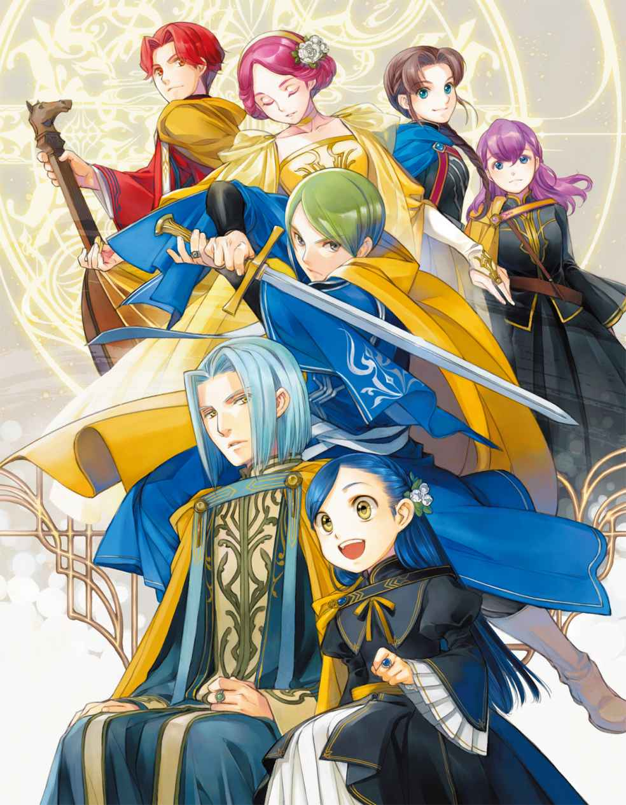

| 本好きの下剋上～司書になるためには手段を選んでいられません～第四部「貴族院の自称図書委員VII」 (TOブックスラノベ) | |
| 香月美夜 | |
| TOブックス (2019) | |
本好きのお茶会で昏倒したローゼマインはエーレンフェストに強制送還された。下町の面々との再会もあり、神殿での読書三昧に心はうきうき。冬の日々は穏やかに過ぎるように思えたが、聖典から謎の言葉と魔法陣が浮かび、引き籠もり生活は一変！ 貴族院二年生の終わりに向かって尋問会、聖典検証会議が続く上、見習いの名捧げ問題に直面。初参加の領地対抗戦を観覧中には、ダンケルフェルガーとのディッター勝負へ挑むことになるばかりか、表彰式をテロが強襲！ 卒業式を前に、ローゼマインはフェルディナンドと共に貴族院の騒乱を止められるのか!? 領地間の不穏な緊張感が高まる大人気ビブリア・ファンタジー最新刊！ 書き下ろしＳＳは卒業生二人の恋物語×２本、椎名優描き下ろし「四コマ漫画」収録！

イラスト：椎名 優 You Shiina
デザイン：ヴェイア Veia
突然、本当に何の前触れもなく、ローゼマインが倒れたことで図書館でのお茶会は強制的に終了となった。主催者が意識を失ったのである。そんな状態でお茶会が続けられるわけもない。
ハンネローレやヒルデブラントが言葉を失って
「ヴィルフリート坊ちゃま、シャルロッテ姫様。後はお任せいたしますね。わたくしは護衛騎士達と共に姫様を寮へお運びいたします。ブリュンヒルデは片付けを......」
リヒャルダは到着した二人を始め、その場にいる側近達へ指示を出すと、明るい紫色の目を見開いて歯をカチカチと鳴らしているヒルデブラントに挨拶して退室の許可を得る。ハンネローレ達にも簡単な挨拶をすると、足早に退室していった。
「......アルトゥール......。ローゼマインはどうなったのですか？ 何が起こって......」
震える声を耳にしてハンネローレは視線を向けた。目を見開いて小刻みに震えながら、ヒルデブラントが自分の筆頭側仕えに問いかけている。問われたアルトゥールの方も何が起こったのかわからないようで
ヴィルフリートとシャルロッテの二人は、蒼白になって涙目で混乱しているヒルデブラントを
「ヒルデブラント王子、ローゼマインが意識を失うことはよくあることなのです」
「お姉様は本当に体が弱くていらっしゃいますが、寮へ戻ればお薬もあるので大丈夫です」
ヴィルフリートが去年のハンネローレにも語ったように洗礼式や子供部屋での話をして慰めようとしたが、それは逆効果だったようだ。ヒルデブラントは「
けれど、アルトゥールにとっては多少なりとも安心の材料となったらしい。蒼白だった顔に少し血色が戻り、不安や混乱をヴィルフリートへ向けるヒルデブラントの肩を押さえた。
「ヒルデブラント様、彼女をよく知るエーレンフェストの領主候補生達が口を
王族がいれば、その対応が最優先にされて他のことは何もできない。幼い上に感情的になっているヒルデブラントと違い、筆頭側仕えのアルトゥールは周囲の状況もよくわかるのだろう。申し訳なさそうにヴィルフリートへ目配せし、手早く挨拶を済ませて退室していく。
王族が去ると、シャルロッテとヴィルフリートはその場に残っている客人の心配をし始めた。
「ソランジュ先生、驚かせて申し訳ございません」
「ハンネローレ様、大丈夫ですか？」
ヴィルフリートに声をかけられ、ハンネローレは「わたくしは大丈夫ですから」と繰り返す。大領地の領主候補生なのだから取り乱すわけにはいかない。その一心でハンネローレは同じ言葉を何度も口にする。その
ヒルデブラントの混乱ぶりがハンネローレには手に取るように理解できる。去年、全領地を招いたエーレンフェストのお茶会で手を握った瞬間、ローゼマインは意識を失ってその場に倒れた。それまで笑顔だったにもかかわらず、目の前で
「ハンネローレ様......」
ヴィルフリートが困ったように
「突然のことに驚きましたけれど、わたくし達はローゼマイン様が数日前にも寝込んでいたと
コルドゥラの冷静な指摘に、ハンネローレの思考が少し動き出す。確かに思い返してみれば、ローゼマインの体調が最初から良くなかったことをダンケルフェルガーは教えられていたのだ。
......コルドゥラがもっと早く言ってくれたら、わたくしもこれほど取り乱さなかったのですよ。
そう思った直後、彼女が今まで口を閉ざしていた理由にハンネローレは気付いた。王族への批判とも受け取られかねないのだ。主を落ち着かせるためとはいえ、コルドゥラに言えるわけがない。
ハンネローレが周囲を見回せば、ここに残ったローゼマインの側仕え達とソランジュの側仕えがお茶会の片付けを始めていた。自分達も早めに退室した方が良さそうだ。そのくらいの判断ができる程度にはハンネローレも落ち着きを取り戻していた。
「あの、わたくし達ももう......」
「私が寮までお送りしてダンケルフェルガーに説明してこよう。シャルロッテ、後を頼めるか？」
「えぇ、お兄様。わたくしは側仕え達と一緒にここを片付けて寮へ戻ります」
ソランジュを落ち着かせていたシャルロッテは、同行した自分の側仕え達にも片付けに参加するように指示を出している。一年生とは思えないシャルロッテの落ち着きぶりに、ローゼマインが倒れることは本当に
「去年に引き続き、ハンネローレ様を始め、お茶会に参加した皆様を驚かせてしまって本当に申し訳ございませんでした」
ヴィルフリートに送られて寮へ戻ると、彼はまたしてもローゼマインが倒れたことでお茶会が強制終了されたことをハンネローレの兄であるレスティラウトに説明してくれた。当然のことながら寮内の皆の注目が集まっている。
「ローゼマイン様が倒れられたのはヴィルフリート様の責任ではございません。それよりもお大事に、とローゼマイン様にお伝えくださいませ。わたくしは大丈夫ですから」
ハンネローレはできる限りの笑顔を作ってヴィルフリートを見送る。扉が閉ざされた途端、緊張の糸が切れたようだ。一気に疲れが
ハンネローレは階段へ向かって歩を進めたが、それが許される状況ではなかった。赤い瞳を険しくさせたレスティラウトがハンネローレを呼び止める。
「ハンネローレ、お茶会で一体何が起こったのか報告せよ」
「お兄様、できればもう少し落ち着いてからにしていただきたいのですけれど......」
「王族も参加したお茶会で起こったことだ。
強く言われれば断れるわけがない。ハンネローレは自室へ戻って着替える暇も、休息する時間も与えられることなく、お茶会へ参加した者達を伴って会議室へ移動することになった。
......もし、わたくしがローゼマイン様と同じようにお茶会で倒れたとしても、お兄様がヴィルフリート様のように迅速で丁寧な後始末をしてくれるとは思えません。
比べたところで何がどうなるわけでもない。わかっているけれど、厳しい顔のレスティラウトと、優しく声をかけてくれるヴィルフリートを比べてハンネローレはこっそりと
......わたくしもヴィルフリート様のように優しいお兄様がよかったです。
会議室にはレスティラウトとその側近、それから、ハンネローレとお茶会に同行した者達が集まった。ハンネローレはコルドゥラに手渡された木札を見る。お茶会の間、文官見習い達が書き留めていた物だ。普段は口頭でお茶会の様子を報告するだけで、特にお茶会の流れを書き留めないが、今日はローゼマインを
「以前からお話があったように、わたくしは協力者として図書館の魔術具への供給者になりました。これがその
ハンネローレは木札を読み上げながら、ローゼマインから与えられた腕章を指した。「
......ローゼマイン様がヒルデブラント王子にお仕事を依頼したことはどうしましょう？
報告を聞いている兄の様子を窺いながら一度口を閉ざし、ハンネローレは口を
「本の貸し借りも行いました。それから、ダンケルフェルガーの歴史書の現代訳をローゼマイン様から預かりました。その訳に間違いがないか確認してほしいそうです」
「......ふむ。ダンケルフェルガーの歴史書か。ならば、正しいかどうか、私が
レスティラウトが浮かべている意地の悪い表情に気付き、ハンネローレは精一杯の力を込めて
レスティラウトが「どれだ？」と手を出すと、お茶会に同行していた文官見習いのクラリッサが大事に抱え込んでいた紙束をギュッと抱きしめるようにして拒否した。
「レスティラウト様にはお渡しできません」
「クラリッサ、其方、どういうつもりだ!? 」
彼女はハンネローレの側近ではない。今回は本来の社交時期から外れているお茶会なので自分の側近だけでは足りず、ハンネローレは時間の空いている上級貴族を募って出席したのだ。兄だけではなく、ハンネローレも驚いて彼女を見つめた。
「ローゼマイン様は現代語訳の確認だけではなく、エーレンフェストで本にしても構わないか、アウブ・ダンケルフェルガーに許可を求めていらっしゃいます。領地対抗戦でお互いのアウブがお話をすることになっているので、急いで領地へ送らなければなりません」
領主同士の話になることを前面に出してクラリッサが
「クラリッサの言う通り、急ぎの案件なのです」
二人がお互いに
「事情はわかりましたが、他領から託された物について、次期領主であるレスティラウト様に確認していただく必要があります。領地対抗戦におけるアウブの交渉を妨げないように三日で目を通せるところまでならば許可いただけますか？ 三日後には私が責任を持ってアウブへ送ります」
ケントリプスの提案は
「三日も
「私も読みたいです！ ランゲルトゥスの英雄
「いやいや、ランゲルトゥスよりガールスハウトの方が......」
クラリッサの
ハンネローレがコルドゥラを見上げると、彼女は頷いてパンパンと強く手を
「静まりなさいませ。他領からのご要望ですからアウブが最優先です。領地対抗戦までに回答できる状態にしなければダンケルフェルガーの体面に関わります。ローゼマイン様とのお約束を破ることになるのですよ」
最後の一言はクラリッサへ
「糸で
「コルドゥラ？」
「どの程度の精度で現代訳をされているのかを調べるだけならば、半分あればアウブにもおわかりになるでしょう。前半を領地へ送り、後半を寮へ残します」
クラリッサを始めとした皆の暴走を止めてほしかっただけなのに、コルドゥラが
「レスティラウト様が確認しておくことは必要でしょう。ですが、お預かりしたハンネローレ姫様が何もわからないようでは困ります。お二人とも順番に後半部分へ目を通してくださいませ」
......わたくしはダンケルフェルガーの歴史書を読むくらいならばエーレンフェストの恋物語を読みたいのですけれど。
ハンネローレはそう思ったけれど、コルドゥラの提案に
「コルドゥラ様、わたくしは......」
「クラリッサはクラリッサにできることをすればいかが？ ローゼマイン様はお話を集めているとおっしゃったでしょう？ お話を集めて
コルドゥラの助言にクラリッサが
「課題用、挨拶用の写本はしていますが、お見舞い用については考えていませんでした。コルドゥラ様のおっしゃる通り、お見舞い用のお話を集めれば喜んでいただけるでしょう」
クラリッサが意気込んだように青い瞳を輝かせて拳を握る。やる気が出たことは喜ばしいが、ハンネローレは少しだけクラリッサの言葉に引っかかりを覚えた。クラリッサが勝手に盛り上がってローゼマインに心酔していることはわかっていたけれど、お茶会の様子を思い返してもローゼマインとクラリッサの間に面識はなかったはずだ。
「......課題用と挨拶用とは何かしら？ クラリッサとローゼマイン様は面識があるのですか？」
ハンネローレの問いに、クラリッサが背中の三つ編みを少し揺らして恥ずかしそうに
「わたくし、去年の貴族院でローゼマイン様の側近に求婚し、先日、とうとう課題を達成したのです。ですから、領地対抗戦で正式にご挨拶できると思うと......」
以前からクラリッサはエーレンフェストの情報をよく知っていると思っていたけれど、結婚を決めた相手がいたからのようだ。求婚が受け入れられて喜んでいるクラリッサは、普段よりずっと愛らしい雰囲気だった。ハンネローレまで微笑ましい気持ちになってしまう。
「求婚の課題を達成できてよかったですね。その調子でお話集めも頑張ってくださいませ。わたくし、ダンケルフェルガーの文官見習い達が集めたお話がエーレンフェストの本になることを楽しみにしていますから」
ハンネローレはクラリッサを
「そこで突然ローゼマイン様が倒れました」
「は？ 何故だ？」
「......ハンネローレ様、さすがにそれは......。何か報告を忘れていませんか？」
レスティラウトとその側近達が揃ってビックリした顔になった。だが、お茶会に参加した者は全員があまりの唐突さに驚いたのだ。報告を忘れてなどいない。
「何の前触れもありませんでした。本当に突然だったのです」
「ローゼマイン様の側近や後始末に呼ばれたヴィルフリート様達は慣れた様子で対処していましたが、その場にいた客人側は全員がどうして良いのかわかりませんでした」
同行者達が次々と証言してくれる。口を
「もう良い。ハンネローレの報告に間違いがないことはわかった。倒れた原因は全く不明か？」
「ローゼマイン様は数日前も寝込んでいらっしゃったようで、アウブ・エーレンフェストから帰還命令が出ているくらいに体調が良くなかったようです。王族をお招きしているので無理をしたことが原因ではないか、とコルドゥラが......」
「そのような虚弱さで、よく領主候補生が務まるな」
レスティラウトが面倒臭そうな顔になってガシガシと頭を
「以上がお茶会で起こったことです。わたくし達はもうお部屋へ戻ってもよろしくて？ 驚きのあまり感情が揺れて非常に疲れているのです」
ローゼマインの昏倒に感情が揺れたのはハンネローレだけではない。同行した者全員が同じように疲労を覚えているはずだ。それ以上はレスティラウトも
ようやく自室に戻れたことで、ハンネローレはホッと
「ルーフェン先生が会議室を見ながら、職員会議の開催について頭を抱えていましたよ」
講義を終えたルーフェンが戻ってきた時には会議室が完全に閉ざされていたらしい。彼はローゼマインが倒れたことでお茶会が早めに終わったことを周囲の学生から聞いたそうだ。
「まぁ。神殿事情の聴取よりローゼマイン様の体調の方がよほど大事ではありませんか」
「エーレンフェストへ帰還する前にヒルデブラント王子にお願いして、王族命令でローゼマイン様の帰還日を延ばしていただこうと考えていたようですけれど、王子に断られたのですって」
ルーフェンがオルドナンツを送ったところ、「領地で休養が必要な者を命令で留めるようなことはできない」と突っぱねられたらしい。お茶会でのヒルデブラントとその側近達の動揺ぶりを見ていたので、とてもそのような王族命令は出せないだろうとハンネローレは思う。神殿事情ならば中央神殿でも、ダンケルフェルガーの神殿にでも問い合わせれば良い。ローゼマインの休息の方が大事だ。王族を招いたお茶会で倒れるほど無理をしていたローゼマインの帰還が、神殿事情の聴取などというどうでも良いことで
「王族命令で無茶を強要されることがないという点では安心ですね。エーレンフェストならば貴族院と違ってゆっくり休めるでしょう。ローゼマイン様には早く良くなってほしいと思いますもの」
数日後、ローゼマインの意識が戻った報告と帰還の挨拶がハンネローレの元に届いた。
転移陣の揺らぎが消え、わたしはゆっくりと目を開ける。護衛騎士としてわたしの斜め前に立っているコルネリウスの背中が見えた。わたしが転移酔いしてよろけないように背中を支えてくれていたリヒャルダの手が離れていく。
「おかえりなさいませ、ローゼマイン様」
「ただいま戻りました、アンゲリカ、ダームエル」
転移陣のある部屋に出迎えに来てくれていた一同の一番前にいたのは、護衛騎士の二人だ。またボニファティウスの特訓を受けていたのか、ダームエルがとても疲れた顔をしている。そんな二人の前にコルネリウスが転移陣から踏み出して、護衛騎士の引き継ぎを始めた。
「二人にローゼマイン様の護衛をお願いします。私はこれからすぐに貴族院へ戻るので......」
「戻るのは難しくないですか？」
アンゲリカが首を傾げながら後ろを振り返った。アンゲリカの視線の先には出迎えに来てくれている保護者達がいて、領主夫妻と騎士団長夫妻とフェルディナンドとボニファティウスがずらりと並んでいる。そちらに視線を向けたコルネリウスが、うっと小さく
「あら、コルネリウス。大事なお話が済んでいないでしょう？ せっかく戻ってきたのですから、すぐに戻ると言わず、一晩くらいはゆっくりしていきなさい」
しずしずと前に出て、護衛騎士の間に割って入ってきたのはエルヴィーラだ。顔はニッコリと笑っているが、
「母上......。先日お返事した通りです。まだ講義が終わっていませんから、終了後には必ず戻りますし、お話もいたします」
コルネリウスが引きつった笑みを浮かべ、エルヴィーラから一歩でも遠くへ離れようとじりじりと後ずさる。護衛騎士の引き継ぎだけを大急ぎで終えると、すぐさま身を
「次は男らしく覚悟を決めて戻ってらっしゃい。......二人で」
嫌そうに顔をしかめたコルネリウスの姿が揺らいで消えた。コルネリウスは「最終学年だから学生生活を
「二人で、ということはお母様はお相手の方をご存じなのですか？」
「詳しくはお茶会でお話ししましょう。わたくしも貴女に色々と尋ねたいことがあるのです」
お茶会の約束をすると、エルヴィーラは一歩退いて体の向きを変えた。リヒャルダにそっと背中を押され、わたしはずらりと並んでいる他の保護者達に挨拶をする。
「ただいま貴族院より戻りました」
「これほど早く講義を終えるとは思っていなかったぞ、ローゼマイン。私の孫娘は実に優秀だ」
ボニファティウスが笑顔でわたしを
「ローゼマイン、今日の夕食は私も一緒に
ハルトムートの報告書はわたしが寝込んでいる間に送られてしまっているので、目を通していない。聖女賛美が並んでいたとフィリーネから聞いただけだ。それに、わたしは活躍できなかった。残念なことに攻撃が全く当たらなかったのだ。そんな話をボニファティウスにしたくない。
「騎士見習い達の活躍についてお話しいたしますね。皆、頑張ったのです。おじい様が
一瞬、「約束です」と言って指切りをすることが頭に思い浮かんだが、ボニファティウスと指切りしたら小指の骨が折れそうだと思って、
ボニファティウスとのお話を終えると、一歩前に進み出てきたのはジルヴェスターだ。
「待っていたぞ、ローゼマイン。着替えたら執務室に来なさい」
何だかジルヴェスターの声に力がない。疲れが出ている気がする。去年は怒りの
......何かあったのかな？
わたしはリヒャルダや護衛騎士達と共に一度自室へ戻って着替え、それから領主執務室へ向かう。
執務室にはジルヴェスターとカルステッドとフェルディナンドが待ち構えていた。こめかみをトントンと軽く叩きながらわたしを睨み、最初に口を開いたのはフェルディナンドだった。
「ローゼマイン、君とはまず平穏という言葉の意味から
お説教タイムの開始かと思って身構えていたので、肩透かしを食らった気分だ。けれど、わたしは真面目に「わたしにとっての平穏」を考える。
「図書館に
やっと講義が終わって、図書館通いができるようになったのに強制送還である。わたしの図書館と読書時間を返して、と不満を
「こちらも呼び戻したくて呼び戻したわけではない」
「ローゼマイン、何故呼び戻されたのか、わかるか？」
カルステッドに問われて、わたしは頬に手を当てて考えてみた。自分の中で失敗したと認識しているのは、水鉄砲で
「呼び出しを受けた時期がターニスベファレンの直後だったので、勝手に出陣して倒れてしまったことが原因かもしれないと考えています。どうでしょう？」
「......かもしれない、というのは何だ？」
「よくわからないのです。自分の何が悪いのか。今年は去年に比べると、わたくし、あまり叱られるようなことはしていませんよね？」
首を傾げていると、保護者三人が揃って溜息を吐いた。
「まずは報告書の書き方だ。印刷業や神殿における仕事の報告書はまともに書けるのに、何故貴族院の報告書はこのような有様なのだ？ 必要性の薄い報告書が届くのは何故だ？」
フェルディナンドが貴族院からの報告書をずらりと並べる。そこでやっと気が付いた。
「必要だと感じたことは文官達が書くので、同じ内容を書いても仕方がないと思っていました。
どうやらそういう
「わたくしは
「なるほど。道理でずいぶんと感情的な報告書だったわけだ。今後は成績向上、流行発信、図書委員活動を印刷同様の重要な事業としてとらえ、報告書を作成するように」
フェルディナンドの言葉で、わたしもやっと保護者達が求める報告書を理解できた。エーレンフェストにおける重要な事業の報告書が必要だと言われれば、あの報告書ではダメだ。
その後も、自分の言動について色々と指摘を受けた。一番大きな問題は図書委員に集中していた。ヒルデブラントに腕章を贈る約束を勝手にしたこと、主の座を譲らず、ヒルデブラントを協力者として登録したこと、督促の仕事を振ったことなどだ。
「でも、図書委員ですよ？ 図書館でお仕事をしなければ何をするのですか？」
「報告書を見たところ、其方が頼まれている仕事は魔力供給だけのはずだ。督促は其方等の仕事ではない」
ジルヴェスターにぴしゃりとそう言われて、わたしは「そうでした」と
......ごめんなさい、ソランジュ先生！
「うぅ、フェルディナンド様の督促があれば、本の返却率が素晴らしいので助かるとソランジュ先生がおっしゃったから、王族が督促を送れば完璧に返していただけると考えただけなのです。適材適所だな、と」
「適材適所かどうかを判断するのは君ではない。王族が君に命じるのは全く問題ないが、君が王族に命じてはならない」
保護者達の言い分から考えたところ、わたしはヒルデブラントを学校の図書委員仲間と捉えていたが、どうやら社長の息子と下っ端の平社員くらいに立場が違うことがわかった。図書委員仲間が仕事を分担するのと、下っ端の平社員が遊びに来ていた社長の息子に仕事を振るのでは全く別物だ。
......そりゃ、皆が固まるはずだよ！
のおおぉぉ、と頭を抱えて、自分のしでかした失敗に今更ながらのたうち、これから先も図書委員として王族と付き合っていかなければならない現実を理解して泣きたくなった。それほど立場が違う大変なお付き合いは麗乃時代にもしたことがない。
「では、これからどうすれば良いのですか？ わたくしとハンネローレ様がどのように仕事の分担をするか話し合っている時に、ヒルデブラント王子が交じりたそうな顔をしたら本人がやると言い出すまで無視しておくので問題ありませんか？ ヒルデブラント王子は仲間外れの気分になると思うのですけれど、それが王族との正しい付き合い方ですか？」
腕章の時もヒルデブラントの表情を読んだだけなのだが、敢えて無視するのが正しかったのだろうか。わたしの質問にフェルディナンドがものすごく難しい顔をした。
「君はいつもそのように、会話や少しの仕草などから向き合った相手が必要なもの、欲しているものを的確に読み取る。それ自体は悪いことではない。美点だと言える。だが、周囲の思惑や相手を取り巻く環境を一切
王族だろうが、上位領地だろうが、わたしと相手だけは仲良くなって上手くいく。けれど、周囲は迷惑したり、困惑したりする展開になるのだとフェルディナンドが指摘した。
「周囲まで見ることができるようになれば強力な武器になるのだが、今のところは後々何が起こるのか予測不可能な危険なものでしかない。特に王族を巻き込んだ事態になれば、エーレンフェストがどのような立ち位置になるのか、全く予想できなくなる」
王族にはなるべく関わらないようにしてほしいと言われて、わたしはそっとフェルディナンドから視線を
「視線を逸らすな、ローゼマイン。君は一体何を
「ヒルデブラント王子と関わらないのは無理ですもの。お約束できません」
「何故だ？」
「わたくし、王宮図書館にお誘いを受けたのです。ヒルデブラント王子と仲良くして、許可をもぎ取って王宮図書館に行く予定なので、関わらないということはお約束できません」
図書館司書のソランジュと本好き仲間のハンネローレとヒルデブラントは、貴族院の中でわたしが一番仲良くしたいメンバーだ。こちらから積極的に関わっていきたい相手なのである。関わり方は教えてほしいが、関わらずに済ませることはできない。
「王宮図書館は駄目だ」
ジルヴェスターが厳しい表情でそう言った。
「話が出ただけで倒れたのであろう？ 実際に行ったら入る前に倒れたり、派手な祝福をしたり、思わぬ
「そんな
ぐるりと見回したが、どの保護者も「付き添いはしない」という顔でわたしを見下ろしている。大変だ。はるか昔に捨て去った自重が今になって必要になってきた。けれど、王宮図書館を前にわたしが自重できるだろうか。全く自信がない。
「王宮図書館......」
自重を覚えるまでは絶対に許可を出さないと言われたけれど、自重できるようになったかどうかなど、誰かが見て判断できるはずがない。なんだかんだと理由を付けられて、わたしは王宮図書館に行けないのだ、きっと。
......行きたいな、王宮図書館。
「せめて、突然倒れることがなくなるまでは行かせられぬな。今回もヒルデブラント王子を始め、側近に多大な心労を与えてきたのであろう？」
王宮図書館にいる者にトラウマを植え付けたいのか、というようなことをカルステッドに言われ、わたしはしょぼんと項垂れた。植え付けるつもりはない。目の前で倒れられるのが心臓に悪いことも、後始末に周囲が
......うぅ、王宮図書館が遠い。
「王族に関しては距離感や立場の違いをよく理解していなかったようなので、決して対等ではないと頭に刻み込んでくれればそれで良い。それから、ターニスベファレンの件だが......」
......ハルトムートの報告書、テンション高っ！
「同じ事柄について報告しているようにはとても見えなかった。何が起こり、どうなったのか、報告してくれ」
わたしはシャルロッテの報告書に足す感じで、ターニスベファレンに関することを話していく。ハルトムートの報告書はなるべく視界に入れない。フェルディナンドがシャルロッテの報告書に色々と書き足していくのが見えた。
「それにしても、ローデリヒの話からターニスベファレンだとよくわかったな。あれはベルケシュトックの方に生息している非常に
「去年、領地対抗戦のディッター対策として魔物の資料をレオノーレが調べていたのです」
ディッターに出てくる難易度の魔物ではなかったので、他の騎士見習いには報告しなかった魔物の内の一つだとレオノーレは言っていた。
「私も同じ資料を読んだことがある。......それに、ベルケシュトックの騎士見習いから話を聞いたこともあるからな」
ベルケシュトックはアーレンスバッハとダンケルフェルガーに分割されていて、今は存在しない領地だが、とフェルディナンドが付け加える。
わたしはターニスベファレンとの戦いの様子を伝えていった。闇の神の祝福を与えるために戦地に向かったこと、攻撃が当たらなかったので神具のマントを使ったこと、採集場所を再生させたこと。
「ルーフェン先生が中央の騎士団を率いてやってきた時、いくつか質問をされたのですが、わたくしはもう頭が
「何を問われて、君はどのように答えたのだ？」
わたしが覚えている限りのルーフェンにされた質問と自分の答えを述べると、保護者達が「うーん」と
「わたくしの答えでは納得できなかったようで、また呼び出されるそうです」
「さもありなん」
「でも、それ以外に答えようがないのですよ」
神殿長だから聖典を読んでいて
「事情聴取の際は、騎士が使う
「え？」
「あれは貴族院で教えることを禁じられている呪文なのだ」
「何故ですか？ ターニスベファレンのような魔獣が出た時に危険ですよね？」
「魔獣よりも危険なのは、人間だ」
フェルディナンドによると、貴族院で黒の武器に関する呪文が教えられなくなったのは、ずっと昔のことらしい。今のような政変の後、広範囲で魔力が
「コルネリウス兄様達も知らなかったのは何故ですか？ トロンベ退治には必須ですよね？」
「以前は騎士見習いのコースに入り、貴族院で神々の加護を得れば騎士団で教えられる呪文だった。だが、今は遠征に連れて行けると判断された騎士だけに教えることになっている」
「何故そのような変更をしたのですか？」
カルステッドがチラリとわたしを見て、仕方がなさそうに教えてくれる。
「其方も知っている通り、青色神官上がりの貴族が増え、政変後の教育課程の変化によって新人のレベルが
......あ！ シキコーザのせいか。
そういえば、トロンベ討伐の時に「新人の教育がなっていない」とカルステッドはフェルディナンドから
「呪文と祝詞は違うのですか？」
「そうだな。戦地で使うには祝詞は長すぎる。間違えて発動しなければ大変なので、改変されている部分が多い」
騎士達が使う呪文は祝詞を少しずつ省略しているものだそうだ。完全に祝詞を唱えるのと違って、ちょっと
......初めて知ったよ。
「あ、そうそう。これをフェルディナンド様に。ハルトムートからのお
わたしはハルトムートが描いた魔法陣を渡した。ジルヴェスターとカルステッドも
「ローゼマイン、君はこれに魔力を注ぎ込んだのか？」
「土地を癒す儀式を行ったら、勝手に浮かび上がってきたのです。何の魔法陣ですか？」
「あの部分を採集場所として成り立たせるために必要な魔法陣だな。かなり複雑で多くの要素が詰まっている」
そう言う口元がわずかに
フェルディナンドの魔法陣講座が始まるのをジルヴェスターが眉間に皺を刻みながら難しい顔で
「ちょっと待て、ローゼマイン。土地を再生させるのは中央神殿の仕事ではないか？」
「早く再生しなければエーレンフェストの学生達の講義に差し
中央神殿の仕事かもしれないが、
「仕事を残しておけば良いという問題でもないぞ。学生達が助かったのは事実だが」
「これだけの魔法陣だ。完全に作用させようと思えば、中央神殿の青色神官や
「全然足りませんでしたよ。フェルディナンド様の回復薬を飲みながら行いましたが、回復していく端から、どんどん魔力を吸い出される感じで、本当に大変だったのです」
フェルディナンドは魔法陣から目を離さずに「大変だった、で終わるようなものではないのだが」と
「完全に再生したそうだが、回復後の採集場所で採れた素材は持ち帰っていないのか？」
「素材は持ち帰っていませんね」
魔法陣はともかく、素材を持ち帰るという発想はなかった。あの採集場所の素材は講義で使うための物だからだ。
「ハルトムートに再生した部分の素材を送るように指示を出しておきなさい。君の魔力で育った素材にどのような違いがあるのか研究したい」
「フェルディナンド様はやっぱりヒルシュール先生の弟子ですね。研究しか見えていないところがそっくりです。ヒルシュール先生も騎士団と一緒に来たのに、特に
もうちょっと心配してもいいと思うんですけど、とわたしが言うとフェルディナンドがわずかに目を伏せた。
「フェルディナンド様？」
「私が騎士見習い達と森の奥で魔獣を倒す度に心配してヒルシュールが出てきていたのだが、それが面倒で、後始末もするから討伐が終わり、怪我がなければ心配するな、と追い払っていたのだ。そのせいだろう」
「フェルディナンド様のせいですか！」
この師弟はダメな方向に信頼感や慣れを育てている。このままではライムントが危険だ。わたしがライムントの心配をしていると、保護者に揃って溜息を吐かれた。
「アーレンスバッハの学生より先に、ローゼマインは自分の心配をしてくれ」
......あ、ごめんなさい。
その後もお説教らしいお説教はほとんどなく、疲れ切っている保護者達との話は「王族との接触を控えさせたいので、
......何だろう？ この、怒らなくていいの？ って尋ねたくなる感じ。口に出したら間違いなく怒られるだろうから、言わないけど。
去年と違って早目に貴族院へ戻るのは、ヒルデブラントが出歩けなくなった時期の貴族院で社交経験を積み上げるためらしい。
......社交
ハンネローレと本の感想を言い合うようなお茶会だったら進んで参加するが、興奮しすぎて倒れそうなお茶会は周囲からも許可が出ないだろう。
......世の中、上手くいかないね。ハァ......。
「オティーリエ、この手紙を貴族院へ送ってください」
転移陣の間にいる騎士に渡してほしい、と頼む。再生した採集場所の素材採集をお願いするハルトムート宛の手紙だ。オティーリエは宛先を見た途端、不安そうな顔になった。
「ローゼマイン様、貴族院でのハルトムートの様子はいかがでしたか？ 皆様にご迷惑をかけていないでしょうか？」
「ハルトムートは情報収集や色々なことの根回しを頑張ってくれましたし、養父様に提出する報告書もまめに書いてくれています。今日読んだ報告書でも生き生きしていました。楽しい貴族院生活を送っているのは間違いありません」
わたしはオティーリエを安心させようと思ったものの、それ以上は何も言えなかった。「採集場所の再生儀式を見て、ローゼマイン様は本当に聖女だったと興奮し、神に感謝していました」なんて、わたしの口からはとても言えない。
「姫様、そろそろ夕食の時間ですよ。ペンを置いてくださいませ」
リヒャルダに声をかけられたので、わたしはペンを置いて立ち上がる。この後は夕食の席でボニファティウスとターニスベファレンの討伐に関する話をするのだ。
......わたし、ハルトムートの報告書のせいですごく活躍したことになってるんだけど、どうしよう？ 本当のことを言ったら、おじい様、ガッカリしない？
頭を悩ませながら夕食の席に着いた。ボニファティウスの席はわたしの隣で、フェルディナンドも一緒にいる。食事を摂りながら、わたしはボニファティウスに問われるままに答えていった。
「それで、ローデリヒの話からレオノーレがターニスベファレンだと気付きました。わたくしは皆の武器に闇の神の祝福を与えるために出発したのです。採集場所には誰もおらず、戦いの場は森に移っていました。ローデリヒと採集に出ていたマティアス達が採集場所を守るために誘導したそうです。わたくしが到着した時にはマティアス達やヴィルフリート兄様達がとても大きいターニスベファレンを相手に時間稼ぎをしていました。ローデリヒの報告より大きくなっていたのは、トラウゴットが全力で攻撃したせいだったようです」
「トラウゴットが？ むぅ......」
笑顔で話を聞いていたボニファティウスの雰囲気が不意に
「あ、でも、ターニスベファレンに関する情報がまだ届いていなかったので仕方がなくて......」
わたしは慌ててフォローしたが、護衛騎士としてジルヴェスターの後ろに立ち、そのやりとりを聞いていた騎士団長のカルステッドが顔をしかめた。
「それは違う。マティアス達が攻撃せずに時間稼ぎをしている状況に気付かなかった視野の狭さに問題があるのだ。皆が無事だったから良かったが、ターニスベファレンの巨大化によって死人が出ていてもローゼマインは同じように言えるか？」
たまたま今回は周囲のフォローが上手くいっただけだ、と騎士団長であるカルステッドに言われ、わたしは言い返すこともできずに頷いた。
「皆が闇の神の祝福を得たので攻撃を開始し、わたくしは水鉄砲を撃ったのですが、ターニスベファレンにはちっとも当たらなかったのです。わたくしの攻撃だけ全力で逃げて......」
「さもありなん」
フェルディナンドが片方の眉を上げて、わたしを見た。
「今の説明を聞く限り、君のミズデッポウという武器は魔力を撃ち出す物であろう？ 闇の神の祝福を得た武器で攻撃すると、籠めた魔力の倍ほどの魔力を敵から奪うことができる。君からの攻撃を最も警戒して当然だ」
「うむ。ターニスベファレンにとってはローゼマインが一番の
強いボニファティウスに褒められるとわたしはすごく強くなった気がする。攻撃が当たらなくても貢献したと言われて嬉しくなり、わたしはボニファティウスの方に少し身を乗り出した。
「では、闇の神のマントで動きを止めたのも貢献になりますか？」
「闇の神のマント？」
「ターニスベファレンがわたくしを見るせいで攻撃が当たらないので、見えないようにしようと思って、水鉄砲を闇の神のマントに変えて頭を覆いました。そうしたら、動きが止まったのです。......わたくしの武器もなくなってしまって、結局攻撃を当てることができませんでしたけれど」
わたしが自分の失敗を含めてそう言うと、一番に反応したのはカルステッドだった。
「武器を変えたと言わなかったか？」
「えぇ、闇の神の祝福を打ち切らなければ、形を変えることはできるのですよね？」
「いや、無理だ。一度黒の武器に変えると、解除するまで形を変えることはできない」
カルステッドの言葉にわたしは説明を求めてフェルディナンドへ視線を向けた。
「......それが呪文と祝福の違いかもしれぬ。他にもどれだけの違いがあるのかについては興味深いと思うが、トロンベ討伐の途中で武器を変えなければならぬような事態が起こることは
戦いやすいように短縮、簡略化されてきた呪文を、武器の形を変えることができるからといって祝詞に直す有用性は低い、とフェルディナンドが言う。
「ローゼマイン、其方は神具を使うのか？」
「そうですよ、おじい様。神殿育ちのわたくしにとって一番身近ですから。どうかしましたか？」
「いや、ローゼマインのように自在に神具を扱う者を知らなかったので驚いたのだ。神殿育ちにも色々あるものだな」
ボニファティウスは青色神官上がりの騎士が神具を扱うところを見たことがないらしい。わたしは処刑されてしまったシキコーザしか神官上がりの騎士を知らないので、「神具は結構便利なのですけれど、何故使わなかったのでしょうね？」としか言えない。首を傾げたわたしを見て、フェルディナンドが
「普通の貴族は神殿に近付かぬから神具を見ることも触ることもない。また、神殿育ちであることは貴族社会で汚点扱いにされるので、神殿を連想させる神具を自分の武器にしようとは考えないのだ。何より、神具として使うには魔力が多く必要になるので、普通の神官上がりの騎士には荷が重い」
「それに、
カルステッドの言葉にジルヴェスターも頷いた。
「祭壇にあるのを見ることはあるが、明確に思い浮かべるのは難しいぞ」
「更に付け加えるならば、神具を便利な物扱いする者が君くらいしかいない。神々の扱う神具を自分が使うために具現化するなど畏れ多い」
「フェルディナンド様だけには言われたくありません！ 神具を便利に使っているのは、わたくしよりフェルディナンド様ではありませんか！」
わたしの武器としてライデンシャフトの
「闇の神のマントは最後の手段や隠し玉としなさい、と私は教えたはずだ。自分の攻撃を当てるための目隠しなどという愚かな目的のために気軽に使うのではない、馬鹿者」
「うっ......。申し訳ございません」
闇の神のマントは敵の魔力を吸い取り、自分の物にすることができる神具だ。魔力が枯渇し、追い詰められた時の最後の手段にしろ、と確かに言われた。視界を妨げる大きな布、と考えた時に思いついたのが闇の神のマントだけだったので、使ってしまったのはわたしだ。
「神具を使う
「ちょっと待て、ローゼマイン」
マントから話題を逸らして話を進めていると、険しい顔でボニファティウスがストップをかけた。
「闇の祝福を皆の武器に与え、ターニスベファレンの注意を引きつけ、最終的には視界を奪って動きを止めた其方の貢献度が低いわけがなかろう」
ボニファティウスの指摘にわたしは首を傾げた。あの現場では誰も文句を言っていなかったと思う。貢献度が最も高かったのはコルネリウスで、次点でヴィルフリートだったはずだ。ローデリヒのためにもらった魔石の素材を考えても、わたしの貢献度はそれほど高くなかった。
「貢献の順位はダメージを与えた順番ではないのですか？」
「ダメージを与えるための準備こそが
ボニファティウスによると、貢献度の順位付けが間違っているらしい。わたしは他の意見を求めて、ジルヴェスターやカルステッドへ視線を向ける。皆が口を揃えて、貢献度の決め方が間違っていると言った。
「攻撃した者しか貢献に数えられぬのであれば、根底では皆が攻撃のために突っ込むことしか考えないようになる。いくら連携について教えたところで身に付かぬ」
「おそらく速さを競うディッターしか行っていない
騎士達を鍛え中のボニファティウスに
「貢献度を決めるための注意事項もあったので、座学では習っているはずですよ。でも、座学と実践が
「今回の貢献に関する判断を行ったのがコルネリウスで、他から異論が出なかったところが最も大きな問題だ。全員まとめて要教育だな」
どうやらボニファティウスによる騎士見習い達への特訓はまだまだ続きそうである。
わたしはハンネローレに借りた本を読んで数日を過ごし、エルヴィーラやフロレンツィアとのお茶会の日となった。今日は三人だけである。フロレンツィアとエルヴィーラはわたしにとって社交の先生なので、ある意味、とても緊張する。
「強制的に帰還させられてしまって残念ですね。お友達との交流を楽しみにしていたでしょうに」
......お友達がハンネローレ様くらいしかいないので問題ありません、なんて言えないよ！ ついでに、図書館に籠もっていられたら交流なんて別に、とはもっと言えない！
冷や汗が出そうになるのを感じながら、わたしはできるだけ
「ヒルデブラント王子を相手に色々と失敗していたようなので、仕方がありません」
「わたくし、ローゼマインを厳しく叱らないように、とジルヴェスター様には申し上げたのですけれど、厳しく叱られたのですか？」
今年は怒られないなと思っていたら、なんとガッツリお説教をする予定だったジルヴェスターをフロレンツィアが叱ったらしい。貴族院の成績を一気に押し上げて、流行を発信し、これまでにはなかった上位領地との交流を持った功績も見ずに叱るだけなのは子供の教育に良くない、と。
「もちろん、ローゼマインの社交に問題がないとは言いません。学ばなければならないことはたくさんあります。けれど、それと頑張りを認めないのは別ですからね。貴女が神殿育ちで貴族の常識が足りないことを知っているのですから、その摺り合わせが先でしょう、と申し上げたのです」
そう言ってフロレンツィアが優しい微笑を浮かべる。なんとフェルディナンドにも「教えたことができていないのならば叱れば良いでしょう。けれど、口に出してきちんと教えていない常識の違いが原因だった場合は、自分達の教育が足りてなかったのだと自省なさいませ」と大きな釘を刺してくれたらしい。
「去年の今頃に比べれば、社交も良くなっていますもの。ローゼマインはエーレンフェストのために努力できる子ですから、わたくしはそれほど心配していません」
......おぉ、
保護者達からはなかった激励の言葉に感動して、わたしはフロレンツィアを見た。本当に聖母のような微笑を浮かべたまま、フロレンツィアは更に笑みを深める。
「貴族院でお友達もたくさん作るのですよ。仲の良い友人はかけがえのない宝になります。領主会議においても、交流のあった方がいるだけでずいぶんと変わるものですから」
「が、頑張ります」
......一応頑張るけど、養母様、それ、わたしにとってはかなり難題です！
保護者達の怒りに満ちたお説教から救ってもらい、「友達を作ろう」という言葉も善意だとわかるから、
......ああぁぁ、養母様の笑顔と期待が重いよ！
お茶を飲むことで
そんなわたしとフロレンツィアのやりとりを静かに見ていたエルヴィーラはカップを置いて、ハァ、と息を吐いた。何やら
......さて、今日の愚痴は夫か、息子か。
「ローゼマインは努力が見られるからまだ良いのです。問題は我が家の嫁達ですよ」
......嫁だった！
エルヴィーラはわたしの後ろに護衛騎士として立っているアンゲリカへ視線を向ける。
「アンゲリカは強くなることばかりで、あのエックハルトよりも結婚のことを考えていませんし、社交の場では基本的に微笑んでいるだけで積極的な交流を持とうとしません。結婚すれば少しは変わると思いますか？」
「アンゲリカは全く変わらないと思います。積極的に社交に出て、その場を取り仕切るアンゲリカの姿など思い浮かびませんもの。それがわかっているから、アンゲリカの両親はエックハルト兄様との結婚を辞退したがったのでしょう？ 期待する方が間違っていると思います」
わたしの答えに、エルヴィーラは「わかってはいるのですけれど」とやるせなさそうな溜息を吐いた。話題に上がっているアンゲリカは逆に嬉しそうな顔で
「さすがローゼマイン様ですね。わたくしのことをよく理解してくださっています。ローゼマイン様の言う通り、わたくしはそう簡単に自分を変えられません」
「こんなときばかりハキハキ答えなくてもよろしくてよ、アンゲリカ」
アンゲリカに結婚する気が全くと言っていいほどないので、エルヴィーラはエックハルトに第一夫人を先に
......アンゲリカとの結婚は、アンゲリカが
「エックハルトはフェルディナンド様に名を
エルヴィーラはゆっくりと首を横に振った。
「社交ができないわけではないのですけれど、社交の場に出すことに苦労するのですよ。まぁ、これからしばらくの間は仕方がないと
「あの、お母様。アウレーリアに何かあったのですか？」
わたしが心配して尋ねると、エルヴィーラはフロレンツィアと視線を交わした後、クスッと小さく笑い、声をひそめて教えてくれた。
「
「え？」
「子ができたのですよ、ローゼマイン」
わたしは驚きに目を見張って、無言でコクコクと頷きを繰り返す。
「男の子でしょうか？ 女の子でしょうか？ お祝いに本を準備しなければなりませんね。
「ローゼマイン、落ち着いてちょうだい。まだ判明したところですから、このまますんなりと生まれるかどうかわかりません」
「え？ どういうことですか？」
エルヴィーラの説明によると、赤ちゃんに魔力を注いでいくのが大変なのだそうだ。赤ちゃんに魔力を流さなければ、魔力が低い子が生まれる。かといって、期待をかけすぎて初期に大量に注ぎすぎると流産しやすく、母体にも良くないらしい。生まれるまでにも細心の注意が必要で大変なのに、生まれてからも魔力量によって子供の扱いが変わるのである。久し振りのカルチャーショックにわたしは呆然としてしまう。
......貴族って大変。
「洗礼式までは大々的に知らせることもないので、決して言いふらしてはなりませんよ」
魔力量によって赤ちゃんがどうなるのかわからないから、というエルヴィーラの隠れた言葉を読み取って、わたしはゆっくりと頷いた。
「子ができる、できない以前の問題として、アウレーリアも社交が好きではありませんから、エルヴィーラはレオノーレに期待するしかありませんね。レオノーレはエーレンフェストの上級貴族で同
フロレンツィアがアウレーリアからレオノーレへ話題を移した。ここでレオノーレの名前が出てくる意味を
「え？ レオノーレですか？」
「コルネリウスのお相手はレオノーレでしょう？ 仕事に差し支えないように周囲には伏せていると聞いていますけれど、ローゼマインは気付いていなかったのですか？」
「はい。全く......」
レオノーレがコルネリウスに想いを寄せているような気配は感じていたけれど、それが上手くいったということには気付かなかった。二人とも、そんな素振りは全く見せていなかったと思う。
「よく思い出してみれば、最近は二人で護衛する機会が増えていたような......？ もしかして、わたくしだけ知らなかったのでしょうか？ お母様は二人の
「わたくしも詳しくは存じません。いくら話を聞こうとしても、ランプレヒトのように本にされるのは
コルネリウスの気持ちはわかる。だが、隠して何とかなることではないだろう。
「レオノーレの親族も知らないのですか？ 挨拶が必要なのですよね？」
「コルネリウスの卒業式に同行するための衣装を
意外なことにコルネリウスはしっかりと根回しをしていたらしい。わたしが神殿にいる時間が長いので、動き回る時間は結構あったようだ。
「ローゼマインには隠すようにしていると聞いていましたけれど、やることが徹底していますね。エルヴィーラの息子らしくて頼もしいではありませんか」
フロレンツィアがクスクスと笑いながら教えてくれた。エルヴィーラはエックハルトからフェルディナンドの貴族院時代の情報を得ていた。それを知っているコルネリウスは、色々な情報を得られる立場で、エルヴィーラに横流ししやすいわたしを一番警戒しているらしい。
「コルネリウスの手紙によると、レオノーレの講義が終わり、ローゼマインが奉納式を行っている期間にレオノーレの両親の元へ正式に挨拶に向かうそうですから、その時に詳しい話を聞くつもりなのです。とても警戒されていますから、難しいでしょうけれどね」
「情報を得られる立場であるわたくしを警戒することは理解できます。けれど、あまりにも徹底しすぎではありませんか？ 深い事情があるのでしょうか？」
「コルネリウスによると、レオノーレを相手に選んだことをローゼマインに知られれば、一緒の護衛任務に就けられたり、食事の時は必ず隣の席にされたり、何かにつけて冷やかされてからかわれたりしそうだと言っていました」
やらないとは言い切れない自分がいる。わたしはそっと視線を逸らした。コルネリウスが卒業してしまえば、からかう材料が半分以下になるので、卒業するギリギリまで隠すつもりらしい。
「コルネリウスは卒業してしまう自分よりも、あと一年残っているレオノーレの
「重々気を付けます」
わたしが頷くと、フロレンツィアはエルヴィーラに視線を移した。
「エルヴィーラもですよ。貴族院の恋物語が好評なのは存じています。けれど、せめて、両方が卒業してからにしなければ、逃げ場のない寮で居心地が悪くなるのは
いずれお茶会で思い出話に花が咲いた時にはレオノーレ自身の口から語られる日が来るでしょう、とフロレンツィアが
「そうですね。すでにたくさんの恋物語が集まっていますから、急ぐ必要はありませんもの。じっくり待つことにいたしましょう」
待つと口では言っているが、少しでも
「そういえば、ダンケルフェルガーのハンネローレ様にも恋愛重視の騎士物語は評判が良かったですよ。先日、お茶会で貴族院の恋物語をお貸しして、ダンケルフェルガーに恋物語があれば買い取ります、と文官見習いに宣伝してきたのです。新しいお話が手に入るかもしれません」
「素晴らしいです、ローゼマイン」
エルヴィーラが目を輝かせて喜んだ。他領のお話を手に入れるには、やはり貴族院が一番らしい。そして、色々な年代の話が集まれば、本に載っているのが誰の話か特定しにくくなる。
「貴族院の恋物語はハルデンツェルの印刷物の中で一番の売り上げを誇っています。ですから、わたくしが本を書くのは故郷のためなのです」
どうやらハルデンツェルは恋物語専門の印刷所と化しているらしい。ギーベ・ハルデンツェルは
「あぁ、そうそう。ハルデンツェルといえば、今年の冬の社交界ではハルデンツェルの奇跡が話題になっていますよ」
フロレンツィアが意味ありげな笑顔でわたしを見たが、わたしに心当たりはない。
「ハルデンツェルの奇跡とは何でしょう？」
「貴女が古い儀式を
祈念式で男性が歌っている様子を見て、わたしが聖典では女神達が歌っていると指摘したところ、ギーベ・ハルデンツェルが「聖典の通りにしてみよう」と女性に歌わせた。その結果、雷の女神フェアドレンナが張り切って一晩で雪を溶かし、例年の初夏の気候となったのである。その事象が社交界ではハルデンツェルの奇跡と呼ばれているらしい。
「わたくしが古い儀式を蘇らせたとおっしゃいますけれど、聖典の通りにしようというギーベ・ハルデンツェルの決断と、ハルデンツェルの女性が儀式を行った結果ですから、わたくしが蘇らせたわけではないと思います。......儀式で歌ったのも、魔力を供給したのもハルデンツェルの女性ではありませんか」
「それはそうなのですけれど......」
エルヴィーラは小さく笑いながら、今年のハルデンツェルについて教えてくれた。
一晩で完全な雪解けを迎えたハルデンツェルは例年よりも早く、長く畑作業を行うことができ、収穫量がほぼ倍増したらしい。だが、その儀式の効果はハルデンツェルだけだ。わたしがハルデンツェルからの帰りに
......そんなハルトムートみたいなことを言わないでっ！
「そういうわけで、ローゼマインには多くのギーベから古い神事のやり方について質問と面会依頼が殺到していますよ。どうしますか？」
「......わたくしが答えられることなどございません。詳しくはギーベ・ハルデンツェルに尋ねてくださいとギーベ達に答えてくださいませ。わたくしは何を尋ねられても答えられません」
わたしは面会を拒否する。ハルデンツェルの儀式を見ていないフロレンツィアは不思議そうな顔で「ローゼマインが助言したのでしょう？」と首を傾げた。
「わたくしは長い年月の中で男女が入れ替わっていることを指摘しただけなのです。他には残っていない古い歌詞を守ってきたのも、古い儀式のやり方を続けてきたのもハルデンツェルの人達ですもの。わたくしはあの儀式の舞台のどこに人を配置するのかさえ存じません」
歌が聖典の詩と同じことには気付いたけれど、聖典を読んでいるだけでは儀式で歌として使うことさえわからなかった。ギーベ・ハルデンツェルに言われて一緒に儀式を行ったけれど、わたしは立ち上がるタイミングさえ逃して、舞台にしゃがみ込んだままだったのだ。わたしが起こした奇跡とは言えないと思う。
「それに、他のギーベ達と面会すれば、次の祈念式に来てほしいとお願いされるでしょう？」
「えぇ。それが彼等の最大の目的でしょう。どちらのギーベも、そこで住まう民も、少しでも早い春の到来を望んでいるでしょうから」
エーレンフェストの中でも冬が長いハルデンツェルで育ったエルヴィーラは、北の土地がどれだけ雪解けを待っているのか、丁寧に教えてくれる。麗乃時代に比べればエーレンフェストの貴族街でさえ冬が長いのだ。春を渇望する気持ちはわかる。
「でも、わたくしが全ての土地の祈念式に向かえるわけではありません。今年はグーテンベルクを連れて行く予定があったのでハルデンツェルに向かいましたけれど、次の春に向かう予定はありませんもの」
他の青色神官との兼ね合いもあるし、時間的、体力的な理由でわたしが全ての土地を回るのは難しい。次の春はハルデンツェルにも行かない予定なのだ。
「......わたくしとしては冬に印刷したできたてほやほやの本を読めるでしょうから、ハルデンツェルへ行きたい気持ちはあるのです。けれど、毎年ハルデンツェルばかりに行けば、
「えぇ。ハルデンツェルばかりに向かうことはできませんね。......それにしても、ローゼマインは祈念式ではなく、本を読むためにハルデンツェルに行きたいのですね」
フロレンツィアがクスクスと笑うけれど、それ以外にわたしが動く理由があろうか。
「ハルデンツェルの奇跡関係を面会理由に挙げている方は、全てお断りしていただきたいです。儀式のやり方や舞台について知りたいのならば、ギーベ・ハルデンツェルに尋ねていただいた方がより詳しい答えが返るでしょう」
わたしの言葉にエルヴィーラが頷いた。
「ローゼマインの言い分は理解できました。儀式について知りたがるギーベの相手はお兄様にお任せいたしましょう。それから、こちらをローゼマインに。ハルデンツェルからの贈り物だそうですよ。わたくしとお友達で書いた新しい恋物語です」
ギーベ・ハルデンツェルからのお土産ということで、エルヴィーラの新作恋物語を一冊もらった。新しい本を見ながら思いついたことを口に出す。
「お母様、儀式に使う歌詞を印刷して他のギーベに売ればいかがですか、とギーベ・ハルデンツェルに提案してみてくださいませ。せっかく印刷機があるのですし、そうすれば、他の土地でも歌詞を保存することができますから」
エルヴィーラが目を丸くした後、フフッと笑って頷いた。
「保存するために配布するのではなく、売るというところがローゼマインらしいですね」
「ハルデンツェルが長い期間大事に保存してきた貴重な情報ではありませんか。それに
お茶会の後は早速部屋で新しい本を読む。いくつかある恋のお話の中に、下級騎士がギーベの娘に恋をして、必死に魔力を上げたけれど、結局
......多分、これ、ダームエルだ。
名前が違ったり、ブリギッテの役どころがギーベの妹から娘になったり、領主一族の護衛騎士ではなく、名を捧げた主と恋情の板挟みだったり、創作らしく変わっている部分はあるけれど、大筋がそのままである。
クライマックスでは恋しい女性と名を捧げた主のどちらを選ぶのか苦悩するシーンで神様が出てきて
......話の流れはわかった。うん。
城での生活は単調だ。午前中は子供部屋へ出向いて子供達の様子を見ながら本を読んだり、新しいお話を書いたり、フェシュピールの練習をしたり、騎士達の訓練場へ行ってラジオ体操や軽い運動をしたりする。ただ、勉強面と体力面では逆の意味になるが、わたしだけ周囲の子供達とレベルが違いすぎるので何事も一人でしている。リヒャルダから子供部屋へ極力足を運ぶように言われているが、正直なところ、自室でやっても同じだと思う。
「わたくし、子供部屋で浮いているので邪魔ではないかしら？」
「邪魔になるはずがございません。元々、子供部屋は領主一族が自分の側近を探すために設けられた場です。姫様は二年間眠っていらっしゃったので年下の子供達と全く交流がございません。一緒に過ごすことで子供達一人一人の性格や考え方を見ることが大事なのです」
リヒャルダの言い分は正しいと思う。側近にするならば、自分と合うかどうかを見極める機会が必要だ。そうでなければ、トラウゴットのような立場の人が何人も出てきてしまうだろう。
「わたくしの感覚としては、側近はもう足りていると思うのですけれど......」
「まぁ、姫様。何をおっしゃるのですか？ コルネリウスとハルトムートが今年卒業するのですよ。来年はレオノーレとリーゼレータ。上級生の側近達が卒業していくのですから、下級生の側近も入れなければ貴族院生活が立ちゆきませんよ。同学年かそれより下で、側仕えを二人、護衛騎士を三人、文官を一人くらいは選んでくださいませ」
......でも、難しいよね。
次期ギーベになる子供はなるべく側近に取り立てない方が良いことになっているとか、異母弟のニコラウスは母親の派閥が違うので
......何か良い方法はないかな？
午後からは領主執務室へ行き、ヴィルフリート用に設置されている机で貴族院から届いている報告書に目を通して返事が必要ならば出したり、ジルヴェスターのお仕事を手伝ったりすることになっている。ジルヴェスターと一緒に仕事をするのは初めてで、ちょっと楽しい。
フェルディナンドの言葉の印象から、ジルヴェスターはものすごくサボリ魔だとわたしは思っていたけれど、実際に見ていると意外と仕事をしていた。ヴィルフリートと並んで仕事をするようになって、父親のプライドで逃げ出せなくなった頃からどんどんと仕事が増えて、今では逃げようがなくなったらしい。
「領主も大変ですね」
「次々と仕事を増やしたのは其方ではないか」
わたしは
「ヴィルフリート兄様もシャルロッテも、皆が頑張っているのですから、養父様も精一杯頑張ると良いですよ。文官の皆様も喜ぶでしょう」
実は、わたしは監視役なのだ。わたしが一緒にいればジルヴェスターもサボれないだろう、とフェルディナンドに言われた。ちなみに、フェルディナンドはわたしの報告書に頭を抱える必要がなくなったので、社交界で情報収集に励んでいる。
「今日のハルトムートの報告書にはローゼマインが喜ぶおまけが付いているぞ」
先に目を通したジルヴェスターが笑いながらバサリと厚みのある紙束を渡してくれた。さっと目を通して、わたしは歓喜の声を上げる。
「さすがハルトムート。有能ですね！ こんなに早くダンケルフェルガーの恋愛話を手に入れて、それをわたくしに送ってくれるなんて！」
本好きのお茶会に来ていたハンネローレの文官見習いが、ダンケルフェルガーの恋愛話を集めてくれているようだ。ハルトムートはわたしが貴族院へ戻るのを待つのではなく、わざわざ報告書と一緒に二つのお話を送ってくれたのである。
......頑張って集めてくれているダンケルフェルガーの恋物語作家はクラリッサさん。よし、覚えたよ。部屋に戻ったらこのお話を読んで、本にできるかどうか、お母様に相談しよう。そうしよう。うふふん、ふふん。
届いた恋愛話を先に読みたいのを必死に我慢しながら、わたしはヴィルフリートの報告書に目を通した。ヴィルフリートはわたしが帰還したことで平和な貴族院生活を送っているらしい。ドレヴァンヒェルのオルトヴィーンと実技で争っている様子の報告書だ。
......どっちの方がカッコいい武器を作れるかなんてどうでもいいけど。
次に読んだシャルロッテの文官見習いマリアンネの報告書によると、一年生が全員座学を終えたらしい。ただ、実技に苦戦していると書かれていた。シャルロッテはシュタープの変形の実技で、何か流行を生み出してくれるのではないか、と周囲に注目されて困っているらしい。せっかくなので
「ローゼマイン、少し休憩しよう」
五の鐘が鳴ったら休憩だ。この時間にジルヴェスターとお
「ローゼマイン、子供部屋の様子はどうだ？」
コルデの
「領主候補生がいなくてもモーリッツ先生のおかげで滞りなく進んでいるようです。子供達のお勉強は順調でした」
「ほぅ、それは何よりだな。ところで、其方の体力作りはどうなのだ？」
「それは
......努力が足りてないって神官長には言われたけど。
ニッコリ笑って誤魔化しながら、わたしは話題を変える。
「そういえば、今日の午前中に子供部屋でリヒャルダに側近を選ぶように、と言われたのです」
「確かに必要だな。其方は選別基準が他の者と違うので、トラウゴットのように辞任する者を出さないためにも自分でよく見て選んだ方が良かろう」
ダームエルやフィリーネという下級貴族を入れたり、名を受けてローデリヒのように旧ヴェローニカ派を入れようとしたり、他の者には何を基準に側近を選んでいるのかわからないらしい。
「選びたいとは思っているのですけれど、領主候補生の年齢が近すぎるので人数がいないのです。メルヒオールの側近候補も必要でしょう？ もう決まっているのではありませんか？」
春にはメルヒオールの洗礼式があると聞いている。洗礼式を終えればメルヒオールも北の離れで住むことになり、側近が付けられる。そのため、側近候補の奪い合い状態になっているのだ。
「わたくしは自分が気に入った者ならば、特に身分にはこだわらないのですけれど、そうも言っていられないのですよね」
わたしがこだわらなくても周囲は気にするし、貴族院で他領との交渉を行う時にはやはり身分が必要になる。側仕え、文官、護衛騎士にそれぞれ一人は上級貴族が欲しい。
「それで考えたのですけれど、貴族院でメルヒオールと上級貴族の側近を兼用するというのはどうでしょう？」
ぶぼっとジルヴェスターがお茶を吹き出し、お茶の給仕をしていたリヒャルダが目を
「姫様、側近の兼用だなんて一体何を考えていらっしゃるのですか？」
「え？ メルヒオールとは性別が違うので側仕えを兼用するのは無理ですけれど、護衛騎士見習いや文官見習いはメルヒオールが入学するまでの期間、貴族院では仕事がないでしょう？ ですから、わたくしが使いながら彼等を鍛えるのです。もちろん、わたくしに仕えるのは貴族院にいる間だけの話ですよ」
「其方はまた
ジルヴェスターが自分の側仕えから布をもらって口元を
「だって、貴族院にいる上級貴族を側近にしようと思うと、本当に人数が足りないでしょう？ メルヒオールが入学するのはわたくしが最終学年になる時ですから、お互いに助かると思うのです」
「最終学年はどうするおつもりですか？ 側近が全くいなくなりますよ。もう少しよく考えてくださいませ」
リヒャルダが呆れたようにそう言った。確かにメルヒオールに返すので、最終学年の側近は不足するかもしれない。
「最終学年だけ上級貴族の側近がいない状況になりますが、中級や下級はいるのですから、それほど問題はないと思うのですけれど」
いざとなれば、ヴィルフリートやシャルロッテに必要な時だけ上級貴族の側近を借りても良いと思う。わたしの提案をジルヴェスターが溜息混じりに却下した。
「シャルロッテの発案ならば頷けたが、ローゼマインには許可が出せぬ」
「何故ですか？」
「将来的にシャルロッテはどこか別の領地に嫁ぐことになる。その際に連れて行ける側近はごく少数だ。ならば、護衛騎士や文官をメルヒオールと兼用してもそれほど問題ではない。だが、其方はヴィルフリートと結婚して、ずっとエーレンフェストにいるのだ。其方を支える側近を選んで育てなければ、後々自分が困るぞ」
貴族院で生活を共にした側近は、その後に側近として入れる者より連帯感があり、親しみを覚えるものらしい。
「......良い案だと思ったのですけれど」
「発想は悪くないが、領主の第一夫人になる其方の立場には向かぬな」
ジルヴェスターはそう言って苦笑した。ヴィルフリートと婚約したところで生活に何の変化もないので、わたしはいまいち実感がないけれど、ジルヴェスターはわたしを次期領主夫人として見ているらしい。それが何だか変な感じだった。
貴族院からの報告書は毎日のように届いた。ヒルデブラントが図書館に出没することが知られて、図書館に学生が詰めかけ、それ以後部屋から出てこなくなったとか、ハンネローレがシュバルツ達を
「ローゼマイン、こちらはシャルロッテからの報告書だ。ドレヴァンヒェルというよりは、王族からの注文が入っている。ギルベルタ商会への注文は其方に任せるぞ」
ジルヴェスターがわたしに報告書を回してくる。ドレヴァンヒェルからシャルロッテにお茶会の打診があり、第一王子ジギスヴァルトが卒業するアドルフィーネに贈る髪飾りの注文をお茶会の時に受けることになったらしい。本当はわたしとのお茶会で注文する予定だったそうだ。
王族であるジギスヴァルトの名で注文されれば、ドレヴァンヒェルは契約していない領地なのでご遠慮くださいとは言えないし、ドレヴァンヒェルに研究されたくないので渡したくありませんとも言えない。
『わたくしは今までお茶会で髪飾りの注文を受けたことがないので、お姉様から助言をいただけると嬉しいです（シャルロッテ）』
こんな言葉で報告書を締めくくられれば、お姉様であるわたしは張り切って返事を書くしかない。
『お茶会にはブリュンヒルデを同行し、アドルフィーネ様が卒業式にお召しになる衣装の色やデザイン、好きな花をいくつか伺ってください。わたくしの側仕えは衣装に合わせた髪飾りを注文するために必要なことをよく知っています。ギルベルタ商会に話を通しておくので、安心してくださいませ（ローゼマイン）』
ブリュンヒルデに頼んでおけば、きちんとした注文書が届くはずだ。問題は注文されるギルベルタ商会の方である。
「お茶会で注文を受けて、その注文書が届くまで数日かかるでしょうけれど、ギルベルタ商会に先に連絡を入れたいですね。職人の確保、糸の在庫確認など早目に準備ができるでしょうから」
「なるほど。だが、この大雪の中、使いを出すのは難しいぞ。返信が必要ないのならば、魔術具の手紙が使えるのだが」
ジルヴェスターの言葉に反応して、文官がすぐに魔術具の手紙を持って来てくれた。これに書いて飛ばすと、白い鳥になった手紙が魔力のない平民の元にも届くそうだ。相手が平民では返信ができないけれど、相手に魔力がある場合は、返信用の紙を入れておけば返事が戻って来るらしい。
......そういえば、ゲオルギーネ様から前神殿長に届いた手紙には返信用の紙も入っていたね。
わたしは魔術具の手紙をありがたくもらって、今年の冬も王族からの注文が来ること、詳しい注文書は数日後に届くので、今の時点でできる準備を始めておいてほしいこと、図書委員の腕章の追加が必要なことを書いて送った。
......今年も王族の無茶振りが来ちゃったよ。ごめんね、トゥーリ！
心からトゥーリに謝っていたら五の鐘が鳴った。お茶の時間だ。
「まさか今年も王族から髪飾りの注文が来るなんて考えていませんでしたよ」
「其方、意外と先の見通しが甘いな。第二王子がクラッセンブルクに贈ったのだ。ドレヴァンヒェルの領主候補生が第一王子に嫁ぐという話が来た時に多少の予測はできただろう？」
......できませんでした。
「中央とは取り引きを始めたのだから、夏の間にやってきた商人を通じて注文してほしかったが、其方との接触の機会を得るには、貴族院で注文する方が確実だ」
「......職人にとっては急すぎるのですよ。もっと早く、せめて注文だけでもしてほしかったです」
わたしが唇を
「ずいぶんと心配しているようだが、去年も見事な髪飾りを作っていたではないか。其方、自分の専属を信用していないのか？」
「信用しています。わたくしの専属が一番ですから」
「ならば、問題なかろう」
平然とした顔でジルヴェスターはお茶を飲む。そう言われると大丈夫な気がしてきた。
......わたしのトゥーリが一番だから、大丈夫。
「そういえば、其方はギーベ達の面会を全て断っているそうだな？」
「はい。ハルデンツェルの奇跡について、わたくしが答えられるようなことはありませんし、祈念式に来るように依頼されてもわたくしの一存では答えられません。全ての面会にフェルディナンド様をお付き合いさせるわけにはまいりませんもの」
「それはフロレンツィアから聞いている」
そう言ったジルヴェスターがカップを置くと人払いをした。内密の話をするらしい。文官達やお茶の給仕をしていた側仕え達が静かに退室していく。
「カルステッド、アンゲリカ、其方等も出てくれ」
内密の話からカルステッドが出されるのは初めてだ。驚きに目を見開きながらジルヴェスターを見た後、わたしはそっとカップを置いて姿勢を正す。
「ハルデンツェルの関係で何か問題があったのですか？」
「うむ。どうしても其方に面会を、と頼むギーベが数人いるのだ」
......え？ そんな話に人払い？
わたしが首を傾げていると、ジルヴェスターは気まずそうに一度咳払いした。
「ギーベ・ハルデンツェルから話を聞くだけで古い儀式をすぐに復活させられる土地は良い。だが、すでに神事のための舞台を壊してしまった土地もあるらしい。舞台を作り直すことができないか、神殿長である其方に相談したいそうだ」
「そんなの、わたくしが知るわけないでしょう。儀式に使う舞台を壊すなんてバカですか？」
ジルヴェスターの言葉にわたしは思わず顔をしかめた。神に祈って魔力を使って祝福をするこの世界で、儀式に使う舞台を壊すなんて信じられない。壊したギーベの自業自得だ。
怒りを露わにするわたしを見ながら、ジルヴェスターは仕方がなさそうに軽く息を吐いた。
「其方の言う通り、愚かな所業だが、其方が神殿長となるまで神事がそれほど重視されていなかったからな」
自分の土地のための大掛かりな魔術具を守ったり、作ったりするのがギーベのお仕事だ。舞台の作り直しはわたしの仕事ではないし、自分の仕事を満足にしていなかったギーベと面会するなんて時間が
「残念ですが、聖典に舞台の作り方は載っていませんし、舞台の管理は神殿長の職務ではありません。ご自分の土地の古い文献でも探して作り直すしかないでしょうね」
「ふぅむ、其方でもわからぬか......」
「わかりませんよ。聖典には神々に関するお話が載っていますし、儀式の
聖典と聖女に期待しすぎですよ、とわたしはパタパタと手を振った。ジルヴェスターは神妙な面持ちで頷く。
「確かにそうだ。だがな、ローゼマイン。ギーベからの要請があり、アウブである私から命じられたため、其方は儀式の舞台に関する記述を探し、聖典を研究しなければならないのだ」
そこでジルヴェスターは深緑の瞳をキラリと光らせてわたしの方へ身を乗り出し、声を
「......という建前があれば、其方は神殿へ戻って読書時間が確保できる」
「わぉ！」
......なんて魅力的な建前。
「数日間でよくわかったが、其方はフェルディナンドに毒されて子供の体で働きすぎだ。あれが社交に精を出している間、少しはゆっくりしろ。貴族院からの帰還理由は静養であろう？」
ジルヴェスターはそう言った後、ニッと笑って命令した。
「其方は神殿で聖典の見直しを行え。儀式や舞台の記述が見つかることを心より願っている」
「確かに
ジルヴェスターの指摘で、わたしは読書時間を守るため、フェルディナンドに気付かれないように神殿へ戻ることになった。ジルヴェスターに神殿との連絡を手配してもらったり、髪飾りの注文書などを送ってもらうための打ち合わせをしたりしてから領主執務室を出る。
「養父様の命令で聖典を詳しく調べて参ります。ハルデンツェルの奇跡についてギーベ達が色々と知りたいことがあるようなのです。わたくし、明日の朝からしばらくの期間、神殿に戻りますね」
リヒャルダを始めとした側近達にそう言って準備をしてもらう。ダンケルフェルガーの本やソランジュに借りた資料などをたくさん抱えて、わたしは笑み崩れた。これから奉納式までジルヴェスターの命令で読書三昧である。休養が一番大きな目的なので、聖典を調べたけれど、何もありませんでしたという回答でも全く問題ないのだ。
......やったね！
ダームエルとアンゲリカにもしばらく神殿にいてもらうことになるので準備をしてもらい、
「ずいぶんと急ですね」
オティーリエの呟きに、リヒャルダは「今更何を」と呆れた顔になった。
「姫様が神殿へ向かわれるのは、いつも突然ではありませんか」
「準備を急がせてしまってごめんなさいね。春の祈念式までに聖典を調べようと思ったら時間がないのです。わたくし、奉納式の後は貴族院に戻らなくてはなりませんもの」
今日は領主夫妻が貴族の会食に招かれているようで、わたしは自室で一人、夕食を摂った。城での夕食は神殿と違ってヴィルフリートが基本的に一緒だったので妙に寂しくて、夕食だけ貴族院へ戻りたいと思いながら食べた。
次の日の朝、わたしは長期間神殿に籠もるための準備を終えたダームエルとアンゲリカの騎獣に先導されて神殿へ戻った。
「おかえりなさいませ、ローゼマイン様」
「お戻りをお待ちしていました」
凍り付くような寒さの中、わたしの側仕え達が勢揃いで出迎えてくれた。ダームエルとアンゲリカが踏み分けて作ってくれた道を通って、わたしは転ばないように慎重に側仕え達のところへ歩いて行く。今回は転ばずに神殿に入ることができた。
......わたしの筋力、少し戻っているかもしれない。
ただ、他の人に比べると時間がかかるので、
「ローゼマイン様、神官長はご一緒ではないのですか？」
「えぇ。神官長は社交に忙しいですから、奉納式まで貴族街にいると思います。わたくしはアウブのご命令で聖典を調べるために戻ってきたのです」
「聖典を調べるのですか？」
不思議そうに目を瞬くフランに、わたしはハルデンツェルの奇跡について話をした。
「祈念式で春を呼ぶことができたので、他のギーベもハルデンツェルの儀式を真似たいのですって。そのためにも聖典をよく調べてほしいそうです。青色巫女時代に図書室の聖典は読み比べていましたし、神殿長になった時に神殿長の聖典を読みましたから、違いを探したり、読み直したりするだけです。けれど、期限が奉納式までなので、あまり時間がないのです」
「確かに時間があまりございませんね」
フランが納得したように頷き、わたしは神殿長室に入った。神殿長服に着替えてニコラが淹れてくれたお茶を飲みながら神殿の報告に耳を傾ける。ギルによると、プランタン商会に新しいダルアが入ったせいでしばらくは店に立ち入らないように、と言われているらしい。ルッツからの連絡が来るまで待て、と言われたそうだ。
「プランタン商会はこちらの情報をなるべく知られたくないと言っていました」
「一体どんなダルアが入ったというのでしょうね？」
ギルド長の孫であるダミアンが印刷にガッツリと関わっているのに、それ以上に警戒しなければならないようなダルアは思い浮かばない。
「クラッセンブルクの商人の娘だそうです」
......クラッセンブルクの商人？ え？ なんでそんなダルアを入れたの、ベンノさん!?
「のっぴきならない事情があったそうです。詳しくはルッツも知らないと言っていました」
「そう。何事もなければいいけれど......」
報告を聞きながらお茶を飲み終わったわたしは、フランに聖典の準備をしてもらった。魔石で守られた
一通り目を通したら、聖典の研究は終わったことにして自分の本を読むのだ。わたしは鼻歌混じりに聖典の分厚い表紙を開いた。同時に、自分の記憶にある聖典とは違う物が目に飛び込んできて、大きく目を見開く。
「......何、これ？」
「どうかなさいましたか、ローゼマイン様？」
わたしの呟きにフランが即座に反応した。不思議そうにわたしと聖典を見比べるフランの姿に、「許可を出さなければ神殿長の聖典は他の者には読めない」とフェルディナンドが言っていたことを思い出した。フランには見えていないのだ。同時に、貴族以外の者に魔術に関する知識を与えないようにフェルディナンドが気を付けていたことを思い出して、そっと安堵の息を吐く。
「何でもありません、フラン」
わたしは取り
......ちょっと待って。何、この変化。わたしが神殿長になってから大きく変わったことって何かあったっけ？
わたしは必死に記憶を探り、魔術具である聖典に変化が出るような出来事がなかったか考える。一番大きな変化は貴族院に行ったことだ。貴族の一員となるためにシュタープを取得した。あれが多分一番大きな変化だろう。シュタープを得て、わたしは魔力のコントロールも上がったし、様々なことができるようになった。
......ううん、違う。
ハッとしてわたしは首を横に振った。シュタープを取得した後にも、わたしは聖典を読んだはずだ。ハルデンツェルで祈念式を終えた後、フェルディナンドと一緒に聖典を確認した時にはこんな魔法陣はなかった。フェルディナンドも何も言っていなかった。
「ローゼマイン様、何かあったのでしょう？ 何が起こったのですか？」
わたしの様子を見ていたアンゲリカが即座に反応して駆け寄ってきた。警戒心を露わにしつつ、聖典とわたしを見比べる。鋭いアンゲリカの言葉にダームエルも
「アンゲリカには聖典の内容が見えますか？」
わたしが問いかけると、鋭い目で聖典を睨むアンゲリカが視線を外さないまま、首を横に振った。
「何も見えません。白紙です」
「神殿長であるローゼマイン様の許可を得なければ見えないのではありませんでしたか？ 前にフェルディナンド様がそうおっしゃった記憶がございます」
ダームエルの言葉にわたしは軽く頷いた。本当に見えていないかどうか確認したかっただけだ。
「......では、アンゲリカに聖典を見る許可を与えます。何が見えますか？」
「難しい言葉が見えます」
文字は見えるようになったようだが、魔法陣は見えないようだ。アンゲリカだけに見えないのか確認したくて、わたしはダームエルにも許可を与えてみた。
「ダームエルには何が見えますか？」
「神より与えられし言葉、と書かれているように読めます」
ダームエルにも魔法陣は見えなかったようだ。どうやら魔法陣を見るのに、シュタープの有無や貴族であるかどうかは全く関係がないようだ。何故こんな魔法陣が見えるようになったのか、原因を調べることは難しい。
「聖典を見る許可を取り消します」
「何かわかったのですか、ローゼマイン様？」
アンゲリカを見上げ、わたしは「貴族院を卒業したアンゲリカが考えることを放棄したことがよくわかりました」と言って、魔法陣に関しては誤魔化しておく。
......神官長に要相談だね。うん。
よくわからないことはフェルディナンドに尋ねよう。そう考えながら、わたしは浮かび上がった文字を読み始めた。
......
最初の魔法陣と共に浮かび上がっていた言葉に心の内で返しながら、わたしは読み進める。王になる気はないが、本は読む。知らない文字列は読んでおく。それがわたしの望みだ。
......魔法陣はよくわからないからパス。後で神官長に尋ねればいいよね。
浮かび上がった魔法陣は複雑すぎてよくわからない。とりあえず、全属性が関わる魔法陣であることは理解できた。それだけだ。
パラリとページを
王になることを望む者はまず魔力をできるだけ上げておかなければならない。神に祈りを捧げて魔力を増やすのだそうだ。祈りを捧げて魔力を増やすというのがよくわからないけれど、そうらしい。どんどんと魔力を増やしていって器の成長が止まったら、また神に祈りを捧げる。そうすると、今度は神々の元に至る道が開かれるらしい。そこでは王としての力を振るうために必要な物が神々より与えられるのだそうだ。ちなみに、神々に至る道が開かれなかった場合は、王としての資格が足りなかったということらしい。
......資格って何？
力を振るうために必要な神の力を手に入れたら、また神々に祈らなければならない。よく祈ったら、今度は神々より王となるために必要な知識を与えられるそうだ。両方を手に入れることができて、やっと王と認められると書かれている。
......なんか祈ってばっかりだね。
王になるためのヒントというところだろうか。流れは何となくわかったけれど、詳しくハッキリと書かれているわけではないので、よくわからない。誰もが王になれるわけではないから、
......まぁ、わたしは王にならないから、王になる方法なんてどうでもいいんだけど。
浮かび上がる文字だけを読んでみた結果、書かれていたのはハルデンツェルの儀式には全く関係のないことだということはわかった。
「とりあえず、養父様に言われたことを優先しよう」
文字を読み終えると、もうどうでもよくなった。わたしには全く関係のないことだ。魔法陣だけは控えておいた方が良いかな、と思ったけれど、魔法陣を描くのはフラン達がいないところで作業しなければならない。自分の工房に聖典を運ぶことを考えると、とても面倒だ。
......神官長が帰ってきてからでいいや。先にハルデンツェルのことを調べようっと。
わたしは聖典をパラパラと捲り、ハルデンツェルの儀式に使われていた土の女神の
......大事な舞台を壊しちゃうなんて、聖典を書いた人だって想定外ってことだよね。
聖典の確認が終わったので、午後はソランジュから借りてきた資料を読むことにした。他人からお借りしている資料は早目に読んで、なるべく早く返せるようにしておかなければならない。図書館で使われている魔術具に関して書き出せるように、ペンを構えながら数代前の司書が書いていたという仕事の報告書を読んでいく。
昔の司書の一日がわかって、非常に楽しい資料だった。
まず、講義の始まりを示す二と半の鐘が鳴るまでに開館準備をしなければならない。司書が数人で手分けし合って魔術具に魔力を注いで回るのが日課のようだ。最初は図書館の建物にくっ付いている大掛かりな魔術具......時間を示して光る魔術具や館内を掃除する魔術具、閲覧室内の大きな声を抑えるための魔術具などに執務室の魔石を通して魔力を次々と注いでいくらしい。その後、閲覧室の鍵を開ける。
閲覧室でシュバルツとヴァイスに魔力を注げば、二匹が閲覧室の扉を開けて回り、貸し出し手続きに必要な道具を準備するそうだ。とても
シュバルツ達が一階で準備している間に、司書達は他の魔術具にも魔力を注いで回る。古い資料が
......こうやって司書が魔力を注ぐ魔術具の中に「じじさま」が含まれているんだろうな。
わたしは二階の閲覧室にあったグルトリスハイトを抱えたメスティオノーラの女神像を思い出す。以前、ソランジュは司書がいなくて全ての魔術具に魔力を注げていないと言っていた。そんな中でシュバルツとヴァイスが魔力を注いでほしいと言ってきたのだから、「じじさま」は貴族院の図書館にとっては大事な魔術具だったに違いない。
......どうやらわたし、すでに司書らしい仕事をしてたみたい。
そう考えると、ちょっと嬉しくなってきた。図書館にどのような魔術具があったのか、紙に書き写しながら、どんどんと先を読んでいく。
生徒が出入りする時刻になってからは、わたしが知っている司書の仕事をしていた。本が返却されれば本棚へ戻したり、キャレルを貸し出したり、学生が持ち込んだ参考書を査定したり、先生方が準備してほしい資料についてオルドナンツを送ってくるので準備したり、想像するだけでとても楽しい図書館ライフが綴られていた。
......いいなぁ。わたしもこういう生活がしたかったな。
ソランジュが前に言っていたように、以前は何人も司書がいたせいだろう、仕事には余裕があったようで、先生方と情報交換のお茶会をするために司書が図書館から出ている記述も時々見られたし、生徒がお茶会に誘うこともあったようだ。
新しい発見だったのは、上級貴族の司書が貴族院にいるのは領主会議の時期までで、会議が終わると今度は王宮図書館に移動して勤務すると書かれていた。上級貴族の司書は季節によって貴族院の図書館と王宮図書館を移動して仕事をしていたようだが、中級貴族や下級貴族の司書はそれぞれの専任で移動することはなかったらしい。
......ソランジュ先生はずっと貴族院の図書館にいるってことで、きっとずっと王宮図書館に勤務している司書もいるんだろうね。
上級貴族の司書が貴族院の図書館に増員されないのだから、王宮図書館も人手不足で中級貴族の司書が必死に運営しているのかもしれない。書き留めていった魔術具の多さを考えると、中級貴族が数人ではとても大変だと思う。
後は、当時と今で時代が違うのがよくわかった。当時は卒業寸前に「神の意志」を取りに行っていたようで、卒業式の時には初めてシュタープを得た卒業生が誇らしげに高く掲げて光らせる様子が書かれ、卒業を
......今は一年生から持ってるもんね。
他には領主会議には成人した王族が参加することが義務付けられていたようで、図書館にもやってきたことが書かれていた。上級貴族の司書が三人、勢揃いして出迎えたそうだ。
......そういえば、ヒルデブラント王子を出迎えるのはシュバルツ達だよね？ そっちの方が絵面としては可愛いなぁ。
とても楽しそうな図書館ライフに心を飛ばしながら資料を読んでいると、突然フランがゆさゆさとわたしの肩を揺さぶった。
「な、何ですか、フラン？」
目を白黒させながら見上げると、フランは無言で机の上に降り立ったオルドナンツを示した。
「ローゼマイン、私は君にジルヴェスターの監視を頼んでいたはずだが、監視している君は一体どこにいる？ ジルヴェスターと一緒か？」
底冷えのするようなフェルディナンドの声に、わたしはうひっと息を
......ちょっと見直したのに、養父様のバカバカ！ このままじゃわたしだけ神官長に怒られる！
わたしにフェルディナンドの雷が落ちて、ほとぼりが冷めた頃に当たり前の顔で日常に戻っているジルヴェスターの姿がありありと思い浮かんだ。要領が良くてサボリ慣れているジルヴェスターに比べたら、わたしは圧倒的に言い訳能力と怒りの回避能力が負けている。
「すぐに出て来なさい」
三回、同じことを述べたオルドナンツが黄色の魔石に戻った。
「ローゼマイン様、アウブのご命令で戻られたのですよね？」
フランにまで疑惑の目で見られ、わたしは何度も頷きながら「そうです」と
......わたし、悪くないのにっ！
サボりたくて監視のわたしを神殿に戻そうとしたジルヴェスターのやり口に気が付かなかったのは、ちょっと鈍かったかもしれない。けれど、今回のわたしは別に悪いことなんてしていない。悪いのは全部ジルヴェスターだ。
......わたしが悪くないのに神官長にめちゃくちゃ怒られて城へ戻され、罰として今度こそ完全に読書時間がなくなるんだ。どうしよう？ 何とかしなくちゃ。
わたしはオルドナンツの魔石を握りしめ、冷や汗の噴き出る思いで必死に頭を回転させて、何とかフェルディナンドの怒りと城へ戻される事態を回避できないか考える。
......そうだ！ あの魔法陣を見たら、絶対に神官長は怒っている場合じゃなくなるはず！
わたしはシュタープを取り出すと、黄色の魔石をコンコンと軽く叩きながら魔力を流す。白い鳥へと姿を変えたオルドナンツに向かって口を開いた。
「養父様のご命令で、わたくし、聖典を調べるように言われたのです。とんでもない新事実が発覚したので、フェルディナンド様に至急ご相談したく存じます。早く帰ってきてくださいませ！」
オルドナンツを飛ばしてフェルディナンドに怒られないように言い訳を考えていたら、「すぐに神殿へ向かうので、部屋で待機しているように」というオルドナンツが飛んできた。その内容を聞いたフランとザームが、神官長室の側仕えに連絡しに行ったり、お茶の準備をするために厨房へ向かったりバタバタと動き始める。その様子を横目で見ながら、わたしはオルドナンツの声の調子からフェルディナンドの怒り具合を計算していた。
「......うーん、怒りよりも驚きと焦りがちょっと上回ったかしら？ まだ怒りの方が大きいようにも思えるし、微妙なところですね。どう思いますか、ダームエル？」
「悪あがきせず、フェルディナンド様に叱られれば良いのではありませんか？」
......全然良くないっ！
「今回、わたくしは悪いことを何一つしていないのですよ。叱られる理由がありません」
「でしたら、フェルディナンド様を回避する理由もないと思うのですが」
やれやれ、と面倒くさそうにダームエルに受け流され、わたしは唇を尖らせる。
「悪いことをしていないのに叱られるから何とか回避しようと思うのですよ」
「頑張ってください、ローゼマイン様。わたくしは応援しています」
アンゲリカがグッと
「残念ながら、わたくしでは頭が良いフェルディナンド様のお説教には歯が立たないのです。シュティンルークと共に戦うならば、たとえ
......どっちもいらないよ！
そんなどうでもいい話をしているうちに、到着を知らせる鈴の音が響いた。フランとザームが開いた扉からフェルディナンドが入ってくる。エックハルトとユストクス、それから、神殿の側仕え達も一緒だ。
「わたくし、悪くありませんからね！」
「開口一番、君は何を言っているのだ？ まずは挨拶であろう？」
お説教を回避するはずだったのに、本題と全く関係のないことで叱られた。
......おかしい。こんなはずでは......。
こめかみを押さえて溜息を吐くフェルディナンドと長ったらしい貴族の挨拶を交わし、わたしはフェルディナンドに席を勧める。
「挨拶が終わったので、もう一度言いますけれど......」
「もういい。君を信用して監視を頼んだ私が愚かだったのだ。君は単純で
......あぅ、わたし、完全に信用をなくしたみたい。
「あの、神官長。やっぱり怒ってもいいですよ？」
呆れ果てた表情のフェルディナンドに見捨てられるような気がしてわたしが申し出ると、フェルディナンドはものすごく面倒くさそうな顔になった。
「時間の無駄だ。それよりも、とんでもない新事実とは何だ？ 君の場合は先が読めなくて困る」
「どういう意味ですか？」
フェルディナンドには何もかも読まれているような気がしているのに、先が読めないと言われ、わたしは首を傾げる。
「君にとってはとんでもない新事実でも、他者にとっては何ということもないことを指している場合もあれば、余人が想像もしていないようなことに首を突っ込んでしまっている場合もある。全く予測できないのだ。今回はどちらだ？」
「どちらだと言われても、そんなこと、わたくしに判断できるわけがありません。わたくしにとっては全部新事実なのですから」
フェルディナンドに文句を言われつつ、わたしは聖典を開いた。フェルディナンドだけではなく、ユストクスまで興味深そうに顔を近付けてくる。
「白紙ですね」
「神官長には内容が見えますか？」
「神殿長である君が許可を出していないのに、見えるわけがなかろう」
「姫様、私にも許可をください」
許可を出さないとフェルディナンドも聖典を見られないことを確認し、わたしはフェルディナンドの様子をじっと観察しながら許可を出した。
「神官長とユストクスに閲覧許可を出します」
次の瞬間、フェルディナンドがほんの一瞬だけ眉をピクリと震わせたのがわかった。ほとんど表情が変わらないので、魔法陣が見えていると断定できない。
「ふーむ、これが神殿長だけに閲覧を許された聖典ですか。他の聖典とどこが違うのですか？」
ユストクスは興奮気味に聖典を捲っているが、他の聖典と区別がつかないようだ。少なくとも、浮かび上がる魔法陣や文字が見えているような反応ではない。
「完全版というか、神殿図書室にあるどの聖典よりも詳しく書かれているのです」
神殿図書室には聖典の写しがいくつかあるが、ページ数には結構差がある。神殿図書室の聖典との違いをユストクスに説明していると、フェルディナンドがわたしを呼んだ。
「ローゼマイン」
「大っぴらに話すことではない。それはわかるな？」
有無を言わせない静かな迫力に、わたしは確信した。
......神官長には魔法陣と文字が見えるんだ。
厳しい顔で側近の誰にも工房へ立ち入る許可を出さず、フェルディナンドが神殿長室の隠し部屋の工房へ入っていく。「一体何が......」と驚きの表情を見せる側近達をその場に置いて、わたしもフェルディナンドの後に続いた。
調合の時に使う大きめのテーブルの上に聖典を開いて置くと、フェルディナンドはさっさと椅子に座った。聖典を挟んで向き合うように、わたしも椅子をガコガコと移動させてよじ登る。
「ローゼマイン、君には何が見える？」
「多分、神官長に見えている物と同じだと思います。浮かび上がる魔法陣と文字が見えています」
わたしの言葉にフェルディナンドが眉間を押さえた。
「以前に聖典を開いた時にはなかったはずだ」
「わたくしもアウブからのご命令で久し振りに聖典を開いて、今日初めてこの魔法陣を見つけて驚いたのです。アンゲリカにもダームエルにもユストクスにも見えなかったのに、神官長には見えるのですね？ もしかしたら神殿長であるわたくしにしか見えないのかと思っていました」
わたしは変わった魔法陣を指差しながらそう言いつつ、
「何が条件だと神官長は......」
言葉が不自然に途切れた。ひどく静かで、感情を完全に排した無表情のフェルディナンドがわたしをじっと見据えていた。ひたと
「......あの、神官長？」
「汝、王となるを望む者......君は王となることを望むのか？」
足元から冷気が漂ってくるような底冷えのする声に、わたしはコクリと息を呑んだ。静かに問われているけれど、その答え次第では自分がどうなってしまうのかわからない。非常に危険な
「そんなことは望みません。わたくしが望むのは本を読むことですから」
「ならば、忘れなさい。君は何も見ていない。この聖典には浮かび上がる魔法陣も文字も何も書かれていない。そういう素振りをするのだ。良いな？」
わたしの答えにフェルディナンドの周りの張りつめた空気は少し緩んだけれど、一方的に話を打ち切るようにそう言われた。カタリと席を立って聖典を閉じようとするフェルディナンドの目にはまるで魔法陣が見えていないかのようだ。
「わたくしが忘れるのは構わないのですけれど......」
複雑で研究に向きそうな魔法陣に見向きもしないフェルディナンドが不思議で、わたしは首を傾げる。怒りを逸らせるために魔法陣の報告をしたのに、この魔法陣はあまり役に立っていない。
「神官長はこの魔法陣を研究しないのですか？ 全属性が入っている複雑怪奇な魔法陣で、とても研究し
「ローゼマイン、世の中には知らずに済ませた方が良いことはたくさんある。死にたくなければ、首を突っ込まないようにしなさい」
「......死？」
魔法陣の研究と死が結びつかないわたしを見て、フェルディナンドがゆっくりと息を吐いた後、座り直した。
「君は知らないようだから説明しておくが、今の王は王となるための条件を満たしていない」
「え？」
「聖典に書かれた条件を満たしていないのだ」
聖典にも載っているように、王位は初代のグルトリスハイトを写した者に与えられる。フェルディナンドの説明によると、長い年月の間で王の写した写本が次期王に継承されるように変化したそうだ。前の王から次の王に譲られるグルトリスハイトが王の証しとなっていた。
ところが、政変によって前王が持っていた写本は失われ、初代のグルトリスハイトを写本しなければならない事態となった。けれど、今は初代のグルトリスハイトの所在がわからない。王族には口伝で伝わっていたのかもしれないが、政変で途切れた可能性が高いらしい。
「領主には次代に口伝で伝えられる事柄がいくつもある。王も同様の口伝があるはずだ。だが、今の王は政変が起こるまで臣下として育てられた。王になるための教育を受けておらず、突然の政変によって即位したのだ。口伝を知らぬ可能性は高い」
今の王は政変に勝利したことで即位したけれど、中央の神殿の聖典原理主義者はグルトリスハイトがないことを理由に王の即位を拒否した過去があるらしい。
「一度は拒否したものの、王族も貴族も激減し、重要な魔術具の半分近くが動きを止めた状態で国が保てるはずがない。中央神殿は渋々王位を認めた。グルトリスハイトを持たない王の下、何とか平和が続いている。そんな中、君が正当な王となる条件を口にし、聖典に載っていたと公言すればどうなるか、少しは想像がつかないか？」
王の正当性を口に出し、中央神殿の聖典原理主義者を
「神官長、聖典にこのような文言が出るということは、わたくし、もしかして王となる条件を満たしているのですか？ だからこそ、これほど警戒されているのでしょうか？」
わたしの問いを、フェルディナンドは首を横に振って否定する。
「いや、それはない。君は全属性で魔力量も多い。聖典にあるようによく祈っているので、王となるための素質はあるのであろう。だが、肝心の条件が満たされていない」
「肝心の条件ですか？」
何かあったっけ、と聖典へ視線を向けると、フェルディナンドは「簡単なことだ」と言った。
「君は元々平民で、王の血を引いていない。故に、王にはなれぬ」
「王の血、ですか？ 王の血を引くという条件は聖典には載っていませんけれど......」
フェルディナンドが少しばかり考え込むようにこめかみを指先で叩き、ゆっくりと息を吐いた。
「グルトリスハイトがあるのは、王族のみが入れる書庫だ。この隠し部屋と同じように、入室条件が王の血を引く者と設定されている......と古い文献には書かれていた。故に、書庫に入れず、グルトリスハイトを写せぬ君は、いくら素質があっても王にはなれぬ」
「えぇ!? それって、もしかして、王族しか入れない開かずの書庫ですか!? ヒルデブラント王子と仲良くなって入れてもらおうと思っていたのに、入室条件に王族の血があれば、見つけてもわたくしは書庫に入れないではありませんか！」
想定外だ。貴族院にいる間に見つけようと思っていたのに、とわたしが嘆いていると、フェルディナンドが
「君はついさっき王を望まぬと言わなかったか？」
「王は望みませんけれど、本は望みます！ グルトリスハイトを読んでみたいと思うのは当然ではありませんか！ わたくし、どうして王の血を引いていないのですか!? 」
「元平民だからだ。ただ、君が王族の血を引いていなくて本当に良かったと、今、私は心から思っている。大体、書庫にあるグルトリスハイトもどうせ初代王の写本なのだから、この聖典とさほど変わるまい。諦めろ」
バカバカしいと言いたげにフェルディナンドが頭を左右に振りながらそう言った。書庫があるのに入れないという絶望に対して言葉が軽すぎる。
「本が読めなくて嘆いているわたくしに、そんな言い方はひどいですっ！」
「ひどいのは君の頭の中だ」
......もっとひどくなった！
これ以上悲しみを訴えても暴言が返ってくるだけだ。わたしはむすっと口を噤み、フェルディナンドを睨んだ。何か文句があるのかと言わんばかりに睨み返されて、わたしはそっと視線を逸らす。視線と一緒に話題も逸らしたい。
「それにしても、何故このような文字や魔法陣が聖典に浮かび上がったのでしょうね？」
「君が何がしかの条件を満たしたのであろうが、何故浮かび上がったのかはわからぬ。私は神殿長になったことはなく、聖典を所有したことがないからな。......だが、この聖典の存在意義はわかったような気がする」
フェルディナンドの指先が聖典に触れた。
「魔法陣も文字も王に至る道を示す物だ。おそらく、正しい王を選ぶためにあるのであろう」
「よくわかりません。どういうことですか？」
ただの仮説だ、と前置きをした上でフェルディナンドが説明してくれる。
「初代王は
「はい。初代王の次には王の子が神殿で神事を行っていたのですよね？ だからこそ、他の領地でも神殿長は領主の子に任されていた」
エグランティーヌが領主の子が神殿長を務めるのは古いやり方だと言っていたように、大昔はどの領地でもそうだったのだ。神殿は王や領主と等しいもので、王の子が神殿長を兼任していた。
「政変や争いが起こり、王族に伝わる口伝が途絶えても、王の子が神殿長を務める以上、聖典を見ればグルトリスハイトに至る道は開かれるはずだったのであろう。このように神殿が力を失い、王と反目するような状況を初代王は考えていなかったに違いない。......平民出身の君が神殿長に就く可能性も、その君が王となる素質を持っている可能性も、だ」
そうフェルディナンドが付け加えた。そんな言い方をされると、まるでわたしが規格外のようではないか。いや、規格外かもしれない。ちょっとだけ。
「それに、初期の領主達は王族と
各地の領主に聖典が配られたことは、情報保存の観点から考えても有効だ。初代王はかなり賢い人だったのかもしれない。
「そういえば、大昔の話ですけれど、ダンケルフェルガーからも王が立ちましたよね？ ダンケルフェルガーの歴史書にはそのような記述がありました。どうして王の子ではなく、ダンケルフェルガーから王が立ったのか、不思議だったのです」
「ほぅ、ダンケルフェルガーの歴史書か。......確か君は自分の文官に写させていたな？ 今度貸してくれないか？」
フェルディナンドが興味深そうに目を輝かせるのを見て、わたしはすぐに「いいですよ。新しい本と交換しましょう」と頷いた。フェルディナンドがひくりと頬を引きつらせる。
「私はすでに何冊も君に貸しているはずだが？」
「わたくし、新しい本には
「知っている」
クッと小さく笑って、新しい本とダンケルフェルガーの歴史書を交換する約束をした後、フェルディナンドがすっと表情を変えた。突然真顔になった彼に、わたしも口を閉ざして背筋を伸ばす。
「ここで話したこと、聖典に浮かび上がった物に関しては他言無用だ。決して他に漏らしてはならない。私も忘れる。君も忘れなさい」
フェルディナンドも見なかったことにするらしい。こうして忘れたり、知らなかったことにしたりした秘密を彼は一体どれだけ抱えているのだろうか。わたしは使用を禁じられ、工房の棚に置かれたままのインク
「今回の件は関わったら碌なことにならない。下手をすると政変後のような
「え？」
物騒な言葉を耳にして、わたしは視線をフェルディナンドに戻す。真面目で真剣な表情で、厳しい
「神に選ばれた真の王となる情報を持った領主候補生であり、聖女と名高い神殿長など、周囲からは
「いいえ。本だけあれば、それでいいです」
争乱なんてこれっぽっちも望んでいない。わたしはハッキリ答えた。フェルディナンドは「わかればよい」と言いながら立ち上がり、わたしの方へ歩いてくる。何だろうと見上げていると、数秒間の
「......ローゼマイン、新しい本でも読んで、この聖典のことは忘れなさい。それが君のためだ」
争乱に巻き込まれるのを恐れるフェルディナンドの不器用な気遣いに気付いて、わたしはその場を
「それは得意です。お任せくださいませ！ 実は、緊急事態だと神官長を呼びましたけれど、怒られるのが嫌だっただけで、本当はどっぷりと読書をしてから報告するつもりだったのです」
忘れるのなんて簡単ですよ、と言った次の瞬間、わたしの頭の上に置かれた手にグッと力が籠もった。うぇっ？ と声を上げつつ見上げれば、フェルディナンドが怖い笑顔を浮かべているのが見えた。無表情も怖いけれど、笑顔も怖い。
「ほほぅ。それを自己申告するとは、よほど怒られたかったようだな」
「ち、違います。ちょっとした冗談というか、緊迫した雰囲気を和ませたかっただけで......」
頭に乗せられた指先にギリギリと締め付けられる。痛い。すごく痛い。じわりと涙が浮かび上がってくる。半泣きのわたしを見下ろして、フェルディナンドはニィッと唇の端を吊り上げた。
「怒られることが君の希望ならば、極力応えねばなるまい。そこに直れ」
「あ、あぅ。ごめんなさい！ ごめんなさい！」
......わたし、マジ失敗。
こんこんとお説教をした後、ジルヴェスターのことも怒ってくると言って城へ帰ったフェルディナンドだったが、結局、フェルディナンドに怒られたのはわたしだけという結果になった。
長時間姿を消したことで、わたしからもフェルディナンドからもサボリだと思われていたジルヴェスターだったが、実は「わたしがいたら絶対に入りたがって面倒だから」という理由で、監視役のわたしを排して、領主しか入れない書庫で儀式の舞台に関する資料を探していたらしい。
......うぬぅ、知っていたら神殿へ戻らないで養父様に張り付いていたのにっ！
領主命令で聖典を調べているという体裁で城には戻らず、わたしは読書に精を出していた。今はハンネローレから借りた本をじっくりと読んでいるところである。ダンケルフェルガーは魔獣や魔木などの魔物が出現しやすい土地のようで、誰もが強くなければならないようだ。
この本にはさまざまな種類の魔物が登場し、どんな魔物をどのように倒したのかが、神々を
......ディッター好きな土地柄ってことは、よくわかったよ。
ダンケルフェルガーの文官見習いクラリッサからハルトムートが預かってきてくれた恋愛話も読んだ。ダンケルフェルガーではよく知られているお話らしい。ただ、エルヴィーラが好んで書いた恋愛色の強い騎士物語とは違って、強さを誇示しようとする騎士に女性が課題を出す、竹取物語っぽいお話だった。無茶振りに耐えて勝つまで戦い、魔獣の魔石を取ってきて愛する女性に捧げるのが、ダンケルフェルガーの男の愛情のようだ。策士の女性に振り回されても、愛する姿勢を変えない騎士の
......頑張れ、ダンケルフェルガー男子！
借りてきたお話を読んでいると、フェルディナンドも一通りの社交を終えたようで、神殿へ戻ってきた。奉納式まではハルトムートの描いた魔法陣を研究して過ごすのだそうだ。奉納式の準備はカンフェルとフリターク達に任せておけば問題ないので、
「奉納式の後、わたくしは貴族院へ戻るので忙しくなりますけれど、神官長はその時期に休息を取れば良いのではありませんか？」
問題児と言われているわたしがいない時にゆっくりすればいいのに、と提案すると、薄い金色の目でじろりと睨まれ、「馬鹿者」と冷たく言われた。
「自分の目が届かず、手が届かないところで君が何をしでかすのか、報告書を読むだけで手出しができないため、非常に頭が痛くなる日々になるというのに、休息など取れるはずがなかろう」
「あぅ、申し訳ございません」
神殿の生活と同じように引き籠もって本を読んでいられたら、それだけでわたしはとても幸せなのだが、貴族院ではどうにも上手くいかない。わたしがそう言うと、フェルディナンドは自分の側仕えを振り返り、持たせていた紙を数枚、わたしに差し出した。
「その貴族院からギルベルタ商会への注文書とシャルロッテからの質問書が届いた。質問書には君の回答が必要だ」
わたしはフェルディナンドに渡された注文書に目を通す。ブリュンヒルデが細かいところまできっちりと丁寧に書き込んでくれていた。これがあれば糸を選ぶのも、デザインを選ぶのもそれほど大変ではないだろう。
「少し吹雪が弱まった時を見計らって、ギルベルタ商会を呼びますね。わたくし、春の衣装の注文もしなければならないので」
わたしは久し振りにトゥーリに会いたい。それに、ハルトムートもフィリーネもいないので、今回の会談ではちょっと態度を緩めてもいいのではないだろうか。そう思っているのが顔に出ていたのか、フェルディナンドは何とも複雑な笑みを浮かべた。
「君の考えていることがわからないわけではないが、時間がない。職人のためにも注文書だけは招待状と共になるべく早目に渡しなさい」
「はい」
モニカに注文書を手渡し、孤児院で手仕事の監督をしているギルにギルベルタ商会と連絡を取ってもらえるようにお願いする。モニカが部屋から出ていくのを横目で見ながら、わたしはシャルロッテからの報告書を手に取った。
『ダンケルフェルガーのハンネローレ様からお茶会のお誘いを受けました。そのお茶会で貴族院の恋物語をお友達にも広めたいそうです。お姉様の本ですが、わたくしの権限で他の方にお貸ししても良いですか？ （シャルロッテ）』
ハンネローレは貴族院の恋物語をとても楽しんでくれたようで、自分のお友達にも勧めたいと考えてくれているらしい。自分が好きな本を勧めて、その感想をまた別のお茶会で語り合いたいとシャルロッテに相談があったのだそうだ。
......何それ、
「ローゼマイン、本の貸し出し許可であろう？ そのように苦悩する内容か？」
「うぅ、わたくしが一番参加したいお茶会なのに、わたくしが貴族院にいない時期に開催されるなんてひどすぎます」
「君が興奮しすぎて倒れる姿しか思い浮かばぬ。この時期に開催して正解だ。本を広げるのはシャルロッテの領分だったのではなかったか？」
フェルディナンドから呆れた目で見られ、わたしはむぅっと唇を尖らせる。お茶会の度に倒れるわけにはいかないので、皆の
『シャルロッテの権限で貸すことに問題はありません。どんどん広げてくださいませ。ついでに、文官見習い達を多く連れて行って、お茶会で他の方々から恋物語を聴きとってきてくださいね。お土産話を楽しみに待っています（ローゼマイン）』
この返事はフェルディナンドが城へ送ってくれることになった。
注文書をギルに届けてもらい、少し吹雪が弱まった時にギルベルタ商会と顔を合わせることが決まった。久し振りにトゥーリと会えることを楽しみに、毎朝窓の外を確認する日が続く。その間、わたしは自分と神官長室の側仕え達から、フェルディナンドと昼食を共に摂るようにお願いされた。また工房から出て来ないらしい。
神官長室で昼食を摂ると決まったが、不機嫌そうなフェルディナンドに迎えられて、わたしはすぐさま自室に帰りたくなった。本を取り上げられて不機嫌になりたいのはこちらの方である。
「神官長、研究は程々にしてくださいませ。わたくしがこうして昼食に呼ばれるくらい側仕えが困っていますよ。それに、ライムントが神官長をお手本にして研究に没頭したら周囲に迷惑です」
わたしがビシッと叱ると、フェルディナンドは眉間に深い皺を刻んでわたしを睨んだ。
「神殿へ戻ってからというもの、君が本から全く離れようとしないから、この昼食が設定されたと私は聞いている。君こそあまり側仕えを困らせないように」
側仕えから見ればどっちもどっちらしい。わたしとフェルディナンドが自分の側仕えを見るのと、エックハルトとダームエルが笑いを
昼食の話題は基本的にフェルディナンドの研究内容に関するものになる。それ以外はフェルディナンドがあまり反応してくれないのだ。
「神官長、ライムントの課題は順調なのですよね？」
「あぁ、彼は見所がある。なかなか興味深い改良案を出してくるぞ」
大きな魔力で問題の大半を片付けてしまうフェルディナンドにとって、魔力が少ないからこそ出てくるライムントの発想は新鮮らしい。基本的に評価の辛いフェルディナンドが褒めているくらいなので、ライムントはかなりの才能なのだろう。
「今すぐとは言いませんが、魔力を節約した小さな転移陣をライムントの課題にしてくれませんか？
「何のためだ？」
「印刷協会に配布して、本を送ってもらうためです」
「印刷できる本など大した量ではないのだから、徴税の時に一緒に運んでもらえばよかろう」
「今は全ての印刷工房をまとめても一年で数冊ですけれど、印刷工房がこれから増えて一大産業になってしまう前に、流通に関してはよく考えておいた方が良いのです」
納本制度をわたしが上手く利用するためには、流通を何とかしなければならない。今はエーレンフェスト内だけだし、印刷工房自体が少ないので冬の社交界にギーベが持ってくるだけで何とかなる。だが、本の数が増えたり、他領へ印刷業が広がったりすれば運ぶのも大変になる。納本制度を
拳を握ったわたしの力説をフェルディナンドは鼻息一つで吹き飛ばした。
「フン。
......大正解。ばれたか。
「立派な建前が大事だ、と養父様とお仕事をしている中で学んだのです」
わたしがニッコリと笑うと、フェルディナンドは眉間を指で押さえて深い溜息を吐いた。
「君は本当にジルヴェスターの悪いところばかりを覚えてくるな。......ハァ。それで、その転移に必要な魔力は誰が負担するのだ？」
「しばらくは印刷業に関わる文官にお願いするつもりです。将来的には
今は貴族が減っているから、少ない魔力の持ち主でも重宝されるが、貴族が増えてくると困ると言われてきた。生きていく術がないのならば、自活できる職を作ってあげればいい。
「......ジルヴェスターにも相談して検討してみよう」
「お願いします」
そんなふうにわたしが思いつくことを述べては修正や却下が入ったり、フェルディナンドが脳内を整理するための独り言のように自分の研究経過を述べていたりするような昼食が三日ほど続いた午後、やっと吹雪が少し収まり、ギルベルタ商会がやってくることになった。
わたしは昼食の後、孤児院長室へ移動する。窓から見える光景は本当に真っ白だった。吹雪は収まっているけれど、雪はずっとちらついている。ニコラとエラがお菓子を作るために孤児院長室の厨房にも朝から火が入れられており、二階の
雪が少しでも少ないうちに、と考えたのだろう。比較的早くギルベルタ商会の面々がやってきた。オットー、コリンナ、テオ、レオン、トゥーリの五人である。貴族らしい挨拶を交わした後、わたしは椅子を勧める。座るのはオットーとコリンナの二人だ。トゥーリとレオンがフランに木箱を置く場所を尋ねているのが視界に入った。
「注文書は間違いなく届いていますか？」
「ローゼマイン様が先に知らせておいてくださったおかげで、準備は滞りなく進められました。まさか今年も王族からの注文が届くと、私は考えていませんでした。今、職人が丁寧に髪飾りを制作しているところです」
オットーがトゥーリへ視線を向けた。前に会った時よりもまた大人っぽくなったトゥーリが控えめに微笑んでコクリと頷く。どうやらわたしが送った魔術具の手紙は役に立ったようだ。
「去年と違って髪飾りだけではなく、腕章の追加もお願いすることになったでしょう？ そちらは大丈夫ですか？」
ジギスヴァルトからアドルフィーネに贈る髪飾りだけではなく、今年はヒルデブラントの腕章も追加しなければならない。大変だろうと心配しながらわたしが尋ねると、コリンナがフッと笑って後ろに立つトゥーリを振り返って一つ頷いた。コリンナの視線を受けたトゥーリがすぐさま木箱を取ってきてテーブルの上に置くと、丁寧に箱を開ける。そこには何故か三つの腕章が入っていた。
「......腕章が三つもあるのですけれど？」
わたしが驚いてトゥーリを見上げると、「すごいでしょ？」と言いたげに青い瞳がちょっと得意そうに笑う。
「こちらは追加の腕章です。貴族院のお友達に差し上げると最初に伺いましたから、追加が必要になる可能性を考えて余分に作っておいたのです。どちらの腕章がよろしいでしょうか？」
......トゥーリ、すごい！
おおぉぉ、とわたしが感動していると、コリンナが微笑みながら「トゥーリには先見の明があります」と言い出した。なんと、今年も王族や上位領地からの注文があるかもしれない、と秋から髪飾りのデザインをいくつも考えていたそうだ。そのおかげで、慌てることなく今年は髪飾りの作製に取り掛かれたらしい。トゥーリがニコリと笑う。
「ローゼマイン様が大きな注文を取ってくるかもしれない、と予想して準備をしていたのです」
......わたしのトゥーリ、マジ天使。頼りになりすぎる！
得意そうに笑った顔には「お姉ちゃんに任せなさい」と書いてあるようだ。その得意そうな笑顔のまま、トゥーリはもう一つの木箱を持って来た。
「それから、こちらはローゼマイン様のために作った春の髪飾りです。いかがでしょう？」
なんと腕章だけではなく、春の髪飾りまですでにできていた。注文通り、
「この髪飾りに合わせて衣装を誂えるのでしたら、こちらから布を選ばれると良いのではございませんか？ 冬用に注文された三人の職人の布に加えて、似たような布を準備いたしました」
コリンナの合図でレオンが木箱から布を取り出し、テーブルの上に広げていく。冬の注文を参考にした職人達が、ルネッサンスの称号を得るためにわたしの好みを考えて染めた布だ。どれもこれも似たり寄ったりで、どれが母さんの布か全くわからない。
......今回こそ母さんにルネッサンスの称号を与えようと思ってたのに。
むーんと悩みながら、わたしはトゥーリへ視線を向ける。トゥーリの青い目が一つの方向をじっと見ているのに気が付いた。多分、あの視線の先に母さんの布がある。わたしはトゥーリの目を気にしながら、視線の先にある布の一つを手に取った。
......違うっぽい。
トゥーリの目に「それじゃない！」と焦りが浮かぶのがわかって、わたしは布をじっくりと見る振りをした後、その布を置いて次の布を手に取った。ハラハラしているようなトゥーリの様子に、わたしはまた布を置く。
......こっちはどうかな？
わたしが次の布を手に取った瞬間、トゥーリの目が輝いた。じっくりと眺めていると、手に汗を握るような表情で食い入るように布を見ている。どうやらこれで間違いないようだ。
「春の衣装はこちらの布で誂えてくださいませ。それから、こちらの布を染めた職人にわたくしからルネッサンスの称号を与えたいと思います」
わたしが真面目な顔でオットーにそう言うと、トゥーリが顔を
......これで母さんも専属だよ。ひゃっほぅ！
衣装のデザインをコリンナやトゥーリと共に決めて注文した後は、下町の情報を聞くことにする。顔を合わせる機会が減っていること、今日は文官達がいないことを考えると、ちょっと突っ込んだ話をするための絶好の機会である。
「オットー、プランタン商会にクラッセンブルクの商人の娘がダルアとして入ったと聞きました。商品の情報の流出など、様々な影響が考えられますし、養父様に報告の必要もございます。詳しく教えてくださいませ」
「かしこまりました」
オットーがニヤリと笑ってコリンナを見ると、コリンナがクスと小さく笑いを漏らした。
「彼女の名はカーリン。特例的にプランタン商会のダルアとしておよそ一年の契約をしています」
「およそ一年、ですか？」
ダルア契約は普通三年だ。何故たった一年の契約なのか、全くわからない。しかも、およそということは一年だと決まっているわけでもないようだ。わたしが首を傾げていると、「結婚の話が持ち上がったのです」とオットーが突然爆弾発言をした。
......誰が結婚？ え？ ベンノさんが!?
「エーレンフェストには今、ローゼマイン様が考案され、貴族だけではなく、平民に売れる物がいくつもあります」
夏にやってきた中央やクラッセンブルクの商人は、街のために少しでも
「ポンプに彫り込まれているので、作製した者の名前はすぐに知れます。ローゼマイン様とザックについて詳しく聞けば、新しい商品を次々と作り出し、本物の祝福を与えるエーレンフェストの聖女と、聖女が称号を与えて専属にしているグーテンベルクの
わたしとプランタン商会の
「大きな商機がエーレンフェストにあると悟ったクラッセンブルクの商人が
わたしが最も贔屓する商会の店主が独身であるというのは、大領地の商人にとって
「でも、ベンノは断りました。情報
「......ですよね」
そうしたら、なんとその商人は商売を終えてクラッセンブルクへ戻る際に、娘のカーリンを宿に置き去りにしたらしい。
「何ですか、その強硬手段は!? 」
カーリンは「プランタン商会に迷惑をかけられない。手持ちの金で安宿に泊まりながら、父親を追いかけて戻る」と自分の衣装や持っていた装飾品の
「私は旅商人だったので知っています。成人して数年の若い女が一人で旅をするのがどれほど大変なことなのか。ですが、カーリンは最初は勝気に笑っていました。お金はかかるけれど、船に乗って川を渡れば父親がフレーベルタークに到着するまでに追いつけるだろう、と。私は驚きました。彼女の父親が最後に挨拶に来た時、船は使わないと言っていたのです。それを教えると......」
さっとカーリンの顔色が変わったそうだ。彼女が想定していた、もしくは、事前に聞いていた帰路と違うのだろう。このまま放置してはまずいとオットーは判断したようで、店を飛び出そうとするカーリンを抑え、ベンノに連絡を取り、ギルド長も含めて話し合いをしたらしい。
「カーリンを一人で街から出すことに、ベンノが一番難色を示しました。商売で街から出た父親を亡くしていますから。ギルド長にそこを突かれ、上手く丸め込まれたという感じでしたね」
結果として、来年の夏、父親がやって来るまでカーリンはプランタン商会のダルアとして住み込むことになったそうだ。ベンノはカーリンに重要な情報を渡さないように気を付ける。ベンノ自身がまずいと思った時は責任を持って娶り、身内にすることになっているらしい。
「ベンノは情報を取られないように必死だし、カーリンはベンノの嫁を目指して少しでも重要な情報を得ようと必死で、見ていると実に
「......カーリンはベンノに嫁ぎたいのですか？」
父親の独断ではなかったのか。わたしが目を瞬くと、コリンナがおっとりと首を傾げた。
「秋の終わりに何かあったのでしょうね。カーリンの目が以前とは明らかに変わっていました。ベンノ兄さんは逃げきろうと必死ですが、冬の終わり頃には
孤児院工房のことが知られないように、印刷のことが知られないように、ベンノとカーリンの攻防戦は続いているらしい。じゃれ合いのように見えるベンノとカーリンのやりとりを聞いて、わたしは心配になった。
「カーリンがダルアとして仕事をしていれば、自然と色々な情報を得るでしょう？ わたくしはベンノを信用していますが、相手がクラッセンブルクの商人ですから少し心配ですね」
大領地の商人が大量に出入りすることになっただけで、あれだけの混乱ぶりを見せるのがエーレンフェストである。ベンノの手腕は信用しているが、それがどのくらい
「最悪の場合は、カーリンを消してでも情報を守る、とベンノが申していました。そのくらいの覚悟でカーリンを引き受けている、とローゼマイン様や領主様に知っていてほしいそうです」
ベンノはそういうところで嘘を吐かない。自分の中で全て処理をすることを覚悟して、カーリンを抱え込んだのだ。
「......わかりました。カーリンのことはベンノに任せます」
カンフェルとフリタークを中心に準備をしてもらった奉納式を終えると、神殿での読書生活は終わりを告げる。わたしとフェルディナンドは猛吹雪の中を城へ戻ることになった。吹雪がずいぶんと強くなっている。今年も冬の主が観測されるまでもう少しだろう。
「城へ戻ったら、すぐに貴族院へ戻って良いですか？ わたくし、ハンネローレ様とお茶会がしたいです。本の感想を語り合いたいのですよ」
わたしの訴えにフェルディナンドはものすごく嫌そうな顔になった。
「君の気持ちはわからないわけではないが、魔石がどれだけあっても足りない気がする」
「奉納式でいっぱい空の魔石ができたのですから、ちょうどいいですね」
「......まったく、君は。駄目に決まっているだろう。周りの苦労も考えなさい」
深々と溜息を吐いた後、フェルディナンドは「どちらにせよ、話し合っておかなければならないことがいくつもある。すぐに貴族院へ戻るのは無理だ」と言った。けれど、神殿の昼食時に色々と話をしたので、改めて話をしなければならないような内容が思い浮かばない。
......ターニスベファレンの話はしたし、ハルトムートから送られてきた素材研究も一人で何やらブツブツ言ってたし、何かあったっけ？
「あの、何を話すのですか？」
質問したらじろりとフェルディナンドに睨まれた。水鉄砲の威力を見ておいたり、ユストクスが集めたローデリヒの情報やジルヴェスターが調べていた祈念式の舞台について話したり、城でなければできない確認事項があるらしい。
猛吹雪の中、フェルディナンド達の先導により城へ戻ると、ドアを開けてくれるノルベルトやリヒャルダの姿が見えた。講義を終えて戻っていたようで、コルネリウスとレオノーレの姿もある。
話を聞いた上で二人が並んでいるところを見ると、恋人っぽく見えるから不思議だ。きっと貴族院での講義を終えて、二人でレオノーレの家族に挨拶をしたに違いない。
「おかえりなさいませ、ローゼマイン様」
「ただいま戻りました。......コルネリウスのお相手はレオノーレだったのですね。わたくしだけ知らなかったのですか？」
「ローゼマイン様だけ、というわけではないと存じます」
ほとんどの人が知っているに違いないと確信を持てるような回答とコルネリウスの表情である。レオノーレは一歩下がったところに控えていて、静かに微笑んでいるだけだ。
「それで、レオノーレの御家族へ挨拶は終わったのですか？ 反対はされませんでした？」
「万事
さらっと答えられた。このできる男って感じがちょっとイラッとするのはわたしだけだろうか。きっと仲間外れにされているわたしだけだ。そう思っていたら、ダームエルの笑顔もちょっと引きつっていた。それを見て、苛立っていた心が一瞬で
......ダームエルは相手を見つけるのも大変だから、かなり年下のコルネリウス兄様に身分も魔力も釣り合う同僚の恋人ができたら微妙な気分になるよね。わかる。わかるよ。
「では、護衛騎士の交代を」
ノルベルトの声に反応して護衛騎士が交代する。神殿でずっと護衛をしてくれていたアンゲリカとダームエルは数日間の休暇を得て、冬の主に備えることになっている。城での護衛はコルネリウスとレオノーレに任されるのだ。
アンゲリカとダームエルが騎士寮へ戻るのを見送り、わたしはコルネリウスとレオノーレに向き直った。目が合った瞬間、コルネリウスがわずかに身構えたのがわかる。
......そんなに身構えなくてもからかったり、いじめたりしないよ。
「貴族院の話を聞かせてくださる？ わたくし、神殿にいたので回答の必要がある質問書には目を通したのですけれど、それ以外は全く知らないのです」
「かしこまりました」
わたしは部屋に戻る道中に二人から貴族院での報告を聞いた。去年と違ってシャルロッテを中心にエーレンフェストのお茶会室でもお茶会が何度か開催され、貴族院の恋物語の回し読みが上位領地の女生徒の間でかなり流行し始めているらしい。
「わたくし、今すぐにでも貴族院に戻って語り合いたいです」
「また倒れるので止めてください。側近の苦労も考えていただきたいです」
コルネリウスからもフェルディナンドと同じようなことを言われて止められた。神殿から持ち帰った荷物が部屋に運び込まれ、リヒャルダとオティーリエの手で片付けられていくのを横目で見ながら、わたしは本を読んで過ごす。
その日の夕食は領主夫妻とフェルディナンドと一緒だった。メルヒオールの洗礼式の打ち合わせが今日のメインの話題だ。春生まれのメルヒオールの洗礼式は、貴族が各領地に帰る前に行うのが一番なので、春を寿ぐ
「フェシュピールの演奏を奉納するお
「そうだな」
「養父様。そういえば、舞台の資料は見つかったのですか？」
ハルデンツェルと同じように祈念式を行うための舞台を作り直したいと考えるギーベ達のために、ジルヴェスターは領主だけが入れる資料室を
「資料が多すぎるのだ。一人で探すのは大変すぎる。その舞台の正式名称か、せめて、いつ頃作られた物なのかがわかれば、かなり楽に探せるのだが......」
儀式や魔法陣に関する資料がたくさんありすぎて、どれが肝心の資料なのかわからないらしい。わたしは資料室に入れる好機を
「養父様。わたくし、お手伝いいたしますよ！」
「駄目だ。あそこに入れるのは領主だけだ」
笑顔でお手伝いを申し出たけれど、即座に首を横に振って却下された。無念すぎる。
「純粋にお手伝いをしたいだけなのに、ダメなのですか？」
「あぁ」
「養母様にお手伝いしてもらうこともできないのですか？」
「あぁ」
......領主の養女も領主夫人も入れない、領主だけの資料室。領主しか入れないなら......
「ローゼマイン、領主しか入れないならば領主になろうなどと言い出すのではなかろうな？」
ピッタリと思考をトレースしたような言葉がフェルディナンドの口から出てきて、わたしはギクッ！ と体を震わせた。
「何をおっしゃいますの、フェルディナンド様？ まさかそのようなこと......。ほほほほほ」
笑って誤魔化してみたものの、フェルディナンドの目は
......そんなふうに睨まなくても、わたしが領主になれないことはわかってるよ。神官長に殺されそうなことはしないから。
フェルディナンドにじろりと睨まれたままの夕食を終え、メルヒオールが就寝の挨拶に来たのを見て、わたしも皆に挨拶して部屋に戻ることにする。食堂から出ようとしたわたしをフェルディナンドが呼び止めた。
「ローゼマイン、明日は三の鐘が鳴った後、騎士団の訓練場へ行くように。君が作った新しい武器の威力を確認しておきたい」
フェルディナンドに言われた通り、わたしは三の鐘で騎士の訓練場に向かった。まずはラジオ体操だ。体力作りをしていると、フェルディナンドがやってきた。興味
「さぁ、ローゼマインの新しい武器を見せてくれ」
「はい、おじい様」
ボニファティウスの催促に応えてシュタープを出すと、わたしは「水鉄砲」と唱えて変化させた。
「聞いたことがない呪文で、見たことがない武器だな」
ジルヴェスターが意見を求めるようにフェルディナンドへ視線を向ける。フェルディナンドは腕を組んだまま、ゆっくりと頷いた。彼の視線はじっとわたしが握っている水鉄砲を見つめている。
「私も聞いたことがないし、見たことがない。これをどのように使うのだ？」
「多分、この中に入っているのが魔力だと思うのです」
わたしは半透明の水鉄砲を振って、中の液体を揺らして見せる。フェルディナンドが眉間に皺を刻んで顔を近付けてきた。
「武器として使うのだ、とよくよく考えなければ武器にならないのです」
「どういうことだ？」
「元々は玩具なのですよ。こうして撃つだけならば、武器にならないのです」
わたしは水鉄砲をピシュピシュと撃って見せた。ピチャピチャと音を立てて近くの地面に液体が降り注ぎ、すぅっと消えていく。それを見てフェルディナンドが「ふむ」と一つ頷いた。玩具の水鉄砲を見たジルヴェスターが目を輝かせ、練習用の人型のような物を指差す。
「では、武器として使ってみろ、ローゼマイン。私はそちらが見たい。フェルディナンドの弓のように使えるのだろう？」
わたしは一つ頷くと、ジルヴェスターの要望通りに水鉄砲から矢を撃ち出すことにした。少し遠いところにある人型に向けて水鉄砲を構える。一度軽く目を閉じて、フェルディナンドの矢をイメージし、引き金を引いた。
「おぉ！」
シュッと飛び出した液体が複数に分かれ、矢の形を取り、音を立てて人型に突き刺さっていく。
「素晴らしい！」
カルステッドとボニファティウスが
「ふむ。なるほど。この部分が動いて魔力を撃ち出しているのだな？」
フェルディナンドは自分が見たいようにわたしの手首や
......いたたたたた！
「フェルディナンド様、手首や腕を捻らないでくださいませ。痛いです」
「あぁ、すまない。そんなことより、ここにある液体の量で撃ち出せる魔力に差が出るのであれば、もっと大きい形にすれば、威力を高めることができるのではないのか？」
......聞いてない！ 全然聞いてないよ、この人！
わたしの腕が痛いのは「そんなこと」で流されてしまい、武器として威力を高めるにはどうすれば良いのか、どの程度の魔力が必要になるのかなどブツブツと言い始めた。神殿の昼食で研究談義に付き合ってきたわたしは知っている。こうなったフェルディナンドは周りがほとんど見えていない。自分の中である程度の結論が出るまで、このままなのだ。
「リューケン！」
わたしは即座に水鉄砲の変化を終了させる。研究対象が目の前から消えたことで、フェルディナンドがハッとしたように顔を上げ、「まだ見終わっていないのだが」と不満そうにわたしを睨んだ。わたしも負けずに睨み返す。
「......腕が痛いと言っているではありませんか。少しはこちらの言葉も聞き入れてくださいませ。謝れば捻り続けても良いのではありませんからね」
わたし達が睨み合う向こうで、ボニファティウスが「ミーズディッポー！」と叫んだ。突然の大声に驚き、わたしは睨み合いを止めて振り返る。どうやら早速新しい武器を試そうと考えたらしい。しかし、シュタープは変化しない。ボニファティウスは自分のシュタープを見て首を傾げた。
「む？ 変わらぬな」
「発音が違うのではないでしょうか。『水鉄砲』です」
「ミズディッポ？」
「ちょっと違いますね。『水鉄砲』です」
日本語の発音は難しいのだろうか。わたしとボニファティウスが発音練習をしていると、フェルディナンドが腕を組んで指先でトントンとリズムを取りながら、わたしの発音する「水鉄砲」を音階で呟いた。その後、おもむろにシュタープを取り出す。
「水鉄砲」
フェルディナンドの手に半透明の安っぽい水鉄砲が現れた。ものすごく似合わない。水鉄砲を作り出した自分を責めたいくらいに、水鉄砲のほのぼの感が無表情のフェルディナンドには似合わなかった。ハードボイルドな映画で主人公が半透明の水鉄砲を持って出てくるような感じだ。あまりにもシュールすぎる。
「矢を撃ち出す時と同じように撃てば良いのだな？」
だが、フェルディナンドは見た目には特に言及せず、安っぽい水鉄砲を人型に向けて撃ち出した。シュッと飛び出した魔力の
「ふむ、これはなかなか使い勝手が良いな」
一撃で見事に人型をボロボロにしたフェルディナンドは、自分が握っている水鉄砲を見つめて何やら考え始めた。自分の愛用武器にするつもりだろうか。片手で簡単に撃てるので、騎獣の上から撃つのには向いている。魔力が大量に必要だからユーディットは諦めたけれど、魔力が豊富なフェルディナンドには何の障害もない。唯一にして最大の障害は、見た目がカッコよくないことだけだ。彼が水鉄砲を愛用する姿を思い浮かべて、わたしは思わず首を左右に振った。
「フェルディナンド様は水鉄砲が似合わないので使わないでください」
「どういう意味だ？」
「カッコ悪いのです。こんな子供の玩具ではなく、もっとカッコいい武器でなければ嫌です。弓の方がずっと素敵でした」
......わたしにカッコいい銃を再現できるだけの力があれば良かった！ そうすれば、こんなことにはならなかったのに。
わたしが頭を抱えているというのに、フェルディナンドは面倒くさそうにわたしを見る。
「ローゼマイン、武器は見た目よりも効果と使い勝手が重要だぞ」
「見た目は大事です！ せめて、先程おっしゃっていたように大きくするとか、黒一色にして中身が見えないようにするとか、何か工夫しましょう。そうでなければ嫌です」
わたしの力説にボニファティウスは「そうか、ローゼマインはカッコいい方が良いのか」と言いながら、自分の武器がカッコいいのか質問してきた。
......この際、水鉄砲でなかったら何でもカッコいいよ、おじい様。
水鉄砲の威力のお披露目を終えると、いかにしてフェルディナンドが持っても違和感がない水鉄砲を作るのか、領主執務室で話し合うことになった。「カッコよさは大事だからな」とジルヴェスターが言う。どうやらジルヴェスターも使いたいらしい。
人払いされ、保護者三名と向かい合ったわたしが溜息を吐いていると、不意にフェルディナンドが真剣な表情になった。
「ローゼマイン、水鉄砲はどこで覚えたものだ？ 君は何度も子供の玩具だと言ったが、このような玩具は見たことも聞いたこともない。ここの玩具ではないだろう？」
わたしは水鉄砲を作った経緯について再度説明する。同時に、色々と試したことも報告した。
「最初はほとんど意識せずに呟いただけなのです。こちらの言葉ではない『日本語』で呟いたら『水鉄砲』になりました。でも、印刷機や『コピー機』や『はさみ』は変化しませんでした」
「コピーキ？ ハサミ？」
フェルディナンドが
「えーと、『コピー機』はこちらにない物なのですけれど、『はさみ』というのは、はさみのことです。普通にあるでしょう？ それなのに呪文にはならなかったようで......」
「シェーレ」
フェルディナンドはそう言ってシュタープをはさみに変化させると、わたしに見せた。どうやらすでに変化させる呪文が存在するらしい。だから、日本語では変わらなかったのかもしれない。
「はさみならばシェーレと唱える。コピーキがこちらに存在しない物ならば、君の想像力が甘いのではないか？ どのようなものなのか、構造や働きをきっちりと思い浮かべなければ、シュタープでは再現できぬ。先程私が水鉄砲の構造を見たように、だ」
明確に頭に思い浮かべることができる物でなければ再現できないとフェルディナンドが言い切った。つまり、シュタープで簡単コピー機や印刷機はできないのだ。
......のおおおぉぉぉ！ コピー機をきっちりとイメージするなんて無理だよ。できたら、とっても便利だと思ったのにガッカリだ！
シュタープがそこまで便利な物ではないとわかって落ち込むわたしを放置して、保護者達は水鉄砲の見た目を変えることに奮闘していた。こういう姿を見ると、ジルヴェスターとヴィルフリートは本当に親子なのだと思う。
最終的にフェルディナンドはやや大きめで黒い、ちゃんと銃っぽい水鉄砲を作ることができた。しかし、残念ながらわたしはもう脳内で水鉄砲の形が固定されてしまったようで、半透明の水鉄砲から変えることができなかった。
......わたしじゃなくて、神官長がハードボイルドになっちゃったよ。ふんぬぅ！
それからも城での生活は続いた。ハルデンツェルの奇跡に関係する面会依頼は基本的にお断りで、製紙業や印刷関係の面会依頼にはできるだけエルヴィーラやヘンリック達と共に顔を出し、少しでも多くの印刷工房ができるように尽力していく。
午前中には子供部屋の様子を見て回ったり、騎士団の訓練場でラジオ体操をしたりするのも
ローデリヒの名を受けることに関しても話し合いをした。ユストクスの集めてくれた情報によると、ヴィルフリートの汚点となった白い塔の一件以来、ローデリヒは親との関係が良くないらしい。
「ローデリヒ本人が望むのであれば、親と離してあげてくださいませ、姫様」
ユストクスは静かにそう言った。家族と離れた方が良いと言われ、わたしは何度か目を瞬く。
「何故ですか？」
「詳しく説明すると、姫様が
わたしは身内に入れてしまった者には甘いし、それに敵対するものには厳しくなるので駄目だ、と言われた。
「どうしても必要な情報だと思えば、ご自分の文官に調べさせると良いですよ。当人から無理やり聞き出すことも、名を捧げられた後の姫様ならば容易です」
「......そのようなことはしたくありません」
わたしが唇を尖らせると、ユストクスは小さく笑いながら「姫様ならばそうおっしゃると思いました」と言った。
「姫様、我々は名を捧げる時点で、親よりも自分よりも主を優先する決意をしています。自分の家族が主に不利益をもたらすような事態になるのは耐えがたいことなのです。ローデリヒの気持ちを
「わかりました。わざわざありがとう存じます、ユストクス。助かりました」
ジルヴェスターとも話し合った結果、名を捧げられた後はローデリヒに騎士寮の一室を与えることに決まった。女の子ならばフィリーネと同じように北の離れにある側仕えの部屋を与えることができたのだけれど、ローデリヒは男の子だ。側仕え用の部屋には入れられない。城に文官用の寮はなく、騎士寮と合同で使うことになっているため、ローデリヒの住まいは騎士寮になる。
貴族院へ戻る予定の前日に冬の主が現れ、わたしは北の離れに籠もらなければならなくなった。騎士団に武勇の神アングリーフの祝福を与え、部屋に籠もる。北の離れにいるのはわたしだけなので、食事の時間が少し寂しい。
給仕してくれるオティーリエが心配そうに見下ろしてくるので、わたしは何となくハルトムートのお相手のことを尋ねてみた。
「ハルトムートのお相手ですか？ 存じません」
オティーリエが困ったようにそう言って微笑んだ。
「え？ でも、今年が卒業式で、エスコートをするためのお相手が必要ですよね？」
「様々な情報を集めるために他領の方とお付き合いをするのだ、ということは聞いています。ただ、今年、貴族院に出発する前に挙がった女の子の名前が複数あって、貴族院で決めると言っていました。最終的に誰になるのか、まだわたくしも......」
「ハルトムートは複数の女性とお付き合いしているのですか!? 」
......お願いだから、一人くらいダームエルにわけてあげて！
心の中で絶叫しつつ、わたしが固まっていると、オティーリエが「違います、ローゼマイン様」と慌てたように否定して、説明を付け加えてくれる。
「去年の時点ではまだお付き合いまで行きついていなかったようです。ハルトムートは元々何に関しても興味の薄い子で、今はローゼマイン様に全ての関心を向けている状態ですから、情報を集めるために浅く広いお付き合いを心掛けているのではないでしょうか？」
......それって、もしかして、女の子の方は付き合っているつもりなのに、ハルトムートの方はそんなつもりじゃなかった、なんてことになるんじゃ!? ひどいって、そのうち刺されるよ！
「そういうところが父親に似ていて困りますが、お互いの利点が
ふふっと笑いながらオティーリエはそう言った。子供がエスコート相手を紹介してくるのを楽しみにしていると笑っている母親に「心配しましょう！ このままでは貴族院で
ハルトムートが刃傷沙汰に巻き込まれていないことを祈りながら読書に精を出すうちに、冬の主の討伐が終わったようだ。よく晴れた日が戻ってくる。楽しい読書三昧の数日間を過ごしたわたしは、すでに貴族院へ戻るのが
明るい黄土色のマントとブローチを着け、リヒャルダに
「早くしなさい、ローゼマイン。コルネリウスとレオノーレはもう戻ったぞ」
転移陣の部屋の前でフェルディナンドが仁王立ちをして待ち構えている。
「領地対抗戦まで城にいることはできませんか？ もう少し読書がしたいです」
「何を言っているのだ、馬鹿者。ターニスベファレンの尋問会にドレヴァンヒェルのお茶会など、予定はたくさんあるであろう」
「ドレヴァンヒェルのお茶会はギルベルタ商会の髪飾りが届いてからではないですか。まだ戻らなくてもいいと思います」
今年はわたしが早目に貴族院へ戻るので、ギルベルタ商会の髪飾りは完成したら城へ届けられ、転移陣で移送されることになっている。そのため、ドレヴァンヒェルとのお茶会は髪飾りができてから行う予定なのだ。
「君は貴族院の図書館へ行きたがっていたではないか」
「でも、この時期はもう図書館のキャレルがいっぱいで、講義を終えているわたくしが出入りするのは邪魔でしかないとフェルディナンド様がおっしゃったではありませんか」
図書館には行けないし、ハンネローレとのお茶会は絶対に倒れるという理由で禁止されたし、貴族院へ戻る楽しみが一つもない。城で引き籠もって読書をしている方が楽しいと思う。
......ターニスベファレンの尋問会と王族と繋がりを持つことが確実なドレヴァンヒェルとのお茶会なんて行きたくないよ。どうせ、また怒られる結果になるんだし。
わたしが億劫な気分で肩を落としていると、フェルディナンドに抱き上げられて、どさりと転移陣の上に置かれた。眉間に深い皺を刻んだフェルディナンドがわたしを睨む。
「もう王族がうろついている期間は終了した。さっさと戻って社交の経験を積みなさい。ただでさえ、君は社交経験が乏しいのだ。今年は十分に読書を満喫できたはずであろう。往生際が悪い」
フェルディナンドに叱られ、わたしは仕方なく頷いた。
「......いってきます」
黒と金色の光の奔流が消え、視界の揺れが止まると、貴族院に到着している。騎士達に
「おかえりなさいませ、ローゼマイン様」
側近達が勢揃いしているのを見て、わたしはニコリと笑って見せた。さすがに「帰りたくなかったよ」という顔をするわけにはいかない。
「ただいま戻りました。わたくしが留守の間に起こったことを報告してくださいませ」
城から持ち帰った荷物をリヒャルダとリーゼレータが片付ける間、わたしは側近達と共に多目的ホールで待機と決められている。多目的ホールの本棚に収める本を膝に乗せ、レッサーバスで移動する道すがら、わたしは側近達から貴族院での報告を聞いた。
「わたくしはリーゼレータと共にシャルロッテ様のお茶会に同行したり、ヴィルフリート様の側仕えに社交で扱うお菓子や話題について教えたりしました。他領の方々もエーレンフェストの流行に興味を持ってくださっています」
ブリュンヒルデからの報告によると、他領の学生は去年に引き続きエーレンフェストのお菓子や髪飾りに興味を示してくれているそうだ。それに加えて、ハンネローレが
......いいなぁ。それ、行きたかったな。
エーレンフェストの本の話題で盛り上がり、自分が知っている恋話や騎士物語の話が出てくるなんてとても心
わたしが溜息を吐いていると、フィリーネが若葉のような瞳をキラキラと輝かせてわたしを覗き込むようにして笑った。
「ローゼマイン様、わたくしはシャルロッテ様のお茶会にも同行して恋物語を集めて参りました。それに、他領の文官見習いからいくつか写本したお話が届いています。ローゼマイン様には目を通して査定していただかなくてはなりません」
「素敵です、フィリーネ」
他領からのお話が集まっているというところで、わたしはガンガンとテンションが上がってくるのを感じ、次の瞬間、ポンと手を打った。
......城で引き籠もれないなら、貴族院で引き籠もればいいじゃない！
図書館も本の感想を言い合うお茶会も禁止されているのだから、貴族院の自室で読書する絶好の機会だ。新しいお話を読みながら引き籠もれて、お小言くどくどのフェルディナンドがいない貴族院は、城に比べても絶好の引き籠もり場所ではないだろうか。
......ううん。違う、違う。これはお仕事だからね。わたしは他領の文官から預かったお話を査定して、支払う料金を計算しなきゃいけないんだもん。本にできるなら原稿として書き直さなきゃいけないし。あぁ、忙しい、忙しい。いやっふぅ！
ぐぐんとテンションが上がったせいで、レッサーバスの足取りも軽く多目的ホールへ到着する。レッサーバスから降りて中に入ると、すでに講義を終えた学生達が思い思いに過ごしていた。その中にはヴィルフリートとシャルロッテもいる。
「今年は早く戻れたのだな、ローゼマイン」
「おかえりなさいませ、お姉様」
二人から笑顔で迎えられた時には、わたしは作り物ではない満面の笑みで応えることができるくらいテンションが上がっていた。
「ただいま戻りました。貴族院でどのようなことがあったのか、報告してくださいませ」
シャルロッテはわたしがいなくなった穴を埋めるために、いくつものお茶会に出席してきたらしい。講義も順調に終えて、わたしが教えた通りに女紋の話もしたようだ。
「お茶会ではハンネローレ様やアドルフィーネ様が紹介してくださったおかげで、いくつかの領地との繋がりができました。アドルフィーネ様とのお茶会でも本の貸し借りについて話題に出したところ、興味を示しておられましたよ。その時は手元にお貸しできる本がなかったので、また後日、とお約束したのです」
印刷技術を知らせるのはまだ禁止しているので、一冊の本を順番に貸そうとしている状態らしい。
「でしたら、ハルデンツェルから新しい本をいただいたので、そちらをドレヴァンヒェルにお貸ししてもよろしいですよ」
「お姉様、それは先にエーレンフェストの者で読まなければなりませんよ。お貸しするのに内容を知らないわけには参りませんもの」
ごもっとも、とシャルロッテの言葉に頷きながら、わたしはさっと三冊の本を取り出した。このうちの二つは納本制度によって手にいれた分で、もう一冊はギーベ・ハルデンツェルからご厚意でいただいた本である。
「二冊はエーレンフェストの学生が読めるように、ここの本棚に置いておきますね。この一冊はわたくしの私物ですから、貸し出す相手はわたくしが決めますけれど」
「ありがとう存じます、お姉様。では、二日後のお茶会でアドルフィーネ様にお貸ししてもよろしいでしょうか？」
シャルロッテはアドルフィーネに気に入られたようで、またお茶会の約束をしているらしい。
......上手くいってるから良いんだけど、わたし、妹のために頑張る必要なくなったね。
シャルロッテのために得意とは言えない社交も頑張ろうと思っていたのだが、特にわたしの手伝いなど必要ないだろう。妹の成長を少し寂しく思いながら、わたしは笑って頷いた。
「えぇ、アドルフィーネ様にお貸しいたしますから、代わりにドレヴァンヒェルの本を借りてきてくださいませ」
「ドレヴァンヒェルの本、ですか？」
シャルロッテが藍色の目を瞬きながら首を傾げた。
「えぇ。本は非常に高価な物ですから、ダンケルフェルガーとの貸し借りの時に代わりの本をお借りしているように、こちらが一冊お貸しした場合、相手から一冊お借りするのです。他の領地も同じようにしなければ、ダンケルフェルガーだけを信用していないように見えるでしょう？」
他領の本を集めるためのわたしの立派な建前に、シャルロッテがさっと顔色を変えた。
「申し訳ございません。わたくし、ギレッセンマイアーから代わりの本をお借りしていません」
ギレッセンマイアーは第四位の中領地で、王の第一夫人の出身地である。王の第一夫人はジギスヴァルトとアナスタージウスの母親だ。政変によってぐっと地位を上げた領地で、シャルロッテと同い年の領主候補生がいる。
「ハルトムートやフィリーネは本を借りる際に交換だと助言しなかったのですか？」
お茶会に関しては手助けをするように、と言っておいたので、わたしは自分の側近達を見回す。側近達が口を開くよりも早く、シャルロッテが首をふるふると左右に振った。
「お姉様の側近からダンケルフェルガーと本を交換していることは聞きました。けれど、わたくし、本がお好きなハンネローレ様とお姉様の間のことだと思い込んでしまったのです。お姉様がおっしゃるように、本は高価で貴重ですから領地外に持ち出すことはおいそれとできませんもの。全ての領地と交換するとは思いませんでした」
シャルロッテの言葉にわたしは頬に手を当てて少し考える。ここで「持ち出すのが難しいのでは仕方がないですね」と言うのは簡単だが、
「確かに貴重な本を外に出すのは大変でしょう。けれど、それはダンケルフェルガーも同じです。お茶会では本を交換するということを周知してくださいませ。それから、ギレッセンマイアーに連絡を入れて、必ず代わりの本をお借りしてちょうだい。手続きに時間がかかるのは構いませんけれど、ギレッセンマイアーだけ無担保というわけには参りませんから。こちらの連絡が不十分だったようで、ごめんなさいね」
「いいえ、お姉様。わたくしがよく確認しなかったのが悪いのです。すぐにギレッセンマイアーに連絡いたします」
シャルロッテが自分の側近達と打ち合わせるために席を外すと、わたしはヴィルフリートに向き直った。
「ヴィルフリート兄様はどのように過ごしていたのですか？ もう講義は終えたのでしょう？」
「あぁ、終わった。社交ではオルトヴィーンとの付き合いが多かったな」
オルトヴィーンだけではなく、クラッセンブルクの領主候補生からも声をかけられたらしい。秋の終わり、冬に入る頃にはエーレンフェストからの商品が届き、リンシャンに女性がとても喜び、アナスタージウスからエグランティーヌに贈られた歌が流行しているそうだ。
「あぁ、そうだ。今年の領地対抗戦にアナスタージウス王子とエグランティーヌ様がいらっしゃると言っていたぞ。其方が出席するのかどうか尋ねられたが、体調次第だと答えておいた。ローゼマイン、其方、今年は参加できるのか？」
「養父様から参加してはならないとは言われていませんし、体調がどうなるのかは自分でも予測できませんから、正直なところ、どのようになるのか全くわかりません。養父様達はわたくしが王族に近付くことを警戒しているようですから、もしかしたら今年も欠席になるかもしれませんね」
今年はどんな理由付けをするのか知らないけれど、欠席だと言い渡される可能性はゼロではない。
「そうか。ならば、父上や
「そうですね」
ハルトムートにはライムントに渡してもらう課題を渡すと同時に、ヒルシュールに帰還の報告をしてもらう。ターニスベファレンの事情聴取を行うと言っていたのだから、帰還報告しておけば日程を組んでくれるだろう。
「ヒルシュール先生が忘れたり面倒がったりして他の先生方に連絡しなければ、ローゼマイン様が困りませんか？」
「それで事情聴取を回避できるのでしたら、わたくしは全く問題ございません」
いっそ他の先生方も忙しさにかまけて、わたしのことなど忘れてくれていれば良いと思っている。「ローゼマイン様のことを忘れる人はいません」と真顔で言ったハルトムートに仕事を与えて追い出すと、わたしはフィリーネが準備してくれた紙束へと手を伸ばした。
「ローゼマイン様、こちらはわたくし、こちらがハルトムートで、こちらはローデリヒが集めたお話でございます」
「三人ともよく頑張りましたね。では、わたくしはこれから自室でお話の査定を始めます。できれば最終日までに支払いを終えたいですから」
それからは食事以外で部屋から出ることなく数日間を過ごした。フィリーネ達が集めてくれたお話を読んで査定していき、原稿に直したり校正をしたりする。その息抜きにハンネローレやソランジュから借りた本や資料を読んだり写したりするという実に充実した毎日だ。そんな中、ブリュンヒルデがお茶会の招待状を運んできた。
「ローゼマイン様、お茶会の招待状が届いています」
「それはシャルロッテに回してくださいませ。本の話題が上がるお茶会にわたくしが出席すると、側近達が大変なので出席を禁止されているのです」
「え？ 社交シーズンに戻られたのに、ローゼマイン様はお茶会には出席されないのですか？」
信じられない、と目を瞬くブリュンヒルデにわたしは本から視線を上げてニコリと笑った。
「髪飾りが届いたらドレヴァンヒェルのお茶会に出るように、とは言われていますけれど、貴族院の恋物語が話題に上がるのでしたら、他のお茶会は無理でしょうね。これ以上側近に迷惑をかけるわけには参りません。フェルディナンド様もコルネリウスも同じことを言いました。ですから、わたくし、エーレンフェストの流行の役に立てるように、新しい本作りに精を出す予定なのです」
部屋に引き籠もるための立派な建前を押し出して、わたしは届くお茶会の招待状を全て断りながら本を読む。貴族院に戻って三日目の夕食後、寝る前に本を読もうとすると、リヒャルダが堪え切れないように苦言を述べた。
「姫様、少しはお外に出なければ、お体に悪うございますよ。明日は外で散策をいたしましょう」
「でも、リヒャルダ。外に出たところでどこへ行くのですか？ 図書館も禁じられているのに」
「散策をして、出会う方々に挨拶をするのも社交の一部ではございませんか」
......えー？ せっかく引き籠もっていられる環境ができたのに、嫌だよ。
面倒くさいという感情が顔に出ないように気を付けながら、わたしはアンゲリカを真似てできるだけ悲しそうな顔を作って見せる。
「わたくし、王族とは会わないように細心の注意を払いなさいと言われているので、寮から出ないのが一番安全なのです」
「このような生活がお体に良いわけがございません。ジルヴェスター様に抗議いたします」
心の中では「そんなことしなくていいよ！」と叫んでいるけれど、ここで必死に引き止めたら、せっかくの悲しい顔が意味をなくす。わたしは「図書館へ行けるようにお願いしてください」とリヒャルダに頼むと、本を読み始めた。
......うんうん、良い調子。
けれど、わたしのうきうき楽しい引き籠もり生活はそれほど長く続かなかった。ヒルシュールからオルドナンツが飛んできたのだ。事情聴取の日取りが決まったという知らせである。
......三日後の三の鐘か。ちぇ、せっかく読書絶賛満喫中だったのに。
同じ日にリヒャルダの抗議が届いたのか、保護者達から「少しはお茶会に出るように」というお手紙が届いた。仕方がないので「どのお茶会ならば出ても良いのか、そちらで勝手に決めてください」と返して、その返事を待っている間に事情聴取の日となった。
「このような晴れ晴れとした良い天気、お部屋で本を読んでいたかったのですけれど、先生方の呼び出しでは仕方がありませんね」
せっかくの青空は読書の明かりとして使いたい。窓際で本を読むのに最適な日に呼び出しだなんて最悪である。わたしがガックリと肩を落とすと、ハルトムートとフィリーネは「終われば読めますよ」と慰めてくれ、コルネリウスは驚いたように目を見開いた。
「ローゼマイン様はまだ読み足りないのですか？ およそ一週間、お部屋から出ずに本を読んでいらっしゃったではありませんか」
「どれだけ読んでも読み足りるということはありません。多分、わたくしは死んでもまだ読みたいと願っていると思います」
それだけは確信を持って言える。コルネリウスは「どこまで本が好きなんだ」と呆れたように溜息を吐いた。
事情聴取が行われるのは、中央棟にある小広間である。小広間の扉の前にはヒルシュールが立っていて、わたしの到着を待っていた。
「側近は待合室か、寮でお待ちくださいませ。終わればオルドナンツでお知らせいたします」
ヒルシュールの言葉に不安そうな顔を見せたのはコルネリウスだった。
「会議には護衛騎士の同行が許されているはずです」
「これは会議ではなく、事情聴取ですからね。他の皆も個人個人で事情を聴かれたでしょう？ 妙な指示を出したり
「ヒルシュール、姫様をお願いいたします。わたくしはここで待機していますから、オルドナンツは結構ですよ」
「わかりました」
中に入ると、机がコの字型に並んでいるのが目に入った。正面にはルーフェン、ヒルデブラント、中央の騎士らしい体格の人、青色神官が並び、ヒルデブラントの後ろにはアルトゥールが控えている。右と左は貴族院の先生方が並んで座っていた。わたしが見たことがない先生もいる。
「ローゼマイン様、こちらへ」
裁判の被告人のように、わたしは一人で真ん中に座り、わたしの隣にはヒルシュールが立った。
「ローゼマインの元気そうな姿を見られて安心しました。体調はもう良いのですか？」
正面のヒルデブラントがニコニコと笑っている。挨拶を交えながら、わたしもニコリと笑う。
「無理をしなければ大丈夫です」
「それはよかった」
ヒルデブラントの言葉にルーフェンが深く頷き、「今日は事情を聴いても問題ないのですね？」と確認をしてくる。わたしが頷くと、ヒルシュールが正面に並ぶ人達を紹介し始めた。
「ローゼマイン様、こちらは中央の騎士団長ラオブルート様と中央神殿の神官長イマヌエルです」
......騎士団長はおじい様やお父様に共通する強そうなオーラがあるけど、中央神殿の神官長はウチの神官長と共通点が全くないね。偉そうだけど、弱そう。
貴族院には入れない貴族の子が青色神官になるため、貴族院という場で貴族に囲まれた状態に緊張しているのかもしれない。イマヌエルの
紹介が終わると、エーレンフェストの学生達がターニスベファレンを発見してから倒すまでの流れがルーフェンから説明された。これは周囲の先生方に聞かせるためだろう。どうやらルーフェンは留守番も含めてエーレンフェストの学生全員から事情を聴いたようだ。
「主観によって多少の違いがありますが、どの証言にも大きな食い違いはありません。学生達の証言はある程度信用できると判断しました」
そう言い置いた後、ルーフェンはわたしを見た。わたしはコクリと息を呑んでルーフェンを始めとした先生方を見回す。フェルディナンドに言われた対応は簡単だ。
わたしは神殿育ちなので、神具が身近で武器も防具もそれしか知らない。神殿育ちなので神に詳しく祝詞も多く知っている。黒の武器に関しては貴族院で教えられないことなので、使ってはならないことさえ知らなかった。どうやら黒の武器を作り出す呪文と祝詞は違うようだが、わたしは呪文を知らない。そう主張しながら、「神殿長ですから」と「エーレンフェストの神殿ではそうなのです」と「そのようにフェルディナンド様に教えられました」で受け流せと言われている。
わたしがフェルディナンドに言われたことを思い出していると、ルーフェンが口を開いた。
「黒の武器は、それが必要な領地の騎士にしか使用が許可されておらず、貴族院でも呪文を教えていません。それにもかかわらず、ローゼマイン様は黒の武器を全員に与えました。それを祝詞とおっしゃったが、間違いございませんか？」
「えぇ、間違いございません。わたくしは皆に闇の神の祝詞を復唱させました。トロンベのように魔力を奪う魔物を倒すには闇の神の祝福が必要だと知っていましたから」
わたしが肯定すると、ルーフェンが難しい顔になりながら問いかける。
「何故それを知っていたのですか？」
「わたくしは神殿長ですから、トロンベ討伐の後には土地を癒さなければなりません。騎士団に同行すれば戦いの様子を見ることはできます。トロンベはターニスベファレンと同じように魔力を吸い取るタイプの魔木なのです」
トロンベがエーレンフェストにしかいないことはフェルディナンドに聞かされた。トロンベを退治できるように、エーレンフェストには黒の武器を扱う許可が出ているのだそうだ。
「騎士団に同行ですか？ 倒した後に呼ばれるのではないのですか？」
ルーフェンだけではなく、騎士団長のラオブルートも中央神殿の神官長イマヌエルも驚いたように目を瞬いた。どうやら余所では討伐が終わってから神官や巫女が呼ばれるらしい。
「エーレンフェストの神殿では神官長であるフェルディナンド様も戦いに参加されますから、同行した方が手間を省くことができるのでしょう」
「神官長が戦いに参加されるのですか!? そのようなことは......」
イマヌエルが「あり得ない」と首を横に振ったけれど、それはルーフェンが否定してくれた。
「フェルディナンド様は騎士コースも受講していた領主一族だ。戦いに参加されることに何の不思議もない。エーレンフェストの戦力を考えれば、当然とも言える。......ローゼマイン様も戦いに参加されるのですか？」
「まさか。わたくしはまだ貴族院の二年生で、騎士コースを受講する予定もございません。フリュートレーネの
......今回はローデリヒのために素材が欲しくて頑張ったけどね。
わたしは心の中でそう付け加える。
「ふぅむ。エーレンフェストの神殿が特殊であることは少し理解できました。ですが、闇の神の祝福を得るような祝詞は聖典にはございません。それはどのように説明されるおつもりですか？」
「闇の神の祝福に関する祝詞が聖典に載っていないはずがないでしょう。載っていなければ、どのように祝福を与えるのですか？」
わけがわからない、とわたしが目を瞬くと、ルーフェンは意見を求めるようにイマヌエルへ視線を向けた。
「星結びの儀式における最高神の祝福に関する祝詞はございますが、黒の武器を作り出すような闇の神の祝福に関する記述はございません。神殿長の聖典にも載っていないと
「さぁ、ローゼマイン様。どういうことなのか、説明してくださいませ！」
左側に座っていたフラウレルムがキンキンと響く声を上げた。耳を押さえたくなるのを我慢しながら、わたしは少しばかりイラッとした。
......説明が欲しいのはこっちだよ！ 祝福の祝詞が聖典に載ってないわけないじゃん。
そう考えていたところでハッとした。そういえば、図書室にある写本の一部には祝詞が欠けている物もある。中央の聖典はあの聖典と同じように
「わたくしの聖典には載っています。写本された聖典にも時代によって内容に差があるので、中央神殿で使われている聖典に載っていないだけでしょうね」
「こちらの聖典が間違っていると、ローゼマイン様はおっしゃるのですか？」
これまでそのように否定されたことはないのだろう。イマヌエルが
「わたくしの聖典に載っている祝詞が載っていないのですから、中央神殿の聖典が欠損していると考える方が自然でしょう？ 神官長であるフェルディナンド様も祝詞を確認していますもの」
な、な、と口をパクパクと開け閉めするイマヌエルからルーフェンへ視線を向けた。
「それに、フェルディナンド様によると、黒の武器を作るための呪文と、闇の神の祝福に関する祝詞は別物だそうですよ」
「は!? 呪文と祝詞が別物なのですか？ 同じ効果があるのに、ですか？」
今度はルーフェンだけではなく、先生方が息を呑むのがわかった。
「わたくしは呪文を存じませんし、騎士ではないので教えられないと言われていますから、詳しいことは存じません。けれど、両方を知っているフェルディナンド様はそうおっしゃいました」
魔力を吸い取るタイプの魔物に攻撃できるという点では同じだが、実は、細かく見ると効果も違う。けれど、これはわざわざ教える必要はないだろう。わたしはさらりと流しておく。
「呪文と祝詞が別物とは思いませんでした」
ハァとルーフェンが息を吐くと、ドレヴァンヒェルの寮監であるグンドルフが発言を求めて挙手した。グンドルフは去年の騎獣作製の実技で話をしたおじいちゃん先生だった。ヒルシュールの研究仲間であり、好敵手でもあるらしい。
「ローゼマイン様、私が最も関心を抱くのは、採集場所の再生ですが、あれもおかしいです。ターニスベファレンにやられた土地の再生の儀式には青色神官や青色巫女が何人も必要で、更に何日もかけて行うのです。けれど、我々が到着した時にはすでに再生していました」
「その通りですわ！ 本当ならば、エーレンフェストの採集場所はターニスベファレンに汚染されているはずです。ローゼマイン様は一体何をされたのです？ 正直におっしゃい！」
ガタンと立ち上がり、仁王立ちしたフラウレルムの声が耳に刺さったのか、グンドルフが耳を押さえる。わたしも耳を押さえたいが、周囲から注目されている状態でそのようなことはできない。
「どのようにすれば鐘一つ分も時間をかけずに再生が可能なのか、私もぜひ教えていただきたい」
貴族院での儀式を担当することになるのだろうイマヌエルが眉間に皺を刻み込んで、わたしを睨むように見ている。
「中央神殿の神官長の言う通りです。ローゼマイン様は何に関しても非常識なのです！ 騎獣の件にしてもそうですわ！」
フラウレルムは去年の騎獣のことまで引っ張り出して何やらわめき始めた。周囲の先生方はうるさそうに顔をしかめているが、わたしを見る目はフラウレルムやイマヌエルと同じだ。
......もう帰りたいな。帰って本が読みたい。
わたしは現実逃避したい気分になりつつ、周囲の先生方をぐるりと見回した。先生が何人もいるのにこんなに簡単なことがどうしてわからないのか、そちらの方がわたしにはわからない。正直なところ、一々説明しなければならないことが億劫だ。
「神殿は貴族があまり立ち入らない場所なので、当然のことなのかもしれませんが、わたくしへの質問は命の神エーヴィリーベの求めるものが何かと尋ねるようなものですよ」
上品に「なんでこんな簡単なことがわからないかな？」と言ったら、ヒルシュールが「そのように笑顔で毒を吐くところまでフェルディナンド様に似なくてよろしいのですよ」と眉間を押さえた。
......ん？ 無知を指摘しただけで、毒を吐いたわけじゃないよ。
だが、わたしの言葉はヒルシュールの言った通り、毒を吐いたと解釈されたらしい。
「それはどういう意味でしょうか？ 私は神殿で育ち、神殿のことを熟知しているつもりですが」
イマヌエルが静かにそう言った。感情の乏しい灰色の目が真っ直ぐにわたしを見ている。
......あぁ、神殿育ちに「神殿のことを知らなすぎ」って言っちゃったんだ。確かにそう言われると、わたしの言葉ってすごく嫌味だったね。
「先程の言葉は貴族院の先生方に申し上げたのです。
むっと眉をひそめるイマヌエルと、同じようにわけがわからないという顔をしている先生方を、わたしはぐるりと見回した。
「貴族院へ入学できず、シュタープを持たず、魔力圧縮さえ知らない青色神官や青色巫女と、貴族院で最優秀を得た領主候補生であるわたくしの魔力量を同列で語れると本気でお考えですか？」
ルーフェンを始めとして、先生方が大きく目を見開いた。その目には納得の光が多い。イマヌエルは何か反論したくて、けれど、できないような顔で口を何度か開け閉めした後、奥歯を噛みしめたのがわかった。
「儀式を行うために青色神官が何人も何日も、とおっしゃいましたけれど、ルーフェン先生の魔力量は青色神官の何人分でしょう？」
「何人分とは正確には言えませんが、複数人分の魔力供給を担当することはできると思います」
それはそうだろう。ルーフェンは中央に移籍して、教師を務めることができる優秀な貴族だ。青色神官と比較するのも
「ローゼマイン様だけではなく、我々でも青色神官何人分かの魔力量を担当できることはわかりましたが......何日もかかる儀式を短時間でできるのはどういうことでしょうかな？」
「貴族は神官が持っていない物をたくさん持っています。それだけのことです。もちろん、単純な魔力量の違いもございますが、それ以上に大きいのが回復薬の有無です」
わたしの答えに、「あぁ、回復薬か」と呟きながらグンドルフは自分の腰にあるベルトとそこに下げられている薬入れを撫でた。下手したら講義で魔力を使いすぎることもあるので、貴族は基本的に回復薬を持っている。神殿の神官達は貴族院の講義を受けないので、自分達で回復薬を作ることができない。自然に回復するのを待つだけだ。この差は大きい。わたしの回復薬はフェルディナンドが作っているので、貴族院で習う回復薬とは効力が全く違うが、そんなことを口にする必要はない。要は自然回復を待つ神官と違って、貴族には回復手段があることがわかれば良いのだ。
「つまり、ローゼマイン様は魔力量も多く回復薬も持っている。日数をかけて回復を待つ必要も、儀式を中断しないように交代要員を置く必要もない。それだけの話だ、ということですな？」
グンドルフが簡単にまとめると、なるほど、と納得したような空気が先生方の間に満ちた。これは良い流れだ。このまま流していけば良い。
「グンドルフ先生のおっしゃる通り、領主候補生であるわたくしが神殿長という役職に就いていることが特別なだけです。採集場所の再生は神具があり、祝詞さえ知っていれば、先生方でもできます。全く特別なことではありません」
綺麗にまとまった、とわたしがそっと息を吐いた瞬間、ルーフェンが顔を上げる。
「ローゼマイン様、再生の儀式で神具を作ったと伺いましたが、それも詳しくご説明ください」
「偽物の神具を作り出すなど不敬ですよっ！」
フラウレルムが口を挟んでくるけれど、もう皆が慣れてきたのか、ちらりと視線を移すだけで大して反応しなくなっている。わたしも視線を一度向けた後は、ルーフェンに視線を戻した。
「皆様もご存じのように、わたくしは神殿育ちですから、武器も盾も祭壇の神々が持つ物しか存じません。フェルディナンド様は普通の武器も神具も容易に作り出しますけれど、お恥ずかしいことに、わたくしは器用ではございません。最も使い慣れた神具にしか変化させられないのです。おそらくシュタープを持っていれば、青色神官が作り出せるのも神具になると思いますよ」
普通の貴族にとって、神具は縁がないものなのでイメージできない。だから、シュタープを変化させることも難しいのだ。わたしの主張に先生方が納得したところで、それまでおとなしく聞いていたヒルデブラントが明るい紫の瞳を輝かせた。
「ローゼマイン、神具とはどのような物ですか？ 私は見たことがないので見てみたいです」
「......え？」
おとなしく成り行きを見ているはずの王族から突然の発言があり、その場が一瞬シンと静まった。アルトゥールに肩を押さえられた、ヒルデブラントがしまったというように口元を押さえる。
「ローゼマイン様の作り出す神具ですか。拝見できる物でしたら、私もぜひ拝見したいですな」
「ローゼマイン様が講義の折に作られたライデンシャフトの槍は青く輝く美しさでした」
グンドルフとルーフェンがヒルデブラントの失言を取り繕うようにそう言い出した。わたしはそっと隣のヒルシュールの様子を窺う。ヒルシュールは少し考えた後、小さな声で助言してくれた。
「見せて差し上げてもよろしいのではございませんか？ 神具を作り出すという言葉自体を疑っている先生もいます。神具を作り出せば、ローゼマイン様のお言葉の正当性は主張できます」
ヒルシュールの視線から、わたしの言葉を頭から疑ってかかっているのがフラウレルムだということはわかった。
「わかりました。シュタープを変形させる神具をお見せいたしましょう。ここで出すことを考えると、ライデンシャフトの槍は危険ですから、土地の再生の儀式に使うフリュートレーネの杖に変化させますが、ヒルデブラント王子はそれでもよろしいですか？」
自分の失言におろおろしていたヒルデブラントがホッとしたように笑う。
「はい。嬉しいです、ローゼマイン」
わたしもニコリとヒルデブラントに笑い返すと、その後、隣のヒルシュールに向かって手を差し出した。わたしはお手伝いがないと
数秒間の沈黙の後、わたしの意図に気付いてくれたヒルシュールが手を差し出してくれる。なるべく優雅に見えるように立ち上がると、わたしはシュタープを出した。
シュタープ自体はシンプルな物だ。ヴィルフリートと違って凝っているわけではない。けれど、そのシュタープを、皆が一斉に身を乗り出すようにして見た。表情はさほど変わらなくても、目が真剣になり、食い入るようにこちらを見ているのがわかる。一番興味深そうにこちらを見ているのは騎士団長のラオブルートだ。
多くの視線を受けて、わたしはコクリと息を呑んだ。きちんと脳裏に思い浮かべなければ、シュタープは変化しない。この場で失敗したら大変である。わたしは一度軽く目を閉じてフリュートレーネの杖を思い浮かべた。
「シュトレイトコルベン」
次の瞬間、わたしの手には思い浮かべた通りのフリュートレーネの杖があった。細かく装飾された長い柄にずらりと並ぶ小さな魔石、緑の大きな魔石を包むような細かく複雑な金細工。わたしの魔力で作る神具は、常に魔力が満ちている状態だ。緑の大きな魔石はゆらゆらと揺らめくような光を帯びていた。
ガタリと音を立てて突然イマヌエルが立ち上がる。感情の乏しかったイマヌエルの灰色の目に
「フリュートレーネの杖......」
呆然としたようなイマヌエルの
「神具はとても綺麗な物なのですね。初めて見ました。私の
「おそれいります、ヒルデブラント王子。......リューケン」
ヒルデブラントが満足した時点でわたしは変形を解除した。一瞬で杖は消えてしまう。ハッとしたように先生方が乗り出していた姿勢を正す。イマヌエルは目を見開き、しばらくわたしを見つめた後、ゆっくりと椅子に座った。それから、ゆっくりと目を閉じ、「本当にシュタープで神具が作れるのですね」と呟く。
「よくわかりました。ローゼマイン様の魔力量と青色神官の魔力量では大きな差があって当然だ」
ルーフェンの言葉に事情聴取が収束していく空気を感じて、わたしはグッと拳を握った。
......よし、納得させた。丸め込んだ。これで帰れる！
そう思っていたら、イマヌエルがゆっくりと目を開けながら、「私はまだ納得していません」と言った。それまでと変わらない静かな声で丁寧な物言いなのに、先程までと違って目だけがやたらとギラギラしている。
「確かに儀式に関しては魔力量の差が大きいでしょう。貴族だけが使える薬を飲みながら行えば、時間を短縮することができるでしょう。ですが、闇の神の祝福に関しては納得できません」
イマヌエルの言葉に、先生方がピクリと耳を動かすようにして顔を上げた。せっかく終わっていた議論がまた再燃である。もう帰ろうという気分だったわたしは、フェルディナンドのようにこめかみを押さえて「余計なことを」と言いたくなった。
「ローゼマイン様は中央神殿の聖典が間違っているとおっしゃった。初代王より託され、それを守ってきた中央神殿の聖典に欠損などあろうはずがございません。エーレンフェストの聖典こそ適当な加筆をされているのではございませんか？」
イマヌエルの指摘にわたしは何とも返答できずに押し黙る。確かに前神殿長のカンペらしき落書きがあるので、わたしの聖典は加筆されているのに間違いはないのだ。もちろん、祝詞は加筆されたものではないけれど。
......くぅっ！ 前神殿長め！
「答えがないということは加筆されてますのね!? んまぁ！ んまぁ！ なんて非常識な！」
叫んだフラウレルムに心の中で「前の神殿長だからね！」と返していると、ルーフェンがフラウレルムをじろりと睨んだ。
「フラウレルム、少し静かにしてくれ。今は神殿側の話をしているのだから、貴族院の教師が口を挟むところではない。品位に欠けるぞ」
指摘されたフラウレルムが「んまぁ！」ともう一度叫んだ後、ツンと顔を逸らした。正面のヒルデブラントがハラハラとしているようにわたしを見ているのがわかった。
......まぁ、聖典は神殿長の権威の象徴でもあるから、欠損を認めたくないのはわかるけどね。その言い分、おかしいよ。
わたしはわざとらしく頬に手を当てて、こてりと首を傾げてイマヌエルを見た。
「それは大変
「そ、そういう意味では......」
今度はイマヌエルが言葉に詰まる。その途端、クッと騎士団長が堪え切れないような笑いを漏らした。今まで発言しなかったラオブルートが隣の席のイマヌエルを見ながら、口元を
「適当な祝詞を並べただけで神から祝福を得られるのであれば、中央神殿よりもエーレンフェストの神殿の方が優秀ではないか」
同じ中央の人で並んで座っているので、わたしの頭の中では同じグループに組分けをしていたけれど、友好的な関係ではなかったようだ。騎士団長は
「聖典による正しき王を、と主張する中央神殿の聖典に欠損の可能性があるのか。ならば、そのような聖典で選ばれた王は本当に正統たり得るのか？」
......あれ？ もしかして、この騎士団長って、聖典原理主義者にイラッとしてる人？
「中央神殿の聖典こそが正しいのです。失礼な物言いは
「さて、それはどうだか。エーレンフェストの聖女はそのようには言っていなかったではないか」
どうやらわたしの発言は、聖典の欠損によって今の王派と聖典原理主義が火花を散らしている中に燃料を投下した結果になったようだ。即座に心の中でフェルディナンドに土下座する。
......ごめんなさい、神官長！ 大変なことになったかも！ でも、わたしはそんなに悪くないよ。闇の神の祝福を得たと最初に発言したんだから、祝詞の
騎士団長とイマヌエルが睨み合うのを見ながら、フェルディナンドに言い訳を考えていると、グンドルフが「お二人とも少し落ち着かれてはどうかな？」と声をかけた。
イマヌエルには物言いたげにじっと、ラオブルートには面白がるような目で見られ、わたしは即座に逃げ出したくなった。グンドルフはそんな二人とわたしを見比べながら
「ふーむ、ここは中央神殿とエーレンフェスト、両方の聖典を持ち寄り、比較してみるのが良いのでは？ 神殿と関わりがない上に、どちらの聖典も見ていない我々は、どちらの言い分が正しいのか、判断できませんからな」
仲裁を建前に持って来ているが、グンドルフの目は実際に聖典を見てみたいという色になっている。研究魂に火がついただけだと思う。聖典原理主義にも、王の正当性にも、わたしの言い分にも興味はないように見えた。
「それは良い考えですね、グンドルフ先生。二つの聖典を並べてみれば、確かにどちらの言い分が正しいか、わかりますもの」
わたしの隣に立つヒルシュールが目を輝かせてグンドルフに賛成した。面白そう、と考えていることが弾んだ声からもわかる。これは神殿側の話なのだから、マッドサイエンティスト達は余計なことを言わずにちょっと黙っていてほしい。
だって、その提案は非常にまずい。ウチの聖典には奇妙な魔法陣や文字が浮かんでいるのだ。他に見える人が出たら、今の王への挑戦になってしまう。どうするのか。
「エーレンフェストの聖典を持ち出すのは難しいです。あれは、各神殿に置かれているものではありませんか。写本であれば持ち出せますけれど」
「あら？......まぁ。では、エーレンフェストの聖典が加筆された物かどうか、徹底的に調べた方が良いでしょう。今のローゼマイン様の反応は後ろめたいことがあるような反応ですわ！」
「う、後ろめたいことなどありません！」
フラウレルムの声に反論した途端、イマヌエルがギラリと目を光らせた。
「お互いの聖典を持ち寄り、比べた方が良さそうですね。神殿長にお願いしてみましょう」
表情がほとんど変わっていないけれど、イマヌエルがやる気になってしまった。非常にまずい。これは間違いなくフェルディナンドに怒られる展開になってきつつある。それだけはわたしにもわかった。何とか回避しなければならない。聖典をここに持って来ずに
......えーと、ここは「ウチの聖典は持ち出せないので、祝詞が載っていなくてもそちらが正しいことにしましょう」と言うのはどうだろうか。......ダメだ。今よりもっと
わたしが必死に考えている間に、少し考えていたルーフェンが口を開いた。
「星結びの儀式や王族のお披露目の際に中央神殿の聖典は神殿長と共に貴族院へ持ち込まれます。領地から全く出せないということはないでしょう」
「その通りですな」
......いやいや、持ち出せたら困るんだって。わたしが神官長に怒られちゃうんだよ。
何とか回避する手段を考えるけれど、すぐには思い浮かばない。ぐるぐると考えている間に話し合いはどんどんと進んでいく。
......ちょっと待って。今、何か考えるから。
でも、無情にもわたしが必死に考えているうちに、聖典検証会議の予定が決まってしまったようだ。「また後日」と先生方が席を立ち始める。
「では、ローゼマイン様。そういうことで、よろしいですか？」
「わたくし、わざわざ見比べなくても、中央神殿の聖典が正しいということで構わないのです。皆様、お忙しいのに時間の無駄です......」
だから、こんな検証会議は止めよう、と続ける前に、フラウレルムが「やはり後ろめたいことが！」と叫ぶ。そんな彼女を黙らせると、ルーフェンがニカッと笑った。
「大丈夫です。ローゼマイン様が嘘を吐いているとは思っていません。闇の神の祝福を得られた以上、祝詞は聖典にあるのでしょう。それを証明してほしいだけなのです」
「別に証明しなくても、中央神殿の聖典が正しいということで良いではありませんか」
証明する必要がないと考えているのはわたしだけのようで、研究意欲を刺激されている先生方も含めて、皆が検証会議に積極的だった。一番積極的なのはイマヌエルを挑発するように見下ろしているラオブルートである。
「中央神殿の聖典が本当に正しいのかどうかもわからぬ。きっちりと調べておきたい。王もおそらくそれをお望みになるだろう。エーレンフェストの領主候補生にはぜひとも協力いただきたい」
......協力したくなくても、命令するから問題ないってことですか。
わたしは肩を落としながら、「かしこまりました」と答える。こちらから自主的に協力したのと、嫌がって命令が下されるのでは保護者達の気分も大きく違うだろう。
「では、ローゼマイン様。貴族と神殿、両方の言い分を理解できるフェルディナンド様に聖典を持って来ていただきたい」
......へ？ フェルディナンド様？ なんでいきなりその名前が？
目を瞬くわたしにルーフェンが
「何に関してもローゼマイン様のご説明にはフェルディナンド様のお言葉や行動がございました。また、黒の呪文と祝詞の違いに関しても、お話を伺わなければならないと思うのです。......それに、この機会にローゼマイン様の騎士コース参加に関しても、ぜひお話をしておきたいですから」
......最後のは全く関係ないよね!?
皆を丸め込んで終わらせると思ったはずなのに、気付いたらわたしが丸め込まれていた。
......おかしい。こんなはずでは。
わたしは手渡された招待状を手に、半ば呆然としながら小広間を後にした。
寮に帰った途端、事情聴取の報告をするように、とヴィルフリートに言われ、わたしは側近達に囲まれた状態で流れを説明した。
「はぁ？ 保護者呼び出しだと!? よほどの問題を起こして貴族院を辞めさせられるかどうか、という事態でもなければ保護者が呼び出されるようなことはないはずだぞ」
今回のことはそんな個人的な事情に
「......エーレンフェストの聖典を確認するためなので、保護者として呼び出されるのは養父様ではなく、フェルディナンド様です。別に貴族院を辞めさせられるようなことにはなりません」
「そう言うことを言っているのではない！ 保護者が呼び出されるということが珍事なのだ！」
「それはそうでしょうけれど......」
わたしだって好きで呼び出されたわけではない。皆がわたしの聖典を見たがっただけである。それに、これでも何とか回避しようと考えたのだ。思いつかなかっただけで。
「叔父上にしっかり報告書を書くように。叔父上の追及は厳しいぞ」
「存じています」
本日の事情聴取の報告書と共に、わたしはルーフェンから預かった招待状を添えてエーレンフェストへ送ってもらった。呼び出しは三日後の午前中である。
......あぁ、わたしの読書時間が消えていくよ。
こうして、わたしはエーレンフェスト史上初、保護者呼び出しを受けた領主候補生になった。
会議前日の五の鐘が鳴る頃、会議の打ち合わせをするためにフェルディナンドがユストクスやエックハルトを連れて寮へやってきた。出迎える学生達が緊張して待つ多目的ホールで、フェルディナンドがずらりと並ぶ学生達を一度見回し、指示を出し始める。
「リヒャルダ、ローゼマインと話をするための部屋の準備を」
「かしこまりました」
リヒャルダとブリュンヒルデがすぐに出ていき、フェルディナンドは真ん中に立つヴィルフリートとシャルロッテに視線を向ける。
「今回の呼び出しはターニスベファレン関連のものだ。エーレンフェストが討伐したことを周囲に漏らしてはならないため、私の呼び出しが周囲に知られることはない。安心しなさい。ローゼマインの後始末は私が全面的に引き受けるので、其方等は寮を取りまとめ、社交の手を抜かぬように」
「よろしくお願いします、叔父上」
保護者呼び出しという事態は、子供だけでは解決できないと教師陣に言われたようなものだ。どれほど大変な事態になっているのか戦々恐々としていたヴィルフリートは、全面的に引き受けると言われ、安心したような笑顔を見せた。
「ユストクス、部屋の準備を終えた後は領地対抗戦の準備の
「心得ています」
ユストクスは今夜泊まるための部屋の準備をするために身を翻す。その様子をちらりと見た後、フェルディナンドはすぐさまハルトムートに視線を定めた。
「文官見習いは最上級生であるハルトムートを中心にし、ユストクスへ準備状況を報告できるように資料等を用意して再度集合するように」
神殿で手伝いをすることでフェルディナンドの仕事の振り方に慣れているハルトムートとフィリーネはすぐさま
「ぼんやりするな、ローデリヒ。急がねばユストクス様は驚くほどに仕事が早いぞ」
ローデリヒがハッとしたようにハルトムートを追いかけ始めると、他の文官見習い達も慌てたように動き始めた。多目的ホールの雰囲気が慌ただしくなる頃には、個室の準備を終えたリヒャルダが戻ってくる。
「ローゼマイン、君はこちらだ。来なさい」
フェルディナンドに呼ばれ、わたしはリヒャルダの案内の元、小さめの会議室へ連行された。フェルディナンドから正面に座るようにと言われ、わたしはリーゼレータに席を引かれて座る。
......うぅ、「貴族院から呼び出しとは、また厄介なことを」って怒られるんだろうな。
感情が浮かんでいないフェルディナンドの顔をチラチラと確認しながら、わたしはそっと胃の辺りを押さえる。わたしはそれほど悪くないけれど、フェルディナンドを面倒事に巻き込んだのは動かしようのない事実だ。
「神殿長のみが扱うべき聖典に関する話をするので、神殿関係者ではない其方等は出ていろ。扉前で護衛をする護衛騎士だけいれば良い」
側近達を全員追い出そうとした途端、リヒャルダが目を吊り上げた。
「フェルディナンド坊ちゃま、二人だけでお話をすることはなりません！」
「リヒャルダ、下がれ。他に聞かせられる内容ではない。何より一刻が
「坊ちゃま！ 婚約者もいらっしゃる姫様があらぬ誤解を受けるような機会を設けるわけには参りません。側近は同席させてくださいませ」
リヒャルダの言い分は貴族の常識として考えるならば、至極当然のことだ。パッと追い払って工房に籠もれる神殿の状態の方がおかしい。けれど、フェルディナンドと話し合う内容には、聖典に浮かび上がった魔法陣の扱いについても含まれると思う。側近達に聞かせるのはあまりにも危険だ。
フェルディナンドは眉間に深く皺を刻んで少し考え込んだ後、「......仕方がない。中に入れるのはエックハルトとコルネリウスだけだ。そこまでならば
エックハルトとコルネリウスを残して完全に扉が閉まったのを確認すると、フェルディナンドが護衛騎士の二人に命じた。
「二人とも扉に向いて立っていろ」
「はっ！」
フェルディナンドに命じられるまま即座に体の向きを変えたエックハルトと違って、コルネリウスは「え？」と目を瞬く。護衛騎士が護衛対象から目を離すことに戸惑うコルネリウスを、フェルディナンドが「遅い！」と叱責した。
「はっ！」
二人を扉に向かって、つまり、わたし達には背中を向ける状態で立たせ、フェルディナンドは盗聴防止の魔術具を取り出した。唇の動きさえ読ませるわけにはいかないということらしい。フェルディナンドが
「フェルディナンド様、大変申し訳ありませんでした。その、呼び出しとか、聖典比較を止めることができなくて......」
ガッツリ怒られる前に自分から！ と考えて盗聴防止の魔術具を握りこむと同時に、わたしが謝ると、フェルディナンドは「構わぬ」と軽く手を振った。
「私が呼び出されるのは予想の範囲内だ。むしろ、呼び出しの理由を作るために回答に私の名を入れるように指示を出したのだ。君しかいない状況で聖典の比較など行わずに済んだのだから、まだ良い結果に終わったと言えよう」
どうやらフェルディナンドにとって保護者呼び出しは予想の範囲内だったらしい。怒っているわけではないようなので、わたしは胸を撫で下ろして明日の会議を思い浮かべる。
「でも、神殿長の聖典を見比べるなんて、大変なことになりましたね」
「何が大変なのか、私にはよく理解できないのだが？」
「え？ だって......あの、魔法陣が見えてしまったら困るのではありませんか？」
あれだけ怖い顔で口外するなと厳命されたのだ。他に見られたら非常に困る物ではないのだろうか。わたしの疑問にフェルディナンドが腕を組んでわたしを軽く睨んだ。
「我々に見えなければ何の問題もない。つまり、君が口を滑らせたり、うっかり余計なことを言ったりしなければ良いだけの話だ。私はそれを防ぐためにここに来たのだ」
フェルディナンドはユストクスにも魔法陣は見えていなかったことから、見るための条件に魔力適性や加護を得た属性、魔力量などがあり、それに加えて、他にも何か条件があると予測しているらしい。そうでなければ、突然わたしやフェルディナンドに見えるようになるはずがない。
「おそらく、会議の場にいる者でも魔法陣が見える者はほぼいまい」
「仮にいた場合、わたくしはどのようにすれば良いのですか？」
「どのようにも何も、我々には見えないのだ。目に見えるままにうっかり読み上げるような愚か者が王族から睨まれる事態になろうと、黙ってこっそりと王位を狙おうと、それはその者の選択だ。知ったことではない。エーレンフェストに被害がないように注力すれば良いのだ」
そんな物が見えるのですか？ と驚き顔を作って素知らぬ顔をしろと言われて、わたしは気付いた。魔法陣が見える素質を持っていて、驚きのままに素直に口に出しそうな人物に心当たりがある。
「ターニスベファレンの事情聴取の場にはヒルデブラント王子がいました。王族ですから、貴族院で起こる問題に立ち会っていたのですけれど、今回の会議にも立ち会う可能性は高いです。ヒルデブラント王子にあの魔法陣が見えたら困りませんか？」
「王の子の中から本物の王が立つことに何の問題がある？ 全く無関係の我々に見えることに比べれば
フェルディナンドの言い分にわたしは首を傾げた。臣下として育てられているヒルデブラントが王になる素質を持っていることがわかれば、側近はにわかに活気づくだろうし、次期王が決まりかけているジギスヴァルトとの対立は避けられなくなるだろう。それは非常にまずい状況だと思う。
「でも、ヒルデブラント王子は臣下となるように育てられていると......」
「洗礼式を終えたばかりで、正式なお披露目さえ終わっていないのだ。素質があるならば、これからの教育でどうとでもなるし、母親がダンケルフェルガーの出身だから後ろ盾もある。仮に、ヒルデブラント王子がグルトリスハイトを手に入れることができれば、王は彼を次期王とすると思うぞ。グルトリスハイトなしに統治する大変さを最も体感しているのは、他ならぬ王であろうからな」
フェルディナンドの言葉がわたしにとってはとても不思議で、思わず首を傾げた。
「グルトリスハイトがないと、王としてユルゲンシュミットを統治するのが大変なのですか？」
「......おそらく、領主が次期領主に
下町のエントヴィッケルンも礎の魔術に関与して行われた。ハッセの小神殿も領主の許可を得て建てられた。礎の魔術を得ていない領主は真の領主とは言えず、領主だけに許されている魔術の行使ができないらしい。
「神官長はよくご存じですね」
「礎の魔術に関しては、領主候補生である君もそのうち習う内容だ。完全に覚えているかどうかはともかく、ジルヴェスターでも知っている」
明日の会議を前に、フェルディナンドの顔には何の不安も見られない。安心感はあるけれど、何故そこまで平然としていられるのかがわからない。
「フェルディナンド様は聖典検証会議が不安ではないのですか？」
「我々がしなければならないのは、エーレンフェストの聖典に闇の神の祝福に関する祝詞が載っていること、黒の武器を得るための呪文と祝詞が別物であること、エーレンフェストの学生が王の定めを破ったわけではないこと、以上を証明することだけだ。聖典に書かれているのだから、それを見せるだけで良い」
その言葉で、わたしは聖典を見せることになった発端を思い出した。途中から中央神殿と騎士団長の睨み合いに巻き込まれたけれど、元々はターニスベファレンの事情聴取だった。
「中央の聖典の現状など、エーレンフェストには何の関係もない。中央神殿と中央の騎士団長には勝手にやらせておけ。双方を抑えるなり、対立を煽るなりするのは王の役目だ。君が首を突っ込むことではない。正直なところ、私の不安要素は君だけだ」
やるべきことを明示されると、少し気が楽になった。勝手に話が大きくなってどうしようかと思っていたが、明日の会議はフェルディナンドにお任せしておけば問題なさそうだ。
「わたくし、全面的にフェルディナンド様にお任せして、おとなしくしています」
「そう願っている」
他にも細々とした打ち合わせを終えた翌日、三の鐘と同時に会議は始まった。前回の事情聴取と同じような机の並びだが、正面のイマヌエルの隣には中央神殿の神殿長が座っている。自分も着ている白い衣装なので、間違えようがない。神殿長という役職を聞くと、どうしても前神殿長の印象が強いけれど、中央神殿の神殿長は壮年のおじさんだった。
「こちらが中央神殿の神殿長レリギオン。中央神殿の聖典を持って来てくれました」
それぞれの紹介があり、挨拶を交わしてから会議が本格的に始まる。ラオブルートが立ち上がり、朗々とした声で、前回の事情聴取におけるわたしの発言により中央神殿の聖典が欠損していないかどうかを確認することになった、と述べた。
「では、エーレンフェストの聖典を見せていただこう」
「異議がございます」
ラオブルートの発言に異議を唱え、フェルディナンドが聖典を抱えたまま立ち上がった。
「なんだと？」
目を瞬くラオブルートに、フェルディナンドは貴族らしい笑みを浮かべて口を開く。
「今回はターニスベファレンの討伐において、エーレンフェストの学生が王の定めを破ったわけではないことを証明するための会議だと招待状には記載がありました。中央神殿の聖典に欠損があることを調べる会議に招集されたわけではございません。私はどうやら全く違う会議に足を踏み入れてしまったようです」
......これって、わたしが騎士団長の立場だったら「当初の目的を忘れているのではないか？ この馬鹿者」って言われてるよね。
フェルディナンドは中央神殿の聖典が欠損しているかどうかはエーレンフェストには何の関わりもないことを述べて、騎士団長と笑顔で睨み合った。フェルディナンドの牽制が通じたようでラオブルートがフッと笑って退く。
「あぁ、確かにそのような理由で
「かしこまりました。ローゼマイン、鍵を開けなさい」
フェルディナンドがうっすらと微笑んで騎士団長の前に進み出ると、聖典を置いた。対貴族用の作り笑顔だが、わたしには怖い笑顔にしか見えない。わたしはヒルシュールの手を借りて椅子から降り、フェルディナンドが台の上に置いた聖典に鍵を差し込んで開ける。表紙を開けたところには、この間と変わらずに魔法陣と文字が浮かび上がっていた。
「......白紙ではないか」
ラオブルートがパラパラと捲って顔をしかめる。わたしの手伝いをする名目でついて来たヒルシュールも聖典を覗き込んで「何も書かれていませんよ、ローゼマイン様」と眉を寄せた。
「んまぁ！ この
「なるほど。政変以降、貴族院の卒業生の質が落ちているとは思っていましたが、生徒ではなく、教師の質が落ちていたのですか」
フェルディナンドは不快感を隠そうともせずにフラウレルムを見てそう言った。その意見には同意するけれど、もうちょっと歯に
「説明されるまで黙っていられないような能無しは邪魔です。お静かに。......神殿長の聖典は神殿長の許可なく読むことはできないので、白紙に見えていて当然なのです」
「では、この場にいる全員に許可を出してくださいませ」
うきうきしているのか、弾んだ声でそう言ったヒルシュールの頼みを、微かな笑みと共にフェルディナンドは
「それはできません。神殿関係者ではない者に閲覧資格はありませんから」
「え？ どういうことですか!? 」
「んまぁ！」
驚きの声を上げる貴族院の教師陣をぐるりと見回しながらフェルディナンドは静かに言った。
「聖典は本来神殿から出す物ではございません」
「ですが......」
「ターニスベファレンの討伐に関する見届け役であるヒルデブラント王子、黒の呪文をご存じで今回の討伐に参加された騎士団長、それから、中央神殿の関係者にお見せすれば十分かと」
「フェルディナンド様！」
ひどいです！ と叫びそうなヒルシュールを見ながら、フェルディナンドは軽く息を吐いた。
「闇の神の祝詞が黒の武器と似たような効果を持つ以上、許可を得ていない者に不用意に知らせるのは得策ではありません。先生方の研究意欲は素晴らしいですが、別問題です」
黒の武器の呪文は、それが必要な領地の騎士だけに教えられるものだ。文官の研究者へ王の許可もなく教えて良いことではない。フェルディナンドがつらつらと述べた理由に、マッドサイエンティストの先生方は反論したくてもできないような顔になった。
「ローゼマイン、閲覧許可を」
「ヒルデブラント王子、ラオブルート様、レリギオン様、イマヌエル、そして、フェルディナンド様の閲覧を許可します」
わたしはそれぞれの名前を呼んで、閲覧許可を与えた。
......ヒルデブラント王子は大丈夫かな？
わたしはこっそりと様子を窺う。王族なので、この魔法陣が見えるかもしれない。フェルディナンドは見えても問題ないと言っていたけれど、どうにも不安で仕方がないのだ。
「あ、文字が見えるようになりました」
「ふぅむ、神殿長の聖典は魔術具だったのか」
心配していたが、ヒルデブラントには光って浮かび上がる魔法陣や文字が見えなかったようだ。ページが捲られるのを静かに待っている紫の瞳には、何の驚きも見当たらない。ラオブルートも全く表情が動かなかった。二人ともどうやら見えていないようだ。
「中央神殿の聖典も開いてください。そして、閲覧許可をお願いします」
フェルディナンドに促され、レリギオン神殿長が置いた聖典はエーレンフェストの聖典と全く同じ物に見えた。鍵を開け、同じように表紙を開き、閲覧許可が与えられる。もちろん、わたしにも。
......あれ？ 魔法陣と文字が見えない。
聖典に書かれている文字は同じだが、浮かび上がるような魔法陣と文字はなかった。
「内容は全く同じですね」
ページを次々と開いて見ていくが、内容は全く同じだった。いや、エーレンフェストの聖典には洗礼式や成人式の祝詞のカンペが所々に加筆されているので、全く同じとは言えないかもしれない。
「エーレンフェストの聖典にはずいぶんと加筆が多いですね」
イマヌエルが目をすがめてそう言った。わたしが不用意に口を開かないようにフェルディナンドが即座に口を開く。
「これを書いたのは以前の神殿長でしょう。下町の者に向けて話す時に、古い言葉ではわかりにくいので、新しい言葉に書き換えられている部分が多いのです」
......カンペとも言うけどさ。
「それで、闇の神の祝福に関する祝詞はどこに載っている？」
騎士団長の声に、わたしは該当ページまで聖典を捲っていく。使用頻度が低い闇の神に関する祝詞はかなり後ろの方に載っているのだ。
「ここです。この部分が闇の神の祝詞になります」
「......どこですか？ 何も書かれていないようですが」
わたしが指差すと、イマヌエルが訝しそうな顔になった。中央神殿の二人は目をすがめて見ているが、文字が見えないらしい。
「いや、見えるぞ。言葉が古くてすぐに判読はできないが、文字自体は見える」
「はい。私も見えます。......読むのは難しいですけれど」
騎士団長とヒルデブラントには見えるようだ。中央神殿の二人が何度も聖典を覗き込む。
「中央神殿のお二人はどの辺りまでを読むことができますか？」
フェルディナンドの言葉に、中央神殿の二人が聖典のページを捲り、真ん中辺りまで戻した。そこはちょうどカンペが増えてくるあたりでもある。
「この聖典は魔術具ですから、魔力や属性が足りない場合、読めない可能性があります。中央神殿の聖典も欠損ではなく、魔力や属性が足りない結果かもしれません。領主候補生のローゼマインと比べれば当然の結果でしょう」
「なるほど」
ラオブルートが中央の聖典を同じように捲っていった。けれど、途中から真っ白になって手が止まる。わたしも騎士団長が手を止めたところから先が見えなくなった。
「全員、見えなくなったページが同じだったことから、管理者である神殿長の属性や魔力量によって閲覧できる上限があるのかもしれません。全ての聖典を集めて、検証してみれば色々とわかることが増えるでしょう」
フェルディナンドの呟きは完全に研究者モードだ。わたしはフェルディナンドの袖をくいくいっと少しだけ引っ張ると、ヒルシュールを指差した。
......神官長こそ、当初の目的を忘れてない？ 聖典検証じゃなくて、エーレンフェストの無実を証明するんでしょ？ ヒルシュール先生と同じ目になってるよ。
無言の指摘が通じたのか、フェルディナンドがコホンと咳払いする。フェルディナンドは我に返ったけれど、聖典が見える者は見比べるのに夢中である。
「私が見る限りではローゼマインの聖典はここで切れています。うん？ こちらは見えますね。何故でしょう？」
「私もここには少し空白がありますが、ここからはまた読めるようです。ここで切れました」
ヒルデブラントと騎士団長がわたしの聖典でどこまで文字が見えるのか話し合っている。どうやら騎士団長の方が先のページまで読めるようだが、二人とも途中で切れているページがあるらしい。
......もしかしたら、命に適性がないのかな？
二人が揃って空白だと述べたページの内容から二人の属性を推測していると、ヒルデブラントがニコリと笑いながら、わたしを見つめた。
「ローゼマインはどの辺りまで読むことができるのですか？」
......最後まで。
心の声をそのまま声に出したら、また面倒なことになりそうだ。わたしは片方の手を頬に当ててゆっくりと首を傾げながら一歩下がった。代わりにフェルディナンドが一歩前に出る。
「ローゼマインが読めるのも、私が読めるのも、騎士団長と同じところまでですから、騎士団長ではなく、ローゼマインの限界がそこかもしれません」
「ほぉ？」
ラオブルートが片方の眉を上げて、わたしとフェルディナンドを見比べる。難しそうな会話は全部丸投げするつもりなのがバレたかもしれない。ドキドキするわたしと違って、フェルディナンドは平然としながら、聖典のページを闇の神の祝詞に戻した。
「こうして、二つの聖典を見比べたことで、中央神殿の聖典に祝詞がないのは欠損ではなく、管理者である神殿長の属性や魔力によるものであること、エーレンフェストでは領主候補生が神殿長であるため、闇の神の祝詞が聖典にあることがこれで証明できたと存じます」
フェルディナンドの言葉にラオブルートが緩く首を横に振る。
「残念ながら、書かれている言葉が古くて、我々が普段使っている呪文と祝詞がどのように違うのか、すぐには判別できぬ」
「呪文と祝詞の違いに関する検証は私が引き受けます。ローゼマインは領主候補生で、騎士ではございません。黒の呪文を知らせる必要はないでしょう」
フェルディナンドがラオブルートに盗聴防止の魔術具を差し出した。それぞれが魔術具を握り、もう片手にシュタープを出すと、ナイフに変形させる。それから口元を読ませぬようにして、黒の武器に変化させた。
「ほほぅ、黒の武器とはこのような物ですか。初めて見ました」
そんな声が先生方の中から上がったところを見れば、貴族院の先生でも呪文を知らない者は何人もいるようだ。
しばらく二人が話し合い、祝福を解除した後、ラオブルートが「エーレンフェストの祝詞と黒の呪文は別物だ」と断言してくれた。そのおかげで、わたしやエーレンフェストの騎士見習い達が黒の武器を使用したことに関してはお
......よし、終わった。
特に問題なく会議を終えることができて、わたしは安堵の息を吐いた。顔を上げた瞬間、イマヌエルのギラギラとした灰色の目とぶつかった。奇妙な熱を
「ローゼマイン様はエーレンフェストではなく、中央神殿の神殿長にこそ相応しいのではございませんか？ エーレンフェストはあのような青色神官達ではなく、ローゼマイン様を中央神殿に移動させるべきでした」
わたしはイマヌエルの目が怖くて、すぐさま後ろを振り返ると、フェルディナンドの袖をつかんでこの後ろに隠れようと引っ張った。フェルディナンドがわたしをイマヌエルの視線から
「ローゼマインは領主候補生だ。中央には移れぬ。その程度の貴族社会の常識も知らぬ神官が余計な口をきくな」
フェルディナンドがぴしゃりと言い切ると、イマヌエルは「領主候補生は中央神殿には移れないのですか」と残念そうに呟き、静かに目を伏せる。
イマヌエルの突然の発言に、神殿長の座を退けと言われたと同然のレリギオン神殿長がムッとした顔になり、貴族院の先生方が明らかな余所者を見る目でイマヌエルを見た。ラオブルートも何か考えるようにわたしとフェルディナンドとイマヌエルを見比べている。そんな
......うぅ、神官長がいてよかった。さっきのイマヌエルは何か怖かった。めっちゃ怖かったよ。
わたしがいつでもフェルディナンドの後ろに隠れられるように袖を握ったままでいるうちに、ラオブルートとルーフェンの間で呪文と祝詞の違いが簡単に話され、ヒルデブラントの承認を経て、会議自体は終わった。
「すぐに戻るぞ、ローゼマイン」
聖典を抱えたフェルディナンドが身を翻す。なるべく早く寮に帰るのは大賛成だ。わたしもフェルディナンドについていこうとした。
「少々お待ちください。ローゼマイン様の騎士コース受講についてお願いが......」
「却下だ」
ルーフェンが全てを言う前に保護者であるフェルディナンドが却下した。
「あのアンゲリカを卒業させるために奮闘したことで、ローゼマインは騎士コースの座学のほとんどを独学で勉強し終えている。受講する意味がない」
「ですが、ディッターが......」
次の瞬間、フェルディナンドが盗聴防止の魔術具をピッと指で
「まさか、そんな......本当のことですか？」
「嘘を言ってどうなる？ 決して口外するな。それから、二度と騎士コースに勧誘せぬように。エーレンフェストでは絶対に許可を出さぬ」
フェルディナンドがすぐさま身を翻して歩き始める。わたしは急ぎ足で追いかけた。
「フェルディナンド様、ルーフェン先生に何と言ったのですか？」
寮に戻ってからわたしは質問してみた。
「ユレーヴェの影響で未だに補助の魔術具なしに日常生活が送れないことと、様々な理由でお守りを外せないことを述べただけだ。よほどの馬鹿でなければ二度と勧誘しないであろう」
補助の魔術具なしで日常生活が送れない者に騎士コースの実技など無理だと普通の人間ならば考える。だが、補助の魔術具さえあれば普通に動けると解釈する者がいないわけではない。そのため、フェルディナンドはわたしにお守りを複数持たせていることも伝えたらしい。実技の訓練をすればお守りが発動し、確実に周囲の学生が危険に
「......これでルーフェン先生は諦めてくれますよね？」
あまりのしつこさを知っているだけにまだ少し不安は残る。わたしの呟きにフェルディナンドは軽く眉を上げた後、フンと鼻を鳴らした。
「その時は私が全力でアレの教師生命を止めるので安心しなさい」
......どう安心しろと!?
わたしの方がビクビクしてしまったが、ルーフェンは別に馬鹿ではなかったらしい。それから先、騎士コースに勧誘されることはなかった。
会議の後、フェルディナンドはすぐに領地へ戻ると思っていたが、ユストクスと共に文官達の領地対抗戦の進捗状況を確認し、新しい研究成果の発表を入れるように指示を出し始めた。
「一体何の研究を加えるのですか？」
「聖典の祝詞に関する簡単な研究だ。おそらく私が帰った頃を見計らってヒルシュール先生が聖典について詳しく知りたい、何か資料がないかと尋ねてくるに決まっている。その時に、対抗戦で発表すると言って追い払うために必要なのだ。何度も呼びつけられては困るからな」
フェルディナンドがそう言いながらハルトムートに指示を出していく。後々のフォローのために、わたしが渡した覚書を研究成果らしく見えるように仕上げたらしい。
......聖典の写しを読み比べながら思いついたことやわかったことを書き散らしただけの覚書なのに、領地対抗戦で発表できる形にするなんて......。さすがマッドサイエンティスト。すごいね。
「少し見せていただいてもよろしいですか？」
青色神官でも簡単に見られる部分の祝詞についての研究で、水、火、風、土についてが書かれていた。本当はわたしが文官コースを取る来年の領地対抗戦で発表するのが最適のタイミングだったらしい。けれど、領地対抗戦で神殿長の聖典を見せるわけにはいかないので、写本の中から無難なところを選別してきたそうだ。
「でも、これを誰の研究にするのですか？ わたくしは神殿育ちなので自然ですけれど、普通の貴族は神殿に立ち入りませんから、写しとはいえ聖典を見る機会は少ないですよ」
「ハルトムートに決まっているではないか。聖女伝説の研究の一助にもなる。ローゼマインの側近になってから始めた研究ということにすれば、多少の
最上級生の研究成果にしては少し質や分量が足りないそうだ。けれど、ハルトムートはすでに自分で準備している研究もあるので、追加する分には特に問題ないらしい。問題は神殿に頻繁に出入りしている変わり者だと周囲から見られることだけだそうだ。
「すでにローゼマイン様の信奉者と名高い私にとっては、今更ですから」
人当たりの良い笑顔で爽やかに笑ったハルトムートだが、発言の内容は全く爽やかではない。
「いつの間に名高くなっていたのですか!? 」
「ローゼマイン様が長い眠りについている頃からです」
わたしがお披露目の時にフェシュピールを弾きながら祝福をした後、貴族院に行ってからすでに聖女伝説を広げ始めていたらしい。ハルトムートが広げたのは、ジルヴェスターが貴族向けに説明した盛られた設定だそうだ。
......道理で初対面のアナスタージウス王子に胡散臭い者を見る目で見られたわけだよ！
「あの時ハルトムートはわたくしの側近ではありませんでしたよね？」
「母上から暴走が過ぎると叱られましたから。落ち着いて情報を得てよく考えなさい、と言われ、一年間待つことになっていましたが、心はすでに側近でした」
......うわぁ！ 側近になる前から臣下だったって、言ってることはローデリヒと似てるのに、どうしてこんなに違って聞こえるの!? オティーリエ、貴方の息子は何年たっても落ち着いていないみたいだよ！
フェルディナンドは領地対抗戦に関して文官見習い達に指示を出した後、領主候補生とその側仕えを集めた。わたしのお茶会参加についての対策会議である。
......お部屋で読書させてくれれば、わたしはそれでいいんだけど、ダメなんだって。ちぇ。
わたしを部屋から出して普通の貴族らしい生活をさせる、ということでリヒャルダが張り切っているし、やっと自分の主と一緒に流行発信ができるとブリュンヒルデが喜んでいるので、最低限のお茶会には出ざるを得ない。
「でも、今のお茶会はエーレンフェストの本が話題に上がるのですよ？ わたくし、倒れない自信なんてございません」
できるだけお茶会には出たくないな、とわたしが建前を述べる。すると、フェルディナンドは結構大きめの魔石がいくつも連ねられたネックレスを差し出した。
「お茶会に出る時はこれを身に付けておきなさい。この魔石が半分以上染まった時点で、お茶会を退席するように。すでに君が虚弱で突然意識を失うことは他領にも知られてしまっている。気分が悪くて、このままでは意識を失いそうだと言えば、退席を許されるであろう」
目の前で突然倒れられることに比べれば、お茶会参加者や主催者の心臓に優しい。また、魔石の色が変わっていくのが見えたら、側仕えもストップをかけやすいとフェルディナンドが言う。それに、魔石は祈念式や奉納式で使うので、魔力の無駄にもならないそうだ。
......わたし、マジ充電器っぽい。
「ただ、ローゼマインが途中で退席すると、お茶会で後の面倒を見られる者が必ず必要になる。そのため、シャルロッテが同席できるお茶会以外は参加しないように」
お茶会を途中退場して放置しておくわけにはいかない、と言うフェルディナンドにヴィルフリートが難色を示した。
「叔父上、それではシャルロッテの負担が大きすぎます。貴族院に入学したところでまだ社交に慣れていないのですよ。もう少しシャルロッテが慣れるまで、ローゼマインの参加を控えた方が良いのではありませんか？」
ヴィルフリートに反論できるはずもなく、わたしは項垂れた。図書館のお茶会ならばともかく、領地間のお茶会はシャルロッテに負担をかけてまで行きたいところではないのだ。
......だから、お部屋でおとなしく本を読みたいって言ってるのに。
「其方は相変わらず目先のことばかりで、先が見えていないな」
「なっ!? 」
「今、貴族院でローゼマインにできるだけ社交の経験を積ませておかなければ、将来的に困るのは其方ではないか。次期領主となり、領主会議に出席しなければならないのに、社交のできない第一夫人を連れて行かねばならなくなる。その時には後を頼めるシャルロッテもいないのだぞ。妹思いは結構だが、次期領主となるならばそれ以外にも目を向けろ」
むしろ、其方が
「シャルロッテ、其方はどうにも頼りない
「わたくしにはお姉様のように流行を生み出したり、領地に新事業を
やる気に満ちたシャルロッテが
......わたし、シャルロッテの素敵なお姉様失格じゃない？
自分で考えた言葉に、自分で落ち込んだ。わたしのやりそうなことを予測して、先回りで腕章の予備を作ってくれていたり、髪飾りのデザインを考えたりしてくれていたトゥーリのような頼れるお姉様になりたいのに、いくら頑張ってもなれそうにない。
「わたくし、シャルロッテにそこまで負担をかけるのは不本意ですから、お茶会には出席せずお部屋で本を読んでいたいです」
「本を与えて一室に閉じ込めておければ一番良いが、それでは、後々困ると先程説明したであろう？ 君は一体何を聞いていた？ 対策を考えながら参加していくしかないのだ」
厳しく叱るフェルディナンドからわたしを庇うようにリヒャルダがどーんと立ちはだかった。
「一体何を聞いていた？ というお言葉はそのままフェルディナンド坊ちゃまにお返しいたします。昔から何度も何度も申し上げてきたはずです。坊ちゃまは厳しい言葉ばかりになりがちなので、よくよく言葉を選ぶように、と。聞いていらっしゃらなかったのですか？」
わずかに目を伏せるフェルディナンドを見て、リヒャルダが少し表情を緩めた。
「フェルディナンド坊ちゃまがこうして魔術具を作ったり、対策を考えたりして姫様のために手を尽くしてくださっているのはわかりますが、お友達とのお茶会でお好きな話題を楽しむこともできない姫様に対してお言葉がきつすぎます」
そう言った後、リヒャルダはヴィルフリートをじろりと睨む。
「ヴィルフリート坊ちゃまもですよ。毎回後始末に奔走してくださっているので負担に思うのは仕方ありませんが、姫様とて倒れたくて倒れるわけではないのです。ご自分がお好きな話題に感情が
その指摘にヴィルフリートが顔色を変えて、おろおろとわたしを見た。
「すまない、ローゼマイン。そのような意地悪を言っているつもりではなかったのだ。去年と違ってシャルロッテがいて、私が女性のお茶会に呼び出されることもないので、其方がお茶会で倒れるよりはシャルロッテ一人に任せた方が間違いないと思って......」
ヴィルフリートの言葉に、わたしは軽く頷いた。悪気や意地悪の言葉ではなかったとしても、わたしがお茶会に出ない方がエーレンフェストにとって平穏なことはよくわかる。
「......わたくしがお部屋に籠もって読書しているのが、誰にとっても幸せではございませんか？」
「姫様、そのようなお顔をしないでくださいませ。これは本来姫様が最後までお茶会を楽しめるように事前準備ができない側仕えの責任なのです」
リヒャルダの言葉にわたしは我に返った。何とか引き籠もれないか考えていたから難しい顔になってしまったのであって、お茶会に出られないことを悲しんでいる顔ではないのだ。
「そのようなことは考えていません。側仕えは色々と考えて、いつでも頑張ってくれていますよ。わたくしは知っています」
「姫様。でしたら、わたくし達にもう少し機会をくださいませ。何度かお茶会に参加していただき、どのような時に姫様の魔力が
リヒャルダが真剣な眼差しでそう言う。
「二度も意識を失ってお茶会を終えたのですから、姫様が臆病になってしまわれるのもわかります。けれど、経験を積まなければ側仕えも成長いたしません。図書館のお茶会でも、本の貸し借りや感想をお話しする辺りは魔石があれば大丈夫でした。フェルディナンド坊ちゃまが準備してくださったネックレスを使ってお茶会に参加してみませんか？」
リヒャルダの言葉に少し心が動いた。確かに、本好きのお茶会でも王宮図書館の話題を出されるまではイイ感じでお茶会を楽しんでいた。本に関する話を全面禁止されるのでないならば、ちょっと参加してみたいと思う。
......本の感想や他の領地に伝わるお話を聞くのは興味あるんだよね。
揺れる心を見透かしたように、シャルロッテが少し
「お姉様。わたくし、お茶会にお姉様とご一緒するのを楽しみにしていたのです。エーレンフェストから戻られるのを心待ちにしていたので、次のお茶会はご一緒してくださると嬉しいです」
......そんな可愛いことを言われたら、お姉様としては行かざるを得ないでしょ！
「わかりました。次は一緒に行きましょう」
ふふ、と笑うと、シャルロッテも笑った。
「お茶会ならば、ダンケルフェルガーとのお茶会を予定に入れておきなさい」
「ダンケルフェルガーですか？」
「あそこの領主候補生が一番ローゼマインに慣れているであろう？ 本の貸し借りをする仲で、ローゼマインの話題にもついていけるし、何度倒れてもお茶会に参加してくれるのだ。少々失敗しても問題なかろう」
フェルディナンドの言葉にヴィルフリートがさっと顔色を変えて、立ちはだかる。
「叔父上はハンネローレ様を誤解していらっしゃいます。ハンネローレ様はローゼマインが倒れることに慣れているわけではありません。この間も意識を失った大きな衝撃を受けて......」
「ダンケルフェルガーの女ならば、どんな状況でもある程度上手く利用するはずだ。こちらが利用したつもりでも、大体は向こうもしっかり状況を利用しているのでお互い様になる」
フェルディナンドが問題ないと手を振る。ハンネローレは策士には見えないけれど、ダンケルフェルガーの女性は策士なので、それさえも芝居かもしれないそうだ。
いくつかの注意点を述べた後、フェルディナンド達はエーレンフェストへ戻っていった。
突然増えた研究発表の準備に文官見習い達は大忙しのようだが、ハルトムートは
ダンケルフェルガーへお茶会について打診したところ、色良いお返事をもらうことができた。わたしが渡したダンケルフェルガーの歴史書の現代語訳について話を聞きたいので、ダンケルフェルガーでお茶会をしたいと逆に誘われたのだ。
......印刷許可が出るように、そして、今借りている本の貸し出し延長をお願いするために、わたし、頑張ります！
アウレーリアに聞いて孤児院工房で印刷したアーレンスバッハの騎士物語を手土産に、わたしはフェルディナンドにもらったネックレスをつけて、シャルロッテと一緒にダンケルフェルガーのお茶会室へ向かった。
ダンケルフェルガーのお茶会室はとてもシンプルな部屋である。
......うーん、シンプルで直線的でモダンで、クラッセンブルクとはまた違ったオシャレな雰囲気。歴史が長いのに、モダンっていうのもちょっと不思議な感じだけどね。
わたしはダンケルフェルガーのお茶会室を見回しながらそう思っていると、ハンネローレが恥ずかしそうに頬を染めた。
「ダンケルフェルガーは飾り気がないでしょう？ 領地の色が青ですから、この季節には少し寒々しいですし......」
領地に戻った夏や、騎士達が盛り上がっている時にはとても良い感じの部屋に感じられるが、冬にこうしてお茶会をしようと思うと少し寒く見えるとハンネローレが呟いた。
「無駄がなくて、すっきりとしていて、
ハンネローレは驚いたように何度か目を瞬き、部屋の中を見回して何度か頷いた。
席を勧められ、ハンネローレがお茶やお菓子を一口ずつ口にするのを確認した後、わたしもエーレンフェストから持ち込んだクッキーを一口食べて見せる。その後、わたしはハンネローレに勧められたお菓子を食べてみる。干しブドウが入ったヨーグルトに蜂蜜がかかっているような物だ。
「これはダンケルフェルガーの特産なのですか？」
「えぇ。こちらはロウレという果実で、ロウレからヴィゼというお酒が造られるのです。大人は
ハンネローレが好みを考えてお菓子を準備してくれたことが嬉しくて、わたしは笑顔で頷いた。
「はい。とてもおいしいですし、わたくし、干したロウレが欲しくなりました。パンに入れてもおいしいと思うのです」
「お姉様、きっとカトルカールに入れてもおいしいと思います」
「まぁ、カトルカールにロウレを入れるのですか？ それはおいしそうですね」
ふんわりと微笑むハンネローレにわたしが「きっとおいしいです」と頷くと、ハンネローレが側仕えに指示を出す。帰りに干したロウレを少しお土産にくれることになった。
「ロウレを入れたカトルカールができたら、わたくしにも少し味見させてくださいませ」
「えぇ。もちろんです」
......エラに頼もうっと。
「ローゼマイン様がお作りになったダンケルフェルガーの本の現代語訳なのですけれど......」
「何か重大な間違いでもございましたか？」
「いいえ、違います。大変良い出来でした。お兄様も何度か目を通しているようです。その、ダンケルフェルガーの歴史は素晴らしいと陶酔していて......」
わたしは基本的に突っかかってくるレスティラウトしか知らなかった。実は、何度も本を読むような文学少年だったとは意外すぎる。それが自領大好きな気持ちから始まったものでも、読書を楽しむ姿勢は素晴らしい。
......ちょっと好感度が上がったよ！
「それで、こちらでも写本をさせていただきたいとアウブからの申し出がございました。その、詳しくは領地対抗戦や領主会議で、ということですけれど、よろしいでしょうか？」
どうぞ、どうぞ、とわたしが
「こちらもアウブと相談します。詳しくは領地対抗戦でアウブ同士のお話にいたしましょう」
「ありがとう存じます」
......あ、安請け合いしちゃダメだったっぽい。わたし、まだ何も言ってないし、セーフ？
その後は貴族院の恋物語の感想に話題が移った。とても素敵で、このように殿方から魔石を捧げられたいとか、どのお話が好きだったとか、ハンネローレの感想を色々と聞く。意外なことだが、ジルヴェスターとフロレンツィアの恋物語が一番のお気に入りらしい。うっとりと赤い瞳を
「自領よりも上位の、しかも、年上の女性に振り向いてもらおうと努力を重ねる姿は応援したくなりますし、あのように熱く愛を語られてみたいと思いますもの」
......うわぁ、養父様がハンネローレ様をうっとりさせてる。ビックリだ。
元ネタが自分の両親の馴れ初めだと知っているシャルロッテは、何とも微妙な微笑みを浮かべながらハンネローレの感想を聞いている。
「わたくしはこちらに載っている騎士見習いのお話が好きです。
シャルロッテの感想を聞いて、今度はハンネローレが微妙な笑顔になった。もしかしたら、元ネタに心当たりがあるのかも知れない。ダンケルフェルガーの話だろうか。
......でも、最後まで負け続けている話なんだけどな。
「他の方にもエーレンフェストの本をお貸しする許可を得られたので、お友達とも本について話をすることができるようになって嬉しいです」
ハンネローレから貸し借りの話題が出た。わたしはすぐさまその話に飛びつく。
「では、こちらもご覧くださいませ。こちらはアーレンスバッハから嫁いで来られた女性が教えてくださった騎士物語です。貸し出しを延長していただきたくて、お持ちしました。ハンネローレ様からはお返しいただいたのに、わたくし、先日お借りした本を写し終わっていなくて......」
フィリーネがハンネローレの文官見習いに本を差し出す。ハンネローレが文官見習いに向かって軽く頷くと、文官見習いが本を受け取ってくれた。
「そのようなお気遣いは必要なかったのですけれど、ありがたく読ませていただきますね」
......延長して借りてもいいって。やった！
内心拳を握ってガッツポーズをしていると、リヒャルダがそっと肩を押さえた。わたしはネックレスに視線を落とす。半分近くの色が変わっていた。フェルディナンドに言われた退席時間だ。
......もうちょっと大丈夫だと思うんだけど。
楽しいので帰りたくないと考えていたら、シャルロッテの方がネックレスの色が変わっていることに気が付いた。頬に手を当てて、心配そうに藍色の瞳を揺らす。
「お姉様、お顔の色があまり良くないのではございませんか？」
「ハンネローレ様、大変失礼ですけれど、今日はこの辺で失礼させていただきます。その、こちらで倒れてご迷惑をかけるわけにはまいりませんから」
わたしが残念さを隠さずに自分のネックレスを押さえてそう言うと、ハンネローレは心配そうに表情を曇らせた。
「ご無理をなさってはなりませんもの。こちらのことは気にせず、どうぞお大事になさって」
「今日は本当に楽しかったです。また本の感想を聞かせてくださいませ。......シャルロッテ、後はよろしくね」
「えぇ、お姉様。お任せくださいませ」
わたしは退席の挨拶をして、席を立つと、後をシャルロッテに任せて寮に戻った。途中で倒れることもなく、自室までたどり着いてホッと安堵の息を吐く。それはわたしだけではなく、同行していた側近達も同じだった。
「......ローゼマイン様が本のお話をしても倒れずに終わることができましたね」
「えぇ、一番仲が良いお友達とのお茶会で倒れずに済んだのです。ドレヴァンヒェルとのお茶会も大丈夫ですよ、姫様」
リーゼレータやリヒャルダがそう言って一緒に喜んでくれた。
......皆の気持ちは嬉しいけど、ドレヴァンヒェルはまた別の意味で気が重いんだよね。
「見事ですね」
エーレンフェストから届いた髪飾りを見て、ブリュンヒルデが感嘆の溜息を吐いた。
木箱に入っているのは、アドルフィーネの波を描くワインレッドの髪を引き立てる純白の花だ。レースでできた大輪のバラのような花で、春を思わせる柔らかな色合いの緑の葉がその周囲を取り巻いている。トゥーリが予想して、デザインや糸を準備していたせいだろうか。花を形作る糸が本当に上等で花弁に
......トゥーリ、すごい。
「ジギスヴァルト王子がアドルフィーネ様にお贈りするのに相応しい出来ですよね？」
わたしが尋ねると、ブリュンヒルデは
「えぇ、とても美しいと思います。ローゼマイン様の専属はまた腕を上げましたね」
側近達の中でも物の良し悪しを見る目があり、厳しい判断基準を持っているブリュンヒルデに褒められると、とても嬉しい。トゥーリの腕が褒められたことに頬を緩ませる。
「では、シャルロッテの側仕えと予定を合わせ、ドレヴァンヒェルに連絡を入れてくださいませ」
「かしこまりました」
側仕えを通してドレヴァンヒェルにお茶会の打診をしたところ、「ちょうどお茶会を開催する予定があるので、そちらに参加してほしい」と言われたらしい。お茶会の開催をするよりも参加するだけの方が気も楽だし、特に予定も入っていなかったので、わたしとシャルロッテは承諾した。けれど、正式に送られてきた招待状を見た瞬間、わたし達は共に頭を抱えることになった。
「これに参加することになったのですか」
「もう打診を受けてしまっているし、二人揃って不参加にはできませんよね？」
......参加の方が準備しなくていいから気楽なんて考えずに、ちゃんと主催するんだったよ！
後悔してももう遅い。一度承諾の返事を出してしまっているし、こうして正式に上位領地から招待状をもらってしまったら行くしかない。
......そう、上位領地だけが集まるお茶会に！
第一王子との婚姻が決まったアドルフィーネが、将来のユルゲンシュミットを支えていく中枢となる上位領地に声をかけたお茶会のようだ。参加者はクラッセンブルクの上級貴族、ダンケルフェルガーのハンネローレ、ドレヴァンヒェルの領主候補生でアドルフィーネの異母妹、ギレッセンマイアーの一年生の領主候補生、ハウフレッツェの四年生の領主候補生、アーレンスバッハのディートリンデ。一位から六位までの上位領地がずらりと並び、七位以下は招かれていない中に、順位がポンと飛んだ十位のエーレンフェストが加わるのである。
......はっきり言って、場違い！ ものすごく場違い！ こういう時こそ意識を失ってしまいたいのに、興奮とはまた違って妙に冷静な部分が残るから、全然倒れる気配がないよ！
現実とは儘ならないものだ。もちろん、シャルロッテ一人をこんなお茶会に放り出すわけにはいかないとわかっている。わたしも覚悟を決めて行くしかない。
「考えようによっては得なのかもしれません」
「得、ですか？」
首を傾げるシャルロッテに向かって、わたしは頷いた。どうせ行かなければならないお茶会なのだから、少しでも前向きに行きたい。
「ドレヴァンヒェルだけと向き合うお茶会でしたら、嫌でも深い話や断りがたい要求が出てくるかもしれません。けれど、大人数が参加するお茶会ならば、自然と会話が当たり障りのないものになります。ある意味では、助かったとも言えます」
当たり障りのない話題で時間を過ごしつつ、髪飾りを贈れば、最重要ミッションを終えられる。少し考え込んで、わたしはクッと顔を上げた。
「エーレンフェストからの話題提供のために、お茶会には新しいお菓子を投入いたします」
「何を持参するのでしょう？」
「ミルクレープです」
薄く焼いたクレープの間にクリームを挟んで重ねていくケーキだ。今回は舌の肥えた上位領地が相手なので、そば粉を混ぜるガレットではなく、小麦粉だけのクレープにする。手間はかかるけれど、切り分けた時に幾重にも生地とクリームが重なっている様子が見られるのは美しいし、個人の好みによって甘さを加減することもできる。
カトルカールと同じように、上から甘さを足せるようにジャムや蜂蜜、生クリーム、ルムトプフに加えて、ゴリゴリとすり潰した砂糖も準備してもらうことにした。粉砂糖というにはちょっと大粒なのだが、茶
お茶会当日。エラに頑張ってミルクレープを作ってもらった。わたしはエラに教えた時に作ってもらうし、レシピを自分の物にするために何度か練習するので口にしている回数は結構多い。けれど、シャルロッテは数回食べたことがあるだけのようだ。手間がかかって数を準備するのが大変なせいか、ミルクレープは滅多に出て来ないらしい。
持参するお菓子や髪飾りなどの準備を整え、恋物語を収集するつもりなので、文官見習い達を何人も連れてドレヴァンヒェルのお茶会室へ向かった。
「お招きいただきまして、ありがとう存じます」
「まぁ、ローゼマイン様、シャルロッテ様。いらしてくださって嬉しいわ」
アドルフィーネが微笑みながら迎えてくれる。
ドレヴァンヒェルのお茶会室は木がふんだんに使われている部屋だった。ぐるりと腰壁が張り巡らされていて、壁には花や木が描かれた布が張られている。観葉植物なのか、薬草なのか、咄嗟には判別できないような木や草花が鉢植えになって、あちらこちらに飾られていた。
「ドレヴァンヒェルのお茶会室は木の匂いで満ちていますね。まるで森の中にいるようでとても落ち着く心地がいたします」
「あら。フフ......。お身体の弱いローゼマイン様もこのお茶会室にいらっしゃれば、森でピクニックをしている気分になれましてよ」
長ったらしい貴族の挨拶を終えると、席に案内された。わたしの席はシャルロッテの左隣だ。正面にはハンネローレがいる。少し離れたところにディートリンデの席があるのは、去年のお茶会の様子が考慮されているのかもしれない。
「ごきげんよう、ハンネローレ様」
わたしが挨拶すると、正面のハンネローレはニコリと微笑んで挨拶を返してくれる。
「ごきげんよう。ローゼマイン様がこちらのお茶会に参加されるなんて驚きました」
「ジギスヴァルト王子からアドルフィーネ様へ贈られる髪飾りを持参したのです。きっとこの場でお披露目されるのでしょうね」
「まぁ、それは楽しみです。去年のエグランティーヌ様の髪飾りも見事でしたから」
ハンネローレと少し会話した後、シャルロッテが隣に座っている領主候補生を紹介してくれた。
「お姉様、こちらはギレッセンマイアーのルーツィンデ様です」
ルーツィンデは一年生の領主候補生で、シャルロッテがとても仲良くしているお友達らしい。そして、ハンネローレから返ってきた貴族院の恋物語を読んでいる子だという。ルーツィンデの綺麗なストレートの淡い緑の髪がさらりと揺れる。
「こうしてお茶会でご一緒するのは初めてですね、ローゼマイン様。わたくし、シャルロッテ様に教えていただいた女紋をシュタープに付けたのです。こちらもローゼマイン様が考えられたのでしょう？ シャルロッテ様からそのように聞いています。自慢のお姉様だと」
ルーツィンデが教えてくれた「自慢のお姉様」という言葉の響きが頭の中をぐるぐると駆け回る。貴族院に来てからはあまり役に立っていないと思っていたけれど、シャルロッテはわたしのことを自慢のお姉様だとお友達に話してくれていたのである。
......どうしよう、嬉しい！ ダメだ。落ち着いて。お茶会が始まる前に退場になっちゃう。あぁ、でも、顔がにやける。
「でも、わたくしよりもシャルロッテの方がすごいのですよ。優しくて可愛い自慢の妹なのです」
わたしが負けずに妹自慢をしようとしたところで、シャルロッテにそっと袖を引かれて止められた。ルーツィンデが「お二人はとても仲が良いのですね」とクスクスと笑う。
「わたくし、ハンネローレ様に紹介され、シャルロッテ様に貸していただいたエーレンフェストの本をとても楽しく読んでいます。こちら、遅くなってしまったのですけれど、代わりの本です」
「恐れ入ります」
ギレッセンマイアーの文官見習いが抱えた本を差し出してくる。それをフィリーネとマリアンネが受け取った。ルーツィンデから本を借りられただけで、わたしのテンションが上がっていく。
......落ち着け、落ち着け。まだお茶会は始まってもないから。
皆が集まり、お茶会は主催者であるアドルフィーネがお菓子やお茶を一口ずつ口にすることで始まった。お茶を飲みながらそれぞれが持ち込んだお菓子を一口ずつ食べて紹介していく。エーレンフェストのお菓子を紹介するのは、わたしの役目だ。
「こちらはミルクレープというお菓子です。エーレンフェストでもあまり食べる機会がないのですけれど、こうして上位領地のお茶会にお招きいただいたので持参いたしました。カトルカールと同じように、ジャムや蜂蜜、砂糖などをお好みで加えて、お召し上がりくださいませ」
わたしは説明の後、すり潰した砂糖をミルクレープの上に振ってもらう。リーゼレータが茶漉しを揺らすと白い粉が雪のように降りかかった。
シャルロッテが頑張ってカトルカールを広めていたようで、何かをかけて食べるお菓子に慣れたのだろう。新しいお菓子に戸惑う側仕えの姿はなく、それぞれの主の指示に合わせてミルクレープにかけている。やはり甘みが強い方が上位領地には受けが良いようで、蜂蜜をかける人が多い。
「たくさんの薄い生地を重ねているのですか？ 横から見ると、綺麗な階層になっています」
「エーレンフェストにはカトルカール以外にも色々と珍しいお菓子があるのですね。わたくしはカトルカールよりこちらのミルクレープの方が好きですわ」
ミルクレープの評判は上々のようだ。褒め言葉に礼を述べながら、わたしは他領の特産品について話題を広げていく。おいしい食材があれば欲しい。
「中央では砂糖菓子が流行していらっしゃいますけれど、それぞれの領地特有のお菓子や果物があるのではございませんか？ わたくし、どのようなお菓子があるのか知りたいです」
どんな果物があるのか、どのように食べるのか、色々と話をした結果、意外と領地特有の食べ物があることがわかった。貴族院でお茶会に出す時は中央で流行している物を出すけれど、それぞれの領地に戻るとお気に入りのお菓子があるらしい。
「わたくし、それぞれの領地のお菓子を食べてみたいです。新しい発見がありそうですもの」
「それは素敵ですね。ローゼマイン様はそうして新しい味や新しい紙を発見したのかしら？」
アドルフィーネにそう言われ、わたしは笑顔で頷いた。
「ハンネローレ様にロウレを教えていただいたので、新しい味のカトルカールができそうです」
「まぁ、新しいカトルカールですって？ その調子では新しいリンシャンもできそうですね。今年こそエーレンフェストと取り引きができるようになりたいものです。ドレヴァンヒェルでは去年もらったリンシャンを分析して、似たような物を作ることができたのですけれど、エーレンフェストのリンシャンとは汚れの落ち方が違うのですもの」
アドルフィーネが残念そうな表情で頬に手を当てる。髪の艶は出るけれど、頭のスッキリ加減が違うらしい。話を聞いて、わたしはすぐにその原因が何か思い当たった。
......あ、もしかしてスクラブ関係の失敗かな？
ドレヴァンヒェルが完全には再現できていないことを知って、わたしはそっと安堵の息を吐いた。もしかしたら、ちょっと警戒しすぎていたかもしれない。
「エーレンフェストには不思議な物がたくさんありますもの。分析してみれば簡単に見えたリンシャンも全く同じ物には仕上がりませんでしたし、商人を識別するための紙も特別な物でした。他に何があるのか、知りたくてなりません。わたくしの弟のオルトヴィーンも、結局、エーレンフェストの成績向上の秘密を探ることができなかったと嘆いていたのですよ」
......まぁ、お菓子のレシピのために頑張っているとはヴィルフリート兄様も言いにくいよね。
隠されると非常に気になるとアドルフィーネが言い、今年の領主会議でどのくらい取り引き枠を増加させられるのか、さりげなく探りを入れられた。
「ご存じの通り、エーレンフェストはこれまでずっと下位領地でしたから、それほど多くの商人を受け入れる土壌がございません。取り引き枠の拡大はゆっくりになるのではないか、とわたくしは考えています。どの程度拡大されるかはアウブのお考え次第ですから、わたくしの口からは何とも申し上げられません」
ニコリと笑いながら「あんまり期待しないでね」と遠回しに言いつつ、わたしは取り引きの流れなので、髪飾りを納品することにした。
「ドレヴァンヒェルとの取り引きがどうなるのか、今はわかりません。けれど、アドルフィーネ様はもうエーレンフェストの商品が手に入るお立場ではございませんか。ジギスヴァルト王子からの贈り物がございましてよ」
わたしは打ち合わせた通り、ブリュンヒルデに目配せした。軽く頷いたブリュンヒルデが髪飾りの入った木箱をアドルフィーネの側仕えに渡す。
「アドルフィーネ様の成人のお祝いにジギスヴァルト王子からご注文いただきました」
わたしの言葉に、お茶会の女性達が
「なんて素敵......」
側仕えが開けた木箱を覗き込み、アドルフィーネが感嘆の言葉を漏らした。箱の中に入っているので、席に着いている皆からは見えない。
「髪に飾ってみてはいかがですか？ 皆様もご覧になりたいでしょうし、側仕えも付け方を覚えた方が良いでしょうから」
わたしの勧めをアドルフィーネが受け入れると、ブリュンヒルデがアドルフィーネの側仕えに成人式と同じように髪を結ってもらい、髪飾りの付け方を教える。想像していた通り、アドルフィーネのワインレッドの髪に純白の花がよく映えた。勝気で華やかな雰囲気があるアドルフィーネを
位置を確認するようにアドルフィーネが指先でそっと髪飾りに触れた。
「......どうかしら？」
「とてもよくお似合いで、お綺麗です」
「このようにピタリと合う髪飾りを贈られるなんて、ジギスヴァルト王子は素敵な方ですね」
周囲に褒められ、アドルフィーネが安心したように表情を少し綻ばせる。
「去年のエグランティーヌ様がとても素晴らしかったので、あまり見劣りしなければ良いのですけれど......」
おどけるような笑みを浮かべてアドルフィーネが言って、周囲が「大丈夫ですよ」と笑って返した。王子の妻としてエグランティーヌと比べられることを、アドルフィーネが笑顔の裏で本当に不安に感じているのが伝わってくる。
「フリュートレーネとルングシュメールの癒しが違うように、アドルフィーネ様とエグランティーヌ様の美点は違います。それぞれの個性は比較できるようなものではございませんし、見劣りなどいたしませんよ」
ふんわりおっとりとした雰囲気のエグランティーヌと、勝気な笑みがよく似合うキリッとした美人のアドルフィーネではタイプが違いすぎて比較にならない。わたしがそう言うと、アドルフィーネは
「ローゼマイン様は欲しい言葉をくださる、とエグランティーヌ様から伺いましたけれど......」
肩の力を抜いたアドルフィーネが綺麗な微笑みを見せた。
......エグランティーヌ様と比べられるのは大変だけど、少しでもアドルフィーネ様が楽になったのなら、よかった。
わたしとアドルフィーネが、ふふっと微笑み合っていると、少し離れた席のディートリンデが、ほぅと溜息を吐いた。
「来年の卒業式ではわたくしもこのような髪飾りを付けたいと考えていますの。わたくしにはどのような花が似合うかしら？」
ディートリンデが自分の豪奢な金髪に触れながら、わたしとシャルロッテを見る。そんなことを言われても、ディートリンデに髪飾りは売れない。エーレンフェストより上位だから、血族だからという理由でごり押しされたら、他の上位領地も同じようにごり押ししようとするだろう。
「アーレンスバッハとの取り引きが開始されていれば、快くご依頼をお受けいたします。協定を破ってアーレンスバッハだけを贔屓するわけにはまいりません。アドルフィーネ様の髪飾りはドレヴァンヒェルからの依頼ではなく、王族からの依頼なのです」
「あら？ わたくし達は
「商売に関わる領主同士の協定に、わたくし達が従姉妹であるということは何の関係もございません。アウブのお心を動かすには、血以外の物が必要ですよ」
それなりの利益を生む話でアウブと交渉してください、ということを伝えて、わたしはニコリと微笑む。それでもディートリンデは引き下がらない。
「何とかならないかしら？ これほど仲良くしていますのに......」
このしつこいのはアーレンスバッハの特色なのだろうか。フラウレルムに通じるしつこさを感じて、わたしがうっと息を呑むと、髪飾りを付けたままのアドルフィーネが笑いながらこちらにやってきた。そして、わたしとシャルロッテを庇うように立つ。
「あらあら、そのようにローゼマイン様を相手に無理を通そうとしなくても、わたくしと同じようにディートリンデ様もお相手におねだりすればよろしいのですよ」
その言葉で、ディートリンデの頬に一瞬で
......きっつぅ！ まだエスコート相手が決まっていないらしいディートリンデ様にその言葉はきついよ、アドルフィーネ様！ 中央かクラッセンブルクの男を捕まえろって挑発しているようなものじゃない。
どのようにディートリンデをフォローしようか、わたしが内心あわあわしていると、シャルロッテが笑顔で進み出てディートリンデの手をそっと取った。
「ディートリンデ様のご卒業はまだ来年ですもの。来年には状況が変わっているかもしれませんわ。今はアーレンスバッハと取り引きしていませんが、取り引き先を決める領主会議も春ですから」
「そうですわね。取り引き先が増やせるようにアウブにお願いしてくださいませ」
それで場の雰囲気が和み、またお茶会が再開された。
......シャルロッテがすごい。
その後はじわじわとエーレンフェストの本が広がっている話が話題になった。アドルフィーネはシャルロッテが貸したハルデンツェルの新作恋物語を読んでいるところらしい。
「わたくしは楽しく読んでいるのですけれど、オルトヴィーンには恋物語ばかりで読みにくいそうです。エーレンフェストに殿方向けの本はございますか？」
「騎士物語がございます。またヴィルフリート兄様を通じてお貸しいたしますね」
アドルフィーネはドレヴァンヒェルの本を代わりに貸してくれた。ルーツィンデが貸してくれた本と合わせて新しい本が二冊である。まずい。とても嬉しい。
......抑えろ、抑えろ。
「エーレンフェストの本にはどのようなお話が載っていますの？」
そんな質問にハンネローレとルーツィンデが熱心に語り始めた。アドルフィーネが新しく読んだ恋物語についてもいくつか語ってくれる。神様が次々と出てくる恋愛シーンも彼女達に言わせると、情景が目に浮かび、その心情が手に取るようにわかるらしい。
......ああぁぁ！ ダメだ。どうしても共感できない。なんで恋人同士が見つめ合うシーンで春の女神達が出てきて歌いだして感動できるの!?
「わたくしが知っているお話は......」
他の領主候補生が知っている恋物語を語ってくれ、文官見習い達が必死にペンを走らせる中、わたしは一人だけ恋物語に共感できない事態に直面し、頭を抱えていた。
本の話題はあったけれど、彼女達の感動と興奮にいまいち共感できなかったせいか、少し魔石の色が変わっただけで、意識を失わずにお茶会を終えることができた。
最大の難関だったドレヴァンヒェルとのお茶会について、わたしはエーレンフェストに報告書を書いた。「仕事で報告するような書式で書くように」と言われたので、やればできるところを見せようと頑張った。お茶会の日時や参加者リスト、それぞれが持ち込んだお菓子とその評判を始め、お茶会で上がった話題を箇条書きにし、領地対抗戦や領主会議で話しかけて来そうな領地やその内容、そして、思いつく対策について書き連ねた。
「これでフェルディナンド様も文句はないでしょう」
結構厚くなった報告書を見て、わたしはだるくなった腕をブラブラと軽く振りながら、やりきった達成感に浸る。
「ローゼマイン様、こちらをヒルデブラント王子にお出ししてよろしいでしょうか？」
わたしはブリュンヒルデが持ってきた手紙に目を通す。腕章を贈るためにどうすればいいのかを伺うためのものだ。書式や文章に間違いがないことを確認して、わたしは手紙を返す。
「問題ありません。これで出してくださいませ」
「かしこまりました。では、いってまいります」
ブリュンヒルデが出て行くと、わたしは報告書の束をリーゼレータに渡してエーレンフェストへ送ってもらうことにする。
「リヒャルダ、本を取ってください。報告書の提出が終わりましたから、ギレッセンマイアーの本を読みたいのです」
やることが終わったので早速読書をしようと思ったら、呆れ顔のリヒャルダに却下された。
「今は領地対抗戦の準備に皆様が取り組んでいるのですから、領主候補生である姫様はその様子をご覧になり、全体の様子を把握しておかなければなりませんよ」
「......わたくし、今年は出られるのでしょうか？」
「なるべく出してやりたいとフェルディナンド坊ちゃまがおっしゃいましたから、これからよほどのことが起こらない限りは出席できると思いますよ」
わたしはリヒャルダに追い立てられるようにして多目的ホールへ向かった。参加できないとわかっているイベントの準備は
多目的ホールでは文官達がお茶会で掻き集めたお話を清書したり、研究発表の準備をしたりと忙しそうにしている。それでも、普段に比べて
「ヴィルフリート兄様、シャルロッテ。何のお話ですか？」
「あぁ、ローゼマイン。領地対抗戦のことを話し合いたいのだが、良いか？」
ヴィルフリートが顔を上げてそう言ったので、わたしはリヒャルダが勧めてくれた椅子に座り、話を聞く態勢になった。
「今年は領主候補生が三人いるから、騎士、側仕え、文官のコース
その提案にわたしは少し考える。誰がどの仕事をするのが適当か。答えはすぐに出た。
「ヴィルフリート兄様が騎士で、お茶会で経験を積んでいるシャルロッテが側仕え、わたくしが文官を担当するのでしょうか？」
「うむ。正直なところ、文官コースの研究発表に関しては、よくわからぬ。其方は来年文官コースも取得すると言っていたのだから、多少の
「そうですね。......祝詞の研究が追加されましたし、ヒルシュール先生がやって来る可能性が高い以上、わたくしが対応するのが一番でしょう」
わたしはヒルシュールの興味を逸らすためにフェルディナンドから託された資料の数々がある。有効に使えるかどうかは別問題だけれど。
「わたくしの側近には文官コースの最終学年で、去年の優秀者であるハルトムートがいるのでほとんど任せてしまえますけれど、シャルロッテが大変ではないかしら？ 今年のお客様は上位領地が多いですよ」
「去年同様に、ディッターの出番が終わった後は騎士見習いも応対させるし、父上や母上もやって来るので、まだマシだと思う」
社交はそれほど得意ではない自覚があるので、任せてしまえるならばそれに越したことはない。
領地対抗戦に関するいくつかの話し合いを終えて本棚に手を伸ばそうとしたわたしは、オルトヴィーンに本を貸す約束をしていたことを思い出した。
「ヴィルフリート兄様、殿方に向けた騎士物語をオルトヴィーン様にお貸しして、そこから殿方にも少しずつエーレンフェストの本を広げていってくださいませ。今は恋物語が多くなってきましたけれど、騎士物語がまだいくつかあるでしょう？」
ドレヴァンヒェルとのお茶会でアドルフィーネに頼まれたことを話すと頷いていたヴィルフリートだったが、「交換で本を借りてくるのを忘れないでください」と言った途端に、顔をしかめた。
「其方、それは自分のためではないのか？」
「高価な本をお貸しするのですから、担保が必要ではありませんか」
わたしが平然と答えて、シャルロッテが「わたくしもお友達に同じようにお願いしています」と付け加えると、ヴィルフリートは
......立派な建前、それが大事。
多目的ホールで本を読んでいると、ヒルデブラントのところに手紙を渡しに行っていたブリュンヒルデが戻ってきた。
「ローゼマイン様、アルトゥール様からお返事をいただきました。腕章に関しては側近を通してやり取りすることになります。わたくしが対応してよろしいですか？」
去年はアナスタージウスから呼び出されていたので言われるままに動くだけで良かったが、ヒルデブラントは他の学生と接触を持たないように部屋にいるように、と決められている。どのように腕章を渡すのが無難なのか、よくわからなかったのでお伺いを立てたのだが、側近同士で受け渡しをすることに決まったようだ。
「中級貴族のリーゼレータには少し荷が重いでしょうから、ブリュンヒルデにお願いしますね」
「お任せくださいませ」
側仕え同士で数回手紙が行き交った後、腕章は無事にヒルデブラントに渡ったようだ。最初にお伺いを立ててから二日ほどして、お礼のオルドナンツが飛んできた。確かに受け取ったというサイン代わりに、本人の肉声を届けることになっていたので特別驚きもない。
「ローゼマイン、ヒルデブラントです。腕章が届きました」
白い鳥がヒルデブラントの幼い声を発して礼を述べ、同時に、現状に関する不満も述べ始めた。本当は直接腕章を受け取りたかったが、学生達に会わないように部屋にいるのを義務付けられていて、部屋に学生を招くような特別扱いもダメだと禁止されたらしい。
「ローゼマインに腕章をせっかく作ってもらったのに図書館にも行けず、シュバルツ達にも会えず、とても残念なのです。でも、ローゼマインは講義を終えるのが早いのでしょう？ 来年の貴族院の始まりを楽しみにしています」
ヒルデブラントが来年は揃って腕章を付けて図書委員をするのだと張り切っていることがわかって、わたしは思わず笑ってしまった。黄色い魔石に戻ってしまったオルドナンツをシュタープで軽く叩き、白い鳥にする。
「わたくしも来年の貴族院でご一緒に図書委員活動ができるのを楽しみにしていますね」
シュタープを振ると、白い鳥は大きく羽を広げて飛び上がり、壁を通り抜けて飛んでいった。
「ローゼマイン様、やっと完成いたしました！」
誇らしそうな笑顔を見せながら、ローデリヒが植物紙の束を手に、ハルトムートと一緒にやって来る。「物語と一緒に名を受けてほしい」と本人から言ってきた通り、ローデリヒは必死で物語を作っていたのだ。どうやら完成したらしい。新しい物語の到着にわたしは胸を高鳴らせる。
「よく頑張りましたね、ローデリヒ」
「ローゼマイン様、私のことも褒めてください」
じとりとハルトムートに睨まれて、わたしは小さく笑ってハルトムートのことも褒める。
ローデリヒに課せられていたのは、物語作りと名捧げの石を作ることだけではない。卒業するまでに時間がない、とハルトムートに引き回されて、貴族院内のある程度身分が必要な業務の引き継ぎも並行して行われていたのだ。叩き込まれるローデリヒも大変だったと思うが、ほとんど付きっきりでローデリヒの指導をしていたハルトムートも大変だった。
「ハルトムートの奮闘で、ローデリヒは名捧げの石を準備することもできましたし、側近入りしてすぐに仕事ができるようになっているのでしょう？ よくやってくれました。ありがとう、ハルトムート」
本来は未成年の時に名捧げをすることはないので、ローデリヒはまだ名捧げの石の作り方も知らず、それもハルトムートに教えてもらっていたと聞いている。わたしが褒めると、ハルトムートは嬉しそうに表情を緩めた。
「では、早速......と言いたいところですけれど、わたくし、名捧げに関してはよく知らないのです。どのように行うのですか？」
わたしが首を傾げると、ローデリヒも首を傾げた。名捧げの石をもらって終了なのだろうか。それとも、何か特別な儀式があるのだろうか。当事者である二人が全くわかっていない事態に、リヒャルダが苦笑しながら教えてくれた。
「名捧げの石を受け取るだけでも良いのですけれど、準備も必要ですよ」
リヒャルダによると、名捧げは大々的な儀式はなく、個人同士の間でひっそりと行われることらしい。名捧げの石は捧げる者の名が刻まれ、主に委ねられる
「ただし、名捧げの石を受け取るには立会人が一人か、二人は必要になります」
名捧げをすると言いながら、主となる者を騙し討ちするという事件も全くないわけではないようで、主を守るために立ち会う者が必要になるそうだ。
「姫様が信用できる者を選んでくださいませ。中には姫様に捧げられる名を横取りしようとする者もいるかもしれませんからね」
「......わたくしの周りにそのような性根の者はいませんよ」
リヒャルダはユストクスの名捧げに立ち会ったことがあるそうだ。当時はフェルディナンドが信用できる人間が非常に少なかったので、騙し討ちを警戒して、フェルディナンドはなかなかユストクスの名を受けようとしてくれなかったらしい。
「エックハルト兄様が名を捧げた時は誰が立ち会ったのかしら？」
「それはユストクスですよ。それ以上に坊ちゃまが信用する人間などいませんからね」
リヒャルダが苦笑気味に教えてくれる。エックハルトの場合は、ローデリヒと同じように未成年の時に名捧げをしたので、両親も立ち会ったそうだ。
「ローデリヒの両親は......」
「必要ございません。ローゼマイン様が最も信用してはならない者達です」
ローデリヒがキッパリとそう言った。ユストクスからも、わたしが暴走するかもしれないと言われるような家庭状況らしいので、詳しく聞くのは止めておく。
「でも、困りましたね。誰を立会人に選べば良いのでしょう？ リヒャルダが一番
リヒャルダならば立会人をしたこともあるし、名捧げがどのようなものか知っているので、フォローもしてくれるだろう。うんうん、とわたしが自分の考えに頷いていると、ハルトムートが挙手した。橙の瞳が食い入るようにこちらを向いている。
「ぜひ私をご指名ください、ローゼマイン様」
......そのギラギラした目がちょっと嫌なんだけど。
だが、ハルトムートはずっとローデリヒに石の作り方を教えたり、引き継ぎで色々なことを教えたりしていた。だから、もしかすると弟子の成長を見守る師匠のような感慨があるのかもしれない。
そんなことを考えながら、わたしはとりあえずハルトムートに立会人になりたいと思う理由を聞いてみた。ハルトムートは爽やかな笑顔でハッキリと答える。
「ローゼマイン様が初めて名を捧げられるという貴重な場面をこの目にしっかりと焼き付けたいからです」
......ローデリヒのことなんて全く考えていない、予想以上にどうでもいい理由だったよ！
「立会人はリヒャルダにお願いします」
わたしがそう言うと、ハルトムートは衝撃を受けたような顔になった後、不意に真面目な顔付きになって、真剣に考え込み始めた。
「ここで却下されては仕方がありません。立会人として同席できないのですから、自分の名を捧げて当事者として名捧げの儀式を目にするしか......」
ハルトムートの場合、本当に名捧げを見たいというだけの理由で、自分の名を捧げてしまうだろうと予測できるところが怖い。ハルトムートの名なんて捧げられたら、今以上に狂信者っぽいところに拍車がかかるかもしれない。
「......わかりました。ハルトムートも立会人にしましょう。リヒャルダ、ハルトムートをよく見ていてくださいませ」
「かしこまりました、姫様。では、一室を準備して名捧げを行いましょう」
ローデリヒ達三人が準備を整える間、わたしは多目的ホールで待機である。結局、ハルトムートに押し切られて唇を尖らせるわたしを見て、コルネリウスがからかうように笑った。
「いっそハルトムートの名を受けて、行動を制限するような命令を下せばいかがですか？ 気が楽になるかもしれませんよ」
「わたくし、そういうことはしたくありません」
わたしが更に
「存じています。だからこそ、ローデリヒは名を捧げようとしたのでしょうし、他の者も注目しているのです」
コルネリウスが視線だけで多目的ホール内にいる旧ヴェローニカ派の子供達を示した。名を捧げたローデリヒの扱いがどのように変わるのか、彼等は
「貴族院は今、ヴィルフリート様、ローゼマイン様、シャルロッテ様が領主の座を巡って派閥争いをするわけでもなく、得手不得手を互いに
エーレンフェストの立場が急上昇していることが肌でわかる、とコルネリウスが言った。それはわたし達が入学する前、更に言うならば、子供部屋が変化する以前を経験している上級生になるほど実感が大きいのだそうだ。
「シャルロッテ様はいずれ他領にお嫁入りするかもしれませんが、ヴィルフリート様とローゼマイン様は婚約しています。次世代のエーレンフェストがお二人によって回っていくことは、ここにいる誰の目にも明らかです」
ならば、誰に付けばよいのか。それによって親や家族との関係はどうなるのか。旧ヴェローニカ派の子供達は必死に考えているのだと言う。
「こうして協力し合い、共に過ごす時間を重ねれば、以前とは考え方も変わってきます。できれば、彼等にも明るい未来があれば良い。親世代はまだまだ警戒対象だが、旧ヴェローニカ派の全てを排除する必要はないのではないか。私はそう思えるようになりました」
「コルネリウス兄様、何だか成長しましたね」
わたしがしみじみそう呟くと、コルネリウスが嫌そうに顔をしかめた。
「ローゼマイン様は成長してください。特に本に対する姿勢を改善していただきたいです」
「わかりました。もっともっと本を好きになるため、読書時間の確保のため、精一杯努力します」
「違う！ 逆だ！」
コルネリウスから切れの良いツッコミをもらったところでリヒャルダが呼びに来た。準備は整ったようだ。
わたしは護衛騎士を扉の前に立たせて部屋へ入った。中では右側にハルトムートが立っていて、ローデリヒが跪いて待っている。
「姫様はローデリヒの前に立って待機していてくださいませ」
言われるままにわたしが歩を進めていると、リヒャルダが他の者を外に出し、しっかりと扉を閉める音が聞こえた。
わたしはローデリヒの前に立つ。オレンジに近い茶色の髪が自分の視線より低い位置にあった。ローデリヒが少し顔を上げているので、緊張した表情の中に気が昂っているのがわかる焦げ茶の瞳が見える。その手にはローデリヒが一生懸命に書いた新しい物語と、名捧げの石が入っていると思われる金属の箱があった。円柱状の拳くらいの大きさで、まるで婚約指輪でも入っているような感じの箱だ。白い魔石が箱の上部に付いている。
リヒャルダがハルトムートの隣に立って、緊張を和らげるように微笑んだ。
「では、始めましょうか。難しいことではありません。名捧げは神に誓うような儀式ではなく、自分が主と定めた者に誓うものですから、ローデリヒは自分の言葉で姫様に誓えば良いのです」
ローデリヒがコクリと頷く。それを見たリヒャルダも一つ頷いた後、わたしに視線を向けた。
「姫様は、捧げられた石にローデリヒの名が間違いなく刻まれていることを確認したら、蓋をして魔力を登録してくださいませ。蓋の上部についている魔石を姫様の魔力で染めれば良いだけです。それでもう他の者はローデリヒの石に触れることができなくなりますから」
リヒャルダの説明にわたしは自分がするべきことを頭の中でもう一度
......名前を確認して、蓋を閉めたら、魔力を登録する。よし、大丈夫。
手順を確認するわたしを、ローデリヒの焦げ茶の瞳がじっと見上げてくる。わたしは一つ頷いた。
ローデリヒが一度ゆっくりと大きく呼吸しながら目を伏せ、
「私、ローデリヒはローゼマイン様の忠実なる臣下として、物語を書き、捧げる文官として一生尽くすことをここに誓い、その証しとして、新しい物語と我が名を捧げます。我が名は常に貴女と共に。我が命は貴女のために」
誓いの言葉を述べたローデリヒは、自分の前に置いてあった箱に手を伸ばす。丁寧な手つきでその蓋を開け、石が見える状態にした後、紙束の上に置き直した。それから、紙束を両手で持って、ゆっくりと上げていく。跪いたローデリヒ自身の頭よりも高く上げられたそれらは、ちょうどわたしの目の前に来た。
わたしは紙束の上に載っている箱を手に取る。金属製の箱の中にはまるでバイカラー宝石のように綺麗な黄色と赤でグラデーションになっている透き通った石があった。オーバルカットのような形状で、石の中には金色に揺らめく炎でローデリヒの名が刻まれている。胸が熱くなってくるのを感じた。ローデリヒが
わたしは箱の中に石を戻して蓋をした。リヒャルダに言われた通り、箱を手で包み込むようにして蓋の上部にある白い魔石に魔力を流し込む。その途端、ローデリヒが「うぐっ!?
」と苦しそうな悲鳴を上げた。ばさりと紙束が落ち、ローデリヒが胸元を押さえるようにして、その場に
「ローデリヒ!? 」
わたしが目を見開いて箱から手を離すと、リヒャルダが隣のハルトムートを制しながら「姫様、続けてください」と静かな目で言った。
「自分の名を他の者の魔力で縛られるのです。多少の衝撃がございますが、それは封じ終わるまでです。ローデリヒのためにもじわじわと流さずに一気に終わらせてくださいませ」
「わかりました」
生物の魔石を染めていくのに抵抗があるように、他人の魔力で縛ろうとすれば、反発があるのは当然らしい。苦しい時間を長引かせるなと言われて、わたしは一気に魔力を流し込む。
「ぐぁっ！」
ローデリヒがもう一度苦しそうな悲鳴を上げた次の瞬間、箱の上部の白い魔石が光った。白い魔力に満ちた線が細い網目のように箱の上を走り始める。同時に、箱が勝手に形を変え始めた。どんどんと小さくなっていき、白い網目がどんどんと周りを覆っていく。最終的にはぴたりと名捧げの石に沿う形になり、真っ白の
......これ、知ってる。神官長が持ってるのと同じだ。
腰に下げている魔石や薬入れのジャラジャラの中にあった気がする。わたしはフェルディナンドを真似て騎獣の魔石が入っている金属の
「......もう大丈夫です、ローゼマイン様」
ローデリヒは額に浮いていた脂汗を拭い、ゆっくりと息を吐き出した。本当に苦痛は去っていったようだ。落としてしまった紙束をもう一度持ち上げて、わたしに捧げてくれる。
「どうぞお納めください」
わたしはそれを受け取って、パラリと捲った。
「貴族院で文官見習いと騎士見習いが協力し合って勝利を目指す宝
麗乃時代の小説で考えるならば、熱血スポーツ少年達の青春物語という感じだろうか。新しい物語の誕生にわたしは頬を緩ませる。
「ローデリヒ、貴方の名と物語、確かに受け取りました。貴方にとって良き主であれるように努力することを、ここでわたくしも誓います」
わたしはシュタープを出し、剣を捧げられた騎士に対してするように、跪くローデリヒの肩に軽く触れた。
領地対抗戦の準備において、わたしの担当は文官コースだが、本当に指示を出しているのは上級貴族で最上級生のハルトムートだ。わたしは来年に役立てるためにハルトムートの仕事振りを見て、メモを取っている。てきぱきと仕事を振って確認をする姿はフェルディナンドやユストクスの影響を大きく受けていると思う。それを指摘すると、ハルトムートは嬉しそうに顔を綻ばせた。
「去年、フェルディナンド様とユストクス様に色々と注意を受けました。あのお二人をよくご存じのローゼマイン様から見て、仕事ぶりが似て見えると褒められるのは非常に嬉しいです」
領主候補生の三人で指揮系統を分けたことで、準備はとてもスムーズに進んだ。他のことをあまり考えることなく文官見習い達のやることに集中できるのと、ヴィルフリートやシャルロッテの側近のレベルを直接知ることができたのが、わたしにとって大きな収穫だった。
......結論。神官長に
もちろん優秀であるということは、それ相応の負荷がかかっているということだけれど、使い勝手が全く違う。特に、フィリーネは下級貴族なので、なるべく出しゃばらないようにハルトムートの助手の立場でくるくると動いている。周囲を見ながら自分の仕事を見つける姿や資料の整理をする手付きなどを見れば、フィリーネの成長が著しいことがよくわかった。
そんなフィリーネを焦った目で見ているのは、側近に入ったばかりのローデリヒだ。多少の引き継ぎでハルトムートに振り回されているとはいえ、まだまだ二人とは仕事のテンポが違う。
「私も頑張って追いつかなくてはなりません」
ローデリヒがとてもやる気になっているので、「一年間神殿でフェルディナンド様に揉まれれば、嫌でも成長できますよ」と激励しておいた。
今年入学したシャルロッテは、自分の側仕えやお茶会の準備に協力してきたブリュンヒルデ達のアドバイスを素直に聞いているようだし、ヴィルフリートはわたしやシャルロッテの護衛をしていて、練習や打ち合わせに参加できなかった騎士見習いへのフォローも頑張っているようだ。時々進捗状況を確認し合うだけで、特に問題なく準備は進んだ。
「では、会場に荷物を運び込んでいきましょう。手順は昨日打ち合わせた通りです」
あっという間に領地対抗戦当日である。朝早くに朝食を終えると、すぐに設営だ。わたしの言葉に文官見習い達が動き出した。
「ブリュンヒルデ、そちらは順調ですか？」
「はい、ローゼマイン様。エーレンフェストからはオトマール商会のカトルカールが届いていますし、厨房でも次々と持て成しのためのお菓子が焼かれています」
ブリュンヒルデの言う通り、寮内は甘ったるい匂いが充満している。シャルロッテは茶器の確認や搬入の指示を出しているようだ。騎士見習い達の姿が見えないので何となく探していたら、護衛騎士としてわたしに付いているコルネリウスが教えてくれた。
「ヴィルフリート様と騎士見習い達は対戦相手として出て来そうな魔獣の弱点や攻略法の最終確認に加えて、魔力回復のために回復薬を配っていらっしゃいますよ」
「コルネリウスは最終確認に参加しなくて良いのですか？」
わたしが尋ねると、コルネリウスは「大丈夫です」と力強い笑みを浮かべた。
「練習は重ねていますし、弱点や攻略法は覚えています。後は指示通りに攻撃するだけですから」
「それは、つまり、指示を出すレオノーレとは打ち合わせの必要もないくらいに通じ合っているという
「違います。私の言葉のどこをどのように聞いたら、その結論に行きつくのですか!? 」
......えぇ？ 絶対に惚気だよね。
護衛騎士にコルネリウスを、側仕えにリヒャルダを連れて、わたしは文官達と会場へ向かった。
領地対抗戦は騎士の専門棟にある最も大きな訓練場で行われる。騎獣に乗って飛び交うことを前提にした
けれど、広さが違った。前回はほぼ円形だった競技場だが、今回は円が二つ入っていて全体を見ると楕円形になっている。その楕円形の競技場を取り巻くように観戦部分がある。競技を行う部分よりもぐっと高い位置にあり、
「ローゼマイン様、ここからあちらの線までがエーレンフェストの使用できる範囲です」
文官達が慣れた様子で設営を始める中、コルネリウスが競技場のことを教えてくれる。床の部分は白の建物と同じだ。そこに赤の線が引かれていて、壁には領地のマントと同色の布が張られている。それでどこの領地がどこで観戦するのかわかるようになっていた。
「真ん中辺りの広くて見やすいところは上位領地なのですね」
「エーレンフェストも十位まで浮上しましたから、昔に比べるとずいぶんと広くて良い場所になりましたよ。私が一年生の時はあの辺りでしたから」
苦笑しつつコルネリウスは小領地がたくさん集まっている一角を指差した。順位で観戦場所の広さも変わるので、中領地なのに小領地と肩を並べていた昔はかなり狭かったらしい。今は中領地として胸を張れる位置になっている。
他の領地からも次々と学生達がやってきて、それぞれの準備をしているのが見えた。様々な色のマントが忙しそうに出入りしていて、実にカラフルだ。それに、それぞれの寮と連絡を取り合っているようで、オルドナンツがたくさん行き交っているのも面白い。飛び交うオルドナンツを見ていると、その内の一羽がわたしの前に飛んできた。コルネリウスがわたしの前に腕を差し出すと、そこに降り立ってリーゼレータの声で話し始める。
「ローゼマイン様、アウブ・エーレンフェストがいらっしゃいました。事前打ち合わせをしたいと仰せです。至急お戻りくださいませ」
三回繰り返して魔石に戻ったオルドナンツをシュタープで軽く叩き、わたしは了承する。
「ハルトムート、アウブに呼ばれたので戻ります。こちらの準備が終わったら側仕え達の手伝いをしてください」
「心得ています」
大急ぎで寮へ戻るのに、わたしの足では遅すぎるということで訓練場を出たところで騎獣に乗り、上空を飛んでいく。かなり広い貴族院の敷地の中で、わたしは自寮がどこにあるのか、全く知らなかったけれど、リヒャルダはちゃんと知っていた。
「昔は宝盗りディッターで上空を駆けるのが当たり前でしたからね」
騎士棟からは結構離れていたけれど、騎獣が使える分、わたしが歩いて中央棟の扉までたどり着くよりは早かったし、疲れなかった。
「ローゼマイン様、こちらの会議室でアウブがお待ちです」
寮に到着すると、待ち構えていたらしいジルヴェスターの側仕えに会議室へ案内された。会議室にはジルヴェスター、フロレンツィア、フェルディナンド、ヴィルフリート兄様、シャルロッテがいる。その中で、わたしの視線はフェルディナンドに向いた。今日のフェルディナンドは貴族らしい恰好に、エーレンフェストの明るい黄土色のマントを着けているのだ。
「フェルディナンド様がエーレンフェストの色のマントを使っているのを初めて見ました。普段使っていないせいか、ずいぶんと新しく見えますね」
「今日、もらったところだからな」
「はい？」
いつも通りに青のマントで来ようとしていたらしいが、ジルヴェスターに「ダンケルフェルガーの者と間違われる。今日くらいはエーレンフェストの色をまとえ」と言われたそうだ。
「残念ながら持っていない。私が授与式で父上にいただいたマントは神殿入りが決まった時、神官には必要ない、と其方の母親に取り上げられたからな」
「そういうことは早く言え！」
「其方の母親に関することは、言わなくても許すと言ったではないか」
そんなやりとりを経て、フェルディナンドは新しいマントを手に入れたらしい。「全く守りの魔法陣がないのが
「それで、何のお話し合いですか？」
「ヴィルフリートからそれぞれ担当を決めていると聞いたのだが......」
「そうです。そのおかげで、とても
「準備段階はそれで良かったのかもしれぬが、領地対抗戦における領主候補生の仕事は社交だ」
領地対抗戦は、将来の領主会議の予行演習をする場だと言われた。他領の領主達との顔繋ぎもしなければならないらしく、領主候補生は全員で社交をこなさなければならないらしい。それは想定外だ。わたしはすぐに領主候補生全員が社交をこなすこと、文官見習い達の責任者をハルトムートにすることをオルドナンツで連絡する。これで何とかしてくれるだろう。
「それで、領主候補生の席なのだが......」
去年は領主夫妻とヴィルフリートで席を分け、客の重要度で対応を分けた。今年は去年よりも多くの、そして、上位領地の客が訪れることが予想されている。できれば、男性の社交と女性の社交の両方に対応できるようにするのが望ましい。
「ヴィルフリートとローゼマイン、シャルロッテとフェルディナンドに分けて、対応できる者を増やそうと思うのだが......」
「ローゼマインと、ですか？」
不安そうな声を出したヴィルフリートに、フロレンツィアが少し考える素振りを見せた。
「婚約者となったのですから、お披露目の意味も込めて二人を組ませるのが一番良いのですけれど、ヴィルフリートはローゼマインと共に社交をこなす自信があって？」
「それは......」
ヴィルフリートが心配そうにわたしを見て、答えに
「この場では正直に言ってちょうだい、ヴィルフリート。領地対抗戦における社交の成功と失敗は後々まで影響を及ぼしますから」
貴族院の中の子供ばかりの社交とは違う。他領のアウブ達の目が光るのだ。少し考え込んだ後、ヴィルフリートは答えにくそうに口を開いた。
「......本が絡まなければ大丈夫です」
「お兄様、今日の領地対抗戦で他領の方がいらっしゃって、新しい本の話題が出ないことは少ないと思いますよ。少なくとも女性のお茶会では頻繁に出てきますから」
シャルロッテの指摘に、ヴィルフリートが困りきった顔でわたしを見る。フロレンツィアはその表情でおおよその事情を察したのだろう。ニコリと微笑んだ。
「でしたら、ヴィルフリートとシャルロッテを組ませて、ローゼマインのことは後見人のフェルディナンド様にお願いいたしましょう。それが一番無難です。領地対抗戦という大舞台での失敗の要因は、少しでも減らしておく方が良いですから」
無難な組み合わせに反対する者はおらず、社交の組み合わせは決定した。いつも通りにフェルディナンドがお目付役としてわたしに付くことになってヴィルフリートもホッとしただろうが、わたしもホッとした。安心感が段違いだ。
「ヴィルフリート、シャルロッテ。時間ぎりぎりまでローゼマインの報告書に目を通しておけ。重要な情報がよく整理されている」
ジルヴェスターが二人に一部ずつ渡していく。どうやらわたしの報告書は、文官達によって書き写されていたらしい。ヴィルフリートとシャルロッテが目を通し、驚いた顔でわたしを見た。
「......この報告書をローゼマインが書いたのか？」
「お手紙ではなく、仕事の報告書が欲しいと言われたので、神殿で書く形式に合わせました。フェルディナンド様、どうです？ 今回は文句ないでしょう？」
うふふん、とわたしが胸を張ると、フェルディナンドがフッと表情を緩めて「大変結構」と褒めてくれた。ジルヴェスターとカルステッドは苦笑いだ。
「あぁ、文句の付けようがない。これまでの報告書との落差に驚いた。フェルディナンドが神殿で重宝するわけだ。其方、城でも仕事をするか？」
「これ以上はいりません。むしろ、減らしてくださいませ」
笑い混じりの軽いやり取りをしているうちに騎士見習い達が出発する時間になったようだ。側仕えが呼びに来た。
「ローゼマイン様、騎士見習い達が去年と同じように祝福をいただきたいそうです」
コルネリウスを先頭に跪く騎士見習い達から乞われ、わたしは武勇の神アングリーフの御加護を与えて出発を見送る。
「騎士棟までの距離を考えると、ローゼマインはすぐに会場へ向かった方がよかろう。我々は先に行くぞ」
「フェルディナンド、ローゼマインをよろしく頼む」
ジルヴェスター達に見送られ、わたしとフェルディナンドは一足先に寮を出た。
領地対抗戦はディッターの開始宣言と同時に始まった。クラッセンブルクの領主候補生の宣言があり、一番にディッターを行う領地が呼ばれる。前半は下位領地がランダムで呼ばれるらしい。エーレンフェストは初めて後半になったそうだ。
「十五位フレーベルターク！」
その声と同時に、フレーベルタークのところからわっと声が上がり、騎士見習いが水色のマントを翻しながら次々と騎獣で競技場へ降り始めた。ぐるりと競技場内を駆け巡り、位置に着いて魔物の出現を待つ。一人の先生が騎獣で競技場に降り立ち、魔法陣に魔力を注ぐと、カッと光って大きな魔獣が出現した。巨大な猫のような魔獣には見覚えがある。
「あれはゴルツェかしら？」
「いや、一つ下位のズィルツェだ。そんなことはどうでもよい。ローゼマイン、席に着け」
やっと勝負が始まったところで、わたしはフェルディナンドに呼ばれて顔をしかめた。自領が戦う時は席を立って観戦に行ってもいいが、基本的に領主候補生は席から離れてはならないらしい。
......席に座っていたらディッターが見えないし、ちょっとつまらないね。
唇を尖らせていたが、すぐに「つまらない」などと言っている場合ではなくなった。ディッターの始まりは、領地対抗戦の始まりだ。開始と同時に来客である。去年の領地対抗戦でカトルカールを食べそこなった貴族達が、今年こそは、と勢いよくやってきたのだ。
「領主会議でいただいたのですけれど、ぜひ他の味も賞味したくて......」
「数日前から楽しみにしていたのです」
......言動は優雅だけど、限定品に群がる目の輝きがバーゲンセールの時のおば様達と一緒だよ！
お菓子が目的の人にはお土産として渡して自領の席で食べてもらうように誘導し、取り引きを願う人はヴィルフリートとシャルロッテの席へ行くようにお願いする。領主夫妻の席に誘導するのは、上位領地の領主夫妻だけで十分だ。
側仕え達に指示を出していたら、何故かこちらに向かって来ていた人々の足が止まり、道を空けるようにその場を退き始めた。何だろうと目を瞬いていると、人々が退いてできた道を光の女神様が歩いて来る。光を帯び金色の髪が複雑に結われ、金髪を引き立てているのは赤いコラレーリエの髪飾りだ。おっとりと微笑み、周囲の人達に軽く言葉をかけながらこちらに向かってやって来る。去年よりもずっと大人っぽくて綺麗になった。
「エグランティーヌ様！ と、アナスタージウス王子ではございませんか。わざわざ足を運んでくださって光栄です」
フェルディナンドに
「私は其方に話があるのだ、ローゼマイン」
エグランティーヌもすっと席に着いた。即座に側仕え達が動き出し、お茶の支度が調っていく。今年初めて貴族院に出したクッキーとカトルカールをわたしは一口ずつ食べて見せ、二人に勧めた。アナスタージウスは目新しい物に興味を引かれたのか、クッキーに手を伸ばし、エグランティーヌはカトルカールを頼む。側仕えが慣れた動きでカトルカールを盛り付ける。
「ローゼマイン、聖典の祝詞の研究とは何だ？ 別の者の名前で展示されているが、神殿育ちである其方の研究だろう？」
アナスタージウスに問われ、わたしは提案者であるフェルディナンドへ視線を向ける。わたしの、ではなく、フェルディナンドの研究という方が多分正しい。フェルディナンドは貴族らしい微笑でアナスタージウスを見た。
「聖典を検証する折、先生方にご遠慮いただいたので、せめてもの埋め合わせです」
「其方が
「我らは王のお召しに従ったまででございます」
「......その殊勝な態度が果たしてどこまでもつかな」
フンとアナスタージウスが鼻を鳴らした。フェルディナンドとアナスタージウスはわかり合っているようだけれど、わたしにはさっぱりだ。二人のやりとりを聞き流し、わたしはエグランティーヌに微笑みかけた。
「エグランティーヌ様にお会いできて嬉しいです」
「わたくしも嬉しいです。ローゼマイン様はまた新しい流行を生み出したのですって？」
「はい、こちらは新作のロウレのカトルカールです。ダンケルフェルガーのハンネローレ様にいただいて、早速作ってみたのです。一口いかがですか？」
干したロウレをお酒に漬けてカトルカールを作ってみた。かなりイイ感じである。
「とてもおいしいです。このようにうまく取り込めば、それぞれの領地の特産で色々なカトルカールが作れそうですね。わたくし、卒業してしまったことが、とても惜しく感じられます」
卒業した後で貴族院を訪れると、とても寂しい心地がするそうだ。麗乃時代に卒業を経験しているわたしは、エグランティーヌの気持ちがよくわかる。
......許可なく図書館に入れなくなってて、すごく距離が開いた気分になったよ。うんうん。
「それに、今年はエーレンフェストで作られた楽しいお話があると伺いましたよ。ローゼマイン様は本を流行させるのですか？」
「そうです。エーレンフェストで作った本なのですけれど、皆様に楽しんでいただけているのです。その中でも恋物語はとても人気があります。できれば、エグランティーヌ様にも楽しんでいただきたいのですけれど、今、手元になくて......」
フェルディナンドに「少し落ち着きなさい」と小声で叱られ、わたしはビクッとして背筋を伸ばした。クスクスとエグランティーヌが笑う。
「こちらがフェルディナンド様かしら？ あの伝説の......」
小さく付け加えられた言葉に、わたしは恐る恐るフェルディナンドの様子を窺った。貴族向けの笑顔だけれど目が、薄い金色の目が怒っているのがよくわかる。
......やばい。神官長伝説のこと、すっかり忘れてたよ。
「
フェルディナンドの言葉にエグランティーヌが頷き、不意に心配そうにわたしを見た。
「ローゼマイン様の噂が誇張されているのか事実なのか、わたくしにはわかりません。けれど、時の女神に
「エグランティーヌ様？」
「どうぞお気を付けて」
アナスタージウスとエグランティーヌは他にも向かわなければならないところがあるから、と去っていった。やっぱり意味がわからなくて、わたしは首を傾げる。
「どういう意味でしょうね？」
「アナスタージウス王子のおっしゃったままの意味であろう。聞いていなかったのか？」
「聞いてもよくわかりませんでした」
ハァと面倒くさそうに溜息を吐いて、フェルディナンドが盗聴防止の魔術具を出した。わたしがそれを握るのを確認してからフェルディナンドは口を開く。
「あの聖典検証の結果、中央神殿と王族の溝は広がり、彼等の星結びの儀式には中央神殿の神殿長ではなく、エーレンフェストの聖女を呼べと言い出した者がいるらしい。どうするつもりだ、と言っていたではないか」
フェルディナンドに解説されると、非常に大変な事態になっているように聞こえるけれど、発言している当人の表情が変わらないので、どの程度大変なのかわからない。
「......えーと、大変な事態、なのですよね？」
「王族にとっては、な。だが、招集したのも検証したのも、王の意向だ。どのように事態が転がろうとも、エーレンフェストの責任ではない。君は
「ちょっと待ってください。どうしてそんなに悠長なのですか？ わたくしの後見人なのですから、フェルディナンド様も完全に巻き込まれるではありませんか」
「王の言葉でどのようにも事態が変わるのだから、今から慌てていても仕方がなかろう」
わたしの抗議を平然とした顔で聞き流していたフェルディナンドだったが、突然苦虫を噛み潰したような嫌な顔になった。
「今はむしろアレをどのように
あっという間に貴族向けの笑顔に戻ったフェルディナンドの視線の先を見れば、青いマントの集団がいた。三十人以上いるように見えるが、わたしにわかったのはハンネローレだけだ。時折、隣を歩く大柄な男性の様子を窺う仕草から察するに、おそらく現代語訳した原稿を抱えた大柄な男性はアウブ・ダンケルフェルガーではないだろうか。
......それにしても、二人の側近にしてはずいぶんと数が多いよね？
首を傾げていたわたしは、ダンケルフェルガーの騎士らしい人達の視線が自分ではなく、明らかにフェルディナンドへ向けられていることに気が付いた。そういえば、フェルディナンドは在学中にダンケルフェルガーをけちょんけちょんにしていたと聞いている。
......これは、もしや、厄介事では!?
助けを求めてジルヴェスター達のテーブルに視線を向ければ、マントの色から察するにアウブ・ドレヴァンヒェルと話をしているし、ヴィルフリートとシャルロッテに視線を向けると、知らない貴族がたくさん集まっているのが見える。助けを求められる状態ではない。
「ハイスヒッツェもいるのか。面倒な......」
フェルディナンドの呟きにわたしは目を瞬いた。聞いたことがない名前だ。
「ハイスヒッツェさんはどちら様ですか？ フェルディナンド様のお友達ですか？」
「友人ではなく、青いマントの本来の持ち主だ」
敗北の証しに、とマントを差し出して来たくせに「勝って奪い返す」と何度もしつこく勝負を挑んできていたようで、ルーフェンの数倍面倒な男らしい。結局、ハイスヒッツェは卒業するまでフェルディナンドに勝てず、青いマントを取り戻すことはできなかったそうだ。
「また勝負と言い出すのではなかろうな......」
その呟きが終わる頃、ダンケルフェルガー御一行がずらりとわたし達のテーブルの前に並んだ。アウブ・ダンケルフェルガーと思われる男性が一歩前に進み出る。大柄でとても強そうで、見るからにダンケルフェルガーの騎士達を率いるのに相応しい
「ダンケルフェルガーの歴史書を現代語訳して本にしたい、とハンネローレに願い出た領主候補生、ローゼマイン様は其方で間違いないか？」
思わず「そうです！」と身を乗り出そうとしたわたしをフェルディナンドが太腿をはたいて止める。危ない。相手は大領地のアウブだ。優雅と気品を忘れないようにしなければならない。
「はい。わたくしがローゼマインです。お許しいただけるのですか？」
できる限り上品さを心掛けて尋ねたわたしに、アウブ・ダンケルフェルガーはニッと笑った。
「其方が勝てば許す。こちらが勝てばこの原稿は私がもらい、ダンケルフェルガーで本にする」
「......はい？」
「其方にディッターでの勝負を申し込む！」
バンと原稿がテーブルに置かれた。
「お父様、突然何をおっしゃるのですか!? 」
ハンネローレの悲鳴のような声は、おおぉぉ、と周囲の騎士達が上げた
......どうしよう？ こういう時はどうすればいいの!?
だが、対処方法がわからなくて困っているのはわたしだけではない。
「お父様、そのお申し込みはお母様もご存じなのですか？ わたくし、確認いたしますよ」
おろおろとしていることが一目でわかるハンネローレは、半ば涙目になってオルドナンツを出している。もしかすると、アウブ・ダンケルフェルガー個人の暴走なのだろうか。
......うわぁ、ハンネローレ様も大変そう......って、
領地対抗戦における社交は、領主候補生の戦場のようなものである。わたしは領主候補生らしく対応しなければならない。だが、宮廷作法の講義では、「挨拶も何もすっ飛ばしてディッターの勝負を持ちかけてくる上位領地のアウブへの対応方法」については何も教えてくれていないし、わたしはダンケルフェルガーへの対応マニュアルも知らない。
......そうだ！ 神官長なら！
ダンケルフェルガーの騎士とある程度のお付き合いがあったらしいフェルディナンドならば、こういう事態にも慣れているかもしれない。「出番ですよ」という思いを込め、わたしは助けを求めて隣に座るフェルディナンドを見上げた。しかし、彼は「私は君がどのように対応するのか見せてもらうぞ」というようにわたしを見守る態勢になりつつ、ダンケルフェルガーの騎士と目を合わせないようにしている。
......神官長のバカバカ！ こういう時こそ助けてください！
わたしの様子を窺いながら、アウブ・ダンケルフェルガーに対応しようと奮闘しているのはハンネローレだけだ。そこでハッとした。
これは、もしかしたら咄嗟の時にそれぞれの領主候補生がどのように対応するのか、保護者達が確認するための試験ではなかろうか。宮廷作法の講義でも、学生を困らせるような課題がいくつも潜んでいた。領地対抗戦も同じで、来客が領主候補生に課題を出していくのかもしれない。
そう考えると、
......アウブ・ダンケルフェルガーの課題に合格して、わたし、本にする権利をゲットするんだ！
わたしは背筋を伸ばすと、ハンネローレに微笑みかけた。
「ハンネローレ様、確か歴史書の写本に関する件はアウブ同士で行うというお話でしたよね？ 領主候補生のわたくしにお答えできることはないと思うのですけれど......」
わたしが「理解不能な質問の回答はアウブに丸投げしませんか？」と提案すると、ハンネローレはすぐさまわたしの意図を悟ってくれたのか、ハッとしたように目を瞬き、ニッコリと微笑んだ。さすが大領地の領主候補生である。ハンネローレは察しが良い。
「そうですよ、お父様！ アウブ同士でお話をするとおっしゃったではありませんか。突然ローゼマイン様に話しかけられては、ローゼマイン様も驚きます」
ハンネローレの言葉に、アウブ・ダンケルフェルガーが軽く眉を上げて面白がるような顔になる。やはりディッター勝負への回答を避けても、特に問題なかったようだ。
「では、わたくし、アウブ・エーレンフェストを呼んで参ります」
......よし、養父様に丸投げして、わたしは逃げる！
わたしが席を立とうとしたら、フェルディナンドがわたしを制して先に立ち上がり、ダンケルフェルガーの騎士達を見回して微笑んだ。
「いや、ローゼマイン。それには及ばぬ。君はその原稿を書いた当事者ではないか。この件には全く無関係な私がアウブを呼んできて、交代した方が良かろう」
フェルディナンドはわたしの逃げ道を塞ぎ、水が流れるような優雅な動きでジルヴェスターとポジションの交代に行ってしまった。
......わたしじゃなくて神官長が逃げた！ ずっるぅ！
くぅっと小さく呻いた後、わたしは気を取り直し、アウブと挨拶を交わして席を勧める。わたしがしなければならないのはディッター勝負ではなく、社交だ。ブリュンヒルデがすぐさまロウレのカトルカールを持って来てくれた。これを勧めて、ジルヴェスターがやって来るまでしばらく時間を稼げということだろう。わたしはお茶とお菓子を一口ずつ食べて見せる。
「こちらはハンネローレ様から先日いただいたロウレを使ったカトルカールです。ぜひ、感想をお聞かせくださいませ」
「まぁ、ありがとう存じます。いただきます」
ハンネローレと特産品の話をしながら、お茶をする。実に領主候補生らしい対応ができていると思う。アウブ・ダンケルフェルガーもロウレのカトルカールを気に入ったようだ。見ている限りではカトルカールそのものより、飾りとしてかけたルムトプフを気に入ったように見える。
「これは領主会議では出なかった味だ」
「まだそれほど多く作っているわけではございませんでしたから、去年は貴族院でお披露目した時点でルムトプフがなくなってしまったのです」
わたしが二人をもてなしていると、フェルディナンドと交代したジルヴェスターがやってきた。アウブ同士の挨拶を交わし、席に着く。
「ダンケルフェルガーより歴史書の現代語訳のことで話があるそうだが......」
説明しろというように視線を向けられ、わたしは本好きのお茶会でのやりとりと、先程のアウブ・ダンケルフェルガーの申し出を説明する。ジルヴェスターは難しい顔になって腕を組んだ。
「ローゼマイン、原稿は諦めなさい。お茶会で倒れる其方がダンケルフェルガーのアウブとディッターなどできるわけがない。それに、其方はまだ幼くて理解できなかったのかもしれぬが、これはディッターを口実に、ダンケルフェルガーが原稿を得たいというお話なのだ。たとえ一年ほどかけて其方が自分の側近達とコツコツ作り上げた原稿であっても、大領地の申し出に逆らってはならぬ。ダンケルフェルガーはすでに写本を作っているようだし、其方も写本なり、下書きなり、何か残っているのであろう？ 十位であるエーレンフェストは大領地の意図を受け止め、粛々と従うしかないのだ。可哀想だが、原稿は諦めなさい」
ジルヴェスターがわたしを慰めるように優しい声でそう言うと、顔色を変えたのはダンケルフェルガーの二人だった。
「違います。こちらはそのようなつもりでは......」
「アウブ・エーレンフェスト、私はそのようなことは考えておらぬ。取り上げるのではなく、ディッターで勝負をつけると言っているだけだ。人聞きの悪いことを言うのではない」
アウブ・ダンケルフェルガーは言ったが、わたしのような子供に大柄でちょっと厳つい顔をしているアウブが勝負を申し込んでくる時点で、周囲から見たら完全に
ダンケルフェルガーの思惑はともかく、ジルヴェスターが言うように、ダンケルフェルガーの歴史書は読み込んだし、渡したのは清書した分なので、現代語訳の下書きは手元にある。ダンケルフェルガーにとっては自領でならば本にしたいけれど、他領には流出したくない情報もあったのかもしれない。印刷をして広げるのは諦めて、下書きした分をまとめて一人で楽しむ用の本にしよう。
......正直なところ、ディッター勝負の方が面倒だし。
わたしが「わかりました」と頷くと、ジルヴェスターは一度頷き返した後、アウブ・ダンケルフェルガーに向き直った。
「アウブ・ダンケルフェルガー、そちらで本にしたいとお考えでしたら、エーレンフェストは粛々と受け入れ、反対などいたしません」
「いや、待て。構わぬはずがなかろう。それだけのお金も労力もかけた原稿だ。ここはディッターで勝負を決めるのが良いのではないか」
その言葉にわたしは光明を見出した。現代語訳は自分の趣味で始めたので、自分の分の手数料は必要ない。だが、原稿の価値を知っているのならば、紙代とインク代は支払ってほしい。これを全て自分の予算から出して、何のリターンもなく、原稿さえ手元に残らないのは結構厳しいのだ。
「アウブ・ダンケルフェルガーは素晴らしいですね。おっしゃる通り、紙とインク代、現代語訳のために側近達に支払った手数料など、
下書きは手元にあるので半額だけでも返ってくると嬉しいな、と考えて、わたしがアウブ・ダンケルフェルガーを見上げると、ジルヴェスターも援護してくれる。
「あの現代語訳はローゼマインが趣味で行ったもので、全て彼女の予算からの出費です。大領地の予算から見れば、大した金額ではないかもしれませんが、ローゼマインの予算で考えると、大変な金額なのです。
アウブ・ダンケルフェルガーはものすごく難しい顔になった。原稿とわたしとジルヴェスターを見比べる。
「......これは個人の趣味で行うことなのか？ 一体いくらだ？」
「ローゼマイン、かかった費用はいくらだ？」
わたしは即座に紙の費用と原稿のページ数を掛け算して計算する。
「明細を出せと言われれば、すぐに準備するのは難しいですけれど、調べ物や下書きなども含めれば紙とインク代で大金貨十五枚は越えると思います。側近達に支払った手数料などを加えると、大金貨十八枚くらいでしょうか」
「だ、大金貨十八枚ですか!? あの、趣味にかけるお金ですよね？」
ハンネローレが目を白黒させてわたしを見た。確かに普通の領主候補生が気楽に使える金額ではないかもしれない。でも、わたしは本のためならば費用を惜しむつもりはないのだ。ジルヴェスターが眉間を押さえているのが視界に入ったが、見ない振りをしておく。
「エーレンフェストの新しい紙は従来の羊皮紙より安いので、これでもかなり安くなっているはずなのです。それよりも、わたくしの現代語訳は解読が間違っていたり、記述が違ったりしていませんでしたか？ わたくし、それが心配で......。正しい解釈や本来起こったことを教えてくださるならば、その情報料分はお値引きいたします」
むむっと考え込んでいたアウブ・ダンケルフェルガーがわたしを見た。
「それだけの費用をかけ、エーレンフェストでダンケルフェルガーの歴史の本を作ってどうするつもりだったのだ？ 費用と労力と目的が全く噛み合っておらぬように思えるが......」
「ダンケルフェルガーの歴史書はとても素晴らしい本ではございませんか。レスティラウト様のおっしゃったように、歴史の長さと厚みに圧倒されました。それはもう、本にして、たくさんの方に売って広げたいと思うほどです。本を作ることをお許しいただけなくて残念です」
わたしが肩を落とすと、アウブ・ダンケルフェルガーは楽しげに笑った。
「では、写本の販売をかけて、ディッターで勝負しようではないか。参加した時点で原稿は返そう。そして、勝利すれば販売の権利を与える」
ぐらりと心が揺れた。ダンケルフェルガーの本を売る権利を手に入れれば、その先、他の領地と本の権利についてやり取りする時の指針を作ることができる。「ダンケルフェルガーとはこの条件で取り引きしています」と言えるようになる。
「アウブ・ダンケルフェルガーは販売の権利を下さるとおっしゃいましたけれど、エーレンフェストが勝てば、これから先、ダンケルフェルガーからお借りした本に関しても、その販売権は適用されますか？ その際は原本となる資料をご提供いただいたということで、ダンケルフェルガーにも一冊は納本させていただきますし、『印税』の一部をお支払いいたします」
現代語訳して、書き上げるのがエーレンフェストなので、さすがに印税の全てを譲るわけにはいかないが、一部を譲ることにしておけば、他領の本も集めやすくなるかもしれない。
「......エーレンフェストは本を売るつもりか？」
スッと表情を変えたアウブが勝負所を捉えた領主の顔になった。ディッター勝負を持ち掛けてきた時の楽しげな顔ではなく、厳しく相手を見定めようとする強い視線を向けてくる。
わたしは視線を隣に向けた。ここは領主としてビシッと決めてほしいところだ。わたしの視線を受けたジルヴェスターも勝負所を捉えた領主の顔で背筋を伸ばして、ニコリと笑みを深める。
「これからのエーレンフェストで主産業となるように育てていくつもりです。来年の今頃には、皆様を驚かせることができると存じます」
しばらく笑顔で睨み合っていたが、アウブ・ダンケルフェルガーが唇の端をニッと上げた。
「面白い。其方が勝てば、こちらから貸した本の写本、全てに関して販売権を与えよう」
「申し出はありがたく存じます。ですが、こちらではディッターのために人員を割けません。どうしてもディッターで勝負をつけるならば、個人戦でお願いしたい」
派手に戦って、その後しばらく使い物にならない騎士が大量に出ては困る、とジルヴェスターは言った。何より、エーレンフェストでは冬の主を倒した直後なので、回復薬などの備品も心許ない時期だ。人数が豊富なダンケルフェルガーとエーレンフェストでは事情が違う。
「ならば、相手はフェルディナンド様を希望する」
「ふむ、声はかけてみましょう」
そう言ってジルヴェスターが立ち上がる。ダンケルフェルガーの騎士達が「おぉ！」と歓喜の声を上げたが、次の瞬間、ジルヴェスターが軽く肩を竦めた。
「ただし、フェルディナンドがディッターに出場するか否かは、別問題です。フェルディナンドが自分にとって利益のない勝負に参加するとは思えません。その場合は、こちらの騎士団長でお願いしたい。......少しでも優位に勝負できるよう、フェルディナンドを口説け、ローゼマイン」
ジルヴェスターは軽くわたしの頭を叩いて去って行く。声をかけられ、ジルヴェスターから説明を受けたフェルディナンドは、ものすごく嫌そうな顔をした後、取り繕った顔で戻ってきた。
「フェルディナンド様、お願いします」
期待に満ちたわたしとダンケルフェルガーの皆の顔を見回し、フェルディナンドは深々と溜息を吐きながら椅子に座る。
「ディッターで勝利し、販売の権利を得たところで、これ以降ダンケルフェルガーの本を貸してもらえなければ全く意味がなく、また、新しく本を借りる度に勝負を仕掛けられては面倒この上ありません。よって、ディッター勝負は却下します。どうしてもしたければ、ローゼマインが一人で行って、負けて、原稿だけを取り返して来なさい。そうすれば、君以外は誰も困らぬ」
「うぐぐぐぐ......」
多分、フェルディナンドとディッターをすることが目的のアウブ・ダンケルフェルガーにとっては、わたしが一人でのこのこ行くようなディッター勝負に何の意味もないだろう。
「フェルディナンド様、印刷業をエーレンフェストにとって有利に進めていくならば、このディッター勝負はとても大事な一戦になります。負けられないし、回避してはダメな戦いなのです」
「そうだ、そうだ」
わたしの言葉にダンケルフェルガーの騎士達が声を上げて、後押ししてくれる。彼等の目が期待に輝いているのがわかる。
「フェルディナンド様、わたくしのためだけではなく、エーレンフェスト全体にとって、とても良いお話なのです。お願いですから、力を貸してくださいませ」
わたしの個人的な理由ではなく、エーレンフェストの利益を前面に押し出してみたけれど、貴族向けの笑顔で「私に全く利がないことのために、何故私が動かねばならぬ」とバッサリ断られた。
わたしを見下ろすフェルディナンドの視線と言葉は冷たい。
「ダンケルフェルガーからお借りして写本にしたら、フェルディナンド様にも提供しますから」
「別にいらぬ」
「え、えーと、では、では他に何か......」
わたしが涙目になっていると、ダンケルフェルガーの騎士の中から一人が前に出てきた。フェルディナンドと同世代の人だろうか。
「アウブ・ダンケルフェルガー、フェルディナンド様との勝負、私に預けてください」
「......ハイスヒッツェ、其方にはあれを勝負の場に引きずり出すことができるのか？」
「はい！」
フェルディナンドと向き合い、ハイスヒッツェは「フランメルツの実」と言った。それだけでフェルディナンドの顔から余裕に満ちた作り笑いが消える。フェルディナンドが考え込むように、睨むように彼を見る。我が意を得たり、とハイスヒッツェがニッと得意そうに笑った。周囲の騎士達からは「よし、行け、ハイスヒッツェ」「頑張れ」と応援の声が上がっている。
......この人がハイスヒッツェさん？ すごい！ 神官長を勝負に誘い慣れてる感じがする！
青いマントを取り戻すために鬱陶しいくらいに勝負を仕掛けてきたと先程フェルディナンドが言っていたが、それはハイスヒッツェが何度もフェルディナンドを勝負に引っ張り出すことができたということに他ならない。
......頑張れ、ハイスヒッツェさん！ わたしの出版権のために！
「クヴェルヴァイデの葉、ヴィンファルの毛皮」
ハイスヒッツェはフェルディナンドと向き合って、おそらく貴重なのだろうと思われる素材の名前を挙げていく。わたしが知らない素材の名前ばかりだ。
「フェルディナンド様が勝利すれば、この内の一つを......」
「グランツリングの粉も付け加えて、全てだ。......あのマントはそれくらいの価値があろう？」
フェルディナンドが片方の眉を上げて、挑戦的な笑みでハイスヒッツェを見た。それまで得意そうな顔をしていたハイスヒッツェが全財産を巻き上げられた人のような顔になって「うぐぐぐぐ......」と苦しそうに呻く。
......神官長、あんまりハイスヒッツェさんを
「どうする、ハイスヒッツェ？」
詰め寄られたハイスヒッツェはグッと顔を上げた。その顔には決意が浮かんでいる。
「私は今度こそ其方に勝利して、あのマントを取り返す。勝負だ！」
「良かろう。では、今回守るべきものは......お互いの領主候補生か。ちょうど同じ年だから好都合だ。これならば、アウブ・ダンケルフェルガーから勝負を挑まれた本人であるローゼマインも一応参加の
......はい？
「安心しなさい、ローゼマイン。君は私が必ず守る」
フェルディナンドが胡散臭いほどのキラキラ笑顔をしている。絶対に何か企んでいるとしか思えない。けれど、出版権がかかっている以上、最も勝率の高そうなフェルディナンドにお願いするのが一番だ。わたしは「よろしくお願いします」と言うしかない。
「あ、ああ、あの、わたくしが参加すると聞こえたのですけれど......!? 」
「ハンネローレ様、ご安心くださいませ。私が守ります。共にエーレンフェストを打ち倒しましょう。なに、一度はエーレンフェストの聖女を打ち倒したではございませんか。期待しています」
「違います。ハイスヒッツェ、何を言うのですか......」
完全に巻き込まれてしまったハンネローレは涙目で周囲を見回しているが、ダンケルフェルガーは皆、フェルディナンドがディッター勝負を受けたところで盛り上がっているため、ハンネローレの様子を気にする者が全くいないように見える。フェルディナンドがやる気になってくれたのは、非常に嬉しいけれど、同時に泣きたい気分になった。
......ごめんね、ごめんね、ハンネローレ様！ ウチの神官長の企みに巻き込んじゃって本当にごめんね！
わたしが内心で謝りまくっているうちに、フェルディナンドとハイスヒッツェの間でどんどんと取り決めがなされていく。二人の間ではわかりきっていることらしい、「いつものように」とか「ダンケルフェルガーの訓練場で」という短い言葉で次々と勝負に関することが確認されていく。
「では、勝負は卒業式の後に......」
「面倒なことは今すぐに片付けておきたい。領地対抗戦の後半にはダンケルフェルガーもエーレンフェストも出るのだ。故に、後半戦までには勝負を付けてやろう」
フェルディナンドがフンと鼻で笑ってそう言った時、ユストクスが木箱を抱えてやってきた。多分、あの中に入っているのは青いマントだ。
「お待たせいたしました、フェルディナンド様」
「では、行くぞ」
わたし達はダンケルフェルガーの寮へ移動した。ダンケルフェルガーの寮には訓練場があり、いつでもディッターができるのだそうだ。どれだけディッターが好きなのだろうか。
本来、貴族院の寮に他領の者は入れないが、今日はアウブ・ダンケルフェルガーが一緒だ。ブローチの代わりとなるアウブの魔力が籠もった認証用の魔石を渡され、入れるようになった。
今は訓練場で左右に分かれて作戦会議の時間である。ハンネローレとハイスヒッツェが打ち合わせるのを、ダンケルフェルガーの騎士達が取り巻いて、ああでもない、こうでもないと言い合っているのが見えた。ハンネローレはいつの間にか魔石で作られた
......おっとりして見えるけど、やっぱりダンケルフェルガーの領主候補生だな。
わたしが感心していると、ピシッと額を弾かれた。
「あうちっ！」
「ぼんやりしていないで、私の話を聞きなさい。君の役目は宝だ。この円の中から出ないように。風の盾を作り、騎獣の中でおとなしくしていれば良い。むしろ、勝手なことをしてくれるな」
正装の上から簡易鎧をつけたフェルディナンドは、わたしが付けているお守りのブレスレットの内の二つを取り上げ、自分の手首に付ける。それから、守りの魔法陣が全く付いていないエーレンフェストのマントを外し、今まで使っていた青いマントをぶわりと広げた。ユストクスがマントを着けるのを手伝う間、わたしは領地対抗戦を思って視線を騎士棟の方角へ向ける。
「領地対抗戦を放っておいてディッター勝負をしても良いのですか、フェルディナンド様？」
来客が多かったのに、二人が飛び出せば残ったジルヴェスター達は大変だと思う。わたしの質問にフェルディナンドが非常に嫌な顔になった。
「日を改めた勝負にすれば見物客が嫌でも増えるし、王族が注目する勝負になりかねない。少しでも人目がない勝負にするならば、領地対抗戦から皆が離れられぬ今しかないのだ。勝負自体を却下すると私が言ったにもかかわらず、勝負を受けると決めた君がつまらぬ文句を言うな」
考えなしはわたしだったようだ。
「申し訳ございません。でも、フェルディナンド様はこの勝負で一体何を企んでいるのですか？ わたくしやハンネローレ様を巻き込む必要はなかったですよね？」
「君を宝にすれば、自分の身くらいは自分で守れるではないか。宝の動向に気を配ることなく、魔力を節約して勝負に集中できるからだ」
当たり前のことを聞くなと言うように、涼しい顔でわたしを見下ろした。ちょっと聞き捨てならないことを言っている。どうやらフェルディナンドにわたしを守る気はないらしい。
「私が守るとか、安心しなさいとか、イイ笑顔でおっしゃったのはどなたです!? つい先程のことですよね!? 」
「エーヴィリーベからゲドゥルリーヒを救うためにはそれなりの備えが必要なのだ。それに、元々は君の本がかかった勝負だろう？」
「それはそうですけれど......シュツェーリアの盾も、アングリーフの祝福もハンネローレ様はできないのですから、ズルですよね」
ものすごく
「何を言っている？ 戦いの場に持ち込んだものをいかに上手く利用するかが勝負を決めるのだ。私は勝てる勝負しかしない」
「知っています」
「ならば、騎獣で降り立つと同時に風の盾を作れ。出版の権利を手に入れるのであろう？」
わたしは大きく頷いてレッサーバスを出した。フェルディナンドもハイスヒッツェもハンネローレもそれぞれの騎獣を出して乗る。
「準備は良いか？」
アウブ・ダンケルフェルガーの声にバッと騎獣が飛び立ってそれぞれの陣に降りた。宝役のわたしとハンネローレはそれぞれの宝置き場から出てはならない。円から出れば負けが決まる。
「始め！」
アウブ・ダンケルフェルガーのよく響く声が勝負の開始を告げた。見物しているダンケルフェルガーの騎士達から歓声が上がり、ハイスヒッツェとフェルディナンドが騎獣を駆る。
わたしはフェルディナンドに言われた通り、自分の指輪に魔力を込めていった。
「守りを
キン！ と硬質の音を立てて、シュツェーリアの盾が完成する。それと同時に、やや焦りを含んだフェルディナンドの声を耳にした。
「ローゼマイン！」
「はあああぁぁぁ！」
......え？
軽く目を伏せて神に祈っていたわたしが顔を上げた時には、ハイスヒッツェがわたしに向かって魔力を撃ち出していた。時を同じくして、ハンネローレの「やぁっ！」という細くて高い声が聞こえた気がした。けれど、青白く光る魔力の塊がわたしに向かって飛んでくるせいで何が起こっているのか、全く見えない。盾の中で、ひぃっ！ と息を呑んで、わたしは固く目を閉じる。自分に向かって何かが飛んでくるのは、盾があるとわかっていても怖いものだ。
真っ暗な視界の中、パン！ と魔力がシュツェーリアの盾にぶつかって弾ける大きな音がした。ビクッと一度体を震わせた後、わたしはそろそろと目を開ける。すでに魔力の塊はなく、見慣れた黄色に透き通ったシュツェーリアの盾があるだけだった。
「ハイスヒッツェの攻撃を防いだぞ。あれは何だ!? ゲッティルトではないぞ」
「半球状の盾、なのか？」
「危ない、ハンネローレ様！」
シュツェーリアの盾を見て、口々に何か言っていた騎士達の中から鋭い声が上がった。ハイスヒッツェと同時にフェルディナンドに攻撃していたらしいハンネローレに向かって、フェルディナンドのお守りから反撃が向かったのだ。細い光が真っ直ぐに飛んでいく。
「ゲッティルト！」
ハンネローレは素早く盾を出すと、盾の陰に座り込むようにして反撃を何とか防いだ。そのままの体勢で動かずに固まっている。怖かったのだろう。泣きそうな顔になっていた。フェルディナンドが持って行ったお守りの反撃は、せいぜい二倍の威力なので、ハンネローレの攻撃力がそれほど高くなかった分、反撃も大きくなかったことがせめてもの救いである。
......よかった。ハンネローレ様が無事でホントに良かった！
シュツェーリアの盾の中、更にレッサーバスに乗った状態でホッと胸を撫で下ろす。わたしは表情を緩めたけれど、フェルディナンドはものすごく嫌そうな顔になった。自分の予想通りに事が運ばなかった時の顔になっている。多分、ハンネローレではなくハイスヒッツェからの攻撃でお守りを使うつもりだったに違いない。
......開幕一番にハイスヒッツェが強い攻撃を仕掛けてくる予想だったんだろうな。
ハイスヒッツェの攻撃はわたしがシュツェーリアの盾で防いでしまったけれど、フェルディナンドは長年の付き合いから、あの攻撃が自分に向けられると考えていたのではないだろうか。それに対してお守りで反撃する計画になっていたのだと思う。ハンネローレとわたしの距離が遠すぎるから、ハイスヒッツェがわたしに、ハンネローレがフェルディナンドに攻撃したのかもしれない。それとも、ハイスヒッツェがわたしの防御力を確認するためだったのだろうか。どのような理由があったにせよ、フェルディナンドは裏をかかれた結果になったようだ。
「ハイスヒッツェ、気を付けろ！」
「相手は反撃する魔術具を持っているぞ！」
観戦していた騎士達は、わたしに攻撃していたハイスヒッツェと違って外から見ている分、お守りの魔術具が作動するのが見えたのだろう。助言の叫び声が飛び交い始めた。
「物理攻撃に対する反撃だ。攻撃方法はよく考えろ！」
「いや、フェルディナンド様は同じ効果の魔術具をいくつも持つ男ではない！ むしろ、物理攻撃の方が確実だ」
......大正解！ 正解したハイスヒッツェに拍手！
ハイスヒッツェの言った通り、フェルディナンドが持っていったお守りは二つだけだ。一つは物理攻撃に反撃する物と、もう一つは魔力攻撃に反撃する物である。つまり、開幕とほぼ同時にフェルディナンドはお守りを一つ使ってしまったことになる。それも、強力な攻撃を加えてくるだろうハイスヒッツェではなく、決して強くはないハンネローレの牽制攻撃で。
......うあぁ、舌打ちする神官長が見える気がする。
厳しい表情でハンネローレに向けて攻撃しようとしたフェルディナンドに、ハイスヒッツェが速攻で剣を構えて斬りかかっていった。そのスピードはフェルディナンドよりも速く、鋭い。フェルディナンドが大きく目を見開いて、攻撃を防いだのがわかった。
刃と刃がガチッと鈍い音を響かせる。手首の動きでくるりと剣が返され、即座に次の攻撃が繰り出された。ハイスヒッツェの攻撃をフェルディナンドが険しい顔で受け止める。
ハイスヒッツェがニッと唇を歪めた。
「十年前と同じだと思うな！」
そこから始まったハイスヒッツェの猛攻をフェルディナンドが必死に受け、かわしていく。
わたしは驚きに目を見張った。エーレンフェストでは敵う者がいないと言っても過言ではないフェルディナンドが、スピードと剣技でハイスヒッツェに負けているのだ。防ぐだけで精一杯というのが見ていれば嫌でもわかった。
「いいぞ、行け！ その調子だ！」
「距離に気を付けろ！ 武器を変える余裕を与えるな！」
「速さと技だけならば、お前が上だ！ やってしまえ！」
おそらくこれがハイスヒッツェの最も得意とする攻撃方法なのだろう。周囲の騎士達の野次からそれがわかる。
貴族院を卒業してからおよそ十年、ダンケルフェルガーで騎士として戦い続けてきたハイスヒッツェは強かった。騎士団の要請により、時折力を貸していたけれど、基本的には神殿に押し込められていたフェルディナンドよりも強い。もちろん、そんな戦いのためだけに生きてきたハイスヒッツェの攻撃を防げるフェルディナンドも十分すごいが、押されているのは間違いない。フェルディナンドの表情に焦りが浮かぶ。それはわたしが初めて見るフェルディナンドの苦戦だった。
「魔術具を取ろうとしているのだろうが、そうはさせるか！」
ハイスヒッツェの声が響いた。フェルディナンドが魔術具を手にしたりシュタープを変形させたりする余裕を与えないように、近距離の激しい攻撃を繰り返している。
何となく白っぽい線が
「神殿生活が長くて、体が
「私は騎士ではないからな」
いつもの口調だが、声に
......どうしよう!? 神官長が負けちゃう!?
フェルディナンドならば絶対に楽勝だと思っていた。こんなふうに苦戦するフェルディナンドなんて、わたしは全く予想していなかったのだ。予想外の展開に心臓が嫌な音を立てる。不安に
......何か、わたしにできること。神官長の邪魔にならないこと。
ハイスヒッツェの攻撃に押されているフェルディナンドを見上げながら必死に考え、わたしはシュタープを出した。魔力を込めていく。
「ローゼマイン様に気を付けろ！」
「シュタープを出したぞ！」
わたしは静かに祈る。これだけの距離があれば、他の誰にも声が聞こえないに違いない。
「火の神ライデンシャフトが眷属 武勇の神アングリーフの御加護をフェルディナンド様に」
シュタープから飛び出した青い光が真っ直ぐに伸びていく。少しでも楽に戦えるようになれば良い。わたしはフェルディナンドが負けるところなんて見たくないのだ。
「何だ？ 何をした？」
「祝福か？」
ざわめく騎士達の視線の中、アングリーフの祝福を受けたフェルディナンドがやや持ち直した。先程より必死さが減っている気がする。少なくとも、焦った顔ではなく、いつもの無表情に戻った。けれど、アングリーフの加護があったところでハイスヒッツェの優位は揺らがない。
......どうしよう？ どうしよう？ 他に何かできること......。
わたしが焦りながら考えていると、フェルディナンドの怒声が降ってきた。
「勝手なことをするな、ローゼマイン！ 必ず勝つので動かずに私の勝利を待て！」
「はいっ！」
水鉄砲に変形させようとして握っていたシュタープを慌てて消して、わたしはレッサーバスの中でピシッと背筋を伸ばした。その後で、ゆっくりと体の力を抜いていく。
......大丈夫。絶対に勝てる。神官長は勝てない勝負はしないから。
それでも、やはり神に祈る気分で指を組み合わせ、ギュッと力を入れる。上空では騎獣が
重なる攻撃に疲労が出てきたのか、ややフェルディナンドの動きが鈍ってきた気がする。わたしの目にわかるくらいだ。ダンケルフェルガーの騎士達の目にはもっとはっきりとわかるのだろう。応援に力が入り始めた。大盛り上がりの騎士達が観覧席から身を乗り出すようにして叫ぶ。
「そこだ！ 惜しい！」
「あと一息！」
「一気にやってしまえ！」
そんな応援を受けたハイスヒッツェの動きが更に良くなったように見えた。次々と繰り出される攻撃にフェルディナンドの息が上がっているようだ。
「はっ！」
ハイスヒッツェの攻撃をフェルディナンドがギリギリでかわしたが、それは大きな隙を作ることにもなった。
「これで終わりだ！」
「くっ！」
ハイスヒッツェが剣を繰り出す。フェルディナンドはそれを防ぐように青のマントを引っつかんで自分の前に大きく広げた。
「なっ!? 」
このまま切りつけたら、戦利品の青のマントを自分の手で切り裂くことになる。
ハイスヒッツェが見せた一瞬の
それを逃すフェルディナンドではなかった。
魔術具がピンと弾かれ、二人の真ん中で小爆発を起こした。爆発地点を中心に二人ともバラバラに吹き飛ばされる。
「しまった！」
爆風から体勢を立て直したハイスヒッツェが顔色を変えた。フェルディナンドも同じように吹き飛ばされていたが、体勢を立て直した時にはその手にはすでにいくつかの魔石のような魔術具が握られ、シュタープは変形が解除されている。
「形勢逆転だな、ハイスヒッツェ」
フッと余裕に満ちた笑みでフェルディナンドがハイスヒッツェに向かって笑った。その
......よかった。いつもの神官長だ！
見慣れたフェルディナンドの姿に、わたしはホッと胸を撫で下ろす。
「戦利品のマントを盾にするなんて！」
「さすが
「やり方が汚い！ だが、これが見たかった！」
応援席も大盛り上がりだけれど、フェルディナンドのやり方が悪辣なのは今に始まったことではない。先程まで荒い息をしていたように見えたフェルディナンドが今は涼しい顔をしているのだ。ハイスヒッツェを騙すのはお家芸のようである。
「くっ！ そう簡単に形勢逆転などさせるか！」
ハイスヒッツェはもう一度自分の得意な展開に持ち込もうと剣を構えるが、魔術具を投げられて、先程と同じような小爆発と共に阻止される。
「この程度で私を止められると思うな！」
ハイスヒッツェは魔術具を剣で斬り飛ばし、多少の小爆発など物ともせずに突き進み、力技でねじ伏せながら騎獣を操り、フェルディナンドへと距離を詰めていく。
「このまましばらく耐えろ！」
「普段から持っている魔術具の数などたかが知れている！」
わたしはビクリとした。騎士達の言う通りだ。今回のディッター勝負は領地対抗戦の中で突然決まったものなので、自分の工房で準備する余裕はなかった。事前準備をした上で罠を張るのを最も得意とするフェルディナンドにとって非常に不利な戦いである。フェルディナンドは万全の態勢とは言えない。わたしのお守りを徴収したくらいだ。持っている魔術具の数はそう多くないだろう。
......神官長、本当に大丈夫？
じわりと不安が広がる。その直後のことだった。
「水鉄砲」
フェルディナンドの呟きと共にシュタープが姿を変えた。フェルディナンドが引き金を引くだけで、次々と複数の矢が飛び出す。
「うわっ！ うわわっ！ 何だ、これは!? 」
ハイスヒッツェが初めて見る武器に驚愕の顔をしつつ、それでも、攻撃を何とか避けた。フェルディナンドは無表情で水鉄砲を撃ち、その合間に魔術具を放つ。逃げる方向まで計算しているのか、何度か撃てば、ハイスヒッツェは避けるだけで精一杯になった。新しい武器がどのような物か判断できなくて、どのように対抗すれば良いのかわからず、防戦になっているのだ。
「何だ、あの武器は!? 」
「見たことがないぞ！」
ざわめく騎士達に向かって声を上げたのはハンネローレだった。
「あれは講義中にローゼマイン様が作られたミズデッポウによく似ています。けれど、ローゼマイン様は水を出す玩具だとおっしゃいましたし、わたくし、その威力を確認いたしました。あのような武器ではありませんでした」
ハンネローレの驚愕した表情を見下ろしながら、フンとフェルディナンドが鼻を鳴らす。
「武器として使えるように改良したのだ。なかなか便利だぞ。ほら、このように」
ハイスヒッツェに向かって撃った直後、フェルディナンドはハンネローレに向けて矢を撃ち出した。複数に分かれた矢がハンネローレに向かって降り注ぐ。
「危ない、ハンネローレ様！」
わたしは思わず声を上げ、レッサーバスの中で立ち上がる。盾を出して矢を防ぐハンネローレが見えた。よかった、とわたしが安堵の息を吐いていると、冷ややかな声が降ってきた。
「ローゼマイン、君は誰の味方だ？」
「ご、ごごご、ごめんなさいっ！ お友達が危険な目に
わたしは即座に謝ったけれど、フェルディナンドは許してくれなかった。勝手な動きだけではなく、余計なことを言わないように口も閉じておけ、と命令されたのである。わたしはお口にチャックをして座り直す。
......でもね、神官長の方がどこからどう見ても悪者っぽいんだもん。
わたしがおとなしく口を閉じて見ていると、フェルディナンドが水鉄砲と魔術具を使って、ハイスヒッツェを騎獣から撃ち落とし、即座にハンネローレへの攻撃に移ったのが見えた。
......うわああああぁぁぁ！ ハンネローレ様っ！ 誰か助けてあげてぇ！
口元をガッチリ押さえて、わたしは大きく目を見開く。その視界に青白い光が見えた。フェルディナンドを攻撃するようにその光は弧を描いてものすごいスピードで飛んでいく。落下しつつ、ハイスヒッツェがフェルディナンドに向かって魔力の塊を撃ち出したのだ。
......ダメ！ 待って！
「よし！」
「よくやった！」
観覧席からはハイスヒッツェの攻撃に
......お守りが！
フェルディナンドが持っていったもう一つのお守りは、魔力攻撃に反応して作動する物だ。ハイスヒッツェの攻撃は防がれ、逆に、大きな反撃となって飛んでいく。騎獣から撃ち落とされて落下中のハイスヒッツェには、その反撃から逃れる術がない。
「ハイスヒッツェ！」
「まだあんな魔術具を持っていたのか!? 」
騎士達が悲鳴を上げる中、ハイスヒッツェは少しでも直撃から逃れようとしたようで、空中で体を捻ったのがわかった。けれど、体を捻っただけでは逃れることはできず、反撃の直撃を受けて、わたしの方に向かってすごい勢いで突っ込んできた。
「きゃあっ！」
大柄な体が飛んでくるのにビクッと体を竦ませたところで、ハイスヒッツェはシュツェーリアの盾に弾かれて、起こった風で更に飛ばされる。ドサッと重そうな音と共に地に投げ出されたのを見て、わたしは思わずレッサーバスの中で立ち上がった。
「だ、大丈夫ですか!? 」
ぴくぴくと動いてはいるので死んでいないようだが、かなり重傷に見える。見るからにボロボロのハイスヒッツェに癒しをかけたい。けれど、いくら考えなしのわたしでも、勝負途中で敵に癒しをかけてはならないことはわかる。
わたしがレッサーバスの中でわたわたしながらハイスヒッツェの様子を窺っていると、回復薬を口に放り込んだのが見えた。ハイスヒッツェはこのままの状態で回復を待つしかできないようだ。
......早く良くなりますように。
そう思いながらわたしはハイスヒッツェからハンネローレへ視線を向ける。宝置き場の境界線を挟んでフェルディナンドとハンネローレが向き合っているのが見えた。ハンネローレが涙目で盾を握っている。
「ハイスヒッツェはしばらく動けぬ。敗北を認めたならば、自分から陣を出なさい」
シュタープを構えたままのフェルディナンドを見上げ、盾に隠れるようにしてプルプル震えながらも、ハンネローレはその申し出を拒否した。
「わ、わたくしはダンケルフェルガーの領主候補生です。いくら敗北が濃厚でも、自分から陣を出るようなことはできません！」
ハンネローレの言葉にフェルディナンドが驚いたように軽く目を見開き、応援席の騎士達が暑苦しいほどの雄叫びを上げた。
「うおおおぉぉぉ！ ハンネローレ様！」
「素晴らしい！ それでこそダンケルフェルガーの領主候補生！」
沸き上がる応援席をちらりと見たフェルディナンドが面倒くさそうに息を吐く。
「ならば、力ずくで出すしかあるまい。さっさと決着をつけねば、後半戦が始まるからな」
フェルディナンドはシュタープから光の帯を出すと、ハンネローレをぐるぐる巻きにし、昔わたしがされたのと同じような一本釣りでダンケルフェルガーの陣地から放り出した。
「きゃああああぁぁっ！」
空中へ投げ出されたハンネローレが、高い悲鳴を上げながら大きく放物線を描いて飛ばされる。
「ハンネローレ様っ！」
薬でやや回復しているようだが、未だにズタボロのハイスヒッツェが悲鳴と同時に弾かれたように飛び起き、死力を振り絞って駆け出した。落下地点で腕を差し出してハンネローレを抱き留める。
......すごい！ ハイスヒッツェは騎士の中の騎士だよ！
さすがに踏ん張ることができなかったようで、ハイスヒッツェはそのまま倒れたが、ハンネローレに大きな怪我はないようだった。
「それまで！ 勝者、エーレンフェスト！」
ハンネローレが陣から出された瞬間にエーレンフェストの勝利は決定である。アウブ・ダンケルフェルガーの声が決着を告げた。わたしはシュツェーリアの盾を解除して、レッサーバスでハイスヒッツェとハンネローレのところへ駆け出した。
「フェルディナンド様、わたくし、お二人にルングシュメールの癒しをかけたいと思うのですけれど、よろしいでしょうか？」
「......よろしいのですか？ その、こちらは助かりますが」
ハンネローレが目を瞬き、わたしではなく、フェルディナンドの反応を見た。フェルディナンドが肩を竦めて「好きにしなさい」と言う。
「君が周囲に
「......え？」
無表情だったので気付かなかったが、近くで見ると、フェルディナンドもあちらこちらと怪我をしていた。よくこんな怪我をしながら、いつもの無表情でいられるものだ。
「フェルディナンド様はちょっとくらい痛そうな顔をしてください。怪我をしていることにも気が付かないではありませんか」
「自分の不利を敵に悟らせてどうする、馬鹿者」
......味方にもわからないから言ってるんだよ！
むぅっと頬を膨らませながら、わたしはレッサーバスから降りた。三人を座らせて、シュタープを出して魔力を込めると、一人ずつ癒しをかけていく。
「ルングシュメールの癒しを」
シュタープから溢れる緑の光がそれぞれを癒していく。ハンネローレはホッとしたように息を吐いて立ち上がり、「恐れ入ります」と可愛らしい笑みを浮かべた。
一番重傷だったハイスヒッツェも普通に動く分には支障ない程度に回復したらしい。ハイスヒッツェが立ち上がり、自分の体を見下ろし、手や足を軽く動かして、驚いたようにわたしを見た。
「ずいぶんと魔力を使ってくださったようですね。恐れ入ります、ローゼマイン様」
「ふむ、これならば何の支障もなさそうだ」
フェルディナンドは立ち上がり、アウブに認証用の魔石を返して騎獣に乗るように、と言った。
「勝負の決着はついた。素材のやりとりなどの詳しい話は後にしよう。寮へ戻って急いで昼食を摂らねば後半戦に間に合わぬ。コルネリウスの奮闘振りを観戦したいのであろう？」
「はい」
フェルディナンドに急き立てられて、わたしは訓練場に立ち入るために借りていた魔石をアウブに返すと、レッサーバスに飛び乗った。フェルディナンドも魔石を返して騎獣に乗る。
「では、また後ほど」
「待ってくれ！ あの新しい武器について話が聞きたい」
ハイスヒッツェがフェルディナンドを引き止めるように手を伸ばす。フェルディナンドは空中で一度騎獣を止めると、振り返ってニヤリと笑った。
「其方に教える義理はない。知りたければ一度くらい勝ってみろ。体を鍛えて魔力を圧縮して上げるだけではなく、他の手段を有効に使うことも覚えねば私には勝てぬぞ、ハイスヒッツェ」
......そういう挑発をするから何度も勝負を挑まれるんですよ！ もうもうもう！
後には再戦を誓うダンケルフェルガーの騎士達の雄叫びが聞こえた。
「ローゼマイン、回復薬を
寮へ入る前にフェルディナンドからそう言われ、わたしは首を傾げた。癒しは傷や痛みを癒すだけで、魔力は回復しないので、回復薬が必要なのはわかる。けれど、フェルディナンドは常に回復薬を常備しているはずだ。
「フェルディナンド様はお持ちでしょう？」
「これを使ったら、回復薬さえ失う。魔術具をほぼ使ってしまった今、回復薬くらいは手元に残しておきたいのだ」
......余裕そうに見えたけど、もしかして結構ギリギリの勝利だった？
わたしは自分が腰から下げている回復薬をフェルディナンドに渡す。一緒に自分の腕を伸ばして「お守りも一つくらい持っておいた方が良いのではございませんか？」と尋ねてみた。
「いや、これ以上君の守りが薄くなるのは避けたい」
フェルディナンドは表情を全く変えずに激マズ薬を一気飲みして、空になった筒をリヒャルダに渡して補充を頼み、寮へ入っていこうとする。わたしは思わずフェルディナンドの袖をつかんだ。
「あの、フェルディナンド様」
「心配しなくてよろしい。突然ディッター勝負をふっかけてくるような領地は他にない」
もうこの話は終わりだ、と切り上げられるのがわかって、わたしは袖をつかんでいた手を離すと、雰囲気を軽くするために笑って見せる。
「ダンケルフェルガーのような領地がいくつもあったら困りますね」
「いや、いくつもあれば、そちらで思う存分に戦い合ってくれるはずだ。こちらは非常に楽になるであろう」
「それはどうでしょう？ ハイスヒッツェさんはどう転んでもフェルディナンド様に戦いを申し込んでくる気がいたします」
「......嫌なことを言うな」
寮へ戻ったけれど、他の者はすでに昼食を終え、後半戦のために戻ったようだ。食堂は閑散としていて人影がない。わたしとフェルディナンドも急いで昼食を摂ると、領地対抗戦をしている騎士棟へ戻る。
「間に合いましたか？」
「あぁ、今はアーレンスバッハがディッターを行っているので、エーレンフェストは次の次だな」
後半戦の順番は講義中に行われた模擬戦の結果によって決まるらしい。今年のエーレンフェストはかなり好成績だったようで、順番は後の方のようだ。
わたしはエーレンフェストの場所に向かう途中にある領地の社交の様子を見ながら歩く。父兄が出入りしているため、普段は黒い衣装が目立つ貴族院に色とりどりの衣装があり、見ているだけで楽しい。中央の流行に合わせた衣装を着ているけれど、よくよく見てみれば、それぞれに少しずつ雰囲気が違うのがわかる。
「フィンストゥルムか。これは終わるのも早いな」
よく訓練中にも使われるありきたりな魔獣だから簡単に倒せるはずだ、とフェルディナンドがちらりと競技場の方を見ながら呟いた。
アーレンスバッハの皆が前方に集まって応援しているので、わたしの背の高さでは藤色のマントがたくさんと、競技場で時折高く上がる騎獣が藤色のマントを翻して飛ぶのが見えただけだ。どんな魔獣がいるのかさえ見えない。アーレンスバッハの戦いぶりを見るのは諦めて、わたしは頑張って足を動かす。エーレンフェストの順番になるまでに、自分達の場所に戻らなければならない。最重要ミッションである。
「このディッターでエーレンフェストは何位になれるでしょうね？」
「この種目は運の要素も大きい。よく知っている得意な魔物が出るかどうかによって、大きく時間が変わる。だが、どうせ攻撃力で押し切れば何とかなる程度の物しか出ないはずだ。学生だけで対処しきれるか否かわからぬ魔物では危険だからな。そのせいで、騎士見習い達が頭を使わなくなったのであろうが......」
難しいところだ、とフェルディナンドが呟くうちにエーレンフェストの場所に到着した。
わたし達の姿を見つけたジルヴェスターが「勝てたのか？」と尋ねてきた。わたしは大きく頷いて答える。
「見事な魔王っぷりでしたよ。賞品のマントを広げて敵を動揺させ、その隙を狙って反撃したフェルディナンド様に騎士らしさはないと、わたくし、再認識いたしました」
「私は騎士ではないからな。騎士らしくなくとも問題はない。君こそ勝負中に相手を応援していたではないか。もう少し聖女らしい一面を見せてほしいものだ」
フンと鼻を鳴らしながらフェルディナンドがわたしを睨む。
「あら、わたくしはシュツェーリアの盾を張って、武勇の神アングリーフの祝福を飛ばし、最後にはルングシュメールの癒しまで行ったのですよ。他から見たら聖女らしく見えたはずです」
去年の宝盗りディッターとは違って、奇策も使っていなければ、指示を出していたわけでもない。わたしはとてもおとなしく騎獣に籠もって、勝負を見届けていたのだ。
わたしの反論を
「ローゼマイン、勝負の様子は後で良い。結局、どのように決まったのだ？」
「本の販売に関する詳しいお話はまた後ほど行うそうです」
わたしの言葉にジルヴェスターが「わかった」と答えながら、隣に座るフロレンツィアへ視線を向ける。フロレンツィアがニコリと笑みを深めた。ちょっと
「あちらも第一夫人を始め、周囲と話をせねばならぬ。時間が必要になるのはお互い様だろう」
男達の暴走で勝手に勝負をしていたのならば、今頃女性陣が青筋を立てているに違いない、とジルヴェスターが呟いた。どうやら、勝手にディッター勝負へ持ち込んだことをフロレンツィアに注意されたようだ。
「領主会議におけるダンケルフェルガーとの重要案件となり、印刷に関してこちらの意見をある程度通す代わりに、取り引きをねだられるでしょう。アウブの手腕に期待しています」
フェルディナンドが
「エーレンフェスト、前へ！」
競技場が見える前方を陣取っていた騎士見習い達が騎獣に乗って、次々と競技場へ降りて行く。騎獣に乗った明るい黄土色のマントが増えていき、騎士見習い達がぐるりと競技場を駆け回る。
「さて、どの程度成長しているかな？」
興味深そうにそう言ったのは、騎士団長であるカルステッドだ。その一歩後ろにはコルネリウスの
ジルヴェスターやフロレンツィアを始めとして、ヴィルフリートやシャルロッテも騎士見習い達がいなくなった前方へ進み出る。領主候補生であるわたしも一番前で見られるように場所が空けられていた。そこから見ようとしたけれど、壁が微妙に高い。必死に背伸びをすれば見えなくはないが、優雅ではない。領主候補生失格である。
「姫様、こちらをどうぞ」
わたしが振り返るよりも先にリヒャルダがそっと台を設置してくれた。その上に乗ると、問題なく顔が壁の高さを超える。位置についた騎士見習い達の様子がよく見えた。
「ありがとう、リヒャルダ」
「さぁ、応援いたしましょう」
わたしの周囲にはわたしの側近達が集まって来る。期待に胸を弾ませて、競技場を見ていると、魔法陣で魔物を作り出すための先生がやってきた。わぁっと上がる歓声に軽く手を振って応えているのはフラウレルムだ。ちらりとエーレンフェストの方を見て、フフッと笑った。ものすごく嫌な予感がする。そう感じたのはわたしだけではないようで、周囲からも「うわぁ......」とか「よりによって......」という声が聞こえてくる。
「何故ルーフェン先生ではないのでしょう？」
フラウレルムの登場にわたしが頬を膨らませると、毎年ディッターを観戦しているカルステッドが教えてくれた。
「一人の教師が全ての魔法陣を起動させるのは大変なので、ディッター勝負は何人もの先生方が担当をしている。ランプレヒトやコルネリウスの話によると、妙な手心を加える可能性を考慮して、自領の担当にはつけないことが決められているらしい。自領以外でどこを担当するかは木札を引いて決められるそうだから、これも運だな」
......つまり、エーレンフェストの運が悪いってことだね。
「また妙な嫌がらせをされるのではないでしょうか？」
わたしの言葉にカルステッドは肩を竦め、フェルディナンドは「大したことはできぬ」と言った。
「これだけの目がある中で、教師としての評価を落とさぬ嫌がらせと考えれば、あまり有名ではない魔物や倒すのに手間取る魔物を出すくらいだ」
「フェルディナンド様は簡単におっしゃいますけれど、それは速さを競うのにものすごく不利ではございませんか？」
模擬戦で六位という好成績だったため、エーレンフェストはこの順番でディッターに臨むのだ。前後が順調な戦いぶりを見せていた中で、無様な戦いぶりを見せれば、それだけでも順位を急激に上げているエーレンフェストは
「知名度の低い魔物が出た、あの現場でも冷静に対応できたのだ。それほど心配はいらぬ」
声を潜めてフェルディナンドが呟く。どうやらターニスベファレンの対応をフェルディナンドは高く評価しているようだ。つまり、レオノーレが知っているか、知らないかで大きく順位が変わることになる。わたしはコクリと息を呑んで、競技場を見下ろした。
フラウレルムがシュタープを出し、何か呪文を唱えた。魔法陣が起動し、カッと眩しく光る。光が収まった時にはぐねぐねとした大きな塊が見えた。大きいけれど、これまでの魔物と違って
「フンデルトタイレンか。厄介だな」
フェルディナンドが忌々しそうに呟いた。攻撃をすると、次々と分裂していく魔物だそうだ。最小の大きさになるまでは分裂を繰り返すだけで倒すことができないため、強くはないけれど、非常に時間がかかる魔物らしい。アーレンスバッハの海の近くに生息する魔物だそうだ。
「何だ、あれは？ 見たことがないぞ」
「本当に魔物か？」
競技場を見下ろしていた観客がざわめく中、フラウレルムが一瞬だけこちらを向いて退場していき、審判役のルーフェンが「開始！」と叫んだ。
全く動かないフンデルトタイレンを見下ろした状態で、レオノーレが全員を集めて、何やら声をかけていく。いきなり全力攻撃を繰り出すようにトラウゴットとコルネリウスが同じように魔力を溜めていくのが見えた。他の騎士見習い達は方々に散って、盾を構え、衝撃に備える準備ができている。レオノーレは盾を構えて、コルネリウスのすぐ隣に寄り添うように立った。
「ほぅ、フンデルトタイレンの対処方法を知っているのか。彼女はよく勉強しているな」
感心しているのがわかるフェルディナンドの声がとても満足そうに聞こえた。いきなり全力攻撃？ と目を瞬いていたわたしは、フェルディナンドの言葉にトラウゴットが暴走したわけではないとわかって、ホッと胸を撫で下ろす。
すっと上がったレオノーレの右手がさっと下ろされるとコルネリウスが剣を振り抜き、魔力の塊がフンデルトタイレンに向かって飛んでいく。コルネリウスとタイミングを合わせたようにトラウゴットも剣を振り抜いた。
直後、トラウゴットが盾を構えて衝撃に備えたのとは違って、コルネリウスはすぐさま再度魔力を溜め始めた。盾を構えたレオノーレがコルネリウスの前に立って衝撃から守っている。
......こんな戦いの場なのに、二人の世界に見えるんですけど。
そう思ったのはわたしだけではなかったようで、エルヴィーラが華やいだ声を上げている。新しい騎士物語の
レオノーレの盾の陰で魔力を溜めたコルネリウスが剣を構えた。
「やあぁぁぁ！」
最初の一撃に比べると小さく見える魔力の塊がフンデルトタイレンに向かって飛んでいった。ドンという大きな音や、空気がビリビリと振動するような衝撃と共に、何やら小さな物が爆発して飛び散り始めた。
「頭を狙え！ また合体しないように素早く倒すんだ！」
マティアスの声と同時に待機していた騎士見習い達が一斉に動き始める。
ぐにぐにとした塊に見えていたフンデルトタイレンは、小さな
「フンデルトタイレンは完全に分裂させた後、
フェルディナンドの解説に、ほほぅと頷きながら、わたしは眼下の戦いを見下ろす。なるべく合体しないように飛び散った小さな蛇を倒していくのだから、騎士見習い達も大変だ。けれど、小さな蛇は頭にナイフを突き刺せば、わたしでも簡単に倒せるくらいに弱いらしい。
コルネリウスが回復薬を飲むために少し下がり、他の騎士見習い達が競技場を駆け回る。
「わたくしの正面にいる者は少し下がってくださいませ！」
レオノーレが騎獣に乗った状態で何やら振り回し、バッと投げて大きく広げた。
「網？」
いつだったか、シュツェーリアの夜に広範囲の魔獣を一気に倒すためにフェルディナンドが使った網と同じような物が広がり、「たぁっ！」とレオノーレが叫んだ瞬間、網が光って、その中にいたフンデルトタイレンが消滅する。比較的固まっているフンデルトタイレンを投げ網で三回消滅させると、レオノーレはマティアスに指揮を任せて、回復のために下がった。
「あの網はかなり魔力を消費するぞ。普段の訓練ではそれほど感じなかったが、レオノーレはずいぶんと魔力を上げているようだな」
カルステッドが驚嘆したようにその戦いぶりを褒めると、エルヴィーラが漆黒の瞳を輝かせて、ほぅと嬉しそうな息を吐いた。
「コルネリウスに近付けるようにレオノーレが努力した結果でしょうね。恋は女を強くするのです。少しでも釣り合うようになりたいと願う乙女の精神力の強さ、わたくし、感動いたしました。これはぜひとも書き留めなければ」
......うわぉ。レオノーレ、コルネリウス兄様、ご
エルヴィーラと結託することを恐れて、わたしに隠し続けていたのだ。エルヴィーラを止めるようなことはしない。フロレンツィアと約束したのも、レオノーレが寮に居づらくならないようにするということだけだ。黙って成り行きを見ていよう。
......レオノーレの卒業後、本にされて頭を抱えると良いよ。ふーんだ。
「お！ ユーディットが大活躍だな。彼女もローゼマインの護衛騎士だろう？」
カルステッドの声にわたしが競技場を見ると、ユーディットが小さなナイフをたくさん手にしていて、「やぁっ！」と次々と投げていくのが見えた。投げられたナイフがカッと突き刺さるのは、どれもこれもフンデルトタイレンの頭だ。ナイフを受けた小さな蛇がすっと姿を消していく。
「ユーディット、３─１─１で広範囲に散っているので、そちらを頼む。トラウゴット、２─５─１で合体が始まっている。ルードルフは６─４─３、ナターリエは１─４─２の壁際に張り付いているのを処理してくれ」
レオノーレに指示を交代するように言われたマティアスが少し高い位置から次々と指示を出しているのが見える。去年は独走が目立っていたトラウゴットだったが、中級騎士であるマティアスの指示に従えるようになっているところを見ると、少しは成長しているのかもしれない。
「マティアスが何か数字を言っていますけれど、何の数字でしょうね？」
「競技場の空間を把握するための数字だ。指示を出しやすく、ゲヴィンネンを使って反省会をする時にも使いやすいので、私もよく使っていた」
......あ～、もしかしたら神官長の資料を参考にして使うようになったのかな？
「線や目印もないのに、どのようにして把握するのですか？ そのような数字を言われても咄嗟には動けませんよ？」
魔物が出現するための円と待機するための円とその間の線くらいはあるけれど、そんな細かい数字を出すための目印はない。今、わたしがその数字を言われてもどこに移動すれば良いのか全くわからないと思う。
「今、君が言ったように女性騎士の中にはなかなか把握ができなくて、指示通りに動けるようになるまでにかなり時間がかかる者もいた。訓練を重ねて慣れるしかないな」
コルネリウスやレオノーレも復活し、小さなフンデルトタイレンを処分していく。
「ユーディット、あれが最後だ！」
マティアスの声にユーディットがさっとナイフを投げた。投げられたナイフは確実にフンデルトタイレンの頭を潰す。次の瞬間、ずっと淡い光を放っていた魔法陣から光が消えた。
「エーレンフェスト、終了！」
わたし達は騎士見習い達が戻って来られるように、その場を退いてスペースを作る。次々とエーレンフェストの騎士見習い達が競技場から戻ってきて、代わりに、ハウフレッツェの紫のマントが競技場に入っていく。
戻ってきた騎士見習い達は騎獣を片付けると、ジルヴェスターとフロレンツィアの前に整列して跪いた。最上級生であるコルネリウスが口を開く。
「アウブ・エーレンフェスト、申し訳ございません。我々は期待されていたほど、順位を伸ばすことができませんでした」
「いや、エーレンフェストではフェルディナンドくらいしか知らぬくらいに知名度が低く、初見の魔物にも的確な対処ができたのだ。よく学び、よく訓練しているのがわかった。其方等は去年よりも確実に魔力、技、連携が向上している。よくやった」
「勿体ないお言葉に存じます」
騎士見習い達が一斉に頭を下げた。ジルヴェスターが一つ頷き、カルステッドへ視線を向ける。
「カルステッド、騎士団長の目から見てどのように感じた？」
ジルヴェスターが発言の場をカルステッドに譲る。ジルヴェスターの護衛騎士として常に後ろに控えているカルステッドが一歩前に出た。肩幅に足を開き、騎士見習い達を見下ろす。
「確かに領地対抗戦においては速さを競うことになるので、成績は低くなったように感じられるかもしれぬ。だが、当たった魔物が悪かったのだ。それでも、初見の魔物と戦ったとは思えぬ健闘ぶりだった。まだ
「はっ！」
騎士見習い達が解散すると、わたし達はまた社交に戻るため、テーブルの方へ動き出した。ヴィルフリートとシャルロッテは騎士見習い達の奮闘ぶりを話しながら、一番手前にある自分達の席に着く。わたしは更に先に席のあるジルヴェスター達と一緒に歩を進めていく。
「......こうして報告書通りに寮全体で一丸となり、よく頑張っているのを見れば、旧ヴェローニカ派の子供達が魔力圧縮を得られないことが可哀想に感じられるな」
ジルヴェスターがそう呟いた。領主候補生が三人もいるのに、それぞれの派閥に分かれて競うこともなく、協力し合っている状態は珍しいのだそうだ。在学中と卒業後では成長率に違いがあるため、将来のエーレンフェストを
「現状では難しいことは重々承知しているが......」
その呟きに、わたしもコクリと頷いた。
わたしとフェルディナンドが席に着くと、周囲では側仕え達が動き回り、社交の再開準備が整えられ始めた。そこにハルトムートがやってくる。
「ローゼマイン様、エスコート相手を紹介したいのですが、お時間はよろしいでしょうか？」
「オティーリエによると、ずいぶんたくさんの女性と仲良くしていたようですけれど、一人に絞れたのですか？ 刃傷沙汰にはならなかったようですけれど」
わたしの言葉にハルトムートが一度目を丸くした後、ニコリと爽やかな笑みを浮かべ、右手を自分の胸に当てる。
「人聞きが悪いことをおっしゃらないでください、ローゼマイン様。我が名は常に貴女と共に。我が命は貴女のために、と思いながら日々を過ごしているのですから」
「感動的なローデリヒの言葉を盗らないでくださいませ」
わたしが怒ると、フェルディナンドが溜息を吐いて「静かにしなさい」と軽く手を振った。
「君に紹介したいと言うくらいだ。将来的に結婚を視野に入れた相手なのだろう」
上司であるわたしに正式に紹介するということは、卒業式のエスコートだけではなく、この領地対抗戦でお互いの両親に紹介し合い、結婚に向けて話が進んだということらしい。
「ローゼマインの側近くに仕えるハルトムートがどのような女性を選んだのか、私も知っておきたい。ここに連れて来なさい」
「かしこまりました」
一度文官達がいるスペースへ向かっていたハルトムートが、青いマントをまとった女の子と一緒に戻ってくる。何だか見覚えがある子だと思ったら、図書館のお茶会でハンネローレに同行していた文官見習いだった。
背中で焦げ茶の三つ編みが揺れている。その目はダンケルフェルガーのマントと同じ青だ。背が高いハルトムートと並んでしっくりくるのだから、彼女も背が高い方だろう。恥ずかしそうにほんのりと頬を染めて、ハルトムートの半歩後ろを歩いている姿はとても初々しい感じがする。
「ダンケルフェルガーか......」
フェルディナンドの呟きに嫌そうな響きを感じて、わたしはちらりと視線を向けた。
「ダンケルフェルガーの女は計算高い者が多い。どれだけ情報を持っていかれるか、わからぬ。さて、ハルトムートはアレを制御できるか？」
「フェルディナンド様、ダンケルフェルガーの女性に何か嫌な過去でもあるのですか？」
「......いや、一般論だ」
計算高いことが一般論として語られるような領地なのだろうか。ダンケルフェルガーの女性はハンネローレしか知らないけれど、別に計算高いと感じたことはない。
「ダンケルフェルガーの上級文官見習いの五年生、クラリッサです」
なんと、ハルトムートのお相手は、わたしにダンケルフェルガーの物語をくれたクラリッサだったらしい。すでに彼女のお話をいくつか読んだことがあるというだけで好感度は上がっていく。
クラリッサは初対面の挨拶を行い、感無量という顔で「やっと、やっとローゼマイン様に紹介していただけるようになって嬉しいです」と言った。
......そういえば、ハルトムートはたくさんの女の子とお付き合いしてたんだっけ？
「こうして紹介されるのですから、クラリッサはハルトムートとの結婚を決めたのですよね？ どこが決め手だったのでしょう？ その、参考までに伺いたいだけなのですけれど」
ハルトムートって結構変わってるけど、どこを好きになったの？ とはちょっと質問しにくい。わたしは遠回しに結婚の決め手を尋ねた。
「去年、ダンケルフェルガーとディッターの勝負を行ったことを、ローゼマイン様は覚えていらっしゃいますか？」
「えぇ、もちろんです」
ディッターについて情報交換をするうちに仲良くなったのだろうか。不思議に思っているわたしに、クラリッサは頬を染めて口を開く。
「あの時、わたくしは本当に感動したのです」
青い目を輝かせてクラリッサが語り始めたのは、ハルトムートとの出会いではない。貴族院で最も体格の小さいわたしが、奇策を用いてダンケルフェルガーの騎士見習い達を翻弄する姿がいかに素晴らしかったかということだった。
「将来ローゼマイン様にお仕えするために、エーレンフェストの殿方と結婚しようと決めました」
......え？ ハルトムート、全く関係ないよ!?
そこから始めた情報収集で、クラリッサは自分の条件に合う男を探し始めたらしい。同学年か、年上でなければ結婚までに時間がかかる。また、結婚後はわたしに仕えたいので、相手はわたしの側近が望ましい。それに、親から許可がもぎ取れそうな者でなければならない。エーレンフェストの順位を考えると、上級貴族同士であっても魔力量に差があることも珍しくないのだ。
クラリッサの条件に当てはまるのは、優秀者として表彰されたことがあるコルネリウスとハルトムートの二人しかいない。コルネリウスには「想い人がいるので」と断られたけれど、ハルトムートは様々な領地の女の子と仲良くしながら情報を得ているフリーの男だった。
「わたくし、ハルトムートに結婚を前提にお付き合いしてほしいと申し込んだのです」
ふんふん、とわたしが聞いていると、「そう、それで」というエルヴィーラの声が背後から降ってきた。ビックリして振り返ると、まるでわたしの文官のような顔をしてメモを取っている。
「ハルトムートへどのように想いを伝えたのです？」
エルヴィーラの質問に答えたのは、ハルトムートだった。少し遠い目になって口を開く。
「クラリッサは本当に熱烈でしたよ。突然足をかけられ、そのまま押し倒され、喉元にピタリと武器を突きつけられましたから」
「......はい？」
「一瞬、何が起こったのかわかりませんでした」
なんとクラリッサは体当たりで自分の武力を見せつけ、結婚するための課題を寄越せと迫ったそうだ。命の危険を感じたハルトムートから課題をもぎ取り、全てクリアしていく。その過程でハルトムートと仲の良かった恋敵候補を次々と蹴落としていったそうだ。クラリッサにとって恋愛とは熱意と根性で勝ち取るものらしい。
......ダンケルフェルガーの恋物語って、男女逆でも成立するんだ。新発見だけど、知りたくなかった。クラリッサなんて、一見普通の子なのに。
「課題を達成し、わたくしは結婚前提にお付き合いすることができるようになりました。こうして領地対抗戦でローゼマイン様に紹介していただけるようになったのです」
こんなふうに自分の恋話をするのは恥ずかしいですね、とクラリッサは照れた顔で言っているけれど、わたしは恋話を聞いた気分には全くなれなかった。
......だって、刃傷沙汰が二人の馴れ初めだなんて予想外だもん。
わたしはクラリッサの隣に立っているハルトムートへ視線を向ける。普通の顔で立っているけれど、いきなり武器を突きつけてくるような女性と結婚しても良いのだろうか。
「ハルトムートは結婚についてどのように考えているのですか？ その、ずいぶんと衝撃的な出会いだったようですけれど......」
「確かに出会いは衝撃的でしたが、どれだけローゼマイン様について熱く語ってもクラリッサは熱心に話を聞いてくれますし、どれだけローゼマイン様に入れ込んでも全く喧嘩になる気配がないのですから、私にはこれ以上ない良縁だと思っています」
......どうしよう？ ハルトムートのためにはお祝いしてあげたいけど、わたしのためにはあまりお祝いしたくない組み合わせかも。
むーん、と悩んでいると、クラリッサが照れた顔を引き締めて、真っ直ぐにわたしを見た。反対されると感じたのかもしれない。しまった、と思ったわたしが口を開くより早く、クラリッサはダンケルフェルガーらしい強い青の目をキラリと光らせる。
「けれど、ハルトムートの結婚とローゼマイン様にお仕えできるかどうかはまた別のことです。わたくしはぜひともローゼマイン様にお仕えしたいのです。それを認めてほしく思い、ハルトムートにこの場を設けていただきました」
そこからはクラリッサの自己アピールが始まった。クラリッサは騎士見習いになるための選抜試験に落ちたために文官になった武よりの文官で、今でも騎士見習いと共に訓練をして鍛えているので護衛もできること、エーレンフェストにおけるダンケルフェルガーとの交渉では前面に出ることができると訴えてくる。
......あれ？ わたし、自分の部下の結婚相手を紹介されているんだよね？ 気分は完全に就職面接の面接官なんだけど。
「武よりの文官で護衛もできると言ったが、本業である文官としては何ができる？ 来年に卒業を控え、どのような研究に力を入れているのだ？」
隣のフェルディナンドも完全に面接官の気分になっているようだ。貴族院でどのような研究をしているのか。結構細かく尋ねている。クラリッサは広範囲に影響を及ぼす魔術を補助するための魔術具や魔法陣について研究しているらしい。
「わたくし、ただの文官ではなく、ローゼマイン様の文官として認められるために、これだけの努力をいたしました」
クラリッサがバッと差し出したのは紙の束だった。
「我が家の本を写した分です。ハルトムートから聞き、エーレンフェストの蔵書と同じ本は除いて二冊分ございます。今回のご挨拶のために準備いたしました」
「クラリッサはとても熱心で良い子ではありませんか、ハルトムート。わたくし、すでに物語もいただいていますし、こうして写本をしてくれるなんて......採用です！」
「考えが足りぬ、馬鹿者！ せめて、中身を見てから評価しなさい」
フェルディナンドの指摘に、わたしは嬉々としてクラリッサの差し出した写本に目を通していく。ついでに、クラリッサがハルトムートと結婚して、わたしの側近になることについても考えてみたけれど、エーレンフェストにとってマイナスはない。
「字も綺麗ですし、よくできていると思います。それに、ダンケルフェルガーと繋がりができるのはエーレンフェストにとっても悪くないと思います。ダメですか、フェルディナンド様？」
反対されるかな、と不安になりながらわたしは隣を見上げた。わたしの後見人で、決定権を持つフェルディナンドの言葉をクラリッサも緊張した面持ちでじっと待っている。
「......ふむ。武よりの文官では交渉面が少々不安だが、そこはハルトムートが補えるであろう。クラリッサを抱え込めると思うならば、君の好きにしても良い」
フェルディナンドからの許可に、期待に満ちたクラリッサの青い瞳がわたしに移ってくる。
「では、ハルトムートと結婚してエーレンフェストに移ったら、側近として召し上げましょう」
「ありがとう存じます」
嬉しそうに頬を染めたクラリッサとの面接が一段落すると、ハルトムートが一歩前に進み出た。
「フェルディナンド様、ライムントが先程こちらに来ました。お時間をいただけるのであれば、課題を直接提出したいそうです」
「あぁ、連れてきなさい」
ハルトムートとクラリッサが連れ立ってエーレンフェストの文官のスペースへ歩いて行った。嬉しそうな表情でクラリッサが話しかけ、ハルトムートもそれに答えているのが見える。
「クラリッサは一般的なダンケルフェルガーの女性ですか？」
わたしの質問にフェルディナンドが難しい顔になってクラリッサへ視線を向けた。
「私の知っているダンケルフェルガーの女性とはずいぶんと雰囲気が違う。あれは思考回路が騎士寄りなのだろう。求婚方法も普通ではない」
「想いを伝える場面で、まさか武力を見せつけるとは衝撃的でした」
「えぇ、本当に。どのように書けば良いのかしら？ 難しいわ」
エルヴィーラが困った顔になりながら去っていったけれど、別に無理をして恋愛物語として書く必要はないと思う。ダンケルフェルガー女子の男の落とし方というハウツー本で良いではないか。ダンケルフェルガー女子に言い寄られる可能性のある他領の男子にとって必読本になると思う。
「フェルディナンド様、ローゼマイン様。ライムントをお連れしました」
二人がライムントを連れて戻ってきた。クラリッサはフェルディナンドやわたしが認める文官のレベルを知りたいらしい。アーレンスバッハという他領の学生でありながら有用性を認められているライムントは、クラリッサにとって己を高めるためのライバルなのだそうだ。
......うーん、神官長とハイスヒッツェさんの関係みたいなもの、かな？
ライムントはアーレンスバッハの藤色のマントをまとい、さっぱりとした清潔な恰好をしている。けれど、その顔は寝不足の色が強く、フェルディナンドに直接課題を見せるためにギリギリまで研究していたことがわかった。
ライムントは緊張した面持ちで挨拶し、課題を提出する。フェルディナンドが差し出された課題を手に取ると、その場で添削が始まった。興味深そうにハルトムートやクラリッサも魔法陣を覗き込む。転移陣を小さく省エネ化するというわたしからの依頼なので、わたしも身を乗り出した。
「ここの改良は悪くない。だが、ここにこういう形で魔法陣を足せば、魔石による魔力の補助ができ、結果的に術者の魔力量は節約できるだろう」
「魔石による補助ですか。......下級貴族でも楽に動かせるように、という課題でしたが、魔石はそれほど簡単に準備できますか？」
「魔石を準備するのはそれほど難しくはなかろう？」
魔力量だけではなく、持っている素材の豊富さにおいても、研究する上でフェルディナンドを基準にしてはいけない。わたしはそう言おうと思ったけれど、魔法陣を感心したように覗き込んでいたクラリッサが先に意見を出した。
「平民でも魔獣を倒せば魔石を得られるのですから、補助の魔法陣はあった方が良いと思います」
フェルディナンドとライムントが驚いたようにクラリッサを見る。
「平民が魔石を得るのか？」
「森へ狩りに行けば、平民でも魔獣に
......ダンケルフェルガーはどうやら平民も強いみたい。わたし、ダンケルフェルガーの子じゃなくて良かった。絶対に死んでたよ。
「平民の住む下町に石屋などあるのか？」
フェルディナンドとライムントが首を傾げているところを見ると、アーレンスバッハとエーレンフェストにはないのかもしれない。わたしは下町に住んでいたけれど、あまり出歩かなかったのでわからない。
とりあえず、クズ魔石でも有効なのかどうかを確認し、有効であれば、補助の魔法陣を増やすことも視野に入れなさい、とフェルディナンドは添削を終える。
「新しい課題か......。ローゼマイン、何か欲しいものはあるか？」
手元に資料がない状態ではすぐに次の課題が思い浮かばないのか、フェルディナンドがわたしに話を振ってきた。わたしは大きく頷く。改良してほしい魔法陣の案ならば、いくらでもあるのだ。
「ソランジュ先生にお借りした資料の中に出てくる図書館の魔術具を改良してほしいです」
わたしはソランジュの資料にあった図書館の魔術具を羅列する。時間を示して光る魔術具や館内を掃除する魔術具、閲覧室内の大きな声を抑えるための魔術具、古い資料が朽ちないように保存しておくための時を止める魔術具や日光で本が傷まないようにするための魔術具などだ。
「どのような魔法陣ですか？」
「存じません。資料には描いてありませんでした。けれど、わたくしは図書館の役に立つ魔術具が欲しいのです。できるだけ魔力を節約した魔術具ができれば、ソランジュ先生も助かりますし」
わたしが出した建前を聞いて、フェルディナンドが軽く息を吐いた。
「私はいくつか図書館で使用されている魔術具の資料を持っている。それを元に課題を出そう」
ヒルシュールの師匠の師匠の師匠が作った魔術具もあるようで、それに関しては少しだけ資料が残っているらしい。
「研究のために一度図書館に行ってみた方が良いかもしれません。簡単にわかるところに魔法陣があれば良いのですが......」
ライムントが今後の予定を立て始めたところで、クラリッサが青い目を輝かせた。
「フェルディナンド様、わたくしにも課題を出してくださいませ」
「其方はローゼマインから課題をもらいなさい。ローゼマインの側近希望者であって、私の弟子希望者ではない」
バッサリと切り捨てられたクラリッサがこちらにすがるような視線を向けてきたので、図書館で無断持ち出しをしようとする利用者を捕まえる魔術具を考えてください、と課題を出しておく。
図書館にある魔術具の話をしているうちに競技場のディッターが終了したようだ。ルーフェンの声で全てのディッターが終了したことが伝えられた。
「この後は表彰式が行われる。五の鐘が鳴ったら学生は競技場に降りるように」
鐘が鳴るまでは簡単な片付けを行うようだ。文官見習い達は研究発表のために出していた大事な魔術具などを、側仕え見習い達は客人に出していた茶器やお菓子を次々と片付け始めた。
「では、其方等は自領の待機場所へ戻りなさい」
フェルディナンドに促され、ライムントとクラリッサは
カラーンカラーンと五の鐘が鳴った。
そわそわと待機していたヴィルフリートとシャルロッテが待ちかねたような顔で立ち上がる。
「競技場へ向かうぞ、ローゼマイン」
「一度に向かえば混雑いたしますから、ヴィルフリート兄様から先に降りてくださいませ。下で学生達をまとめるお役目をお願いします。シャルロッテは順番に降りるように指示を出してくださいね。わたくしは少しでも体力を温存するために、ギリギリまでここにいます」
王族の前で倒れないように体力を温存することがわたしの最重要任務だ。ヴィルフリートやシャルロッテは大きく頷いて学生達に指示を出し始める。
エーレンフェストの学生達の大半が下に降りたのを確認して、フェルディナンドが「そろそろ行きなさい。君が降りたら、私達も前で様子を見る」と言った。保護者達はディッターを観戦していた時のように前に進み出て、表彰式の様子を見下ろすそうだ。
「エーレンフェストからたくさんの成績優秀者が出ると良いですね」
わたしがカタリと立ち上がった途端、腕に下げているお守りが反応した。カッと光を放つ。次の瞬間、ルーフェンに自動で反撃したようにヒュンと青白い光が飛んでいく。
「......え？」
あまりにも突然の出来事にわたしが目を瞬くのと、フェルディナンドがわたしを引き寄せ、エックハルトがシュタープを出して警戒するのはほぼ同時だった。それに一瞬反応が遅れて、コルネリウスやレオノーレ、ユーディットがシュタープを握る。
「うわっ!? 」
比較的近いところで悲鳴が聞こえた。コルネリウスとレオノーレがその声が響いたところへ駆け出し、ユーディットは一人で警戒に当たる。コルネリウスはすぐにお守りの反撃を受けた学生を引きずり出してきた。
「こちらがローゼマイン様に攻撃した犯人です」
「違います。領主候補生に攻撃するつもりはありませんでした」
お守りの反撃を受け、引きずり出されて真っ青になっているのは、去年まで十位でエーレンフェストに順番を抜かれたことに苛立っていたインメルディンクの上級貴族だった。領地の順位が変わったことで、大領地のお嬢さんに振られたらしい。その不満や怒りの矛先を、大領地のクラリッサと縁付くことになったハルトムートに向けていたようだ。
彼はハルトムートの足を狙って衝動的に魔石を投げたらしい。けれど、わたしが立ち上がり、それに合わせてハルトムートが動いたせいで、お守りが作動し、反撃を受けることになってしまった。かなり運が悪い人だと思うが、狙いが違ったとはいえ、他領の領主候補生に攻撃したのだ。全く
「わたくしに怪我はなく、本人が痛い目を見ているのですから、わたくしから罰するつもりはありません。アウブ・インメルディンクへの苦情は養父様にお任せいたしますね」
わたしはインメルディンクに関する処理をジルヴェスターやフェルディナンドに任せ、側近達と競技場に騎獣で降りていこうとした。その途端、フェルディナンドがわたしの腕をつかんでいた手に少し力を加えて引き寄せる。
「ローゼマイン、今ので物理攻撃に反応するお守りは使い切ったはずだ。周囲から護衛騎士を離さぬように気を付けなさい。順位の変動による領地の
声の潜められた忠告に、わたしではなく、コルネリウスが硬い表情で頷いた。
表彰式が行われる競技場にはすでにたくさんの学生達が降りていて、色とりどりのマントが固まって並んでいる様子が見える。エーレンフェストの明るい黄土色もあった。先に降りたヴィルフリートやシャルロッテもいるはずだ。
「あそこがエーレンフェストですね」
「あの円に向かって騎獣で降りてください」
ハルトムートを先頭に文官見習い、側仕え見習いが降りて、わたしは護衛騎士に周囲を囲まれる形で移動する。
学生全員が競技場に並んだところで、王族が入って来た。黒のマントを翻した騎士団に周囲を囲まれ、大きく羽を広げた騎獣が次々と降り立つ。見覚えのある騎士団長のラオブルートが護衛として付き従っていて、アナスタージウスやエグランティーヌより前に出るところを見れば、誰が王なのかすぐにわかった。
......思ったよりも若いね。
カルステッドと同年代に見える。顔立ちはアナスタージウスと似ているが、もっと貫禄があった。王と第一夫人を始めとして、王族がごてごてとした重そうな衣装に身を包み、壇に上がっていく。第一王子ジギスヴァルトとその妻、第二王子アナスタージウスとその婚約者のエグランティーヌ。どうやら、お披露目が済んでいない第三王子ヒルデブラントはお留守番のようだ。
「命の神エーヴィリーベの厳しき選別を受ける冬、其方達も厳しき選別を受け、ここに
王の挨拶から表彰式が始まった。音を増幅させる魔術具が朗々とした王の声を競技場に響かせる。初めての表彰式に心を躍らせながら、わたしは前方の王族を見ていた。こうして離れて見ていてもエグランティーヌはとても綺麗だ。その金髪を引き立てるトゥーリの髪飾りも綺麗だ。わたしは、感嘆の溜息を吐いてうっとりと
突如、数カ所で大きな爆発音が響き、火柱が上がった。観覧席の方で二カ所、学生達が集合している競技場内に一カ所。どちらもエーレンフェストからは遠い位置だが、あまりにも大きな音にわたしは思わず振り返った。視界に火柱が上がるのが見える。
「......き、きゃああああぁぁぁ！」
一瞬の沈黙の後、周囲から大きな悲鳴が上がる中、「ゲッティルト！」とわたしの周囲の護衛騎士達は即座に盾を出し、わたしを守るための防御の構えを取る。ハッとしたように周囲の学生達も我が身を守るための盾を出し始め、領主候補生を守るために騎士見習い達が動き始めた。
護衛騎士三人の盾に守られている間に、わたしはシュツェーリアの盾を出す。
「守りを司る風の女神シュツェーリアよ 側に仕える眷属たる十二の女神よ」
わたしの祈りを遮るように近くで大きな爆音が起こった。戦闘訓練を受けていない文官見習いや側仕え見習いの数人は盾を持っていても、弾かれるように飛ばされていく。
「危ないっ！」
顔を上げて、思わず手を伸ばそうとした途端、レオノーレから叱責の声が飛ぶ。
「動かないでください、ローゼマイン様！ 危険なのは貴女です！」
「最優先はローゼマイン様の安全です。ボニファティウス様がそうおっしゃいました」
ユーディットも厳しい顔で周囲を見回しながら、「護衛騎士は領主一族を守るためにいます。文官や側仕えは後回しです」と言った。
わたしはハッとして、伸ばしかけた手を引っ込める。同時に競技場のあちこちで爆発音が起こっている。けれど、今度は炎が上がらない。派手な音があちらこちらで響くだけだ。それでも、競技場に集められている学生達には十分な効果があったようで、悲鳴と混乱は大きくなるばかりだった。
......落ち着け。まずは安全確保。癒しはその後。
怪我人を見ないように目を閉じて、わたしは祈りを捧げる。
「守りを司る風の女神シュツェーリアよ 側に仕える眷属たる十二の女神よ 我の祈りを聞き届け 聖なる力を与え給え 害意持つものを近付けぬ 風の盾を 我が手に」
キンと硬質の音がして、黄色に透き通った半球状の盾が完成した。エーレンフェストに与えられた場所に入る大きさなので、端の方に立っていた学生は範囲に入っていない者も数人いる。
「エーレンフェストの全員が入れそうですか？ まだ自分で自分の盾を出せない一年生を最優先にして、戦う力がない文官見習いや側仕え見習いをできるだけ内側に入れてくださいませ」
わたしの指示に従って上級生の騎士見習いが外側に向かい、一年生達を内側に入れてくれる。コルネリウスを始め、周囲にいた側近達が不思議な物を見るようにシュツェーリアの盾を見上げた。
「ローゼマイン様、これは......？」
「シュツェーリアの盾です。ゲッティルトのちょっと大きい物ですね」
「ちょっとではありませんよ、お姉様」
騎士見習い達が持つゲッティルトとシュツェーリアの盾を見比べたシャルロッテが、わたしを見て呆れたような声を出した。
「この盾の中にはわたくしに敵意のある者は入れませんから安全です。それから、シュツェーリアの盾が間に合わなくて、先程怪我をした人がいるでしょう？ わたくしの手が届く範囲に来てくださいませ。癒しを与えます」
「癒しをいただくような怪我ではありません。軽い擦り傷や打ち身です」
魔力が勿体ない、と怪我人達が言ったけれど、わたしは譲らない。
「このような状況ではいつ迅速な行動を求められるかわかりません。できるだけ万全の状態にしておいた方が良いのです。ディッターに出場していた騎士見習いは万全ですか？ 余裕があるうちに回復薬で回復しておいてください。この後、何が起こるかわかりません」
「恐れ入ります、ローゼマイン様」
シュツェーリアの盾を出し、怪我人に癒しを与えたことで、ひとまずエーレンフェストの安全は確保した。自分達の安全を確保した上で周囲を見回せば、混乱に陥っている領地と即座に防御態勢が取れている領地に二分されているのがわかる。
全員が戦闘員なのではないかと思えるようなダンケルフェルガーは、全員が簡易鎧に身を固め、盾を持ち、騎獣に乗って順番に競技場から観覧席へ向かっていた。逆に、観覧席の方で火柱が上がっているような領地では危険なこの場から逃げ出そうにも、どこに逃げれば良いのかわからない状態で、戦闘能力がない文官見習いや側仕え見習いはひどい混乱状態に陥っていた。
「うわああぁぁぁ！ 魔獣だ！ 倒せ！」
「お前達、邪魔だ！
あちらこちらで叫ぶ声が聞こえ、わたしの周囲の騎士見習い達が再度戦闘態勢を取った。
「何だ!? 巨大化したぞ!? 」
「ターニスベファレンが何故ここに!? 」
騒ぎの中心辺りからぐわっと巨大化して姿を現したのは、先日倒したばかりのターニスベファレンだった。黒い大きな犬のような魔獣の額には色とりどりの小さな目がぎょろぎょろと動いている。
爆発音だけでも混乱していた競技場は、騎士見習い達の攻撃が通用せずに更に巨大化する見知らぬ魔獣の登場に統制不能の
「攻撃をしてはならぬ！ 退け！」
中央の騎士が大声でそう命じたけれど、完全にパニックに陥っている学生達の耳には届かないようだ。悲鳴を上げながら、がむしゃらに武器を振るっている。その度にターニスベファレンが魔力を吸収して大きくなっていった。
「ぐおおおおおおぉぉぉぉ！」
ターニスベファレンが咆哮を上げた。中央の騎士はすでに黒の武器を持っている。王族を守る者と黒の武器を構えてターニスベファレンを狩る者に分かれて動いているようだが、パニックを起こしてひたすら攻撃している騎士見習い達が足を引っ張っている。
「ローゼマイン様、我々に黒の武器を......」
ターニスベファレンを一度は倒したエーレンフェストの騎士見習い達が一斉にわたしを見た。
「できません。わたくし達が黒の武器を使うのは、王によって禁じられています」
「ですが......」
ターニスベファレンが大きく口を開けて、学生達に食らいつこうとした。間一髪で中央の騎士の攻撃が
わたしが思わずシュタープを出した直後、王族がいる壇に近いところで黒の小山が出現した。競技場内のターニスベファレンを討伐していた中央の騎士団はその場の討伐よりも、王族を守ることを優先して即座に身を翻す。
「ローゼマイン様、あちらのターニスベファレンを倒すための祝福をください」
「彼等を見捨てるのですか!? 」
見捨てたくはない。けれど、教育の課程で教えられていない騎士見習いは、本来ならばエーレンフェストの中でさえ黒の武器を使ってはならない。貴族院の、しかも、王の前で使うわけにはいかないのだ。わたしはキュッと唇を引き結んで、戦う力のある観覧席を見上げた。未成年のわたし達は黒い武器を使えないけれど、エーレンフェストの成人騎士は使えるのだ。
......神官長！ お父様！
その時、野太い声が響き渡った。
「中央の騎士団に助力いたします！ 黒の武器を使用する許可を！」
わたしが見上げたエーレンフェストとは別の方向だった。声がした方を向くと、青のマントをまとったダンケルフェルガーの騎士がずらりと並び、その最前列にアウブ・ダンケルフェルガーがいた。それぞれが武器を構え、出撃の声を待ち構えているのがわかる。
「黒の武器を持つ領地にここでの使用を許可する。黒の魔物を仕留めよ！」
「
王の許可と共に、ダンケルフェルガーの青いマントが一斉に競技場へ降りてきた。魔獣討伐にアウブが先頭に立ってもいいのだろうかとか、女性や文官達は放置しておいていいのだろうかという疑問が頭を
ポカンと口を開けてダンケルフェルガーを見ていると、フェルディナンドがエックハルトとユストクスと一緒に降りてきた。
「君が見習い達に黒の武器を与えるのではないかと不安に思い、様子を見に来たが、こちらの状況はどうなっている？」
黒の武器が欲しいと言っていた騎士見習い達は揃ってばつが悪い顔になる。
「爆発に巻き込まれて軽い擦り傷や打ち身になった者がいましたが、癒しを与えたのでいつでも動けます。観覧席へ上がりますか？」
「いや、上にもそれほど大きくないが、ターニスベファレンが出ている。許可を得たいくつかの領地の騎士達が退治に奔走しているので、しばらくここで待機だ」
的確な回答をくれるフェルディナンドを見上げてわたしはホッと安堵する。頼れる大人が一人いてくれるだけで精神的な安心感が全く違うのだ。
「ダンケルフェルガーはずいぶんと騎士が多いですね」
「あそこはディッターを観戦するためだけに必要最小限の騎士だけを領地に残して、ほとんどの騎士が領地対抗戦に来ているそうだ。今まではどこまでディッターが好きなのか、と呆れていたが、役に立つこともあるのだな。正直なところ、非常事態にこれだけの統率が取れて自由に動ける騎士団が助力できるという状況は心強い」
エーレンフェストは領主夫妻や子供の晴れ舞台を観戦する親族を守れるギリギリの人数の騎士しか同行していない。魔獣退治に割ける人員はほとんどいないそうだ。
「あれだけ強いのですもの。ダンケルフェルガーに任せておけば、すぐに討伐されますよね？」
フェルディナンドが険しい表情で王族のすぐ近くに出現しているターニスベファレンを睨む。直後、周囲を警戒していたヴィルフリートの声が背後から響いた。
「叔父上、こちらにもターニスベファレンが！」
振り返れば、突如として現れたらしいターニスベファレンに悲鳴が上がったのがわかった。エーレンフェストのすぐ近く、おそらくインメルディンクの辺りだろう。深緑のマントの学生達が騎獣で飛び立とうとしてターニスベファレンに叩き落とされたり、食われそうになって必死に逃げたりしているのが見える。
「退け！ 騎獣を出す！」
「黒の呪文を唱えるので耳を塞げ！」
フェルディナンドとエックハルトが即座に武器を出し、騎獣を出すために少しスペースの開いたところへ移動し始める。学生達が耳を塞ぐ中、二人は小声で呪文を唱えて黒の武器を握り、騎獣に飛び乗った。
「エーレンフェストの者はローゼマインのシュツェーリアの盾から絶対に出るな！」
攻撃した分だけ巨大化することは誰の目にも明らかになったようだが、それでも、間近にやって来られると恐慌状態で攻撃しようとするものらしい。フェルディナンドが攻撃しようと武器を振りかぶった瞬間、ターニスベファレンが巨大化した。
「フェルディナンド様！」
焦ったエックハルトの声が響いた。ぐわっと大きくなったターニスベファレンの爪の先にフェルディナンドのマントが引っかけられる。いつもの青のマントと違って、新しいエーレンフェストのマントには守りの魔法陣がなく、心許ないと言っていたはずだ。わたしは一瞬で血の気が引いて、声も出せずに大きく口と目を見開いた。
「問題ない。一撃でやるぞ、エックハルト。ここでは様子を見る余裕などなさそうだ」
わたしの心配など必要なかったように、フェルディナンドはすぐさま姿勢を整え、黒の武器に魔力を込めながら騎獣で上へ高く駆け上がり始めた。上空にある魔力の多さに気付いたのか、ターニスベファレンが警戒するようにフェルディナンドの動きをいくつもの目でぎょろぎょろと追う。
「カルステッド、来い！」
騎獣で上がりながらフェルディナンドが領主夫妻を守るカルステッドに命じた。観覧席でもターニスベファレンに対応していたようだが、カルステッドは黒の武器を握って即座に騎獣で飛び出してくる。何をするという言葉や指示がないのに、誰がどこの位置からどのように攻撃するのか決まっているのか、三人が黒の武器に全力の魔力を込めながらそれぞれ移動していく。
「全員構えろ！ 敵味方関係なく吹き飛ばすぞ！」
統率が取れた騎士団ではなく、何をするのかわからない学生達が大量にいる中では可能な限り素早く倒すことが何よりも重要になる。どれだけ周囲に被害が出ても一撃で倒す、とフェルディナンドが宣言した。わたしはフェルディナンド達の攻撃の余波に耐えられるように、シュツェーリアの盾にできるだけの魔力を注ぐ。
「はあああああぁぁぁっ！」
三方から周囲への影響を全く考慮しない大魔力がターニスベファレンに叩きつけられた。ターニスベファレンは魔石を残して
「きゃあっ！」
「わあぁぁぁ！」
シュツェーリアの盾はビリビリと音を立てて震えたけれど、わたしは必死に魔力を注ぎ続け、その衝撃に耐えきった。けれど、ターニスベファレンの周囲にいた学生達は、自分の盾だけでは耐えきれなかったようだ。インメルディンクを中心に、多くの学生達が吹き飛ばされていく。
影響が出たのは学生だけではない。別のところで学生にはなるべく影響がないようにターニスベファレンと戦っていたダンケルフェルガーの騎士達にも影響が出た。突然の衝撃に構えを取れていなかった数人の騎士が吹き飛ばされる。
「これだけの人数がいる中で無茶をする馬鹿は誰だ!? 」
「私だ」
武器を振りかぶった状態で飛ばされたハイスヒッツェの怒鳴り声にフェルディナンドの涼しい声が返る。
「馬鹿でも何でもいい。さっさと片を付けろ。時間をかけるのは敵の思うつぼだ」
フェルディナンドが盾の中に戻ってきた。騎獣を消し、真っ直ぐにわたしのところに向かって歩いて来る。ザッと音を立てて学生達が道を譲っている。
「ターニスベファレンにやられた。ローゼマイン、癒せ。フリュートレーネが先だ」
バッとフェルディナンドがわたしに背中を向けた。新しいマントが切り裂かれ、フェルディナンドの背中に赤黒い線が入っているのが見える。血の赤だけではなく、採集場所で見たような黒い
「どこが問題ないのですか？ 問題だらけではありませんか！」
「アレを倒すのが最優先だったのだ。文句を言う暇があるならば、さっさと癒しなさい」
わたしは言われるままにフリュートレーネの癒しで傷を清めて、魔力を奪われている傷口に魔力を満たし、ルングシュメールの癒しで傷口を塞ぐ。その間にフェルディナンドは回復薬を一気飲みした。エックハルトも同じように回復薬を飲んでいる。
「戦線離脱できませんか？」
「上の状況次第だ。王族が集まり、戦闘力が低い学生が競技場に集まる機会を待ち構えていた敵が、爆発で混乱させ、ターニスベファレンを数匹放っただけで満足するとは思えぬ」
下手に分散して動き回って攻撃を受けるよりは、シュツェーリアの盾に籠もって様子を見る方が安全だとフェルディナンドが呟く。
「君の魔力は大丈夫か？」
「まだ大丈夫です」
フェルディナンドが学生達を遠慮なく吹き飛ばしたせいだろうか。それとも、フェルディナンドに挑発されて、ダンケルフェルガーが周囲への影響よりも速く倒すことを考えたせいだろうか。他の領地では騎士が学生達を守るために降りてきている姿が見え始めた。
「騎士が動けるようになったのならば、上はある程度片付いたのだろう」
フェルディナンドが競技場へ降りてくる騎獣を見ながらそう呟く。わたしは自分の領地の学生を救助するには不思議な動きをする騎獣に気が付いた。何故か王族に向かって突っ込んでいく騎獣がいくつかあるのだ。
「フェルディナンド様、あの騎獣......」
おかしくないですか？ と言うより先にフェルディナンドが警戒態勢を取る。
「グルトリスハイトを持たぬ偽りの王よ！ 我が同胞達の恨み、思い知れ！」
方々から突っ込んでくる騎獣が小脇に抱えた籠からターニスベファレンを出して落としていく。彼等は政変の粛清を生き延びた負け組領地の貴族だったようだ。黒の武器を持った中央の騎士達数人がそれを叩き斬っていくが、その分、騎獣に乗った者達が王に近付いていくのがわかった。
......自爆テロ!?
自分の命さえ勘定に入れず、ただひたすら標的を攻撃するためだけに動く者が王族へ迫る。そのテロリストの眼前にいるのは、盾を構えるエグランティーヌだった。
「エグランティーヌ様！」
思わず飛び出そうとしたわたしをフェルディナンドが即座に捕まえて押さえる。
「馬鹿者！ ただでさえ守りが薄くなっている上に、エーレンフェストの者を守る盾を張っている君が動くな！」
「でも......」
「中央の騎士に任せれば良い。王族を守るのが彼等の仕事で、君の仕事は守られることと、余力があるならば、エーレンフェストを守ることだ」
わたしの視界の中、テロリストは中央の騎士団長ラオブルートに切り捨てられ、騎獣から落ちて行く。その体が妙に歪んで膨らんだ。
「見るな。シャルロッテ、其方もだ」
わたしの視界がフェルディナンドの袖だけになった瞬間、それほど大きくはない爆発音が聞こえた。うぐっと
「叔父様......」
わたしと同じようにフェルディナンドのもう片方の袖に庇われたシャルロッテが不安そうな声を出した。
「ローゼマインはハッセでさえ精神的に不安定になったのだ。二人とも視界を塞いでおきなさい。眠れなくなるぞ」
「......はい」
シャルロッテと二人してフェルディナンドの袖に隠れている間に、周囲の状況が次々と変わっていくことが音だけでもわかった。ダンケルフェルガーが次々とターニスベファレンを討伐し、中央の騎士団は王族を守り切ったようだ。
それほど多くはないテロリスト達は政変に勝利した王族はもちろん、偽の王を
全てのターニスベファレンが倒され、テロリストが片付けられると、怪我人が運び出されていき、それぞれの寮で治療することになった。残った者だけで表彰式を行うという声がする。テロリストに屈するわけにはいかないそうだ。
「ローゼマイン、君は怪我人と共に寮へ戻りなさい」
「え？」
「シュツェーリアの盾を作って学生を守り、複数の癒しまで施した。魔力が不足気味なので、これ以上この場にいるのは危険だ。更なる面倒が起こるかもしれぬ」
......別に不足なんてしていないんだけど？
不思議に思いながらもわたしは了承する。フェルディナンドも守りの陣がないマントに魔術具を持っていない今の状況は危険すぎるという理由で、一緒に寮へ戻るらしい。
「側仕えはリヒャルダがいるので、共に戻る護衛騎士はユーディットだけで良い。コルネリウスとレオノーレは表彰されるはずだ。ここに残りなさい」
「いえ、私も......」
「コルネリウス、今回が最後の表彰だ。両親に晴れがましい姿を見せてやりなさい。それを見るためにエルヴィーラがここに来ているのだ」
予想外にフェルディナンドの声が優しく響いた。コルネリウスは反論しきれず、エックハルトに視線を向ける。エックハルトはコルネリウスを安心させるように小さく笑った。
「母上はとても楽しみにしていたぞ。コルネリウスとレオノーレが揃って表彰される姿を」
力が抜けたようにコルネリウスがカクリと項垂れた。けれど、「ローゼマイン様はフェルディナンド様とまとめて私が守るので心配はいらぬ」とエックハルトが肩を叩くと、仕方がなさそうな顔でコクリと頷いた。
わたしは最優秀にして、またしても表彰式に出られなかった。
表彰式では、各学年で二人以上はエーレンフェストの学生が呼ばれるという好成績だったらしい。中級貴族や下級貴族の場合、座学は文句なく優秀だけれど、実技がなかなか優秀者として表彰されるレベルには行かないそうだ。魔力量が違うので、スタートラインでかなり差がある。
......そう考えると、中級貴族なのに実技は剣舞に選ばれるくらいのレベルで、座学が落第レベルだったアンゲリカって特殊だよね。
「お兄様が優秀者で、お姉様が最優秀ですもの。わたくしも優秀者に選ばれてホッとしました」
シャルロッテが胸を撫で下ろしている。兄姉が成績優秀すぎると重圧がすごいのです、と小さく零していた。ヴィルフリートは優秀者に選ばれたけれど、ちょっと不満顔だ。
「優秀者に選ばれたのに、ヴィルフリート兄様は不服そうですね」
「呼ばれる順番から考えると、オルトヴィーンに少しだけ負けているのだ」
オルトヴィーンはドレヴァンヒェルの領主候補生らしく、ほどほどで切り上げる要領の良いところがある。多分、ヴィルフリートはカッコいい鎧や武器にこだわり過ぎるせいで、実技の成績が少し負けたに違いない。
「来年は絶対に勝つ」
表彰式の報告の後は、エルヴィーラの話を聞いていた。コルネリウスとレオノーレが表彰式でどんなふうにお似合いだったのか、楽しそうに語っている。
「ローゼマインを帰らせて大正解だったぞ、フェルディナンド」
皆に比べるとずいぶんと遅く表彰式から戻ってきたジルヴェスターが、開口一番にそう言った。何があったのだろうか。不思議に思っていると、領主の部屋に呼び出された。
「明日の打ち合わせをしなければならぬ。フェルディナンド、ローゼマイン、来い」
「明日の成人式の祝詞をエーレンフェストの聖女に頼めないか、と打診があったのだ。断ったが」
ジルヴェスターの帰りが遅かったのは、王族から呼び出しを受けていたせいだったようだ。
「順を追って話せ、ジルヴェスター」
本日、強襲してきた者達の主張が「グルトリスハイトを持たぬ王は退け」というものだったため、繋がりの有無はともかく、中央神殿に数多くいる聖典原理主義者が活気付くことになるそうだ。王の立場としては、中央神殿への牽制が必要らしい。
「王族と中央神殿との関係など知ったことではないな。そもそも、何の準備もなく神事を行えるわけがなかろう」
「それはそうだが、王族を相手にそのようなことが言えるか」
フェルディナンドよりジルヴェスターの方が常識的に見えたのは初めてだ。妙な感動を覚えつつ、わたしは先を促した。
「養父様は何と答えたのですか？」
「今日の強襲が体力的にも魔力的にもローゼマインにとっては非常に負担が大きかったために表彰式さえ辞退したのに、成人式を
競技場での強襲が起こる前に、わたしがインメルディンクの上級貴族からの攻撃を受けたことも理由付けにしておいたらしい。インメルディンクの狙いはハルトムートだと主張していたが、実際に攻撃を受けたのがわたしである以上、相手の主張のどこまでが真実であるかわからない。神殿長としての職務を行う時、つまり、壇上で神事を行う時は護衛騎士を付けることもできないのだから、あまり無防備な状態で人前に出したくない、と主張してきたそうだ。
「回避できたのならば良い。ローゼマインが中央神殿の神殿長に代わって祝福を与えるという前例を作りたくないのだ。ローゼマインはエーレンフェストの神殿長であって、中央神殿の神殿長ではない。余計な仕事はいらぬ」
安堵したように息を吐いたフェルディナンドの袖を、わたしは軽く引いた。
「フェルディナンド様、わたくし、明日は奉納舞や卒業式を見に行っても良いのですか？」
今年はコルネリウスが剣舞を舞うし、卒業するのだ。寮でお留守番ではなく、見に行きたい。じっと見上げていると、フェルディナンドがトントンとこめかみを叩きながら考え込んだ。
「虚弱であるため、をこれから先も理由として使うならば、午前か午後のどちらかだけにしておいた方が良い。......そのような条件を付けずとも、コルネリウスの晴れ姿やレオノーレと並ぶ姿に興奮して半日も持たずに退場することになるであろうが」
フェルディナンドには嫌な予想をされたけれど、絶対に出席してはならないとは言われなかった。初めての卒業式である。
ただ、コルネリウスとレオノーレが卒業式に出席するため、わたしの護衛騎士がユーディットだけになってしまう。それではさすがに心許ないので、コルネリウスの親族枠でランプレヒトとアンゲリカを呼び出して護衛に付けることが決められ、薬の準備やわたしの周囲に誰を配置するかなど、細々とした打ち合わせをする。
話し合いの後、フェルディナンドは寮に泊まらず、エーレンフェストに戻っていった。使ってしまったわたしのお守りをまた使えるようにしたり、マントに
次の日、朝食を終えた学生達が少しずつ多目的ホールへ集まり始めると、卒業生の親が転移陣でやってくる時間になる。転移陣の前で待ち構えている側仕え見習い達によって、それぞれの子供の自室へ案内されていくのだ。
「ローゼマイン様、おはようございます」
「オティーリエ」
ハルトムートの両親が挨拶のために多目的ホールへ寄ってくれた。ハルトムートの母親はオティーリエなのでよく知っているけれど、父親を見るのは初めてだ。どんな人だろうと思っていたが、フロレンツィアの側近で文官だそうだ。顔立ちや雰囲気がハルトムートとよく似ていて、年を取ったハルトムートという感じである。長々しい貴族の挨拶を交わす間しか接触はなかったけれど、ハルトムートから聖女伝説まっしぐらなところを抜いたらこんな感じだろうと思える落ち着いた雰囲気の人だった。
......ん？ ハルトムートからその部分を引いたら、人当たりが良くて、情報収集が上手くて、すごく優秀な人じゃない？ いやいや、ハルトムートの父親だよ。きっとハルトムートみたいに一見しただけじゃわからない欠点があるかも？
そんなことを考えながら、二人がハルトムートの部屋へ向かうのを見送っていると、コルネリウスの親族がやってくる。カルステッドとエルヴィーラ、ランプレヒト、アンゲリカなので大所帯だ。今日のカルステッドはジルヴェスターの護衛騎士ではない。護衛騎士はお休みで、副団長に全てお任せだそうだ。
「代わりに、親族枠でローゼマインの護衛をするように言われている」
「騎士団長であるお父様に護衛されるなんて、わたくし、とても偉くなった気がしますね。ランプレヒト兄様もアンゲリカも、突然呼び出してしまってごめんなさい」
昨夜戻ったカルステッドとエルヴィーラに呼び出されて護衛を命じられたはずの二人は「このような機会がなければ、貴族院に足を踏み入れられないので」と笑って許してくれる。
カルステッドとエルヴィーラはコルネリウスの部屋へ向かったが、二人はこのまま多目的ホールでわたしの周囲にいることになった。エーレンフェストの様子を聞いたところ、今日のダームエルは留守番仲間ということでボニファティウスの個人指導を受けることになっているらしい。
「ダームエルは行きたかった、と嘆いていました。わたくしはボニファティウス様の指導を受けられるダームエルを羨ましく思いますけれど」
「我々が呼ばれたということは何か変わったことが起こったのでは？ 何があったのですか？」
昨夜、貴族院から戻った両親は命じるだけ命じて、「明日も早いから」とほとんど説明なしだったらしい。ランプレヒトの質問に答える形で、わたしは強襲について話をする。
「確かにその状態で護衛騎士が一人という状態は危険ですね」
ランプレヒトは納得したようだし、アンゲリカはよくわかっていなそうな笑顔で一歩引いた状態で話を聞いていたので、今度はアンゲリカが興味を示しそうな話題を出すことにした。フェルディナンドとハイスヒッツェのディッター勝負の話だ。案の定、アンゲリカがとても興奮して食いついて来た。深い青の瞳がキラキラと輝く様子がクラリッサとよく似ている。
「もしかすると、アンゲリカは生まれる領地を間違ったかもしれませんね」
ダンケルフェルガーはアンゲリカにピッタリの領地ではないだろうか。わたしの呟きにアンゲリカは悲しそうな顔になった。
「いいえ、ローゼマイン様。ダンケルフェルガーはディッターも強いですが、成績も良い者が多いのです。わたくし、ダンケルフェルガーでは騎士見習いの選抜で落ちたと思います」
アンゲリカが騎士コースを目指したのは、子供部屋で上級生から貴族院の話を聞いてからのことだったらしい。ダンケルフェルガーでは選抜試験に間に合わなかっただろうと言う。
「それに、ローゼマイン様がいらっしゃらなかったので貴族院を卒業できていなかったはずです。わたくし、エーレンフェストに生まれて良かったと思っています」
アンゲリカはほんのりと頬を染めて嬉しそうに微笑んだ。その可愛らしい笑顔と残念すぎる主張の差に、やっと中身に気付いたらしいランプレヒトが愕然とした顔になる。
......遅いよ、ランプレヒト兄様。
「ランプレヒト、もう来ていたのか。今日はローゼマインの護衛をするのであろう？」
ヴィルフリートが多目的ホールへやってきた。自分の護衛騎士であるランプレヒトがわたしの側にいるのを見つけて近付いて来る。
「ヴィルフリート様もまとめて護衛いたしますよ。婚約者ですから近くに座るでしょう？」
「さて、どうであろう？ 私とシャルロッテは父上や母上と並んで座ることになっているが、ローゼマインはコルネリウスの親族枠に入れて護衛を増やすため、少し離れるのではないか？ ローゼマインは父上から話を聞いていないのか？」
領主一族が座る席とそれ以外の者が座る席は少し離れているらしい。
「わたくし、席順に関してはよくわかりません。けれど、コルネリウスの剣舞に興奮して倒れそうだとフェルディナンド様が予測していたので、フェルディナンド様の近くで、退場しやすい席に座ることになると思います」
「叔父上は其方の主治医のようなものだからな。今日の体調は良いのか？」
ヴィルフリートに体調を問われて、わたしは自分の手を見つめる。
「悪くはないと思うのですけれど、感情が昂って倒れる時は突然来るので、あまり体調の良し悪しは関係ないのです」
「うーむ、ローゼマインにとって卒業式は初めての行事だから、確かに感情は昂るかもしれぬ。ランプレヒト、ローゼマインによく気を付けてやってくれ」
「かしこまりました」
ヴィルフリートの命令をランプレヒトがその場に跪いて受ける。
「快くご自分の護衛騎士を貸してくださってありがとう存じます、ヴィルフリート兄様」
「いや、其方が少しでも貴族院の行事に参加できれば、それで良いのだ」
「お姉様が準備段階で倒れて、楽しみにしていた剣舞を今年も見られないということになれば、わたくしも悲しくなりますから」
出発準備を整えたシャルロッテにそう言われ、わたしはおとなしくしていると約束する。姉思いの可愛い妹にもお礼を言って、二と半の鐘で出発する学生達を見送った。皆はこれから講堂で成人式と卒業式の準備をするのだ。この後の予定としては三の鐘で保護者が入り、その後で卒業生が入場するのだが、わたしは保護者達と入場することに決まっている。
「姫様、フェルディナンド坊ちゃまがいらっしゃいましたよ」
リヒャルダの声に顔を上げると、フェルディナンドが多目的ホールへ入ってきていた。ターニスベファレンの爪で引き裂かれていたマントが新しくなっている。
「ローゼマイン、腕を出しなさい」
いつもより
わたしはおとなしく腕を差し出す。フェルディナンドはわたしの手首にお守りのブレスレットを付けると、シュタープを出して「スティロ」と唱え、ちょいちょいと魔法陣をいじり始めた。少しずつ魔力がお守りに吸われていくのがわかる。
「ふむ。これでよかろう。それで、君は午前と午後のどちらに出席することにしたのだ？」
「午前です。わたくし、剣舞と奉納舞が見たいので」
「......奉納舞か」
難しい顔でフェルディナンドが呟いて、何かを考えるように腕を組んだ。
三の鐘が鳴る少し前になると、準備を終えた卒業生達が多目的ホールへやってくる。コルネリウスは剣舞のための衣装を着ているが、ハルトムートは音楽の係なので、そのまま卒業式に出られる正装だ。
「ハルトムートはこれからクラリッサを迎えに行くのですよね？」
「はい。他領の者が入れるお茶会室が待ち合わせ場所になっています」
自領にエスコート相手がいる時は多目的ホールか玄関ホールが待ち合わせ場所になるが、他領に相手がいる男性は相手の寮へ行き、女性は自領のお茶会室で待つらしい。
「そうして迎えに来てくださる殿方を待つ時間は、とても心ときめくでしょうね。わたくしも一度くらい経験してみたいと思ったものです」
エルヴィーラは貴族院の恋物語のラストを締めくくる行事である卒業式が楽しくて仕方がないようだ。朝から非常にテンションが高い。
「なんだ、エルヴィーラは私と同じ寮から出て行くのでは不満だったか？」
「あら、カルステッド様。不満などございませんよ。他領の殿方を待つ心の揺れは、不安の裏返しでもあるのですから」
本当に迎えに来てくれるのか、このまま結婚まで進むことができるのか、このエスコートだけで終わりとなって先が続かないのではないか。色々な不安があるから、一層嬉しくなるのだ、とエルヴィーラは言った。
「物語はその揺れがあるのが楽しいのですけれど、わたくし、自分の人生は揺らぎなく安定している方を好んでいるのです」
......印刷業に手を出したり、神官長から隠さなきゃいけない本を作ったりするのは、安定からほど遠くてスリル満点だと思うけどね。
安定という言葉の意味を一度フェルディナンドに尋ねて、貴族とわたしの常識がずれていないか確認した方が良いかもしれない。
「我々は先に講堂へ向かうので、卒業生の其方等も寮を出て整列しておくように」
フェルディナンドが卒業生に声をかけて寮を出た。保護者達と一緒にわたしも移動する。カルステッドとエルヴィーラ、ランプレヒト、アンゲリカの親族だけでも多いのに、側仕えのリヒャルダやフェルディナンドとその側近達という大所帯になっている。
......周囲の視線が痛いよぉ。
わたしはカルステッドに抱き上げられて移動中だ。「君の歩く速度に合わせるのは、他の皆が大変だ」とフェルディナンドが言ったからである。
「お父様、わたくし、自分で歩けますよ」
「また倒れたら大変だ。おとなしくしていなさい」
体調が良くないけれど、何とか卒業式に出席したいと願う
講堂にはすでに大勢の人が集まっていた。今までの講義の時間に見えていた壁が取り払われ、講堂にはまるでコロッセウムのように階段状の観覧席ができている。講堂の中心には学年全員が集まって講義を受ける時のような机や椅子は一つもなく、奉納舞や剣舞を行うための白い円柱状の舞台が設置されていた。コロッセウムと全く違うのは、講堂の奥の礼拝室と繋がっているところだ。祭壇のある礼拝室は神の意志をとるために一度だけ入ったことがある部屋で、多分、上から見たら前方後円墳のような形になっていると思う。講堂がこんなふうに変形すると思っていなかったわたしは呆然としながら辺りを見回した。
「......わたくしが知っている講堂と違います」
「面白いだろう？ このように段になっているので、剣舞や奉納舞を見やすいのだ」
今日のわたしは領主候補生ではなく、コルネリウスの妹というポジションで卒業式に出席することになっているため、保護者席に座る。領主夫妻が座っている席からは少し離れているけれど、上級貴族なのでかなり前の方の良い席だ。わたしの席は右隣にフェルディナンド、左隣がアンゲリカで、前にカルステッドとエルヴィーラが並び、後ろにはランプレヒトとリヒャルダというふうにガッチリ周りを固められていた。
「ローゼマイン、これを持っていなさい」
「盗聴防止の魔術具ですか？」
「......君が静かにしていられるとは思えないので、念のためだ」
奇声を上げられては困るのでずっと握っていなさいとフェルディナンドに言われてしまった。式典で奇声を上げるつもりはないが、わたしは言われた通りに手に握り込む。
三の鐘が鳴り響き、しばらくすると卒業生が入場してきて、舞台の上にずらりと並んだ。学年の違うエスコート相手が決められた席に移動すると、その後、王族が入場してきて、中央神殿の神殿長が祭壇の前にやってくる。
規模は全く違うけれど、何度も経験している神殿の成人式とあまり変わらなかった。成人にまつわる神話が読まれ、祝福が行われる。全ての生まれ季節の者が集まっているので、祝詞を唱えるのにとても時間がかかっていたけれど、祝詞も知っている通りだ。
「......前神殿長と同じで、特に祝福の光は出ませんね」
「君と違って、ここに集う全員を祝福できるだけの魔力があるはずなかろう」
盗聴防止の魔術具を握っているので、わたしが会話できるのはフェルディナンドだけである。成人の祝福を終えると、これまでの加護を感謝し、神々に音楽と剣舞と舞を奉納するのだ。
全員が一度舞台から降り、音楽を行う者が楽器を手にして再び舞台へ上がっていく。楽器を持っていない者は歌を歌うのだ。わたしはフェシュピールしか練習したことがないけれど、笛であったり、太鼓であったり、色々な楽器が存在するのが見える。
皆が祭壇に向かって並び、楽器を構えた。
「我は世界を
耳慣れた祈り言葉と共に音楽が奏でられ、歌が歌われる。春の喜びを歌う曲で、傷ついたゲドゥルリーヒを癒し、命の芽吹きを祈る曲だった。
一曲が終わると、音楽の人達は舞台から下りて舞台を取り巻く形に移動していく。代わりに舞台に上がるのは、青の衣装をまとった剣舞を行う者達だ。二十名が舞台に並ぶ。
「あ、コルネリウス兄様ですよ」
「見ればわかる。落ち着きなさい」
コルネリウスがシュタープで出した剣を構える。音楽が流れ始め、それに合わせて剣が光を反射して閃いた。優美だったアンゲリカの剣舞とは違い、やはり男性だからだろうか、剣の一振り一振りがとても力強い。アンゲリカは流れるような動きだったが、コルネリウスは一つ一つの動きにキレがある。
剣舞は成績優秀者が選ばれるとあって、誰も彼も技量がすごかった。段々速くなる音楽に合わせて、どんどんと剣を振る動きもスピードが上がっていく。映像で見るのとは迫力が段違いだ。
「あれは本当にコルネリウスか？」
「えぇ、そうですよ。ランプレヒト様がご存じの頃に比べると、コルネリウス様はずいぶんと成長していらっしゃるでしょう？」
「あぁ、驚いた」
ランプレヒトとリヒャルダの会話を聞いて、アンゲリカが「本当に上達しました」と何度も頷く。去年まで共に剣舞を練習していたアンゲリカの呟きに、エルヴィーラが笑顔で振り返った。
「愛するレオノーレに良いところを見せたい一心で
「エックハルト様に良いところを......？ ローゼマイン様、わたくしの良いところはどこでしょう？ 何か思い当たりますか？」
エルヴィーラの提案をあっさり流したアンゲリカの問いかけにニコリと笑って答えたのは、わたしではなく、フェルディナンドの隣に座っているエックハルトだった。
「結婚を急がず、
「わかりました。わたくし、結婚を急がず、護衛としてもっと強くなります」
......エックハルト兄様！
婚約者同士の会話とは思えない言葉のやりとりに、エルヴィーラが溜息を吐いて頭を左右に振った。この二人の結婚への道はとても長そうである。
剣舞が終われば、次は奉納舞だ。
ひらひらと長い袖を揺らしながら、七人の領主候補生達が舞台に上がっていく。風の女神の貴色である黄色の衣装をまとったアドルフィーネが見えた。すっきりとまとめられたワインレッドの髪が輝いて見えるのは、トゥーリの作った髪飾りのせいだろう。リュディガーは命の神の貴色である白の衣装を着ている。髪の色も淡いので、全体的に白っぽい印象だ。
音楽や剣舞と同じように、祭壇に向かって領主候補生達がそれぞれの神の位置に並び、跪いて舞台に触れる。
「我は世界を創り給いし神々に祈りと感謝を捧げる者なり」
領主候補生の声が上がった瞬間、真っ白だった奉納舞の舞台に魔法陣が浮かび上がった。全ての属性を含んだ魔法陣で、それぞれの属性の位置にそれぞれの神に祈りを捧げる領主候補生がいる。
「フェルディナンド様、あの魔法陣は聖典に浮き出ていたのと同じ......」
「ローゼマイン、君は何も知らないはずだ。違うか？」
盗聴防止の魔術具を持たせておいて正解だったな、とフェルディナンドが小さく呟いた。
「そうでした。何も見えません」
「よろしい」
去年の奉納舞もわたしはビデオのような魔術具で見た。けれど、その時は魔法陣などなかったはずだ。聖典の魔法陣が見えるようになったのと同じ原理で見えるようになったのだろうか。何の魔法陣なのだろうか。他の人には見えていないのだろうか。何故フェルディナンドは見えているのだろうか。
いくつもの疑問が心の中に浮き上がって来る。
答えを持っていても絶対に答えてくれないとわかりきっているフェルディナンドの横顔を見上げ、わたしはそっと息を吐いた。
奉納舞が終わると、わたしは予定通りに気分が悪くなったことにして早目に退席する。カルステッドとエルヴィーラにはそのままコルネリウスを見ていてもらい、アンゲリカとランプレヒトを護衛に、リヒャルダを伴って寮へ戻った。
「特に何事もなく終わって安心したよ。ローゼマインは何だか危険なことに巻き込まれる確率が高いからな」
寮に到着すると、ランプレヒトがホッと息を吐いて苦笑気味にそう言った。アンゲリカも同じように感じているのか、「そうですね」と頷く。
「だからこそ、護衛し甲斐があります。師匠もローゼマイン様を殊の外心配していらっしゃいました。冬の間、師匠と訓練三昧だったのでシュティンルークも強くなったのですよ」
アンゲリカは嬉々としてボニファティウスとの訓練について教えてくれたが、シュバとかグワッという擬音が多くてよくわからない。
「ランプレヒト兄様は久し振りの貴族院を楽しめましたか？」
わたしが話題を変えると、ランプレヒトは少し考え込んだ。
「楽しいというよりは戸惑ったな。私が知っている貴族院の雰囲気とずいぶん違う。アンゲリカやコルネリウスが剣舞に選ばれるようになったし、母上やオティーリエ様が堂々と貴族院へいらっしゃるのだ。本当に時代が変わったと思うよ」
予想外の答えに思わず息を呑んだ。昔はエルヴィーラ達が堂々と貴族院へ来られなかったというのはどういうことか。
「ヴェローニカ様の当たりが強くてね。特に、私はヴィルフリート様の護衛騎士だからアーレンスバッハの娘と婚姻するように、と命じられていた。母上には反対されていて、ヴェローニカ様はアウレーリアの家族に心証が悪いからと母上が貴族院へ向かうことを禁止したのだ」
「それはひどすぎませんか？」
「当時はそれがまかり通っていた。私としては、アウレーリアの父親から結婚を反対されていたので両親に紹介する必要はないと思っていたし、ヴェローニカ様の手前、アーレンスバッハの娘をエスコートしなければならなかった。だから、母上が嫌な思いをするよりは......とヴェローニカ様の言葉をそのまま伝えたのだ。自分なりに守ってきたつもりだったが、今日の母上を見ると、私は親不孝者だったのだと思うよ」
落ち込んだ様子のランプレヒトを慰めるように、わたしは微笑む。
「お母様はランプレヒト兄様の心遣いに気付かない方ではありませんよ。......卒業式に参加できなかったのは寂しかったでしょうけれど、今はお母様を邪険にする方はいませんし、アウレーリアとも仲良く過ごしているのでしょう？ 試練の神が困難を与えて試したのですよ」
ランプレヒトの顔に少し笑顔が戻った。せっかくなので、この機会に妊娠中のアウレーリアの様子を尋ねておきたい。ここは親族ばかりだから質問しても咎められることはないだろう。
「そういえば、ランプレヒト兄様。アウレーリアの様子はいかがですか？ 順調ですか？ 退屈していらっしゃいません？」
「母上から退屈しのぎに、と渡された本を読みながらゆったりと過ごしているよ」
「なんて羨ましい生活......ではなく、家族と遠く離れた土地で初めての懐妊なのですから、ランプレヒト兄様もよく気を配ってあげてくださいませ。ランプレヒト兄様はお母様に丸投げしているところがあるので、アウレーリアに愛想を尽かされないか心配です」
わたしの心配をよそに、主であるヴィルフリートが貴族院へ行って不在の期間、ランプレヒトはアウレーリアと仲良くしていたらしい。
「ただ、そうだな......。この間、故郷の味が少し恋しいとは言っていた」
「お魚ですね。貴族院から戻ったら、宮廷料理人からわたくしの専属に調理方法を教えてもらう予定なのです。養父様の許可は取っているのですよ」
「それは助かる」
笑顔になったランプレヒトに向かって、わたしもニッコリと笑った。
「素材を提供してくださったアウレーリアに味見をしてもらう分には全く問題ありませんけれど、レシピや調理方法をランプレヒト兄様の料理人に教えるのは有料です。ランプレヒト兄様は可愛い新妻のためにしっかり稼ぐと良いですよ」
「ローゼマインは私からもお金を取るのかい？」
目を剥くランプレヒトに、わたしは「当然です」と頷いた。
「お父様からもフェルディナンド様からも養父様からもいただいていますし、貴族院の学生達にレシピを譲る時も成績向上のご褒美です。それに、今回、宮廷料理人から調理方法を教えてもらうのもわたくしのレシピと交換ですもの。無償でのやりとりをしたことはございませんよ」
アウレーリアが魚料理のレシピを持っているならば交換でよかったが、アウブの
「アーレンスバッハから材料であるお魚を仕入れてくださるならば交換で良いのですけれど、今は繋がりを持てないでしょう？」
「仕方がない。頑張って稼ぐよ」
ランプレヒトがガックリとした様子でそう言うので、わたしは笑顔で激励しておく。
「家族のためにしっかり頑張れば頑張るだけ、ランプレヒト兄様は良いお父様になれますよ」
......ウチの父さんみたいにね。
奉納舞の後は、中央の神殿長から挨拶があるだけなので、それほど時間をおかず、昼食のために皆が戻ってきた。食堂の広さの関係で、領主一族と卒業生とその保護者が先に昼食を摂り、在校生は時間をずらして摂ることになる。
わたしと同じテーブルには、カルステッド、エルヴィーラ、ランプレヒト、アンゲリカ、コルネリウス、それから、レオノーレがいる。卒業式のための特別メニューを食べながら、成人式の様子や剣舞の様子について話をした。
「コルネリウス兄様の剣舞はとても素敵でしたよ」
「ありがとう、ローゼマイン」
コルネリウスが緊張の
「レオノーレは来年の剣舞に選ばれたのでしょう？ わたくし、レオノーレの剣舞も楽しみです」
「コルネリウスよりもずいぶんと見劣りする、とローゼマイン様に思われないように頑張ってお稽古しなければなりませんね」
「そうだな。エーレンフェストから剣舞に選ばれる者が増えてきたことに、騎士団でも喜びの声が上がっている。しっかり励め」
騎士団長であるカルステッドの言葉に、レオノーレが「期待に添えるように頑張ります」と答えた。レオノーレは真面目なので、きっときっちりとお稽古をして、安定感のある剣舞を見せてくれるだろう。
「そういえば、レオノーレは今日のためにこの衣装を誂えたのでしょう？ 来年はまた成人式用に新調するのかしら？」
成人するとスカート丈が変わるので、来年は同じ衣装を使えない。せっかく良い布を使って綺麗な衣装を仕立てているのに、と言ったエルヴィーラの問いかけにレオノーレが小さく笑いながら首を横に振った。
「ブリュンヒルデに相談した結果、ローゼマイン様の衣装を参考にさせていただいて、来年はスカート丈や飾りを変えて使う予定です。新しい衣装の作り方がわかるのは、ローゼマイン様の側近の特権ですね」
わたしが少し布を付け足したり、飾りを変えたりしながら衣装を再利用しているのを一番近くで見ていたブリュンヒルデから色々な助言を得て、レオノーレは最初からお直ししやすい衣装を仕立てたらしい。
和やかな昼食を終えるとコルネリウスは急いで自室へ上がっていった。剣舞の衣装から正装に着替えなければならないので、大忙しなのだ。
在校生が昼食を終える頃にはコルネリウスも着替えを終え、午後の卒業式へ皆が出かけて行く。
「わたくしはここでおとなしく読書をしていますね」
「今年は祝福も何もせずにおとなしくしているのだぞ」
ジルヴェスターの言葉に「気を付けます」と大きく頷き、わたしは寮でおとなしく本を読んで過ごすことにした。できれば図書館に行きたいけれど、出歩いて誰かに見つかったら仮病で卒業式を欠席したことがバレてしまう。これから先に「体調不良なので」「虚弱ですから」という理由が都合良く使えなくなるのは困るのだ。
寮に残るわたしの監視役は、相変わらずフェルディナンドである。わたしはフェルディナンドにソランジュに借りた資料を見せながら、ライムントに改良してほしい魔術具の話をした。
「フェルディナンド様、この資料に出てくる図書館の魔術具をご存じですか？」
「......これは知っている。研究室に資料があったので、次のライムントの課題にするつもりだ。これは図書館で見たことがある。これは知らぬ。もしかしたら、すでに壊れている可能性もある。作製者がいなくなれば、修理をすることも難しいからな」
教師として研究を続けるために発表しなければならない時や、中央が買い取って国中に広げようとする時を除くと、魔術具の作り方を大々的に公開することはあまりないそうだ。作製者が死亡するとどうしようもない状態になることが多いらしい。
「貴族院の教師が作製した魔術具に関する資料ならば、弟子が資料を
「フェルディナンド様もたくさん秘匿している魔術具がありますよね？」
危険な物、世の中に出さない方が良いと判断した物、ヒルシュールの研究室に放置していた物、フェルディナンドは隠している魔術具が多すぎると思う。
「それが妥当だと判断したからだ。それに加えて、私の魔術具は必要な魔力量が多すぎて他の者には使いにくいらしい。大半の者に使えぬ魔術具など、世に出しても仕方がないからな」
「では、ライムントが魔力節約をして、世に出せるようになると良いですね」
わたしとしては便利な魔術具が増えるといいね、くらいの軽い気持ちで言ったのだが、フェルディナンドはものすごく不思議な顔でわたしを見た。
「何故だ？」
「え？ 何故って......せっかく作った物ですから、世の中で役に立って、皆に喜ばれた方が良いでしょう？ せっかくの才能なのですから、世の中の役に立てましょうよ」
「いや、別に。私が作りたいと思ったから作っただけで、世の中の役に立ちたいと思ったことはない。結果的に役に立つことがあったとしても、そのようなことを考えて魔術具を作ることはこれから先もまずないであろう」
実にフェルディナンドらしい答えにわたしが目を瞬かせていると、ユストクスが苦笑した。
自分が欲しい図書館の魔術具について、フェルディナンドに話をしているうちに卒業式は終わった。卒業式の翌日からは、エーレンフェストへの帰還準備を始めなければならない。
シュバルツ達への魔力供給のために図書館へ向かうお許しを得て、わたしはソランジュに返すための資料と新しく魔力が籠もった魔石を抱えて立ち上がった。この魔石は本の感想を語り合うお茶会で興奮と共にネックレスに溜まっていった魔力を移した物だ。
今日はフェルディナンドも一緒である。長期間の魔力を溜めておくための大きな魔石の持ち主がフェルディナンドだから、というのは表向きの理由で、真の理由は督促オルドナンツである。ヒルデブラントが督促のお仕事のために図書館に現れる可能性があることを考慮すると、わたし一人を図書館に向かわせることはできないらしい。
「君が王子を巻き込まなければ、このような心配をする必要などなかったのだが......」
「大変申し訳ございません」
......だって、こんな大事になると思わなかったんだもん。
むぅっと唇を尖らせながら、わたしは歩を進める。中央棟を出て渡り廊下を歩いていると、たくさんの騎獣が上空を駆けているのが見えた。
「黒のマントですから、中央の騎士団でしょうか？」
「あのような強襲があったのだ。どこと関係があったのか裏事情を探ったり、各地の領主に事情聴取をしたり、実際に調査をしたり、やることは山積みであろう」
フェルディナンドの説明に納得しながら、わたしはせっせと足を動かす。最近運動不足だったのか、図書館までの道程がひどく遠く感じた。
「ソランジュ先生、お久し振りです。やっと図書館に来られました」
「まぁ、ローゼマイン様！ フェルディナンド様も。ようこそいらっしゃいました。シュバルツとヴァイスが来訪を教えてくれましたが、驚きましたよ。本当にお久し振りですね」
閲覧室に入ると、ソランジュが目を丸くして出迎えてくれた。シュバルツとヴァイスも一緒だ。
「最終試験を目前にした、人が多い図書館に立ち入ることをフェルディナンド様に禁止されていたのです。ひどいでしょう？」
わたしの告げ口を、ソランジュは「フェルディナンド様も色々と心配されたのですよ」と苦笑して受け流した。フェルディナンドにはフンと鼻であしらわれて終了である。
そんな会話には全く興味のない様子で、シュバルツとヴァイスがぴょんこぴょんことわたしの周りを飛び跳ねる。
「ひめさま、ひさしぶり」
「ひめさま、ほんよむ？」
「今日は魔力供給に来たのですよ。またエーレンフェストへ帰る時期になっていますから」
わたしは二匹の可愛さに和みながら、それぞれの額を撫でて魔力供給をする。たっぷりと魔力を注ぐ間、ソランジュから図書委員の活動について話を聞いた。お茶会の後、しばらくはヒルデブラントがちょこちょこと顔を見せて魔力供給をしてくれていて、学生が増えてくるとハンネローレが魔力供給をしてくれたそうだ。
「ハンネローレ様の魔力供給を見て、シュバルツ達に触った学生が出たそうですけれど......」
「腕章を付けた者は特別なのだと周知いたしました」
早速図書委員の腕章が役に立っているようである。腕章を付けているのが第三王子と大領地の領主候補生なので、特にやっかみもなく、シュバルツ達に魔力供給をする姿が他の学生達に受け入れられたらしい。
「特に問題にならなかったのですね。安心いたしました。督促オルドナンツに関してはどうなりましたか？ ヒルデブラント王子は王より許可を得られたのでしょうか？」
「お願いしたそうですが、お部屋の外に出ることを禁じられたそうです。オルドナンツでお
ソランジュに「本当に助かりました」と感謝され、フェルディナンドが笑みを返す。
「代わりと言っては何ですが、動きを止めた図書館の魔術具を見せていただいてよろしいですか？」
「動きを止めた図書館の魔術具ですか？」
不可解そうなソランジュに、わたしは借りていた資料を見せた。
「この資料によると、図書館には上級貴族の司書が三人もいなければ動かせないくらいにたくさんの魔術具があるのですよね？ もしよろしければ、研究用に貸していただけませんか？ アーレンスバッハの文官見習いであるライムントが改良してくれるかもしれません。ライムントは省魔力に改良するのがとても上手なのです」
わたしは自分の図書館を作った時の参考として、魔術具の実物も見ておきたい。フェルディナンドは自分が知らない魔術具を見て、研究して、作ってみたい。ライムントは新しい課題が欲しい。ソランジュは自分の魔力で動かせる魔術具が増えると仕事が楽になる。皆にとって良い結果になるはずだ。わたしの主張にソランジュが苦笑気味に了承をくれた。
「少ない魔力で動かすことができるようになれば、大変助かります」
「では、ライムントを呼び出そう。実際に見てみた方がよくわかるからな」
フェルディナンドがすぐさまオルドナンツでライムントを呼び出した。ヒルシュールの研究室にいたのだろう。ほとんど待つことなく、ライムントが慌てた様子で閲覧室に飛び込んできた。身なりを整える余裕もなかったようで、髪はぼさぼさで服も薄汚れている。
「研究室を出る前に身なりを整えなさい。見苦しい」
フェルディナンドに嫌な顔をされ、ライムントが慌ててシュタープを出した。簡単に綺麗にするためにヴァッシェンを行うつもりであることを察して、わたしは制止の声を上げる。
「ライムント、ヴァッシェンは図書館の外で行ってくださいませ。本が
「......ここから本に届くようなヴァッシェンを出すのは君くらいだ」
フェルディナンドが呆れた顔でそう言ったけれど、念のためにライムントには閲覧室から出て、身なりを整えてもらう。それから、ソランジュの案内で閲覧室から執務室へ移動し、動きを止めた魔術具を見せてもらった。
「こちらは館内を掃除する魔術具で、こちらが閲覧室内の大きな声を抑えるための魔術具です」
図書館は広いので大変だけれど掃除は自分でできるし、図書館で騒ぐことが禁止されていることは周知されていて、大きな声を出せば勉強中の利用者に睨まれるため、魔術具がなくても何とかなっているらしい。あると便利だけれど、なくても問題ないそうだ。
「こちらでしたら、研究されても構いません」
「預かってもよろしいですか？ たとえ改良できなかったとしても、しばらく動かせる程度の魔力を込めてお返しいたします」
フェルディナンドに重要度の低い魔術具を手渡し、ソランジュはゆっくりと執務室を見回す。
「普段の業務に必要な魔術具は研究の過程で壊れたら困りますし、お貸しすると業務が滞ります。見るだけにしていただけますか？」
「見るだけでも十分です。図書館の重要な魔術具を見られる機会など早々ございませんから」
ソランジュとこうして話をする機会もないようで、ライムントは図書館にある魔術具について色々と質問をしている。ソランジュが答える物もあれば、フェルディナンドがやたら詳しく知っている物もあった。
「これを改良するのでしたら、この部分を独立させ、このように連結させればいかがでしょう？」
「いや、それより先にこちらを動かした方が良い。これならば、風と土の両属性を持つ素材があれば、この部分をごっそりと削れるはずだ」
図書館から動かしようがない建物に埋め込まれている魔法陣を見ながら、フェルディナンドとライムントが語り始めた。正直なところ、二人が何を話しているのかさっぱりわからない。
二人が楽しそうなので放置しておいて、わたしはリヒャルダに持ってもらっていた資料をソランジュに返す。ソランジュもわたしが貸していた恋愛重視の騎士物語を返してくれた。
「とても役に立ちました。わたくしが将来図書館を建設する時には取り入れたいと思う魔術具がたくさんありましたし、司書の日常がわかってとても楽しかったです」
「わたくしもエーレンフェストの本をとても楽しみました。わかりやすい言葉で書かれているので、学生にはとても人気が出そうですね。また何かございましたら貸してくださいませ」
それぞれの本の感想を言い合っていると、執務室の扉の前でチリンと小さなベルの音がした。
「どなたでしょう？ 卒業式が終わった今、どなたともお約束はないのですけれど......」
ソランジュが机の上にあったベルを鳴らすと、司書寮で仕事をしているソランジュの側仕えが出てきて、扉を開けに向かう。
扉の向こうにいたのは中央の騎士団長ラオブルートだった。魔石の入った装身具を見せながら、執務室に入って来る。
「強襲騒ぎにより王族が出歩くことは禁じられているため、私がヒルデブラント王子の代わりに参りました」
なんと督促オルドナンツのために騎士団長がわざわざやってきたらしい。予想外のことに目を見張り、ソランジュがおろおろとする。
「今年は返却率が良いので、督促オルドナンツは必要ないとヒルデブラント王子にはお伝えしたのですけれど......」
「連絡が行き違ったようだな。だが、私の用件はそれだけではない。開かずの書庫について詳しく尋ねたいと思っていたのだ。図書館でお茶会をした時の王子の話で出てきたのだが、今までそのような話を聞いたことがなくてな」
フェルディナンドがわたしとライムントの腕をつかんで、「出るぞ」と小さく呟く。ラオブルートとソランジュの邪魔をしてはいけないということだろう。できれば開かずの書庫について詳しく聞きたいけれど、完全に部外者で邪魔者だ。わたしは頷いた。
「開かずの書庫というのは、上級司書が三人揃わなければ入れない書庫です。その鍵も今は彼等の部屋で保管されていて、わたくしでは立ち入ることができません。新しい司書の選出をお願いしたいと思っています」
「うん？ 王族しか立ち入れぬ書庫ではないのか？」
「それはローゼマイン様がおっしゃった、本当か嘘かもわからない噂話の一つです」
退室の挨拶をしようとしたところで突然名前が出てきて、わたしはビクッとする。ラオブルートがわたしを見て、「エーレンフェストの聖女か。ちょうど良い」と笑みを深めた。
「誰からその話を聞いたのですか、ローゼマイン様？」
わたしはラオブルートの
「出所さえ不明の噂話です、騎士団長」
フェルディナンドが一歩前に出てそう言った。
「ただ、先日、ローゼマインがソランジュ先生からお借りした資料には、王族が図書館の書庫に出入りする記述がございました。本当にあるかもしれませんし、ソランジュ先生がおっしゃった鍵があれば入れる書庫のことかもしれません」
ラオブルートが真偽を問うようにソランジュへ視線を向ければ、ソランジュは先程わたしが返したばかりの資料を騎士団長に向けて差し出す。
「昔の司書の日誌です。フェルディナンド様がおっしゃったように領主会議の頃に成人した王族が図書館を訪れる記述がございます。調べるのでしたら、どうぞお持ちくださいませ」
ラオブルートはその資料を手にして一つ頷く。それから、フェルディナンドをじっと見つめた。
「アダルジーザの実であるフェルディナンド様はご存じありませんか？」
「私のゲドゥルリーヒはエーレンフェストでございます故」
フェルディナンドはそれだけ答えると、ソランジュに退室の挨拶をして図書館を出た。ライムントも一緒に退出する。
「フェルディナンド様、楽しい時間と課題をいただけて嬉しかったです」
ライムントは右に曲がって文官棟へ戻っていく。わたしとフェルディナンドは真っ直ぐ中央棟へ向かって歩く。
「フェルディナンド様、もう少しゆっくり歩いてくださいませ」
「......」
いつもより厳しい顔で足早に寮へ向かうフェルディナンドはわたしの言葉が聞こえなかったのか、スピードを落とさずに歩いて行く。
「フェルディナンド様！」
「......遅いぞ」
「フェルディナンド様が早いのです。何かあったのですか？」
わたしが見上げると、フェルディナンドは深く息を吐いて髪を掻き上げる。上空を駆ける中央の騎士達を見上げた後、ゆっくりと首を横に振った。
「......何もない」
何もないわけがない。明らかにフェルディナンドがおかしくなったのは、ラオブルートと会ってからだ。聖典の検証会議でも顔を合わせていたのだから、ラオブルートだけが原因ではないだろう。
「次の冬までにライムントは魔法陣を改良してくれるでしょうか？ 今までの課題のように簡単ではないのでしょう？ お借りした魔術具の魔法陣は解析できそうですか？」
わたしの速度に合わせて歩いてくれるようになったけれど、フェルディナンドは何だかいつもよりずっと口数が少なく、魔術具の話をしても乗ってこない。
......ねぇ、神官長。アダルジーザの実って何ですか？
尋ねたくても口に出せない質問がまた一つ増えて、わたしの貴族院二年生は終わった。
貴族院の卒業式が終わり、領主や学生達が順次領地へ戻り始める時期になった。皆がバタバタと荷物を片付け始める忙しい時期である。そんな中、エグランティーヌは婚約者の第二王子アナスタージウスから緊急の呼び出しを受けた。
「大変申し訳ございませんが、王族案件のお話ですからエグランティーヌ様お一人でお願いいたします。側近の皆様はこちらでお待ちください」
離宮に到着すると、アナスタージウスの筆頭側仕えオスヴィンによってクラッセンブルクから同行してきた側近達は排される。王族案件とは、王族内では共有されていても情報公開されていないことである。春の終わりの領主会議で結婚して王族に連なるエグランティーヌには知らせておいた方が良いとアナスタージウスが判断した場合、このように呼び出されてこっそりと知らされる。
......今日の夕食ではアウブの追及が大変そうですね。
アウブ・クラッセンブルクはまだ寮にいる。今日も出かけ際に「王族の婚約者として相応しく」と小言を述べていた。彼は他領より少しでも早く、少しでも多くの情報を欲する人だ。エグランティーヌは寮へ戻ってからのことを考えて少し憂鬱な気分になった。
「エグランティーヌ、こちらへ」
応接室には婚約者であるアナスタージウスが待っていて、手招きしてくれる。けれど、彼の雰囲気にはピリピリとした緊迫感があり、普段のような甘い笑顔はない。エグランティーヌと入れ替わるようにアナスタージウスの側近はオスヴィンを残して下がっていく。オスヴィンだけが残るのは、アナスタージウスとエグランティーヌを二人きりにはしないためだ。
側近達を排した上に、アナスタージウスは無言で盗聴防止の魔術具を差し出した。エグランティーヌは素直に受け取って手に握り込む。
「今日はずいぶんと厳重なのですね」
「あぁ。先日の襲撃についてだからな」
エグランティーヌは思わず小さく息を呑んだ。領地対抗戦の表彰式で起こったそれを、エグランティーヌはアナスタージウスの婚約者として壇上で経験したのだ。
「領主会議で報告されることもされない内容もあるので、クラッセンブルクへ漏らさぬように気を付けてほしい」
......先日の襲撃の話......。
アナスタージウスの言葉で、エグランティーヌの脳裏には「殺せ！」と鋭く叫ぶ男の怒声や、武器に魔力を込めながら大きく振りかぶって騎獣で突っ込んでくる者達の姿が蘇った。
「王を殺せ！ 今の王はグルトリスハイトも持たない偽者だ！」
「させるか！」
シュタープの武器を握り、黒の呪文を唱えながらアナスタージウスは騎獣に飛び乗る。彼は王座を譲った立場なので守られるのではなく、共に戦うことを選択した。その姿を誇らしく感じた反面、置いて行かれたエグランティーヌはひどく心細かった。
アナスタージウスの婚約者として壇上に立つ彼女は、王族と同じ立場だ。まだ正式な結婚式は終わっていないなどの事情を襲撃者は
競技場内のあちらこちらで巨大化して咆哮するターニスベファレン。攻撃をしては魔力を吸われると騎士団の者達が教えているのに、誰もその言葉を聞いていないように攻撃している。集団の混乱状態の方が、エグランティーヌにはターニスベファレンより恐ろしく感じられた。
「うらああああぁぁぁっ！」
武器に込められた魔力と殺意が自分に向けられていると察した瞬間、呼吸が速く、苦しくなった。怒りと殺意の満ちた目が自分に向けられている恐怖に体が強張る。
「エグランティーヌ、ゲッティルトだ！」
アナスタージウスの声に、エグランティーヌは震える声でゲッティルトを唱えて盾を作った。魔力差が大きかったようで、危険な魔力攻撃を防ぐことはできた。けれど、ゲッティルトは悪意や殺気を含んだ眼差しや怒声まで防いでくれない。
眼前で爆発して攻撃と引き換えに自死した者、己をターニスベファレンに食わせて成長させた者、騎士と刺し違えることを最初から狙っていた者......。彼等は一様に
エグランティーヌはできることならば取り乱したかった。恐怖から目を逸らして蹲り、助けを求めて叫びたかった。けれど、中央騎士団に守られている王族は取り乱すことさえ許されない立場だ。王族が恐慌をきたした様子を見せて、学生達が落ち着くはずがない。騎士団の足手まといになってはならない。
襲撃の情景が脳裏にまざまざと蘇り、エグランティーヌは逃げ出したくなるような気持ち悪さと不安を堪えながらアナスタージウスを見つめる。動揺をできるだけ抑え、エグランティーヌは微笑んで頷いた。けれど、魔術具を握る手には不自然に筋が浮き出ている。彼女の感情が唯一出ているところだったが、アナスタージウスはそれに気付かないまま、報告を始めた。
「中央騎士団では連日調査が行われ、王族の間では報告や会議が頻繁に行われている。だが、まだ婚約者であり、正式な王族ではないエグランティーヌは会議に出席できない」
「......その内容は、わたくしが知っても良いことなのでしょうか？」
会議に出席する資格のない自分が報告を得ても良いのか、エグランティーヌは確認した。襲撃に関しては思い出したくないので、気は乗らない。だが、アナスタージウスは「知っても良いことしか言わないから安心せよ」と小さく笑う。
「次の領主会議で星結びの儀式が行われ、儀式の翌日からは王族として扱われるというのに、知らないのでは困るだろう？ どのような話し合いがされたのか、私から報告しても構わないと父上から許可は得ている」
どうやら聞かずに済ませられることではないようだ。エグランティーヌが腹を
「まずは安心できることからだ。凶行を犯した者達は全て捕らえられた。廃領地の者ばかりだったが、一つの領地の出身者だけではなかった」
廃領地とは政変後、王によって領主一族が処刑されて潰された領地のことだ。大領地だった旧ベルケシュトックは二つに分割されてダンケルフェルガーとアーレンスバッハで、旧ザウスガースはクラッセンブルクで、旧トロストヴェークと旧シャルファーは中央で管理されている。
「廃領地の管理をしているのは、中央と大領地ですもの。管理している領地へ責任を問うことはできないでしょうね」
一つの領地から逆賊が出ているならばともかく、あちらこちらの者達が一斉に
「下手に糾弾し、全て中央で管理せよと大領地から放り出される方が困るからな」
アナスタージウスが同意して頷いた。だが、それは責任をどこが負うのか不明になるのと同義ではないだろうか。今回被害に遭った者達は納得してくれるのだろうか。その不満が再び逆賊を作るのではないか......。エグランティーヌの頭に思い浮かぶことは悲観的なことばかりだ。
「ただ、襲撃にターニスベファレンが使用されたことから、首謀者は旧ベルケシュトックに属する者ではないかという意見が優勢だ。旧ベルケシュトックということはダンケルフェルガーかアーレンスバッハが背後にいる可能性もあるのでは？ という意見も一応騎士達から挙がっている」
エグランティーヌは一瞬
「勝ち組の大領地が一体何のために王族を襲うというのですか？ そのような意見が声高に言われるようになれば、ダンケルフェルガーやアーレンスバッハを敵に回すのではございませんか？」
「先刻承知だ。王はそれらの意見を却下している。だが......」
そこで一度アナスタージウスは口を噤んだ。腕を組んで考え込む。おそらく言っても良いことかどうか悩んでいるのだろう。エグランティーヌはそう判断して、決断を静かに待つ。
「......ターニスベファレンの移動には旧ベルケシュトック寮の転移陣を使われた可能性が高い」
アナスタージウスが領地対抗戦以前にもエーレンフェストの採集地でターニスベファレンが出現したことを述べた。それ自体はクラッセンブルクからの報告でエグランティーヌも知っている。寮内の騎士見習い達が自領の採集地を守るために見張りを立てていると聞いていた。
「ルーフェンを始めとした貴族院の教師達によって寮の探索が行われた際、グンドルフが転移陣に使用の
調査をするより先に領地対抗戦で襲撃が起こったそうだ。エグランティーヌは不思議に思った。そのような情報がありながら、何故表彰式でターニスベファレンが暴れることになったのか。
「中央騎士団は警戒していなかったのですか？」
「もちろん
その魔術具があれば、当日保護者に紛れて持ち込もうとする者がいてもわかるという判断だ。貴族院の教師と中央騎士団の出した結論が、ターニスベファレンを使用されなければ問題ないという判断だったらしい。旧ベルケシュトック寮の転移陣の痕跡の少なさから、事を起こす者がいたとしても少人数だろうと予想されていた。
「だが、ターニスベファレンは外からではなく内部から現れたし、逆賊は想定の十倍は多かった。警戒のための魔術具を設置するより先に、現地へ魔獣が隠されていては意味がない」
「魔獣が騎士棟に隠されていたのですか？ 一体どのようにして......？」
「魔力を通さない革袋に入れて幼獣の状態で移動させ、薬を使って眠らせていたようだ。学生の中に協力者がいれば、騎士棟に
「学生の中に協力者が!? 」
攻撃を仕掛けてきた者達は、全員がエグランティーヌより
「親族が捕まれば
とても信じられなかった。十年以上も普通に生活をしてきたのに、何故あのような凶行に及んだのか。エグランティーヌには理解できない。
「困ったことに、捕らえられた者達が知っていることは少なかった。かなり綿密に計画されていたのだろう。証拠や記憶を残さないように自死した者達が指示を出していたようだ」
自分の目の前で
「再発を防ぐため、旧ベルケシュトックの転移陣を調査するために近々ラオブルート達を派遣することが決まった。結果は領主会議で報告されるだろう」
「今、問題の転移陣がある場所を管理しているのはアーレンスバッハですよね？」
「あぁ。寮の探索で服が汚れるからという理由でヴァッシェンを行ったフラウレルムを疑う者も当然いる。それらの調査も行われる予定だ」
話を聞くとひどく怪しく思えるが、本当に犯人ならばそこまであからさまに疑われるようなことをするだろうか。仮に、自分が犯人ならばしないとエグランティーヌは思う。
「領地内の調査を了承する上で交換条件があるようだが、アウブ・アーレンスバッハからは協力を惜しまないという言葉を得ている」
何にせよ、再発防止のために中央騎士団が動いてくれるのであれば心強いことだ。寮監の疑いを晴らすためならば、アーレンスバッハは快く協力してくれるだろう。エグランティーヌの手から少しだけ力が抜けた。
「それから、ターニスベファレンの被害状況だが、集合場所の真ん中に出現したせいでインメルディンクやノイエハウゼンが酷かったようだ。学生の中に死者が何人も出ている」
エグランティーヌの手に再び力が籠もる。中央騎士団に加えて、黒の武器を持つ領地の騎士達が戦っていたし、彼等の目的は王族だった。だから、それほどの被害が出ているとは思わなかった。
「インメルディンクに最も被害を与えたターニスベファレンは、エーレンフェストの騎士達が倒した。あそこは黒い武器を得ている領地だからな。指揮を執ったのはフェルディナンドだと聞いている」
「......エーレンフェストに被害はございませんの？」
「半球状の不思議な物体で集合場所が完全に覆われていたからな」
壇上にいたのに、エグランティーヌはそれほどの大きさの物を認識できていなかった。
「フェルディナンドの魔術具だという声もあれば、ローゼマインが出した神具だという声もある。実際のところは何か知らぬが、エーレンフェストの被害はほとんどなかった。負傷者はいたようだが、癒しの魔術で何とかなる者ばかりだったようだ」
「そうなのですか。安心いたしました」
ローゼマインの領地なので被害が少ないならば、それに越したことはない。エグランティーヌは胸を撫で下ろしたが、アナスタージウスは逆に難しい顔になった。
「だが、またもや被害がないため、エーレンフェストの関与を疑う者もいる」
「またもやとはどういうことでしょう？ 捕らえられたのは廃領地の者ばかりなのですよね？」
「あぁ、そうだ。エーレンフェストの者はいなかった」
アナスタージウスはニコリと微笑んで言葉を切った。それ以上の追及をしても、答えてくれないだろうと判断できる笑顔だ。エグランティーヌにもまだ言えない王族案件があるらしい。
「我々は尽力している。其方は安心せよ」
その程度の言葉で安心などできるはずがない。普段ならば微笑んで肯定し、さらりと流すはずのアナスタージウスの言葉だったのに、エグランティーヌは思わず眉を寄せてしまった。わずかなりとも嫌悪感を出してしまったことに自己嫌悪を覚えたけれど、取り繕って微笑んだところで取り消すことはできない。
「エグランティーヌ、今の表情は其方の顔色が良くないことと関係があるのではないか？」
些細な違いも見つけ出そうとするように、アナスタージウスのグレイの瞳がじっと見つめる。その真剣な顔にエグランティーヌは少し驚き、頬に手を当てて殊更ニコリと微笑んでみせた。
「あら、顔色が良くありませんか？ 少し太陽が陰ったのかもしれませんね」
「この期に及んで、其方は......。遠回しな言い方では真意が伝わらない。率直に言えとローゼマインにも言われて、私達はすれ違いを解消したのではなかったか？ 私は其方の全てを受け止めるつもりだ。悩んでいること、不安に思っていることがあるならば教えてくれ」
アナスタージウスが手を伸ばし、盗聴防止の魔術具を握り込むエグランティーヌの手にそっと重ねる。その
「......わたくしの中では十年以上前の政変がまだ終わっていないのです」
ポツリと言葉が零れた。それ以上何を言えば良いのかわからず、エグランティーヌは口を閉ざす。けれど、アナスタージウスはその先を急かさない。手を握ったまま待っている。
「お恥ずかしいことに、今回の一件で幼い頃にクラッセンブルクへ移動することになった夜襲を思い出して眠れなくなってしまったのです」
「夜襲とは？」
アナスタージウスが怪訝そうな顔になった。詳細を話していなかったことをエグランティーヌは思い出す。
「幼い頃......政変の途中で第三王子だったわたくしのお父様が暗殺された一件はご存じでしょう？」
「あぁ。夕食に毒が混入されていて、子供部屋で一人だけ別に食事をしていた其方だけが助かったのだろう？ 洗礼式前だったため、先代のアウブ・クラッセンブルクが引き取った......と」
アナスタージウスが知っていることは前半部分だけだ。後半の夜襲については知らないらしい。当時の彼は幼かったし、第五王子だった彼の父親はまだ政変に関わらないようにしていた頃の話だ。知らなくても不思議ではない。もしかすると、詳細を知っている者は、もうクラッセンブルクにしか残っていないのかもしれない。
「......家族が暗殺されたその夜、混乱に乗じてわたくしが住んでいた離宮は夜襲を受けました。第一王子派の者達はお父様がグルトリスハイトを隠していると思い込んでいたようで、グルトリスハイトを探せという声が響いていました」
当時のエグランティーヌは洗礼式前だ。彼女が過ごしていた洗礼式前の子供部屋は、領主夫妻の居住区域にあった。異変に気付いた
だが、中央貴族が率いる襲撃者と違い、他領の者が離宮へ出入りすることは簡単ではない。乳母はエグランティーヌをクラッセンブルクの騎士達が入れるところまで連れて行かなければならなかった。襲撃を避けながら必死に走っていた乳母から「先に行ってクラッセンブルクのために扉を開けておいてくださいませ」と頼まれ、エグランティーヌは頷いた。頑張っている乳母のために、必死で扉を開ける。王族であるエグランティーヌの招きによって、赤いマントをまとった騎士達は離宮へ
「離宮は滅茶苦茶になりました。それに、大勢の者が死にました。襲撃してきた者も、離宮に仕えていた中央の貴族も......」
エグランティーヌは助かったが、乳母はすでに絶命していた。
「あれから十年以上の年月が経っているのに、今回のような襲撃が起こるのです。強襲した者達は、あの夜の賊と同じ目をしていました。平穏に見えていても、政変はまだ終わっていないのです」
「そのようなことがあったのか」
アナスタージウスが気遣うようにゆっくりと手を撫でる。それ以上を尋ねるでもなく、意見を述べるのでもなく、寄り添うようにそっと......。その温もりがじんわりと広がっていくことで、エグランティーヌの体の強張りが解れていくようだ。ふっと自然に笑みが浮かぶ。
「......わたくし、争いが再び起こることは望みません」
「知っている。其方が望むのは平穏だ。だから、其方がどのような平穏を望んでいるのか、私に教えてくれないか？」
どんな平穏を望むのか。アナスタージウスの問いにエグランティーヌは目を瞬かせる。
「平穏に種類があるのですか？」
「逆賊が望む平穏は、父上ではなく自分達の望む王を戴いた世界のことだろう。それは其方の望む平穏と同じか？」
そのような平穏を望んではいない。完全に逆だ。エグランティーヌは自分の望みを探して軽く目を閉じる。
「わたくしの望む平穏は......」
真の意味での政変の終わりが、エグランティーヌの望む平穏だ。反逆者につけいる隙を与えない、正当な王が統治するユルゲンシュミット。血で血を洗うような争いが起こらない世界を望んでいる。
......グルトリスハイト......。
政変の中で消え
自分の望む平穏を約束してくれるグルトリスハイトが再びユルゲンシュミットにもたらされることを、エグランティーヌは強く望んでいる。
答えを見つけてゆっくりと目を開ければ、アナスタージウスが回答を促す。
「エグランティーヌ、其方の望む平穏とは？」
「政変の終わりです。血で血を洗うような戦いが二度と起こらないことを信じられる日が来ることを......」
エグランティーヌはそこで一度言葉を切ってアナスタージウスの様子を窺った。自分の真意を述べても良いのだろうか。重ねられた手を見つめる。盗聴防止の魔術具があるのだから、エグランティーヌの言葉を聞くのは彼だけだ。
......本当に本音を言っても大丈夫なのかしら？
本音を言ったエグランティーヌを受け入れてくれるのか。「全てを受け入れる」は建前として貴族らしいやり取りを優先した方が良いのか。アナスタージウスの本気を試せば、この先の行動の指針にもなるだろう。エグランティーヌは一瞬の
「わたくしは争いなくグルトリスハイトを得ることと、それによる正当な王の誕生を願ってやみません」
強い意志を持ったエグランティーヌの明るいオレンジ色の瞳と、彼女の真意を汲み取ろうとするグレイの瞳が交差する。たった数秒の沈黙だったが、エグランティーヌにはとても長くて重く感じられた。
「......わかった。其方を争いには巻き込まぬ。私の力の及ぶ限り、他の何を犠牲にしても其方を守り、グルトリスハイトを探そう」
優しく細められたグレイの目がエグランティーヌを覗き込んでいた。アナスタージウスが言葉通り、エグランティーヌの全てを受け止めて寄り添おうとしてくれていることが一目でわかるような笑みだ。アナスタージウスから想いを向けられていることはわかっていたが、その深さに初めて触れたような心地がする。何だか急に触れられている手が妙に熱く感じて、恥ずかしいような、引っ込めたいような気分だ。自分の頬も胸も熱い気がする。
「あの、アナスタージウス様......」
手を引こうとした瞬間、逃がさないと言わんばかりにアナスタージウスはエグランティーヌの手を握り込んだ。とても平常心で彼の顔を見ることができず、エグランティーヌは目を伏せる。
「約束する。私の光の女神」
コンと小さな音がした。もう片方の手で握られていた盗聴防止の魔術具がアナスタージウスの手から離れた。握る物がなく、自由になった彼の手がエグランティーヌの髪へと伸びてくる。
「アナスタージウス様！ お
エグランティーヌの制止は、魔術具を手放したアナスタージウスに届かない。言葉が伝わらないことに焦りを感じた次の瞬間。
「コホン！」
それまでまるで空気のように存在感を消していたオスヴィンが、咳払いでアナスタージウスを追い払った。
ローゼマイン様が帰還した直後の土の日のことです。文官棟の会議室では十位より上の領地の上級文官見習いが集まる情報交換会が行われていました。当然のことながら、新しい流行を担うローゼマイン様の帰還は最も注目を集める情報です。
「え？ ローゼマイン様はもう領地へ戻られたのですか？」
「この短期間に二度も倒れましたから。講義を全て終えているため、領主命令が出たのです」
ハルトムートは少しだけ心配そうな顔を作って、情報交換会に集まった者達に言いました。わたくしはハンネローレ様のお供で同席したので、ローゼマイン様が意識を失った現場を見ましたし、それが王族とのお茶会だったことも知っています。わたくしはローゼマイン様の容態を尋ねたくて情報交換会に参加したのですが、ハルトムートは「体調が良くないため、去年と同じように領地へ帰還した」という結果だけを共有される情報にしたいようです。
......それで皆様が納得してくださるかしら？
ローゼマイン様はエーレンフェストの流行の担い手です。領主会議において中央やクラッセンブルクから交易の申し込みという形でそれらの流行が認められたことから、一過性ではない印象が広がりました。また、貴族院で振る舞われたのはお菓子だけでしたが、領主会議でエーレンフェストの招待を受けた者達は料理の美味しさにも驚いたと聞いています。
結果としてエーレンフェストの順位は大幅に上がり、交易を申し込んでも参加できなかった上位領地はこぞって交流を持とうとしています。政変の中立領地という立場だったため、これまでエーレンフェストは他領と交流の少ない領地でしたが、今は中央と急速に近付いています。そのきっかけを作ったローゼマイン様の情報を少しでも欲しいと思う領地は多いのです。ダンケルフェルガーだけが握っている情報を出すかどうか思案しながら、わたくしは周囲の様子を窺います。
「ローゼマイン様のお戻りは今年も領地対抗戦の直前でしょうか？」
「領主と主治医の判断によります。側近である私としては、早いお戻りを望んでいますが......」
「ご安心くださいませ。今年のエーレンフェストにはシャルロッテ様もいらっしゃるので、社交が滞ることはございません」
「男性の社交はヴィルフリート様、女性の社交はシャルロッテ様が行う予定です。流行を広げることに関しては、アウブ・エーレンフェストからも積極的に行うように命じられています」
ハルトムートは言葉を濁しましたが、ハルトムート以外のエーレンフェストの上級文官見習いはローゼマイン様がいなくても問題ないことをしきりに主張し始めました。少し失礼な物言いに聞こえますが、ヒルデブラント王子との接触を隠すための陽動かもしれません。
......ローゼマイン様の詳細を尋ねるならば、ハルトムートと個人的に会う時間を作った方が良さそうですね。
ハンネローレ様宛にお見舞いのお礼が届いたことで目覚めて帰還したことはわかりましたが、ローゼマイン様が実際にどのような状態なのか全くわかりません。ハルトムートはローゼマイン様の帰還準備で忙しかったようで、オルドナンツも素っ気ない返事しかありませんでした。
......わたくしがローゼマイン様の側近でしたら、これほど
「ダンケルフェルガーのクラリッサ様。報告したいことがございます。少しお時間をいただいてもよろしいでしょうか？」
情報交換会が終わった時、ハルトムートがニコリとした笑顔で尋ねてきました。公的な場で下位領地から上位領地の者へ話しかけるのですから、その丁寧さは当然のことです。
......婚約者でなければ、の話ですけれど。
先日、ようやく求婚の課題に合格を得たわたくしにとっては、少し他人行儀が過ぎる言葉遣いと距離感に思えました。この場には上位領地の動向に
......わたくしに決まったのですから、今頃本気になっても遅いのですよ。
しかし、ローゼマイン様へ正式に紹介されるまでは油断は禁物です。わたくしはくるりと周囲を見回した後、ハルトムートに近付いて親密に見えるように微笑みかけました。
「あら、ハルトムート。もう会議は終わったのですから、クラリッサでよろしくてよ。時間があるのでしたら、婚約者らしく
婚約者であることと恋人同士が過ごす東屋を指定したことで、ハルトムートに近付こうとする女性に釘を刺すことはできたでしょう。それを知って尚、近付こうとする女性がいるならば、今までと同様にわたくしはダンケルフェルガーらしく正面から撃破していくつもりです。
「......では、クラリッサ」
わたくしが闘志を燃やしながら周囲を牽制して微笑んでいる間、ハルトムートは少し考え込んでいましたが、わたくしの呼び方と口調を改めることに決めたようです。
「風の日の三の鐘に待ち合わせよう。私の騎獣はわかるだろう？」
提案された風の日は講義がある平日ですが、敢えて平日を指定することで講義の進度も把握しているような仲であることを皆に知らせることができます。親密であることを皆に知らせたいという意図は通じたようで何よりですけれど、何故ハルトムートはわたくしの講義の空き時間を把握しているのでしょうか。少しの疑問と薄気味悪さを感じつつ、わたくしは笑顔で頷きました。
「えぇ、素敵な時間にしましょうね」
約束の風の日、わたくしはローゼマイン様へのお見舞いの品を抱えて東屋へ向かいました。中央棟から回廊を進んで文官棟を抜けるようにして外へ出ます。その途端、周囲から雪が全く見えなくなりました。寮の近くにある採集地と同じような感じでしょうか。先生方が育てている薬草園があり、その向こうには周囲の雪景色とは全く違う花畑まで広がっています。その中にいくつか白い東屋があるのです。貴族院は採集地を除いてほとんどが雪に覆われているため、この花畑が見える東屋は恋人達が
「ハルトムートの騎獣はどの東屋にあるかしら？」
わたくしは自分の騎獣で花の咲いている広場を巡り、ハルトムートの騎獣がある東屋を探しました。騎獣に乗って上空へ移動すると、騎獣が置かれている東屋がとてもわかりやすいです。
......エーレンフェストの貴族院の恋物語が他領に流行すれば、もっと人気が出るでしょうね。
今は皆が講義に出ている期間で騎獣の置かれている東屋が少なかったため、ハルトムートの騎獣はすぐにわかりました。わたくしはその東屋を目がけて降りていきます。
「あら？」
恋人達の逢瀬に使われる東屋だというのに、何故かエーレンフェストのマントをまとった人影が三つありました。座って何やら書類を読んでいるハルトムートと、身の置き所のないような、そわそわもじもじとした雰囲気で周囲を見回している低学年の男女がいます。女の子はローゼマイン様の側近のフィリーネですが、もう一人の男の子は誰でしょうか。わたくしは存じません。
「ハルトムート、お相手の方がいらっしゃいましたよ」
こちらの様子を窺ってそわそわしている二人にハルトムートは視線を向けた後、わたくしを招き入れます。
「東屋に第三者を同行するなんて
「わたくしは目的があって東屋を指定しましたから、お話の内容に関係する同行者がいても構いません。けれど、同行を命じられたお二人は落ち着かないでしょうね。気を楽にしてくださいませ」
わたくしは手にしていた荷物を置きながら、二人に微笑みかけます。ハルトムートがわたくしに紹介しようと考えるエーレンフェストの者なのですから、ローゼマイン様の側近に違いありません。将来の側近仲間に少しでも良い印象を持ってもらうことは、わたくしの側近入りを確実にするために重要なことです。
「クラリッサ、彼女はフィリーネ。ローゼマイン様の下級文官見習いだ。図書館でローゼマイン様のために他領の学生からお話集めをしているから知っているだろう？」
「えぇ。下級貴族が領主一族の側近に召し上げられることは、普通ならばございませんもの。フィリーネはよほど優秀な文官見習いなのでしょうね」
ローゼマイン様とその側近について調べた時から、下級貴族のフィリーネの存在は気になっていたのです。わたくしの質問にハルトムートは腕を組みました。
「フィリーネはローゼマイン様がユレーヴェで二年間眠っていた間、ローゼマイン様との約束を信じて守り、ずっとお話集めをしていた。忠誠心は素晴らしいよ。ローゼマイン様がフィリーネの側近入りを強く希望したくらいだ」
子供の二年間が長いことをわたくしは知っています。それに、ユレーヴェに浸かって二年と言えば、生存が絶望視されてもおかしくないくらいの年月です。口さがない者がいる中、ローゼマイン様とのお約束を信じて、お話集めを続けたフィリーネの心の強さは確かに素晴らしいでしょう。
「彼はローデリヒ。新しい物語を書く能力を認められ、近い内に側近入りすることが決まっている中級文官見習いだ」
......なんて羨ましいこと！
ローゼマイン様に自分が書いた物語を献上する......なんて心躍る行動でしょう。わたくしもできればハルトムートの求婚の課題には自作の物語で臨みたいと思っていました。けれど、自分で書くことはできませんでした。仕方なくダンケルフェルガーの本を写本したり、騎士物語を集めたりしたのです。自分にはない才能を持っている二人を見つめ、わたくしは何だか焦りを覚えました。
......わたくしはローゼマイン様に望まれる側近になれるでしょうか。
「こちらはクラリッサ。私のエスコート相手で、ダンケルフェルガーの上級文官見習いだ。領地対抗戦の時にローゼマイン様へ紹介するつもりでいる」
「あら、婚約者とは紹介してくださいませんの？」
「正式な婚約はまだだから。せめて、其方の両親との顔合わせが終わらなければ、婚約者とは言えないだろう？」
色々な領地の女性と遊んでいるように見えましたが、ハルトムートは意外とお堅いところがあるようです。新しい発見を楽しみつつ、わたくしは二人の文官見習いへ視線を向けました。
「領地対抗戦の時ではなく、わざわざ時間を取って個人的に紹介するのですもの。何か重要なことがあるのでしょう？」
「来年の貴族院では私の代わりに情報収集をクラリッサに頼みたい」
「まぁ、情報収集を？」
様々な領地の文官見習いと交流を持って情報を得たり、噂話の裏を取ったりするのは、文官見習いにとって重要な役目の一つです。それを他領のわたくしに任せたいというのは、一体どういうことでしょうか。
「この二人は中級と下級だ。それに、ローゼマイン様が求めるお話集めや物語を作る能力には富んでいるけれど、側近の文官見習いに求められる能力は高くない。そのため、他領の上級文官見習いの間で交わされる情報がローゼマイン様に入りにくくなる可能性が高いのだ」
わたくしはハルトムートの言葉をゆっくりと
「ローゼマイン様のためですから、協力するのは
ハルトムートが準備していないはずがありませんが、第三者もいるところで明言してもらって
「そうだな。まずは、ローゼマイン様の側近との友好関係。後日、上級騎士見習いや側仕え見習いにも紹介するつもりだ。もちろんクラリッサが上手くやることが前提条件だが......」
「あら、わたくしが失敗すると思って？」
「ここまで手回しをしているのに失敗するような者を私が相手にするはずがないだろう？」
「手回し？ そうですね。わたくしが確実にローゼマイン様の側近になれる手回しが終わっているのでしたら、側近として全ての情報を流したでしょうけれど」
「ローゼマイン様が名前も顔も覚えていない者を側近に推薦することは、エーヴィリーベにゲドゥルリーヒより他の女神を見ろと言う程度には難しいよ」
ニコニコと微笑みあっていますが、わたくしとハルトムートの間には次にどのような条件や情報を引き出してやろうかという心地良い緊張感が漂っています。けれど、文官らしいやり取りを心地良く感じていたのは、わたくしとハルトムートだけだったようです。
「あ、あの、二人とも落ち着いてくださいませ」
フィリーネが仲裁するように身を乗り出してきました。ローデリヒにいたっては、無関係を装うように視線をキョドキョドとさせています。
「あら、とても落ち着いていてよ。ねぇ、ハルトムート」
「あぁ、私達が感情的になっているように見えるのか？」
二人とも見ている分には可愛らしいですが、情報をやり取りする文官に向いているとは言えません。ほんの少し接しただけで、わたくしがそう感じたくらいです。他に紹介できる文官見習いがいないのですから、ハルトムートがなかなか大変な立場にあることは間違いないでしょう。同時に、この二人を重用するローゼマイン様の求める側近像がわからなくなりました。
「ハルトムート、ローゼマイン様の側近になるのが難しいとはどういうことですの？」
どの領地でも領主一族の側近は推薦で雇用が決まるものです。洗礼式以前は両親や祖父母の、それ以後は既にいる側近や同派閥の者達の推薦によって新しい側近が決められます。結婚によって入ってくる他領の者は、結婚相手が推薦するものです。ですから、わたくしは領地対抗戦でローゼマイン様にハルトムートから婚約者として紹介してもらって認められれば、結婚後は自動的に側近になれると考えていました。
「......ハルトムートは文官見習いで唯一の上級貴族なのに、推薦が難しいのですか？」
計画が音を立てて崩れていく心地に、わたくしはゴクリと唾を飲み込みました。動揺をできるだけ隠し、強張った笑みを浮かべて頬に手を当てました。ハルトムートがよほど信用ならない側近でない限り、わたくしは側近になれるはずだったのです。
「......あ！ まさか......ハルトムートはローゼマイン様に信用がないのでは？」
わたくしが至極当然の疑問を口にすると、ハルトムートの顔からスコンと表情が抜け落ちました。腕を組んで足を組み替えながら、正面に座っているフィリーネとローデリヒへ視線を向けます。
「フィリーネ、ローデリヒ。私が信用ない側近かどうかクラリッサに教えてやってくれないか？」
真っ正面からハルトムートの無表情に見つめられた二人は、怒鳴られているわけでもないのに顔を真っ青にし、涙目でハルトムートを褒め始めました。
「クラリッサ様、ハルトムートはすごいですよ！ えーと、神殿の灰色神官達にも
「他者に要求する水準が高いですが、それはハルトムート様の能力が高いからで！ 当然ローゼマイン様もその能力の高さを認めていらっしゃいます！......と思います」
二人があまりにも必死なので、少々可哀想な気持ちになってきました。上級文官見習いが集まる情報交換会などでの手腕を見ていれば、ハルトムートが優秀であることはわかります。下位の領地の者との結婚を考える以上、わたくしもそれなりに能力を確認しているつもりですから。
「でも、能力と信頼は別物ですよね？ そうでなければ、ハルトムートの推薦が効かないということはあり得ませんもの」
「......ローゼマイン様は特別なのだ」
「存じていますけれど？ ディッターで思いも寄らぬ奇策を用い、いくつもの流行を発信し、祝福によって図書館の魔術具から主と認められ、アナスタージウス王子とエグランティーヌ様の婚姻に多大な貢献をし、ターニスベファレンに荒らされた採集地を祈りによって癒したエーレンフェストの聖女でしょう？」
わたくしの言葉にハルトムートは「
「ローゼマイン様は神殿育ちだ。そのため、普通の貴族と判断基準が違う。側近を召し上げる基準が縁故ではない。ローデリヒの側近入りでわかるだろう。彼は親族や側近の誰かが推薦したわけではない。むしろ、周囲は止めるように言ったくらいだ。身分も高くないし、派閥も違う。文官としての能力も側近の基準で考えると全く足りていない。だが、物語を作るという一点をローゼマイン様が高く評価し、それなりの代償を払うことで側近に召し上げられることが決まった」
ハルトムートの
「誰が推薦したところで、側近に召し上げられるとは確定しないと思います。ローゼマイン様は......トラウゴット様の一件もありましたから」
「トラウゴットとは去年の宝盗りディッターで足を引っ張っていた護衛騎士ですよね？」
ディッター中の命令違反など、ダンケルフェルガーならば二度とディッターができなくなるような勝手な行動です。わたくしはそんな騎士見習いがいることに驚き、ローゼマイン様の側近について調べている時に彼が護衛騎士だと知って腹立たしく思っていたので、名前はよく覚えています。
「もう、護衛騎士ではないのです」
フィリーネからトラウゴットの一件について聞かされました。自分から望んで祖母による縁故の推薦で騎士見習いになったにもかかわらず、「本当は虚弱な主など願い下げだった。自分の望みが叶ったら辞めるつもりだった」と自分勝手な事情で辞任したそうです。それ以来、ローゼマイン様は側近の裏切りに傷心だったのか、護衛騎士の補充をしようとしないそうで、周囲も縁故採用を薦め難い雰囲気になっているそうです。
......ディッターで足を引っ張っていただけでは飽き足らず、そのように自分勝手な事情で辞任し、わたくしの側近入りの邪魔をするとは......トラウゴット、許すまじ！
「それに、エーレンフェストにとって有益だと後見人のフェルディナンド様に認められなければ、他領からの側近入りは却下されると考えられる」
「申し訳ございませんが、わたくし、少し理解が及ばなくて......。もう貴族院に入学しているローゼマイン様の側近選びに後見人が口出しするとおっしゃいました？ 養父母であっても過干渉だと言われるでしょうに、後見人が？ エーレンフェストではそのような干渉が許されるのですか？」
将来的に領主候補生が最も身近に配置する側近の選択は、基本的に領主候補生本人の判断で行うことになります。ローゼマイン様の場合はその判断が強固であり、周囲がそれを許しているから縁故が効かないのかと思えば、後見人によって却下されるとハルトムートは言います。一体どういうことでしょうか。全く意味がわかりません。
「ローゼマイン様は神殿で過ごす時間が長いため、神殿の生活を整える灰色神官達を尊重できない者や、流行を作る一端を担う専属である下町の平民を不当に扱う者は、たとえ近しい親族であっても後見人のフェルディナンド様から却下されている。彼は神殿における保護者であり、優秀な教育係であり、薬師で主治医だ。ローゼマイン様に関してはおそらく養父母より発言権がある」
ハルトムートの物言いから、エーレンフェスト全体ではなくローゼマイン様だけが特殊であることが伝わってきます。側近入りを考えるならば、貴重な情報でしょう。ハルトムートとの結婚で就職活動が終わるのではなく、始まるとは考えてもいませんでした。
「あまりにも特殊すぎて、とても予想ができませんわ」
わたくしが額を押さえて精神的な衝撃に耐えていると、フィリーネの若葉のような緑の目が心配そうにこちらを覗き込んだのがわかりました。
「あの、ハルトムート。クラリッサ様がお仕えするにはどうすれば良いのかわかりますか？ わたくし、ローゼマイン様のために情報収集をしてくださるクラリッサ様の希望が叶えば良いと思っています」
情報収集において笑顔で騙し合うことも珍しくない文官見習いにしては素直で優しすぎるフィリーネに、わたくしは目を瞬きました。わたくしの驚きが通じたのでしょう。ハルトムートが同意するように小さく笑います。
「まずはローゼマイン様に存在を知ってもらうことから始めるしかない。......他領の者がローゼマイン様の側近に入るのは、クラリッサが考えているよりずっと道程は遠いよ。諦めるかい？」
そう言われた瞬間、わたくしの胸の中に闘志が燃え上がりました。
「まさか。わたくしの決意はそのように儚いものではございません。敵は強いほど燃えるもの。困難など全て打ち破ってみせましょう」
「クラリッサならばそう言うと思っていた」
クスとハルトムートが笑みを漏らします。自分の計画にわたくしが乗ることがわかったのでしょう。ご機嫌な笑みを浮かべて帰り支度を始めました。
「フィリーネ、ローデリヒ。来年の情報収集はわたくしにお任せくださいませ。ダンケルフェルガーの上級文官見習いが集めた情報を全て流して差し上げましょう。その代わり、わたくしからの情報だとローゼマイン様に知らせてくださいね」
「わかりました。よろしくお願いします、クラリッサ様」
フィリーネとローデリヒから協力を取り付けると、わたくしはハルトムートに紙束を差し出しました。東屋へ持ってきていたローゼマイン様へのお見舞いの品です。
「こちらはお見舞いとして、わたくしがダンケルフェルガーで集めたお話です。わたくしからだと名前を強調してエーレンフェストにいるローゼマイン様へ届けてくださいませ。まずは名前を覚えていただかなければなりませんもの」
「求婚の課題の他にも準備していたのかい？......少し認識を改めた方が良さそうだ」
ハルトムートが感心したように紙束を手にします。わたくしが準備したのは、求婚の課題用の写本だけではありません。紹介された時の手土産としても写本の準備ができています。
......やります。やってみせます。わたくし、必ずローゼマイン様の側近になってみせます。
「さて、用件は済んだ。帰ろうか」
立ち上がってわたくしに手を差し出すハルトムートのマントをフィリーネが軽く引っ張りました。
「あの、ハルトムート。わたくしとローデリヒは帰りますけれど、時の女神の東屋なのですから、四の鐘が鳴るまでクラリッサ様とお二人だけで過ごしてはいかがですか？」
低学年で恋人事情にもまだ
「クラリッサは私と二人きりで話したいことがあるかい？」
「ローゼマイン様の容態、神殿事情、後見人について、ローゼマイン様の起こした奇跡の数々......。わたくしの闇の神に伺いたいことでしたら山ほどございますわ」
指折り数えるわたくしの答えに、フィリーネとローデリヒが驚愕の表情を浮かべました。何を驚いているのかわかりませんが、二人と違ってわたくしはローゼマイン様の情報に
「せっかくハルトムートと会ったというのに、今日はあまりローゼマイン様について話をしていないではありませんか。わたくしがこの程度で満足できる女だと思われては困ります」
差し出されていたハルトムートの手を握り、わたくしは甘えるように軽く引きます。ハルトムートは誘われるままに座り直し、少し考え込みました。
「......では、神殿で仕入れた幼いローゼマイン様の聖女ぶりについて語るのはどうだろうか？ 私の光の女神」
「わたくしの闇の神は本当に素敵なお話をよくご存じですね。ぜひ聞かせてくださいませ」
フィリーネとローデリヒがそそくさと逃げるように東屋を飛び出していった後、四の鐘が鳴るまでわたくしはローゼマイン様の称賛を聞いて過ごすことになりました。
噂に
「わたくしはなるべく早く講義を終えられるように自室で勉強します。シャルロッテ様の社交のお手伝いをすることになるでしょうし......」
「わたくしも午後からの実技の用意をします」
ローゼマイン様の帰還を見送った後、側近達はそれぞれの自室へ戻っていきます。わたくしも同じように階段を上がっていこうとしたところでハルトムートに呼び止められました。
「レオノーレは時間に余裕がありそうだな？」
「わたくしは領地対抗戦のディッター対策として魔獣の性質や弱点をまとめておこうと思っているので、ローデリヒの教育補佐や調合のお手伝いはいたしません。ローデリヒが使えないと判断したならば、ローゼマイン様にローデリヒの能力不足と文官見習いの人数不足を説明し、別の文官見習いを側近に召し上げていただきなさい」
ハルトムートが言いそうな用事について先回りして釘を刺しておきます。ハルトムートが忙しくて大変なことはわかりますが、わたくしは護衛騎士です。ローゼマイン様の命令でもないのに、文官の仕事を任されては
「厳しいな、レオノーレは。コルネリウス以外にも優しさを......」
「一度引き受ければ、次も引き受けて当然というような顔で頼んでくるではありませんか」
キッパリ断っていると、少し離れたところから「レオノーレ」とわたくしを呼ぶ声が聞こえました。ローゼマイン様と一緒にエーレンフェストへ帰還したはずのコルネリウスの声です。驚いて振り返ればコルネリウスが足早に歩いてきています。
「ずいぶんと早かったですね。護衛任務の引き継ぎと貴族院での報告を行うのですから、早急に戻るとは言え、明日くらいかと思っていました」
「コルネリウスのことだ。ローゼマイン様の出迎えにいらっしゃったエルヴィーラ様に問い詰められそうになって、すぐさま逃げてきたのだろう？」
クッと笑うハルトムートにコルネリウスが嫌な顔で応じました。どうやら図星だったようです。わたくしは苦笑しました。
「コルネリウスが逃げ出したくなる気持ちはよくわかります」
以前、わたくしがエスコート相手に決まったことをそれとなくお話しした時、エルヴィーラ様は漆黒の目を輝かせて馴れ初めを尋ねてきました。普段と違った熱量を持った尋問に圧倒され、コルネリウスと黙秘を約束していたわたくしは何とも答えられず困った記憶があります。
「母上が面倒なのも間違いではないが、私は最終学年だからね。少しでも長く貴族院にいたいと思っても不思議ではあるまい」
「なるほど、なるほど。護衛騎士の仕事が少ない貴族院で、少しでも長くレオノーレとの逢瀬を楽しみたいということか」
「ハルトムート、八つ当たりは見苦しいと思いません？ 少し口を慎んだ方がよろしくてよ」
先程断ったことに対する仕返しでしょうか。わたくしが冷たく睨むと、ハルトムートが軽く肩を竦めて足早に階段を上がっていきます。
「レオノーレに睨まれると後々面倒だから退散するよ。ごゆっくり」
......最後の一言が余計なのです。
わたくしがそそくさと退散するハルトムートを睨んでいると、コルネリウスが苦笑しながら手を差し伸べました。
「それほど怒るなんて、レオノーレは私と過ごすのは嫌かい？」
わたくしは周囲を見回し、人影がないことを確認してからコルネリウスの手にそっと自分の手を重ねました。
「ハルトムートのようにからかう者達は嫌ですけれど、コルネリウスと過ごせる時間が増えることは嬉しく思っています。わたくしの想いを知っているのに、意地悪を言わないでくださいませ」
わたくしはエスコートされながらゆっくりと階段を上がっていきます。城でいる時と違って貴族院では交代要員も少ないので、コルネリウスと二人だけで過ごせる時間がほとんどありませんでした。一緒に階段を並んで歩く程度の触れ合いにじんわりと胸が温かくなるような心地がして、自分の表情が緩んでいくのを感じます。
「私も同じだ。どうせ講義が終わるまでの期間しかない。ローゼマインがいない時間はできるだけ二人で過ごそう。幸いなことに、ローゼマインの図書館通いに付き合えるように講義のほとんどが終わっているだろう？」
たとえ皆の休日である土の日に合同採集やディッター訓練の予定を入れたとしても、二人だけで過ごせる時間はたくさんあります。
ローゼマイン様の図書館通いに護衛騎士として同行する時間が、わたくし達側近の自由時間になりました。側近達は各自好きなように動いています。
「レオノーレ、今日は講義がない日だろう？ どこか行きたいところはあるかい？」
「......二人で過ごせればどこでも構わないので、特に思い浮かびません。せっかくですから貴族院の恋物語を参考にしてみますか？」
「母上達の題材になるよ」
嫌な顔をするコルネリウスに思わず笑いが零れました。エルヴィーラ様の追求から何とか逃れようとしている様子は、頼もしさより可愛らしさが勝って感じられてなりません。
「わたくしも話題を提供する立場になるのは嫌ですけれど、エルヴィーラ様の書かれるお話は素敵ですもの」
「......女性が好みそうな物語ということはよく知っている。レオノーレも好きなのかい？」
「読むだけでしたら」
「あのような物語を参考にして行動を求められると、普通の男は困るのだが......」
面白くなさそうな様子で物語と現実の違いについて文句を言いつつ、コルネリウスはわたしの手を取って寮から出ると、中央棟の回廊を歩き始めます。
「女性だって憧れはあっても、物語のような恋を本気で実現できると思っているわけではございません。わたくしも恋物語のような女性像を求められても困りますもの」
貴族院の恋物語は実際にあった恋人達のお話を美しい物語に仕上げたものです。突出して語られる方々のお話なので、真似を求められても困るという主張は理解できます。わたくしの言葉にコルネリウスが足を止め、わたくしをまじまじと見つめました。
「憧れはあっても本気で実現できるとは思っていない、か......。初めて聞く意見だ」
「......ハッキリ口にすると可愛げがないので、他の女性は心に秘めているだけかもしれませんね」
現実的すぎるとか、冷静な指摘ばかりで可愛げがないと言われることも多いというのに、わたくしはまたやってしまいました。せめて、コルネリウスの前くらいはもう少し可愛らしい態度でいたいと思うのですが、なかなか上手くいかないものです。
少し落ち込みながら、わたくしはコルネリウスの半歩後ろを歩きます。反省中なので、できればもう少し距離を取りたいところですが、手を繋がれているのでこれ以上の距離は取れません。
......ユーディットやフィリーネのような無邪気な可愛らしさがあれば、少しはわたくしもコルネリウスに可愛いと思ってもらえるのでしょうか。
「......私は可愛いと思うよ」
「はい？」
「現実的ではないと言いつつ、恋物語に憧れているところ」
一瞬にして身体中に魔力が巡るような心地がして頬に熱が集まり、この場から逃げ出したくなるような
「だ、だからっ......そういう、反応に困ることを真顔で言わないでくださいませ」
コルネリウスはわたくしの抗議を笑って聞き流しながら、中央棟から直接外へ出る扉を開けます。階段を下りて雪の積もる外へ出ると、騎獣を出しました。わたくしが同じように騎獣を出そうとすると、コルネリウスは苦笑混じりにそれを止めます。
「レオノーレの騎獣はいらないよ。乗って」
「......ちょっと待ってくださいませ。相乗りですか!? 」
わたくしとコルネリウスは卒業式のエスコート相手と決まっていますから、どなたかに目撃されても外聞が悪いということはありません。ちなみに、騎獣を持っていない年齢の子供を除くと、恋人同士や婚約者でもないのに異性と相乗りをすれば問題視されます。けれど、今の問題は外聞ではありません。自分の好きな殿方と相乗りなど初めてのことで、どうすれば良いのか対処法が全く思い浮かばないことに、わたくしは困っているのです。
「どうしても嫌ならば、レオノーレの騎獣を出しても......」
「嫌ではないです。嫌ではないのですけれど、心の準備が足りないのです」
「そうか。では、心の準備は後でしてくれないか？」
わたくしの抗議はやはり笑って聞き流されてしまいます。わたくしが我に返った時にはコルネリウスの騎獣の上に座っていました。
「行くよ」
相乗りなのですから当然ですが、自分のすぐ後ろに座っているコルネリウスの声が近すぎます。頭がクラクラして、真っ直ぐに座っていられないような心地です。雪が積もっていて寒いから尚更でしょうか。自分の背中にコルネリウスの温もりを感じて落ち着きません。
「どちらへいらっしゃるのですか？」
「貴族院の恋物語を参考にするならば、時の女神が悪戯をする東屋かな？」
エルヴィーラ様に文句を言っている割に、コルネリウスは貴族院の恋物語をしっかり読んでいるようです。右手で
......わたくし、魔物図鑑より貴族院の恋物語をもっとよく読んでおくべきでした！
コルネリウスは領地、身分、派閥などを考慮した結果、結婚相手の条件にわたくしが一番合っていると考えて選択しただけで、同僚としての好意はあっても恋愛感情はないと思っていました。このように二人で相乗りをして東屋へ向かっている今の状態がとても信じられません。
......本当にコルネリウスは不意打ちが得意なのですから。
◆
あれは夏の終わり、夏の成人式と秋の洗礼式の時期でした。神事がある期間、ローゼマイン様は必ず神殿で過ごします。主が不在の期間、女性側近は総出でシュバルツとヴァイスの衣装の刺繍に精を出していましたが、その日はたまたま側仕えが季節の変化に合わせてお部屋の模様替えを行う日でした。おまけに、ユーディットは訓練、フィリーネは神殿へお手伝いに行ってしまったため、側近部屋で刺繍をしているのはわたくしだけだったのです。
「レオノーレ、リヒャルダはいるかい？」
側近部屋に顔を出したコルネリウスに尋ねられ、わたくしはローゼマイン様のお部屋に繋がる扉へ視線を向けました。
「今は模様替えをしているので、よほど大事な用件でなければ追い払われますよ」
なるべく早く終わらせると意気込んでいたリヒャルダの話をすると、コルネリウスは簡単に想像ができたのか笑いながら椅子を引いて座りました。
「少し落ち着くまで待った方が良さそうだ。五の鐘には一度手を止めるだろう？」
「そうですね」
五の鐘が鳴ればさすがに一度休憩を取るでしょう。わたくしは同意すると、刺繍の続きを始めました。コルネリウスと二人きりなのですから何か話したいと思うのですけれど、適当な話題が思い浮かばないのです。
......エスコート相手は決まったのですか？
わたくしにとっては非常に気になる話題ですが、エルヴィーラ様の質問にうんざりしていると聞いたことがあります。今以上に沈黙が重くなって気まずくなりそうで、とても口にはできません。わたくし達の間で上がる話題は護衛騎士の任務のことが多いけれど、ローゼマイン様がいらっしゃらないのに話すことはありません。
......ボニファティウス様の訓練について？ 少し唐突過ぎないかしら？
何を話せば良いのか考えながら、わたくしは黙々と手を動かし続けます。
「......これは細かくて大変な作業だな。ローゼマインが嫌がるのもよくわかる」
感心したような声に顔を上げると、コルネリウスがじっとわたくしの手元を見ていました。視線に気付いた途端、指先が震えてきます。
「刺繍が得意なのはリーゼレータですね。細かい作業が得意で、いつも嬉々として刺繍をしています。自分の分担をもう終えて、今はローゼマイン様の新しい衣装の裾に刺繍をしているくらいです。シュバルツやヴァイスとお揃いの衣装を着せたいのですって」
「あぁ......」
リーゼレータのシュミル愛は側近達の間では有名です。本人はローゼマイン様に隠しているつもりのようですけれど、絶対に見破られていると思います。
「女性はそれぞれ刺繍の分担があるのか......。もしやアンゲリカも？」
ものすごく心配そうな声になっているのは、「アンゲリカの成績を上げ隊」でコルネリウスが苦労したからでしょうか。それとも、エックハルト様との婚約が決まったけれど、アンゲリカに対して諦めきれないような感情があるのでしょうか。
「コルネリウスには意外かもしれませんけれど、アンゲリカは刺繍が得意なのですよ」
「そうなのかい？」
「えぇ。協力すると、フェルディナンド様からこれらの魔法陣を自分のマントに刺繍することを許可していただけるのです。防具を強化するためには努力を惜しまないと言っていました」
「勉強への努力も惜しまないでほしかったよ、私は」
コルネリウスが大袈裟に溜息を吐きました。わたくしも溜息を吐きたい心境です。アンゲリカが話題に上がると何だかコルネリウスは
ふと沈黙が落ちました。お互いがお互いの様子を窺っているような気配が漂っているけれど、どちらからも言葉が出ません。シュルシュルと糸が布を潜る音だけが微かに聞こえるような沈黙が続きます。
息苦しく思えるくらいの静けさを破ったのは、コルネリウスの方でした。
「レオノーレが刺繍を頑張るのも強化のためかい？ それとも、将来に向けての練習？」
コルネリウスの口から「将来」という言葉が出たことにドキリとしました。将来、夫となる者のマントに刺繍ができるのは妻だけと決まっています。わたくしも将来に向けて刺繍の練習をしていますが、わたくしが刺繍したいと思うのはコルネリウスのマントなのです。
「どちらも、ですね。......せっかく練習するのですから無駄にならなければ良いのですけれど」
わたくしには冗談めかして微笑むのが精一杯でした。コルネリウスは「ふーん、そうか......」と軽く流してじっとわたくしの指先を見つめます。
「無駄にはならないと思うよ。私のマントに刺繍すれば」
「フフッ、確かにそれができれば無駄にはなりませんね」
したくてもできないのですよ、と心の中で付け加えながら一針、二針、三針......。ピタリと針の動きが止まるのと、わたくしの頭にコルネリウスの言葉がきちんと届くのは同時でした。
......「私のマントに刺繍すれば」？ え？ ちょっと待ってくださいませ。それは......。
あまりにもさらりと言われたせいで、すぐに意味が理解できなかったようです。わたくしはバッと顔を上げました。コルネリウスをじっと見つめます。からかっているような表情ではありませんでした。むしろ、わたくしの回答が曖昧すぎて困っているような顔をしています。
「......あの......。では、わたくしがマントをお預かりしてもよろしいですか？」
◆
「思ったより多いな」
コルネリウスの声が耳元で響いたことで、わたくしは我に返りました。胸を高鳴らせながらわたくしは眼下を見つめます。文官棟の奥にたくさんある東屋、その手前には騎獣が置かれていて、使用中だとわかるところがいくつかあります。
「一番景色が良さそうだ」
他の人達と同じように騎獣を置いて東屋へ入ります。コルネリウスが魔石を出して騎獣の上に置きました。他のことに集中するあまり、魔力が途切れて騎獣が消えないようにしておくのです。ローゼマイン様の騎獣に荷物を積む間、魔石を置くのを見たことがありますが、騎獣を出したまま、騎獣から離れるということを普段はしないので、何だか不思議な気分です。
貴族院と同じ、白い石造りの東屋は少しひんやりとしています。けれど、寮の採集地と同じようにその部分だけ雪がなく、花畑になっている場所なので厳しい寒さを感じることはありません。
恋人と訪れる東屋は、貴族院ならではの逢瀬です。まるで自分が物語の主人公になったような心地がします。エルヴィーラ様が今のわたくし達を書けば、きっと花の女神エフロレルーメを中心に、春の女神達が舞っていることでしょう。
「レオノーレ、せっかく二人きりなのに離れて座る必要はないと思わないかい？」
「そ、そうですね......」
わたくしがコルネリウスの対面に座ると、苦笑混じりに隣へ座るように手で示されます。できるだけ自然に見えるように座ってみたものの、これは少し近すぎないでしょうか。コルネリウスには全く緊張した様子が見られないというのに、わたくしはもう頭が
「あの、コルネリウス。土の日のディッター訓練なのですけれど......」
二人きりで、腕が接しそうなくらい近くに隣り合って座るという状況に緊張し、わたくしは何とか普段の自分を取り戻そうと慣れた話題を口にします。わたくしにとっては天候の話をするくらいに馴染んでいるのは、訓練の予定や領地対抗戦の対策、調べた魔物についての話です。
「レオノーレが熱心なのは良いけれど、今日は二人でなければできない話の方が良いかな？」
「二人でなければできないお話とは何でしょう？」
「そうだな......。卒業式のエスコートとか、講義が終わって帰還した後の婚約式とか？」
コルネリウスと恋人同士の関係になってから季節一つ分以上の時間が過ぎましたが、その間、わたくしはコルネリウスのエスコート相手として卒業式に出席できるように衣装を整えたり、親戚へのお披露目の準備を進めたりしていました。講義を終えてエーレンフェストへ帰還したら婚約式を行う予定です。
......何度も確認して準備を進めていたはずなのに、何か忘れていたということでしょうか？
貴族院でできる準備はほとんどありません。一気に血の気が引いていく心地がしました。東屋でのんびりしている場合ではないでしょう。
「わたくし、何か不備がございましたか？ 今からでも間に合うでしょうか？」
「いや、そうではなく......。レオノーレの準備に不備などないよ」
コルネリウスが少し困ったような顔になって、席を立とうとしたわたくしを引き留めました。不備はないという言葉に、少し体の力が抜けます。
「......レオノーレは貴族院の恋物語が好きだったね？」
「えぇ。自分のことが書かれるのでなければ......」
「では、私も真似てみようか」
「はい？」
片手でマントを広げるコルネリウスにわたくしは目を瞬かせました。
悪戯っぽい笑みに細められた漆黒の目。マントの陰で顔を寄せられたことで貴族院の恋物語が思い浮かびます。東屋で闇の神がマントを大きく広げ、光の女神を包み隠してしまう場面がありました。その再現に違いありません。
「私のマントで其方を隠しても良いだろうか？ 私の光の女神」
「......わたくしの闇の神がお望みでしたら」
拒否することは考えられず、けれど、どのように対応すれば良いのかわかりません。わたくしがおずおずと身を寄せれば、まるでマントに包まれるように抱き寄せられました。こうして近付くと、コルネリウスの温もりと魔力をとても身近に感じます。
「あ、あの、コルネリウス」
安堵を感じていることも確かなのですが、何だか逃げ出したくなるような恥ずかしさの方が上回り、わたくしは少し体を引きました。
「レオノーレ」
コルネリウスが向かい合うように体の位置を少し変えると、わたくしの目の前に右のてのひらを広げました。そのてのひらに、まるでシュタープでも出すように右手へ意図的に魔力を集めていきます。魔力を感じて、わたくしは戸惑いました。まだ婚約の魔石も交換していないのに、魔力を重ねるつもりでしょうか。このような状況を両親が見たら何と言うでしょう。
「嫌かい？」
「......その問いかけはずるいです」
貴族院の恋物語を読んでは、こうしてコルネリウスと魔力を重ね合わせることを夢見ていたわたくしに嫌だと言えるわけがないでしょう。
初めてコルネリウスの魔力を受け入れるという行為にわたくしはコクリと息を呑むと、目の前のてのひらに向かってゆっくりと自分の手を伸ばしました。
あとがき
お久しぶりですね、香月美夜です。
この度は『本好きの下剋上 ～司書になるためには手段を選んでいられません～ 第四部 貴族院の自称図書委員Ⅶ』をお手に取っていただき、ありがとうございます。
強制送還されたローゼマインのエーレンフェストでの生活から二年生の終わりまで、イベントが目白押しでした。神殿でうきうき読書タイムと思ったら変な魔法陣と言葉が浮かぶし、尋問会から聖典検証会議へと続くし、初めて参加できた領地対抗戦ではアウブ・ダンケルフェルガーとハイスヒッツェによってディッターを行うことになるし、表彰式にテロリストとターニスベファレンが現れて表彰式はまたもや参加できずじまい。それに、中央の騎士団長ラオブルートとフェルディナンドの間には妙な緊張感が漂っています。
私は執筆中に「もう面倒事ばっかり次々と。貴族院は早く終わらせたい」という気分に何度もなりました。まぁ、平和な日常が続くと、「早く！ 次のイベント、カモン！」と叫ぶことになるのですが......。
さて、今回のプロローグはハンネローレです。本好きのお茶会でローゼマインが倒れてしまったところからの始まり。本編ではローゼマインが倒れると、時間がパッと飛びますが、その間に奔走する周囲がよくわかると思います。
エピローグはエグランティーヌ。王族の婚約者という立場のため、表彰式の強襲では舞台の上で矢面に立たなければなりませんでした。けれど、それは彼女の過去のトラウマを刺激することでもあったのです。正直に話し合うことで生まれたアナスタージウスとの約束は、エグランティーヌにとっての大事な拠り所になります。
短編は、クラリッサ視点とレオノーレ視点です。本編の終わりがシリアスなので、ちょっと軽い雰囲気になるようにしてみました。どちらも卒業生のエスコート相手ということで、貴族院の恋物語に出てくる東屋での逢瀬を......とは言っても、恋人達によって使い方は様々ですね。（笑）
クラリッサ視点では、自分の野望であるローゼマインの側近になるためにどうすれば良いのか考えて奮闘します。ローゼマインの特異性やハルトムートがどんなふうに暗躍しているのかも加えてみました。一応クラリッサとハルトムートだけの逢瀬も書いてみたのですが、ローゼマイン賛美の嵐で「完全に読者を置いてけぼりにする。目が滑って読めない。突然全く共感できなくなった」とボツを食らいました。
それに反して、レオノーレ視点は、正統派の恋愛物です。コルネリウスに告白された辺りを回想で挟みつつ、貴族院の恋物語をなぞるような東屋での逢瀬を書いてみました。こちらは「恥ずかしくてむず痒い！ けど、それがいい。めっちゃ好き」という感想が来たので、少女小説的な恋愛話が好きな方には楽しめるのではないでしょうか。
この巻で椎名様に新しくキャラクターデザインをしていただいたのは、ラオブルート、イマヌエル、ハイスヒッツェです。ハイスヒッツェの暑苦しさがよく出ている濃い顔が、実は結構お気に入り。ラオブルートもイマヌエルもそれぞれ第五部に繋がるイメージが出ていると思います。
お知らせです。
なんと次巻！ 『第四部Ⅷ』ではＤＶＤ付き特装版の同時発売が決定しました。ＤＶＤの内容は十月から放送予定のアニメの第一話！ 放送前に約一カ月先行して第一話を観ることができます。個人的には、先行上映などがあったとしても遠くまで観に行くことができない地方の方に優しい企画だと思いました。また、こちらのＤＶＤ付き特装版はＴＯブックスのオンラインストア（http://www.tobooks.jp/booklove ）だけではなく、全国の書店様で予約可能です。お近くの書店様でご予約くださいませ。
それから、Ａｕｄｉｂｌｅより『ボイスブック』が発売されました。マイン役である井口裕香様による朗読です。第一部「兵士の娘Ⅰ」から順次配信されます。なんと一巻で約十時間！ 耳で聴く『本好き』に興味のある方はぜひ。
七月には新創刊するＴＯジュニア文庫より『本好きの下剋上 第一部 兵士の娘１』が発売されます。本文は基本的にそのままで、コミック版で増えている小学生の読者様向けで総ルビ仕様になりました。単行本一冊がジュニア文庫二冊になるくらいの分量で、椎名様のイラストが増えています。
同じく、七月には『公式コミックアンソロジー』第一巻も発売されます。たくさんの漫画家さん達が『本好き』を漫画にしてくださいました。鈴華様による描き下ろし漫画は、ベンノとリーゼのお話で、私が設定や大まかな流れを書いています。
九月からはまた怒濤の四カ月連続刊行が開始予定。アニメと併せてお楽しみに。
今回の表紙は、領地対抗戦のイメージです。ローゼマインとフェルディナンドが見て回る感じと、強襲を受けた王族代表のアナスタージウスとエグランティーヌ。手前の二人と、後ろの二人では表情が対照的ですが、この巻の雰囲気がよく出ていると思います。
椎名優様、ありがとうございます。
最後に、この本をお手に取ってくださった皆様に最上級の感謝を捧げます。
『第四部Ⅷ』は九月の予定です。そちらでまたお会いいたしましょう。
二〇一九年四月 香月美夜
著者プロフィール
香月 美夜
Kazuki Miya
本作でデビュー。
春休みの帰省で、友人がアニメ化をお祝いしてくれました。「初期から買ってるから私も鼻が高いよ」って。嬉しいです。
椎名 優
Shiina You
本編で大活躍ということで今回のカバーはフェルディナンド祭りです。
本好きの下剋上
〜司書になるためには手段を選んでいられません〜
第四部 貴族院の自称図書委員Ⅶ
2019年７月１日発行 ver.1.0
著 者 香月美夜
発行所 TOブックス
〒150-0045 東京都渋谷区神泉町18-８
松濤ハイツ２Ｆ
03-6452-5766（編集）
0120-933-772（営業フリーダイヤル）
Ⓒ2019 Miya Kazuki
※無断で複製・複写・データ配信などをすることは、かたくお断りいたします。
本電子書籍は下記にもとづいて制作しました。
本好きの下剋上
〜司書になるためには手段を選んでいられません〜
第四部 貴族院の自称図書委員Ⅶ
発行日 2019年７月１日 第１刷発行
本作品の全部または一部を無断で複製、転載、配信、送信したり、ホームぺージ上に転載することを禁止します。また、本作品の内容を無断で改変、改ざん等を行うことも禁止します。
本作品購入時にご承諾いただいた規約により、有償・無償にかかわらず本作品を第三者に譲渡することはできません。
本作品を示すサムネイルなどのイメージ画像は、再ダウンロード時に予告なく変更される場合があります。
本作品は縦書きでレイアウトされています。
また、ご覧になるリーディングシステムにより、表示の差が認められることがあります。